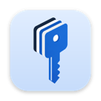

<!doctype html>
<meta charset="utf-8" />
<title>PassBook</title>
<style>
  /* macOS Settings is the reference, not a web dashboard: a source list on the
     left, grouped inset rows on the right, one accent colour, and no border
     that the platform would not draw itself. */
  :root {
    color-scheme: light dark;
    --bg: #eceef2;
    --bg2: #f5f6f9;
    --sidebar: rgba(244,245,248,0.72);
    --card: #ffffff;
    --line: rgba(0,0,0,0.075);
    --line2: rgba(0,0,0,0.13);
    --ink1: #16171a;
    --ink2: #54565c;
    --ink3: #8a8c94;
    --chip: rgba(0,0,0,0.045);
    --chip2: rgba(0,0,0,0.072);
    /* PassBook blue. The logo's own blue is #0068FC, which lands at 4.06:1
       on this background — under AA for the small accent text this app uses
       for "2 restricted" and "readable by only …". One shade down clears
       4.5:1 both as text on the background and as white on the button, and
       is indistinguishable from the logo at a glance. */
    --accent: #0060ee;
    --accent-ink: #ffffff;
    --accent-soft: rgba(0,96,238,0.10);
    --brand: #0068fc;
    --brand-deep: #011d3d;
    --sel: rgba(0,0,0,0.06);
    --good: #157033;
    --good-soft: rgba(21,112,51,0.12);
    --warn: #b3261e;
    --warn-soft: rgba(179,38,30,0.10);
    --radius: 12px;
    --shadow: 0 1px 2px rgba(16,24,40,.05), 0 6px 16px rgba(16,24,40,.05);
    /* The sheets (Add to PassBook, Add a device, Plan) are written against these three names, which
       were never given a value: every `var(--soft)` track and note box was transparent, and bold
       text in a sheet's lead was the same gray as the rest. They follow the tokens above, so the
       dark values come with them. */
    --ink: var(--ink1);
    --paper: var(--card);
    --soft: var(--chip);
  }
  @media (prefers-color-scheme: dark) {
    :root {
      --bg: #17181b;
      --bg2: #1e1f23;
      --sidebar: rgba(32,33,38,0.7);
      --card: #232429;
      --line: rgba(255,255,255,0.075);
      --line2: rgba(255,255,255,0.14);
      --ink1: #f2f3f5;
      --ink2: #b1b3bb;
      --ink3: #7b7d87;
      --chip: rgba(255,255,255,0.06);
      --chip2: rgba(255,255,255,0.1);
      /* Lifted for a dark field; its ink is the logo's own navy. */
      --accent: #4d9bff;
      --accent-ink: #05203f;
      --accent-soft: rgba(77,155,255,0.16);
      --brand: #4d9bff;
      --brand-deep: #011d3d;
      --sel: rgba(255,255,255,0.075);
      --good: #5fd07d;
      --good-soft: rgba(95,208,125,0.15);
      --warn: #ff7b70;
      --warn-soft: rgba(255,123,112,0.14);
      --shadow: 0 1px 2px rgba(0,0,0,.3), 0 8px 22px rgba(0,0,0,.26);
    }
  }
  * { box-sizing: border-box; margin: 0; padding: 0; }
  html, body { height: 100%; }
  body {
    display: flex; background: var(--bg); color: var(--ink1);
    font: 13px/1.45 -apple-system, BlinkMacSystemFont, "SF Pro Text", system-ui, sans-serif;
    -webkit-font-smoothing: antialiased;
  }

  /* ── icons ───────────────────────────────────────────────────────────── */
  /* One stroke weight, one grid, currentColor throughout, so an icon takes the
     colour of whatever it sits in and never needs a second file. */
  svg.ic {
    width: 16px; height: 16px; flex: 0 0 16px; fill: none; stroke: currentColor;
    stroke-width: 1.7; stroke-linecap: round; stroke-linejoin: round;
  }
  svg.navicon { width: 17px; height: 17px; flex-basis: 17px; }
  svg.pageicon { width: 20px; height: 20px; flex-basis: 20px; stroke-width: 1.6; }
  svg.emptyicon { width: 26px; height: 26px; flex-basis: 26px; stroke-width: 1.35; opacity: .5; }
  svg.tinyicon { width: 13px; height: 13px; flex-basis: 13px; }

  /* ── source list ─────────────────────────────────────────────────────── */
  nav {
    width: 216px; flex: 0 0 216px; background: var(--sidebar);
    backdrop-filter: saturate(180%) blur(20px);
    border-right: 1px solid var(--line);
    padding: 30px 10px 10px;
    display: flex; flex-direction: column;
  }
  .brand { display: flex; align-items: center; gap: 8px; padding: 6px 8px 14px; }
  .brand img { width: 22px; height: 22px; border-radius: 6px; }
  .brand span { font-size: 13.5px; font-weight: 700; letter-spacing: -0.012em; }
  .navlist { display: flex; flex-direction: column; gap: 1px; }
  .navlist button {
    display: flex; align-items: center; gap: 9px;
    width: 100%; text-align: left; padding: 6px 9px; border: 0; border-radius: 7px;
    background: transparent; color: var(--ink1); font: inherit; cursor: default;
  }
  .navlist button svg { color: var(--ink3); }
  .navlist button:hover { background: var(--sel); }
  .navlist button[aria-current="true"] { background: var(--accent); color: var(--accent-ink); font-weight: 600; }
  .navlist button[aria-current="true"] svg { color: var(--accent-ink); }
  .navlist button:focus-visible { outline: 2px solid var(--accent); outline-offset: 1px; }
  .navlabel { flex: 1; min-width: 0; }
  .navcount { font-size: 11px; color: var(--ink3); font-variant-numeric: tabular-nums; }
  .navlist button[aria-current="true"] .navcount { color: var(--accent-ink); opacity: .75; }
  nav .dot {
    width: 7px; height: 7px; border-radius: 50%;
    background: var(--accent); flex: 0 0 7px;
  }
  .navlist button[aria-current="true"] .dot { background: var(--accent-ink); }

  /* Whether anything can read a credential right now is the one fact worth
     seeing from every page, so it sits at the foot of the source list. */
  /* Settings and the vault footer travel together at the bottom of the list,
     so one `margin-top: auto` does for both. */
  .navbottom { margin-top: auto; display: flex; flex-direction: column; gap: 8px; }
  .navfoot {
    display: flex; align-items: center; gap: 4px; width: 100%;
    padding: 5px 6px 5px 9px; border: 1px solid var(--line); border-radius: 9px;
    background: var(--card); color: var(--ink1);
  }
  .navfoot:hover { border-color: var(--line2); }
  .navfoot-main {
    display: flex; align-items: center; gap: 9px; flex: 1; min-width: 0;
    text-align: left; border: 0; background: transparent; color: inherit;
    font: inherit; cursor: default; padding: 3px 0;
  }
  .navfoot-main:focus-visible { outline: 2px solid var(--accent); outline-offset: 1px; border-radius: 6px; }
  .navlock { width: 26px; height: 26px; flex-basis: 26px; }
  .navfoot .col { display: flex; flex-direction: column; min-width: 0; flex: 1; }
  .navfoot-t { font-size: 12px; font-weight: 600; }
  .navfoot-s { font-size: 11px; color: var(--ink3); white-space: nowrap; overflow: hidden; text-overflow: ellipsis; }
  .navfoot.open .navfoot-main svg { color: var(--good); }
  /* Locked AND encrypted is the good state; it should not wear the warning
     colour that a store sitting in the clear needs. */
  .navfoot.shut .navfoot-main svg { color: var(--good); }
  .navfoot.exposed { border-color: var(--warn); background: var(--warn-soft); }
  .navfoot.exposed .navfoot-main svg { color: var(--warn); }
  .navfoot.exposed .navfoot-t { color: var(--warn); }

  /* ── content ─────────────────────────────────────────────────────────── */
  main { flex: 1; overflow-y: auto; padding: 0 28px 32px; scroll-padding: 12px 0 78px; }
  /* The space above the page is a block inside it, not padding on the scroller. A header that sticks to
     the top of a padded scroller stops at the padding in Chromium (the app on Windows), which left a
     strip above it where the rows scrolling underneath showed through. */
  main::before { content: ""; display: block; height: 30px; }
  h2 { font-size: 21px; font-weight: 700; letter-spacing: -0.022em; }
  .lede { color: var(--ink2); margin: 3px 0 0; max-width: 62ch; }
  .pagehead { display: flex; gap: 12px; align-items: flex-start; margin-bottom: 18px; }
  .pagetile {
    width: 38px; height: 38px; flex: 0 0 38px; border-radius: 10px;
    background: var(--accent-soft); color: var(--accent);
    display: flex; align-items: center; justify-content: center; margin-top: 2px;
  }
  .pagetext { min-width: 0; }
  .statustile {
    width: 30px; height: 30px; flex: 0 0 30px; border-radius: 8px;
    display: flex; align-items: center; justify-content: center;
  }
  .statustile.good { background: var(--good-soft); color: var(--good); }
  .statustile.warn { background: var(--warn-soft); color: var(--warn); }
  .statustile.plain { background: var(--chip2); color: var(--ink2); }
  .statustile.sm { width: 26px; height: 26px; flex-basis: 26px; border-radius: 7px; }
  .statustile.sm svg { width: 14px; height: 14px; }
  .chips.inline { padding: 5px 0 0; }

  .group {
    background: var(--card); border: 1px solid var(--line);
    border-radius: var(--radius); overflow: hidden; margin-bottom: 16px;
    box-shadow: var(--shadow);
  }
  .group h3 {
    font-size: 11px; font-weight: 600; text-transform: uppercase; letter-spacing: 0.05em;
    color: var(--ink3); padding: 12px 14px 6px; background: transparent;
  }
  .row { display: flex; align-items: center; gap: 12px; padding: 11px 14px; }
  .row + .row { border-top: 1px solid var(--line); }
  .row .grow { flex: 1; min-width: 0; }
  .mono { font: 12px/1.4 ui-monospace, SFMono-Regular, Menlo, monospace; }
  .prewrap { white-space: pre-wrap; }

  .navlist.attn { margin-bottom: 6px; }
  .navcount.hot { background: var(--warn-soft); color: var(--warn); font-weight: 600; border-radius: 99px; padding: 0 7px; }
  .navlist button[aria-current="true"] .navcount.hot { background: rgba(255,255,255,.22); color: inherit; }
  .palhint { width: 100%; display: flex; align-items: center; gap: 8px; margin: 0 0 8px; padding: 6px 10px; border-radius: 8px;
    border: 1px solid var(--line); background: var(--chip); color: var(--ink3); font: inherit; font-size: 12px; cursor: pointer; }
  .palhint span { flex: 1; text-align: left; }
  .palhint kbd { font: inherit; font-size: 10.5px; padding: 0 5px; border-radius: 5px; background: var(--chip2); color: var(--ink2); }
  .palhint:hover { color: var(--ink1); }

  /* ── palette ─────────────────────────────────────────────────────────── */
  #palette { position: fixed; inset: 0; z-index: 900; background: rgba(0,0,0,.28); display: flex; justify-content: center; align-items: flex-start; padding-top: 14vh; }
  #palette[hidden] { display: none; }
  .palbox { width: min(560px, calc(100vw - 48px)); background: var(--card); border: 1px solid var(--line2); border-radius: 14px;
    box-shadow: 0 18px 50px rgba(0,0,0,.32); overflow: hidden; }
  #palq { width: 100%; border: 0; border-bottom: 1px solid var(--line); border-radius: 0; padding: 14px 16px; font-size: 15px; background: transparent; box-shadow: none; }
  #palq:focus { box-shadow: none; border-color: var(--line); }
  #pallist { max-height: 46vh; overflow-y: auto; padding: 6px; }
  .palrow { width: 100%; display: flex; align-items: center; gap: 10px; padding: 8px 10px; border: 0; border-radius: 8px; background: none;
    font: inherit; color: var(--ink1); text-align: left; cursor: pointer; }
  .palrow[aria-selected="true"] { background: var(--accent-soft); }
  .palrow .mono { font-size: 12.5px; overflow-wrap: anywhere; }
  .palrow span:nth-of-type(1) { flex: 1; min-width: 0; }
  .palkind { font-size: 11px; color: var(--ink3); flex: none; }
  .palnone { padding: 18px 12px; color: var(--ink3); font-size: 12.5px; }
  .palfoot { display: flex; gap: 14px; padding: 8px 14px; border-top: 1px solid var(--line); font-size: 11px; color: var(--ink3); }
  .palfoot b { font-weight: 600; color: var(--ink2); }

  /* ── tooltip ─────────────────────────────────────────────────────────── */
  /* The app's own, in place of the operating system's: that one arrives after a second, in the
     system's font and colours, and is the only thing in the window that does not look like the window.
     Inverse of the page, so it reads as a label laid over it in either appearance. */
  #tip { position: fixed; left: 0; top: 0; z-index: 1000; max-width: 300px; padding: 5px 9px; border-radius: 7px;
    background: var(--ink1); color: var(--bg); font-size: 11.5px; line-height: 1.4; font-weight: 500;
    box-shadow: 0 4px 14px rgba(0,0,0,.24); pointer-events: none; opacity: 0; visibility: hidden;
    transform: translateY(2px); transition: opacity .12s ease, transform .12s ease;
    white-space: normal; overflow-wrap: anywhere; }
  #tip.show { opacity: 1; visibility: visible; transform: none; }
  @media (prefers-reduced-motion: reduce) { #tip { transition: none; transform: none; } }

  /* ── balances ────────────────────────────────────────────────────────── */
  /* Amber is the one colour this page adds: between "fine" and "low" there is
     "getting there", and a meter with only two colours cannot say it. */
  :root { --mid: #a86400; --mid-soft: rgba(168,100,0,0.14); }
  @media (prefers-color-scheme: dark) { :root { --mid: #f0b24a; --mid-soft: rgba(240,178,74,0.16); } }
  /* Spacing here is all margin-bottom, like `.group`: each block pushes the next one away. A negative
     margin on the filters row once pulled the list up under it (1.10.8). */
  .balhead { display: flex; align-items: flex-end; justify-content: space-between; gap: 16px; margin-bottom: 18px; }
  .balctl { display: flex; align-items: center; gap: 8px; flex: none; }
  .stats4 { display: grid; grid-template-columns: repeat(4, minmax(0, 1fr)); gap: 10px; margin-bottom: 12px; }
  .stat { background: var(--card); border: 1px solid var(--line); border-radius: var(--radius); box-shadow: var(--shadow);
    padding: 12px 14px 13px; display: flex; flex-direction: column; gap: 2px; min-width: 0; }
  .statk { font-size: 11px; font-weight: 600; letter-spacing: .02em; color: var(--ink3); text-transform: uppercase; }
  .statv { font-size: 22px; font-weight: 700; letter-spacing: -0.025em; font-variant-numeric: tabular-nums;
    white-space: nowrap; overflow: hidden; text-overflow: ellipsis; }
  .stats { font-size: 11.5px; color: var(--ink3); }
  .stat.warn .statv { color: var(--warn); }
  .stat.good .statv { color: var(--good); }
  .trend { font-size: 11.5px; font-weight: 600; white-space: nowrap; font-variant-numeric: tabular-nums; }
  .trend.up { color: var(--mid); } .trend.down { color: var(--good); } .trend.flat { color: var(--ink3); }
  .group.chart { padding-bottom: 8px; }
  .daybars { padding: 6px 14px 4px; }
  .daybars svg { display: block; overflow: visible; }
  .daybars rect { fill: var(--chip2); }
  .daybars rect.on { fill: var(--accent); }
  .daybars rect.now { opacity: .55; }
  .daybars .base { stroke: var(--line2); stroke-width: 1; }
  .dayaxis { display: flex; justify-content: space-between; font-size: 10.5px; color: var(--ink3); padding-top: 4px; }
  .balfilters { display: flex; align-items: center; justify-content: space-between; gap: 10px 12px; margin: 8px 0 12px; flex-wrap: wrap; }
  .fchips { display: flex; gap: 6px; flex-wrap: wrap; }
  .fchip { font: inherit; font-size: 12px; color: var(--ink2); background: var(--chip); border: 1px solid transparent;
    border-radius: 99px; padding: 4px 6px 4px 11px; cursor: pointer; display: inline-flex; align-items: center; gap: 6px; }
  .fchip span { font-size: 10.5px; font-weight: 600; background: var(--chip2); border-radius: 99px; padding: 0 6px; min-width: 18px; text-align: center; }
  .fchip:hover { color: var(--ink1); }
  .fchip[aria-pressed="true"] { background: var(--accent-soft); color: var(--accent); font-weight: 600; }
  .fsel { display: flex; gap: 6px; }
  .ballist { padding: 0; }
  /* The column names stay in view while the list scrolls (Liam, 2026-10-19: "i dont know what each column is").
     A card clips with overflow: hidden, which would make it the header's scroller; clip trims the corners
     without that. */
  .group.ballist { overflow: clip; }
  /* main's 30px top padding is inside its scrollport: -30px puts the header flush with the top edge. */
  .brow.bhead { position: sticky; top: -30px; z-index: 2; background: var(--card); border-bottom: 1px solid var(--line); }
  /* Every row's button is one width, so every row's columns, and the header's, line up. */
  .brow > .act, .bhead .bph { width: 78px; flex: none; justify-content: center; text-align: center; padding-left: 0; padding-right: 0; }
  .brow.bhead + .brow { border-top: 0; }
  .bhead .bmain { cursor: default; padding-top: 9px; padding-bottom: 9px; }
  .bhead .bmain > span { font-size: 10.5px; font-weight: 600; letter-spacing: .03em; text-transform: uppercase; color: var(--ink3);
    white-space: nowrap; overflow: hidden; text-overflow: ellipsis; }
  .bhead .bfig { display: block; text-align: right; }
  .bhead .bph { visibility: hidden; }
  .brow { display: flex; flex-wrap: wrap; align-items: center; gap: 10px; padding: 0 12px 0 0; position: relative; }
  .brow + .brow { border-top: 1px solid var(--line); }
  .brow.low::before { content: ""; position: absolute; left: 0; top: 8px; bottom: 8px; width: 3px; border-radius: 0 3px 3px 0; background: var(--warn); }
  .bmain { flex: 1; min-width: 0; display: grid; grid-template-columns: 34px minmax(120px, 1.05fr) minmax(130px, 1.5fr) minmax(96px, .8fr) minmax(104px, .8fr);
    align-items: center; gap: 14px; padding: 12px 4px 12px 14px; font: inherit; color: inherit; text-align: left;
    background: none; border: 0; cursor: pointer; border-radius: var(--radius); }
  .bmain.still { cursor: default; grid-template-columns: 34px minmax(0, 1fr) auto; }
  button.bmain:hover { background: var(--sel); }
  .logo { width: 34px; height: 34px; border-radius: 9px; object-fit: contain; background: #fff;
    box-shadow: 0 0 0 1px var(--line2); display: block; }
  .logo.letter { background: none; box-shadow: none; display: flex; }
  .logo.letter .avatar { width: 34px; height: 34px; flex-basis: 34px; border-radius: 9px; font-size: 14px; }
  .bname, .bfig { display: flex; flex-direction: column; min-width: 0; gap: 1px; }
  .bname { display: block; } .bname .sub { display: block; }
  .bname strong, .bfig strong { font-size: 13.5px; font-weight: 600; }
  .bfig { align-items: flex-end; text-align: right; }
  .bfig strong { font-variant-numeric: tabular-nums; white-space: nowrap; }
  .bfig.spend { display: block; text-align: right; } .bfig.spend .sub { display: block; }
  .bfig .dim { color: var(--ink3); font-weight: 500; }
  .brow .sub { color: var(--ink3); font-size: 11.5px; overflow-wrap: anywhere; }
  .bname .tag { margin-left: 4px; vertical-align: 1px; }
  .meter { height: 8px; border-radius: 99px; background: var(--chip2); overflow: hidden; }
  .meter span { display: block; height: 100%; border-radius: 99px; background: var(--good); transition: width .3s ease; }
  .meter span.mid { background: var(--mid); } .meter span.low { background: var(--warn); }
  .meter.unknown { background: repeating-linear-gradient(135deg, var(--chip2) 0 6px, transparent 6px 12px); }
  .metercap { font-size: 11px; color: var(--ink3); margin-top: 5px; }
  .metercap b { color: var(--ink2); font-weight: 600; }
  .bdetail { flex: 0 0 100%; padding: 2px 0 12px 62px; }
  .bdetail .daybars { padding: 4px 0 10px; }
  .bfacts { display: grid; grid-template-columns: repeat(auto-fill, minmax(190px, 1fr)); gap: 8px 18px; }
  .bfacts div { display: flex; flex-direction: column; min-width: 0; }
  .bfacts .dlabel { font-size: 10.5px; color: var(--ink3); text-transform: uppercase; letter-spacing: .02em;
    min-height: 0; display: block; }
  .bfacts span + span { font-variant-numeric: tabular-nums; overflow-wrap: anywhere; }
  .bdetail .note { padding: 10px 0 0; }
  .bmark { display: flex; align-items: center; gap: 8px; flex-wrap: wrap; margin-top: 10px; }
  .bmark .note.flat { padding: 0; flex: 1; min-width: 200px; }
  .bellbtn { display: inline-flex; align-items: center; gap: 5px; }
  .bellbtn .tag { margin-left: 2px; }
  .row.top { align-items: flex-start; }
  .stepno { flex: 0 0 22px; width: 22px; height: 22px; border-radius: 99px; background: var(--chip2); color: var(--ink2);
    font-size: 11.5px; font-weight: 700; display: flex; align-items: center; justify-content: center; margin-top: 1px; }
  .alform { display: flex; align-items: center; gap: 8px; flex-wrap: wrap; margin-top: 9px; }
  .note.flat { padding: 0; }
  .morelink { font: inherit; font-size: 12px; color: var(--ink2); background: none; border: 0; cursor: pointer;
    display: inline-flex; align-items: center; gap: 4px; margin: 14px 2px 0; padding: 4px 6px; border-radius: 6px; }
  .morelink:hover { background: var(--sel); color: var(--ink1); }
  /* What needs fixing: one line per service, the fix under it, the one button that does it. */
  .tag.mid { font-weight: 600; border-radius: 99px; padding: 2px 9px; color: var(--mid); background: var(--mid-soft); }
  .balfix { padding: 0; }
  .balfix > h3 { display: flex; align-items: center; gap: 8px; }
  .fixrow { display: grid; grid-template-columns: 34px minmax(0, 1fr) auto; align-items: start; gap: 4px 14px; padding: 12px 14px; }
  .fixrow + .fixrow { border-top: 1px solid var(--line); }
  .fixrow .fixtext { min-width: 0; display: flex; flex-direction: column; gap: 3px; }
  .fixrow .fixtitle { display: flex; align-items: center; gap: 8px; flex-wrap: wrap; }
  .fixrow .fixtitle strong { font-size: 13.5px; font-weight: 600; }
  .fixrow .fixwhy { font-size: 12px; color: var(--ink2); overflow-wrap: anywhere; }
  .fixrow .fixkeys { font-size: 11.5px; color: var(--ink3); overflow-wrap: anywhere; }
  .fixrow .fixkeys code { font-size: 11px; margin-right: 2px; }
  .fixrow .fixacts { display: flex; gap: 6px; flex-wrap: wrap; justify-content: flex-end; }
  .fixrow .bkform, .bdetail .bkform { grid-column: 2 / -1; }
  .bkform { display: flex; flex-direction: column; gap: 8px; margin-top: 6px; padding: 10px 12px; border-radius: var(--radius);
    background: var(--chip); }
  .bkform .alform { margin-top: 0; }
  .bkform input { flex: 1; min-width: 200px; font: inherit; font-size: 12.5px; }
  .bkform code { font-size: 11.5px; }
  .baldone { margin: 0 0 12px; }
  .warntext { color: var(--warn); }
  .ebamount { display: inline-flex; align-items: center; gap: 4px; font-size: 13px; }
  .ebamount input { width: 120px; min-width: 0; flex: none; }
  .ebamount input.ebday { width: 44px; }
  .bkform .seg { align-self: flex-start; background: var(--chip2); }
  @media (max-width: 980px) {
    .stats4 { grid-template-columns: repeat(2, minmax(0, 1fr)); }
    .bmain { grid-template-columns: 34px minmax(110px, 1fr) minmax(120px, 1.3fr) minmax(90px, .8fr); }
    .bmain .bfig.spend { display: none; }
  }
  /* Narrower still: the figure takes the width it needs, so it never runs into the row's button. */
  @media (max-width: 860px) {
    .bmain { grid-template-columns: 34px minmax(96px, 1fr) minmax(90px, 1fr) 112px; }
  }
  /* ── end of balances ── */

  /* ── keys: filters, where a key is, rotating one ─────────────────────── */
  .addhint { display: flex; align-items: center; gap: 10px; padding: 0 14px 10px; min-height: 30px; }
  .pastedpanel { display: flex; align-items: flex-start; gap: 10px; padding: 12px 14px; border-top: 1px solid var(--line); flex-wrap: wrap; }
  .pastedpanel .grow { flex: 1; min-width: 260px; display: flex; flex-direction: column; gap: 7px; }
  .chip.dim { opacity: .5; }
  .keyfilters select { margin-left: auto; }
  .keyfilters { display: flex; align-items: center; justify-content: space-between; gap: 10px 12px; flex-wrap: wrap;
    padding: 9px 14px 10px; border-top: 1px solid var(--line); }
  .bare.refused { color: var(--warn); }
  .synclist { margin-top: 8px; }
  .synclist .dlabel { font-size: 10.5px; color: var(--ink3); text-transform: uppercase; letter-spacing: .02em; min-height: 0; display: block; margin-bottom: 4px; }
  .rotate { border: 1px solid var(--line); border-radius: 10px; padding: 4px 12px; background: var(--bg2); }
  .rotstep { display: flex; align-items: flex-start; gap: 10px; padding: 10px 0; flex-wrap: wrap; }
  .rotstep + .rotstep { border-top: 1px solid var(--line); }
  .rotstep .grow { flex: 1; min-width: 220px; }
  .stepno.done { background: var(--good-soft); color: var(--good); }
  .rotwhere { display: flex; flex-direction: column; gap: 6px; margin-top: 8px; }
  .rotwhere .dlabel { font-size: 10.5px; color: var(--ink3); text-transform: uppercase; letter-spacing: .02em; min-height: 0; display: block; margin-bottom: 3px; }
  .note.err { color: var(--warn); }
  .sub { color: var(--ink3); font-size: 11.5px; margin-top: 1px; }
  .note { color: var(--ink3); font-size: 11.5px; line-height: 1.5; padding: 10px 14px 13px; }
  .note code, .lede code {
    font: 11.5px ui-monospace, SFMono-Regular, Menlo, monospace;
    background: var(--chip2); border-radius: 4px; padding: 1px 5px;
  }

  .seg { display: inline-flex; background: var(--chip); border-radius: 8px; padding: 2px; gap: 2px; }
  .seg button {
    border: 0; background: transparent; color: var(--ink2); font: inherit; font-size: 12px;
    padding: 3px 10px; border-radius: 6px; cursor: default; white-space: nowrap;
  }
  .seg button[aria-pressed="true"] { background: var(--card); color: var(--ink1); font-weight: 600; box-shadow: 0 1px 2px rgba(0,0,0,0.12); }

  button.act {
    border: 1px solid var(--line2); background: var(--card); color: var(--ink1);
    font: inherit; font-size: 12px; padding: 5px 12px; border-radius: 7px; cursor: default;
    display: inline-flex; align-items: center; gap: 6px; white-space: nowrap;
  }
  button.act:hover { background: var(--sel); }
  button.act.primary { background: var(--accent); border-color: var(--accent); color: var(--accent-ink); font-weight: 600; }
  button.act.primary:hover { filter: brightness(1.07); }
  /* The same argument as `.iconbtn.done`, for a button that carries a word:
     the press is answered where it happened, not in the notice bar at the far
     end of the page. Green rather than the accent, so a glance can tell "this
     worked" from "this is the button you want". */
  button.act.done, button.act.primary.done {
    background: var(--good-soft); border-color: var(--good-soft); color: var(--good);
  }
  button.act.primary.done:hover { background: var(--good-soft); filter: none; }
  button.act.done svg { animation: pop .22s ease-out; }
  button.act.danger { color: var(--warn); }
  button.act.danger:hover { background: var(--warn-soft); }
  /* The button that removes a credential was styled `primary` — the same blue
     as Add and Save, which is how an app says "this is the one you want". A
     destructive confirmation should never wear the recommended colour. */
  button.act.destructive {
    background: var(--warn); border-color: var(--warn); color: #fff; font-weight: 600;
  }
  button.act.destructive:hover { background: var(--warn); filter: brightness(1.08); }
  .confirming { background: var(--warn-soft); border-radius: 8px; padding: 6px 8px; margin: -2px 0; }
  .confirming .sub { color: var(--warn); margin: 0; }
  button.act:disabled { opacity: .45; }
  button.act:focus-visible { outline: 2px solid var(--accent); outline-offset: 1px; }

  /* A word plus a coloured dot, so state reads without reading. */
  .tag { font-size: 11px; color: var(--ink3); white-space: nowrap;
         display: inline-flex; align-items: center; gap: 5px; }
  .tag.on, .tag.off, .tag.info { font-weight: 600; border-radius: 99px; padding: 2px 9px; }
  .tag.info { color: var(--accent); background: var(--accent-soft); }
  .tag.on { color: var(--good); background: var(--good-soft); }
  .tag.off { color: var(--warn); background: var(--warn-soft); }
  .tag.on::before, .tag.off::before, .tag.info::before {
    content: ""; width: 6px; height: 6px; border-radius: 50%; background: currentColor;
  }

  input { font: inherit; padding: 6px 9px; border-radius: 7px; border: 1px solid var(--line2);
          background: var(--bg2); color: var(--ink1); min-width: 0; }
  input:focus { outline: none; border-color: var(--accent); box-shadow: 0 0 0 3px var(--accent-soft); }
  select { font: inherit; padding: 5px 8px; border-radius: 7px; border: 1px solid var(--line2);
           background: var(--card); color: var(--ink1); }
  .add { display: flex; gap: 6px; padding: 10px 14px; border-top: 1px solid var(--line); }
  .add input:first-of-type { width: 190px; }
  .add input:last-of-type { flex: 1; }

  .banner { background: var(--accent); color: var(--accent-ink); border-radius: var(--radius);
            padding: 12px 14px; margin-bottom: 16px; display: flex; gap: 10px;
            align-items: flex-start; box-shadow: var(--shadow); }
  .banner > svg { margin-top: 1px; flex: 0 0 16px; }
  .banner .body { flex: 1; min-width: 0; }
  .banner b { font-weight: 700; }
  .banner .acts { display: flex; gap: 6px; margin-top: 9px; flex-wrap: wrap; }
  .banner button {
    border: 1px solid rgba(0,0,0,.2); background: rgba(255,255,255,.92); color: #16171a;
    font: inherit; font-size: 12px; font-weight: 600; padding: 4px 12px; border-radius: 7px; cursor: default;
  }
  .banner button:hover { background: #fff; }
  .empty {
    color: var(--ink3); padding: 26px 14px; font-size: 12.5px;
    display: flex; flex-direction: column; align-items: center; gap: 8px; text-align: center;
  }

  /* Add sits at the TOP of the list: on a store with hundreds of keys, an add
     row at the bottom is a scroll away and may as well not exist. */
  .addrow { display: grid; grid-template-columns: minmax(0,0.8fr) minmax(0,1fr) auto;
            gap: 6px; padding: 10px 14px; border-bottom: 1px solid var(--line); }
  /* One field and a button: the three-column grid stretched the button over
     half the window, which read as a second text field. */
  .addrow.two { grid-template-columns: minmax(0,1fr) auto; }
  .addrow.one { grid-template-columns: minmax(0,1fr); }
  .addrow.three { grid-template-columns: minmax(0,1fr) auto auto; }
  /* Consecutive rows of one form are one form, not a stack of cards. */
  .addrow + .addrow { border-top: 0; padding-top: 0; }
  .keyrow { padding: 7px 14px; }
  .keyrow.open { background: var(--bg2); padding-bottom: 12px; }
  /* Which of a few hundred rows is the one that just appeared. */
  .keyrow.justadded { animation: settle 2.2s ease-out; }
  @keyframes settle {
    0%, 55% { background: var(--good-soft); }
    100%    { background: transparent; }
  }
  /* The chevron turns down when the row is open — the only thing on the row
     that says which of a few hundred is the one you opened. */
  .disclose svg { transition: transform .18s cubic-bezier(.2,.8,.3,1); }
  .keyrow.open .disclose svg { transform: rotate(90deg); }
  /* Two columns: the labels, then a column exactly as wide as the widest
     control in it. Laying these out as flex rows with the control pushed right
     put a hand's width of nothing between a label and the thing it labels, and
     made it worse on a wider window. `display: contents` on the row lets both
     of its children join the grid, so every control starts at the same x. */
  .keydetail {
    margin: 9px 0 0; padding: 6px 0 0;
    display: grid; grid-template-columns: 150px minmax(0, max-content);
    gap: 5px 14px; align-items: center; justify-content: start; justify-items: start;
    border-top: 1px solid var(--line);
  }
  .drow { display: contents; }
  .dfull { grid-column: 1 / -1; }
  .usedline { margin: 2px 0 6px; font-size: 12px; color: var(--ink3); }
  .dlabel { font-size: 12.5px; color: var(--ink2); min-height: 28px; display: flex;
            align-items: center; }
  /* Names to choose from, as things you press rather than a column of
     checkboxes — the same shape as the switch above them. */
  .pickrow { display: flex; flex-wrap: wrap; align-items: center; gap: 6px; padding: 2px 0 6px; }
  .pickchip {
    border: 1px solid var(--line2); border-radius: 999px; padding: 3px 11px;
    background: var(--card); color: var(--ink2); cursor: default;
    font: 11.5px ui-monospace, SFMono-Regular, Menlo, monospace;
  }
  .pickchip:hover { border-color: var(--ink3); color: var(--ink1); }
  .pickchip[aria-pressed="true"] {
    background: var(--accent); border-color: var(--accent); color: var(--accent-ink);
  }
  .keydetail .addrow { margin: 0 0 6px; }
  .confirmstrip {
    display: flex; align-items: center; gap: 10px; margin-top: 8px;
    padding: 8px 10px; border-radius: 8px; background: var(--warn-soft);
    font-size: 12px; color: var(--ink1);
  }
  .confirmstrip .grow { flex: 1; }
  /* The strip under a settings row lines up with the row's own padding. */
  .group > .confirmstrip { margin: 0 14px 12px; }
  .signinform .formgrid { display: grid; grid-template-columns: max-content minmax(0, 1fr);
    gap: 8px 14px; align-items: center; padding: 4px 14px 2px; }
  .signinform .formgrid label { font-size: 12.5px; color: var(--ink2); }
  .signinform .formgrid label .sub { display: inline; margin-left: 4px; }
  .signinform .formacts { display: flex; justify-content: flex-end; gap: 8px; padding: 0 14px 12px; }
  .linkbtn { background: none; border: 0; padding: 0; font: inherit; color: var(--accent);
    cursor: pointer; text-decoration: underline; text-underline-offset: 2px; }
  @media (max-width: 560px) {
    .signinform .formgrid { grid-template-columns: minmax(0, 1fr); gap: 4px; }
    .signinform .formgrid input, .signinform .formgrid select { margin-bottom: 6px; }
  }
  /* Search on the left, the two things you do occasionally on the right. */
  .toolbar {
    display: flex; align-items: center; gap: 8px; padding: 10px 12px;
    border-bottom: 1px solid var(--line);
  }
  .toolbar .grow { flex: 1; }
  /* The search box, the add form and the filters stay in view however far down the list is. Half-way
     down a few hundred keys the search box was a scroll away, and a key added from the form appeared
     somewhere off screen while the form sat at the top. `clip` rather than `hidden` on the card, for the
     reason the Balances list gives: a card that scrolls its own overflow keeps the header to itself. */
  .group.keys { overflow: clip; }
  .keyshead {
    position: sticky; top: 0; z-index: 3; background: var(--card);
    border-radius: var(--radius) var(--radius) 0 0; box-shadow: 0 1px 0 var(--line);
  }
  .searchcount { font-size: 11.5px; color: var(--ink3); white-space: nowrap; font-variant-numeric: tabular-nums; }
  .empty .emptyacts { display: flex; gap: 8px; flex-wrap: wrap; justify-content: center; }
  .addhint .err { font-size: 11.5px; }
  .addhint .spinner, .addrow .spinner, .valedit .spinner, .note .spinner, .signinform .spinner { display: inline-block; vertical-align: -2px; margin-right: 6px; }
  button.act.primary .spinner { border-color: rgba(255,255,255,.35); border-top-color: #fff; }
  /* What the keyboard does here, shown while it is being used here: floating at the foot of the page,
     where it is in view however long the list is. */
  .listhint {
    position: sticky; bottom: 10px; z-index: 4; width: max-content; max-width: 100%; margin: 12px auto 0;
    display: flex; flex-wrap: wrap; justify-content: center; gap: 4px 14px; padding: 6px 14px;
    border-radius: 999px; background: var(--card); border: 1px solid var(--line2);
    box-shadow: 0 6px 22px rgba(0, 0, 0, .14); font-size: 11px; color: var(--ink3);
  }
  .listhint { pointer-events: none; }
  .listhint[hidden] { display: none; }
  .listhint kbd { margin: 0 4px 0 0; }
  .countnote { text-align: center; margin-top: 12px; }
  .keyrow + .keyrow { border-top: 1px solid var(--line); }
  .keyrow:hover { background: var(--bg2); }
  .keyrow .head { display: flex; align-items: center; gap: 8px; }
  .keyrow .named {
    flex: 1; min-width: 0; display: flex; align-items: center; gap: 9px;
    align-self: stretch; cursor: default;
  }
  .keyrow .head .mono { flex: 0 1 auto; min-width: 0; overflow-wrap: anywhere; font-size: 12.5px; }
  /* A name is text to select and copy: it takes the text cursor and a selection, where the rest of the
     row stays a thing to click. The copy beside it is there for whoever would rather press once. */
  .keyrow .keyname { cursor: text; user-select: text; -webkit-user-select: text; }
  .iconbtn.namecopy { width: 22px; height: 22px; flex: 0 0 22px; margin-left: -5px; color: var(--ink3); opacity: .55; }
  .iconbtn.namecopy svg { width: 13px; height: 13px; }
  .keyrow:hover .iconbtn.namecopy, .iconbtn.namecopy:focus-visible, .iconbtn.namecopy.done { opacity: 1; }
  .keyrow .val {
    width: 100%; margin-top: 7px; font: 12px/1.4 ui-monospace, SFMono-Regular, Menlo, monospace;
    padding: 5px 9px; border-radius: 7px; border: 1px solid var(--accent);
    background: var(--card); color: var(--ink1);
    box-shadow: 0 0 0 3px var(--accent-soft);
  }
  /* A revealed value is a picture, and the box around it is the old field's box
     so the row does not jump when one appears. The image is drawn at `12 * dpr`
     so it is crisp on a Retina panel and then displayed at a width of
     `naturalWidth / dpr`, which is set on load rather than in CSS: only the
     image knows how tall the font made it, and guessing here would scale the
     glyphs by whatever the guess was wrong by. The height below is what it
     occupies until that lands, so the row does not jump either. */
  .keyrow .val.picture {
    display: flex; align-items: center; min-height: 26px; overflow-x: auto;
    cursor: text;
  }
  .keyrow .val.picture img { display: block; height: 16px; width: auto; max-width: none; }
  .keyrow .val.picture img.measured { height: auto; }
  .keyrow .val.empty { color: var(--ink3); font-style: italic; }
  /* Changing a value: the box, and the two things you can do with what you typed. Saving used to be
     "click somewhere else", which is also what somebody does to abandon a field. */
  .valedit { display: flex; align-items: center; gap: 6px; margin-top: 7px; }
  .valedit .val { margin-top: 0; flex: 1; min-width: 0; width: auto; }
  .keyrow .valnote { margin-top: 6px; display: flex; align-items: center; gap: 10px; flex-wrap: wrap; }
  .keyhints { margin-left: auto; white-space: nowrap; }
  .keyhints kbd, .listhint kbd {
    font: inherit; font-size: 10.5px; padding: 0 5px; margin: 0 2px 0 8px; border-radius: 5px;
    background: var(--chip2); color: var(--ink2);
  }
  /* The row the arrow keys are on. A bar down the leading edge, so it reads on an open row too, where a
     background alone would be the same gray the open row already has. */
  .keyrow.cursor { background: var(--bg2); box-shadow: inset 3px 0 0 var(--accent); }
  /* Shown from the moment the eye is pressed until the picture is on screen.
     Same box as the value it is standing in for, so the row does not move when
     one becomes the other. */
  .keyrow .val.loading { display: flex; align-items: center; gap: 8px; color: var(--ink3); }
  .spinner {
    width: 12px; height: 12px; border-radius: 50%; flex: none;
    border: 2px solid var(--line2); border-top-color: var(--ink3);
    animation: spin .6s linear infinite;
  }
  /* Sized to sit where a 24-grid icon sat, so the button does not resize. */
  .iconbtn .spinner { width: 14px; height: 14px; }
  @keyframes spin { to { transform: rotate(360deg); } }
  /* A person who has asked not to see motion gets a pulse instead of a spin,
     and still gets told something is happening. */
  @media (prefers-reduced-motion: reduce) {
    .spinner { animation: pulse 1.2s ease-in-out infinite; }
    @keyframes pulse { 50% { opacity: .35; } }
  }
  /* A hidden value is a chip beside its name, not a field of its own: a row of
     empty grey per key is most of what you see on a store of any size. */
  /* Not decoration: this is the one place a person looking at a key can learn
     that the lock in the sidebar does not cover it. */
  .bare {
    display: inline-flex; align-items: center; gap: 4px; white-space: nowrap;
    font-size: 10.5px; font-weight: 600; letter-spacing: .01em;
    color: var(--warn); background: var(--warn-soft);
    border-radius: 5px; padding: 2px 7px;
  }
  /* Guarded is the good state and must not wear the warning colour `bare`
     uses — they sit on the same row, and amber beside amber would read as two
     problems rather than one problem and one protection. */
  .bare.guarded { color: var(--ink2); background: var(--chip); }
  .masked {
    font: 10.5px ui-monospace, SFMono-Regular, Menlo, monospace; letter-spacing: .1em;
    color: var(--ink3); background: var(--chip); border-radius: 5px;
    padding: 2px 8px; white-space: nowrap;
  }
  .aud .used { color: var(--ink3); }

  /* Row actions are icons: four words on every row of a few hundred is more
     text than the key names they sit beside. */
  .iconbtn {
    display: inline-flex; align-items: center; justify-content: center;
    width: 28px; height: 28px; flex: 0 0 28px; border: 0; border-radius: 7px;
    background: transparent; color: var(--ink3); cursor: default;
  }
  .iconbtn:hover { background: var(--sel); color: var(--ink1); }
  .iconbtn.on { background: var(--accent-soft); color: var(--accent); }
  /* A notice at the far end of the page is not feedback for a button press —
     the eye is on the button. It turns into a tick where it stands. */
  .iconbtn.done { background: var(--good-soft); color: var(--good); }
  /* The same argument as the tick above, for the wait rather than the result.
     A reveal costs a subprocess, and the eye is where the person is looking
     when they press it — so the spinner is on the button, not only in the row
     underneath where the value will land. */
  .iconbtn.working { background: var(--accent-soft); }
  .iconbtn.working .spinner { border-top-color: var(--accent); border-color: var(--accent-soft); border-top-color: var(--accent); }
  .iconbtn.done svg { animation: pop .22s ease-out; }
  .iconbtn:active { transform: scale(0.92); }
  @keyframes pop {
    0%   { transform: scale(.55); opacity: 0; }
    60%  { transform: scale(1.14); opacity: 1; }
    100% { transform: scale(1); opacity: 1; }
  }
  @media (prefers-reduced-motion: reduce) {
    .iconbtn.done svg { animation: none; }
    .iconbtn:active { transform: none; }
    button.act.done svg { animation: none; }
    /* The mark still has to be visible without the fade that makes it one. */
    .keyrow.justadded { animation: none; background: var(--good-soft); }
  }
  .iconbtn.danger:hover { background: var(--warn-soft); color: var(--warn); }
  .iconbtn:focus-visible { outline: 2px solid var(--accent); outline-offset: 1px; }
  /* Kept for the few text buttons that still read better as words. */
  .icon {
    border: 1px solid transparent; background: transparent; color: var(--ink3);
    font: inherit; font-size: 11.5px; padding: 3px 8px; border-radius: 6px; cursor: default;
    display: inline-flex; align-items: center; gap: 4px;
  }
  .icon:hover { background: var(--sel); color: var(--ink1); }
  .icon.on { color: var(--accent); font-weight: 600; }
  .icon.danger:hover { color: var(--warn); }

  .hist { margin-top: 9px; border-top: 1px solid var(--line); padding-top: 8px; }
  .hist .ev { display: flex; gap: 10px; align-items: baseline; padding: 3px 0; }
  .hist .ev .when { color: var(--ink3); font-size: 11px; white-space: nowrap; width: 118px; flex: 0 0 118px; }
  .hist .ev .who { flex: 1; min-width: 0; font-size: 11.5px; overflow-wrap: anywhere; }
  .hist .ev .op { color: var(--ink3); font-size: 11px; }
  .hist .proof {
    font: 10px/1.4 ui-monospace, SFMono-Regular, Menlo, monospace;
    color: var(--ink3); overflow-wrap: anywhere; padding: 0 0 4px 128px;
  }
  .hist .foot { color: var(--ink3); font-size: 11px; padding-top: 6px; }

  /* A store can hold hundreds of keys, so find-as-you-type is the primary way
     in, not a convenience bolted to the side. */
  .grouphead { display: flex; align-items: center; gap: 10px; padding: 11px 14px 9px; }
  .grouphead h3 { padding: 0; flex: 1; }
  .searchwrap { position: relative; display: inline-flex; align-items: center; }
  .searchwrap > svg { position: absolute; left: 9px; color: var(--ink3); pointer-events: none; }
  .search {
    font: inherit; font-size: 12px; width: 210px; padding: 5px 9px 5px 29px;
    border-radius: 7px; border: 1px solid var(--line2);
    background: var(--bg2); color: var(--ink1);
  }
  .err { color: var(--warn); }
  /* Pinned to the bottom of the scroll, not appended to the end of it.
     It used to be the last child of a page that can be several screens long,
     so a refused sign-in put its reason somewhere nobody was looking and the
     button read as dead. An error you have to scroll to find is an error you
     did not report. */
  .noticebar {
    position: sticky; bottom: 0; z-index: 5;
    display: flex; gap: 8px; align-items: flex-start; margin-top: 14px;
    padding: 10px 12px; border-radius: 10px; font-size: 12.5px;
    /* Tinted, and solid: it floats over the page, and a see-through bar over text reads as neither. */
    background: linear-gradient(var(--warn-soft), var(--warn-soft)), var(--card); color: var(--warn);
    box-shadow: 0 6px 22px rgba(0, 0, 0, .18);
    border: 1px solid currentColor;
  }
  .noticebar .grow { flex: 1; }
  .noticebar button {
    all: unset; cursor: pointer; opacity: .65; display: flex; padding: 0 2px;
  }
  .noticebar button:hover { opacity: 1; }
  .noticebar.good { background: linear-gradient(var(--good-soft), var(--good-soft)), var(--card); color: var(--good); }
  .noticebar svg { margin-top: 1px; }

  /* Groups on the Keys page. A monogram carries a colour the eye can aim at,
     which a row of identical grey headings does not. */
  .grouprow {
    display: flex; align-items: center; gap: 9px; padding: 9px 14px;
    cursor: default; user-select: none; background: var(--bg2);
    border-top: 1px solid var(--line);
  }
  .grouprow:hover { background: var(--chip); }
  .grouprow:focus-visible { outline: 2px solid var(--accent); outline-offset: -2px; }
  .grouprow .caret { color: var(--ink3); display: flex; transition: transform .13s ease; }
  .grouprow[aria-expanded="true"] .caret { transform: rotate(90deg); }
  .morerow {
    display: flex; align-items: center; justify-content: center; gap: 8px;
    width: 100%; padding: 11px 14px; font: inherit; font-size: 12px;
    color: var(--ink3); background: var(--bg2); border: 0;
    border-top: 1px solid var(--line); cursor: pointer;
  }
  .morerow:hover { background: var(--chip); color: var(--ink); }
  .morerow .caret, .morerow svg { transform: rotate(90deg); }
  .avatar {
    width: 24px; height: 24px; flex: 0 0 24px; border-radius: 7px;
    display: flex; align-items: center; justify-content: center;
    font-size: 11px; font-weight: 700;
    background: hsl(var(--h) 68% 92%); color: hsl(var(--h) 50% 34%);
  }
  @media (prefers-color-scheme: dark) {
    .avatar { background: hsl(var(--h) 38% 24%); color: hsl(var(--h) 68% 76%); }
  }
  .gname { font-weight: 600; font-size: 12.5px; color: var(--ink1); }
  .gcount { font-size: 11px; color: var(--ink3); background: var(--chip2);
    border-radius: 99px; padding: 1px 7px; font-variant-numeric: tabular-nums; }
  .grestricted { font-size: 11px; color: var(--accent); margin-left: auto;
    display: inline-flex; align-items: center; gap: 4px; }

  /* Audience */
  .aud { display: flex; align-items: center; gap: 8px; flex-wrap: wrap; margin-top: 6px; }
  .aud .restricted { color: var(--accent); display: inline-flex; align-items: center; gap: 4px; }
  .audedit { border: 1px solid var(--line2); border-radius: 10px; padding: 10px 12px;
    margin-top: 8px; background: var(--bg2); }
  .audmodes { display: flex; gap: 6px; flex-wrap: wrap; margin: 8px 0; }
  .audlist { display: flex; flex-wrap: wrap; gap: 10px; margin: 8px 0; }
  .audlist label { display: flex; align-items: center; gap: 5px; font-size: 12px; }
  .audedit .note { padding: 4px 0 0; }

  /* The matrix */
  .chips { display: flex; flex-wrap: wrap; gap: 6px; padding: 2px 14px 12px; }
  .asks { color: var(--ink3); font-weight: 600; font-size: 10px;
    font-variant-numeric: tabular-nums; }
  .chip { font-size: 11.5px; background: var(--chip2); border-radius: 99px;
    padding: 3px 10px; color: var(--ink2);
    display: inline-flex; align-items: center; gap: 5px; }
  .factors { display: flex; flex-wrap: wrap; gap: 6px; margin-top: 5px; }
  .matrixwrap { overflow-x: auto; }
  table.matrix { border-collapse: collapse; width: 100%; font-size: 12px; }
  table.matrix th, table.matrix td { text-align: left; padding: 7px 12px;
    border-bottom: 1px solid var(--line); white-space: nowrap; }
  table.matrix thead th { color: var(--ink3); font-weight: 600; font-size: 11px;
    text-transform: uppercase; letter-spacing: .04em; background: var(--bg2); }
  table.matrix tbody tr:hover { background: var(--bg2); }
  .kname { max-width: 22rem; overflow: hidden; text-overflow: ellipsis; }
  .gtag { font-size: 10.5px; color: var(--ink3); margin-left: 6px; }
  td.cell { text-align: center; }
  td.cell svg { width: 15px; height: 15px; }
  td.cell.yes { color: var(--good); }
  td.cell.no { color: var(--warn); }
  td.cell.ask { color: var(--accent); }
  .snippet { background: var(--bg2); border: 1px solid var(--line); border-radius: 8px;
    padding: 9px 11px; font-family: ui-monospace, SFMono-Regular, Menlo, monospace;
    font-size: 11.5px; overflow-x: auto; margin: 4px 14px 10px; color: var(--ink1); }

  select.scope { font: inherit; font-size: 11.5px; padding: 2px 6px; border-radius: 6px;
    border: 1px solid var(--line2); background: var(--card); color: var(--ink2); max-width: 15rem; }
  select.scope:hover { color: var(--ink1); }
  .recovery {
    font-size: 15px; letter-spacing: .06em; margin-top: 5px;
    background: var(--chip2); border-radius: 7px; padding: 7px 10px;
    display: inline-block; user-select: all;
  }
  .viatag {
    display: inline-flex; align-items: center; gap: 4px; margin-left: 6px;
    font-size: 10.5px; font-weight: 600; border-radius: 5px; padding: 1px 6px;
    color: var(--ink3); background: var(--chip2);
  }
  .viatag.grant { color: var(--good); background: var(--good-soft); }
  .scope.locked { font-size: 11.5px; color: var(--ink3); background: var(--chip);
    border-radius: 6px; padding: 2px 8px; display: inline-flex; align-items: center; gap: 4px; }

  input.pick { margin: 0 .1rem 0 0; accent-color: var(--accent); cursor: pointer;
    width: 14px; height: 14px; flex: 0 0 14px; }
  .bulkbar { display: flex; flex-wrap: wrap; align-items: center; gap: 8px;
    padding: 9px 14px; border-top: 1px solid var(--line); border-bottom: 1px solid var(--line);
    background: var(--accent-soft); position: sticky; top: 0; z-index: 2; }
  .bulkbar .grow { flex: 1; min-width: 0; }
  .bulkbar .warn { color: var(--warn); font-size: 12px;
    display: inline-flex; align-items: center; gap: 6px; }
  .bulkbar.confirm { background: var(--warn-soft); }
  .bulkbar .note { flex-basis: 100%; margin: 0; padding: 4px 0 0; }

  /* A panel that is present without asking to be looked at. */
  .group.quiet { background: transparent; border-style: dashed; box-shadow: none; }
  .group.quiet .row { color: var(--ink3); }
  .pathval { font-size: 11.5px; color: var(--ink3); margin-left: auto;
             overflow-wrap: anywhere; text-align: right; }

  /* ── folded-away explanation ─────────────────────────────── */
  .aside { margin: 8px 12px 10px; }
  .aside > summary {
    list-style: none; cursor: default; display: inline-flex; align-items: center; gap: 5px;
    font-size: 12px; color: var(--ink3); padding: 2px 0;
  }
  .aside > summary::-webkit-details-marker { display: none; }
  .aside > summary::before {
    content: ""; width: 5px; height: 5px; border-right: 1.4px solid currentColor;
    border-bottom: 1.4px solid currentColor; transform: rotate(-45deg); margin-right: 2px;
    transition: transform .16s ease;
  }
  .aside[open] > summary::before { transform: rotate(45deg); }
  .aside > summary:hover { color: var(--ink2); }
  .asidebody { font-size: 12px; line-height: 1.55; color: var(--ink3); padding: 4px 0 2px; }
  .asidebody p { margin: 0 0 7px; }
  .asidebody p:last-child { margin-bottom: 0; }

  /* ── settings shelf ──────────────────────────────────────── */
  /* One row per pane, the shape macOS uses for the same job: an icon, a name,
     a line saying what is inside, and a chevron. Nothing on this page does
     anything by itself — it only takes you somewhere. */
  .group.tight { padding: 6px; }
  .settingrow {
    display: flex; align-items: center; gap: 12px; width: 100%; text-align: left;
    padding: 10px 10px; border: 0; border-radius: 10px; background: transparent;
    color: var(--ink1); font: inherit; cursor: default;
  }
  .settingrow + .settingrow { box-shadow: 0 -1px 0 var(--line); }
  .settingrow:hover { background: var(--sel); box-shadow: none; }
  .settingrow:hover + .settingrow { box-shadow: none; }
  .settingrow .grow { flex: 1; min-width: 0; display: grid; gap: 1px; }
  .settingname { font-weight: 550; font-size: 13.5px; }
  .row .settingname + .sub { display: block; color: var(--ink3); font-size: 11.5px; }
  .settingrow > svg:last-child { color: var(--ink3); flex: 0 0 13px; }
  .backlink {
    display: inline-flex; align-items: center; gap: 3px; margin: 0 0 2px -6px;
    padding: 3px 8px 3px 6px; border: 0; border-radius: 7px; background: transparent;
    color: var(--accent); font: inherit; font-size: 12.5px; cursor: default;
  }
  .backlink:hover { background: var(--sel); }
  .backlink svg { transform: rotate(180deg); }

  /* ── the gate ─────────────────────────────────────────────────────────── */
  /* Who's working? — the same screen Hivemind Content Studio opens with, so
     the two apps ask the same question the same way. A workspace is a store
     and, now, a key: picking one is picking both. */
  #gate {
    position: fixed; inset: 0; z-index: 100; display: grid; place-items: center;
    padding: 24px; background: var(--bg); overflow-y: auto;
  }
  /* An id beats [hidden] on specificity, so `display: grid` above would keep
     this on screen after gate.hidden = true — an empty, opaque, full-window
     sheet over the store, which is what a signed-in window would show. The
     attribute has to be given a rule of its own to mean anything here. */
  #gate[hidden] { display: none; }
  .gwrap { width: min(860px, 100%); display: grid; gap: 28px; justify-items: center; }
  .ghead { display: grid; justify-items: center; gap: 6px; margin-bottom: 4px; }
  .gmark {
    width: 40px; height: 40px; display: grid; place-items: center; border-radius: 10px;
    background: var(--accent-soft); color: var(--accent);
  }
  .geyebrow {
    margin: 0; font-size: 10px; font-weight: 600; text-transform: uppercase;
    letter-spacing: .1em; color: var(--accent); text-align: center;
  }
  #gate h1 { margin: 6px 0 0; font-size: 28px; font-weight: 650; letter-spacing: -.02em; text-align: center; }
  .glede { margin: 8px 0 0; color: var(--ink3); font-size: 13px; line-height: 1.55; text-align: center; max-width: 52ch; text-wrap: balance; }
  /* Every tile is the same width, whatever its name. Sized by its label, one
     long workspace name ("International Partnerships and Regulatory Affairs
     Working Group…") stretched its own tile across half the window and threw
     every row out of line. The name wraps to two lines and stops; the full
     name is on hover and in the sign-in card. */
  .gtiles {
    display: flex; flex-wrap: wrap; justify-content: center; gap: 26px 18px;
    width: 100%; padding: 0; margin: 0; list-style: none;
  }
  .gtiles > li { width: 124px; display: flex; justify-content: center; }
  .gtile { width: 100%; display: grid; gap: 9px; justify-items: center; align-content: start; background: none; border: 0; padding: 0; cursor: pointer; font: inherit; color: inherit; }
  /* The tile as an object rather than a swatch.
   *
   *  The first version was the studio's rule copied onto a different page: a
   *  short two-stop gradient with the near-black page colour as its letter.
   *  That works on #0c0c0e, where a saturated square is the only lit thing on
   *  screen. On a light background the same square has nothing to separate it
   *  from the page, and black-on-mid-purple is a letter stamped on top instead
   *  of a letter belonging to it.
   *
   *  So: a wider ramp with a hue turn across it, a light source (the inset
   *  highlight along the top edge, a shadow beneath), a rim that keeps its
   *  edge on a pale page, and a letter in the tile's own light rather than in
   *  the page's ink. */
  .gav {
    position: relative; width: 96px; height: 96px; border-radius: 22px;
    display: grid; place-items: center; isolation: isolate;
    font-size: 38px; font-weight: 700; letter-spacing: -.02em;
    color: rgba(255, 255, 255, .95);
    text-shadow: 0 1px 2px rgba(0, 0, 0, .22);
    box-shadow:
      inset 0 1.5px 0 rgba(255, 255, 255, .45),
      inset 0 0 0 1px rgba(255, 255, 255, .16),
      0 10px 20px -8px var(--gav-cast, rgba(0, 0, 0, .38)),
      0 2px 6px -2px rgba(0, 0, 0, .18);
    transition: transform .18s cubic-bezier(.2, .8, .3, 1), box-shadow .18s ease;
  }
  /* The sheen. A single soft highlight off the top-left, which is what makes a
     flat gradient read as a surface with a light on it. */
  .gav::after {
    content: ""; position: absolute; inset: 0; border-radius: inherit; z-index: -1;
    background: radial-gradient(120% 88% at 22% 4%, rgba(255, 255, 255, .34), transparent 62%);
  }
  .gtile:hover .gav, .gtile:focus-visible .gav {
    transform: translateY(-3px) scale(1.035);
    box-shadow:
      inset 0 1.5px 0 rgba(255, 255, 255, .5),
      inset 0 0 0 1px rgba(255, 255, 255, .2),
      0 18px 30px -10px var(--gav-cast, rgba(0, 0, 0, .45)),
      0 3px 8px -2px rgba(0, 0, 0, .2);
  }
  /* Dashed, and drawn as a real border rather than an inset shadow — a shadow
     cannot be dashed, and the dashes are what say "this one is not a workspace
     yet, it is the way to make one". */
  .gav.add {
    background: none; color: var(--ink3); font-size: 34px; font-weight: 300;
    text-shadow: none; box-shadow: none;
    border: 2px dashed var(--line2);
  }
  .gav.add::after { background: none; }
  .gtile:hover .gav.add, .gtile:focus-visible .gav.add {
    color: var(--ink1); border-color: var(--ink3); box-shadow: none;
  }
  .gtile:focus-visible { outline: none; }
  /* Scoped to the tile: `.gname` is also the key list's group heading, and an
     unscoped rule here turned those headings grey and 14px. Two lines are
     always reserved, so the badges under one-line and two-line names sit on
     the same line across a row. */
  .gtile .gname {
    max-width: 100%; min-height: 2.6em; font-weight: 400; font-size: 13.5px; line-height: 1.3;
    color: var(--ink3); text-align: center;
    display: -webkit-box; -webkit-box-orient: vertical; -webkit-line-clamp: 2; line-clamp: 2;
    overflow: hidden; overflow-wrap: anywhere; transition: color .16s;
  }
  .gtile:hover .gname, .gtile:focus-visible .gname { color: var(--ink1); }
  .gbadge { font-size: 10px; text-transform: uppercase; letter-spacing: .08em; color: var(--ink3); }
  .gbadge.on { color: var(--ok); }
  /* Three stops with a hue turn, so the ramp has somewhere to go across 118px
     — two stops of one hue is the thing that reads as a placeholder swatch.
     `--gav-cast` tints the shadow with the tile's own colour, which is what
     stops six squares looking like six stickers on the same grey page. */
  .c-amber  { background: linear-gradient(145deg, #ffcc4d, #f2a413 52%, #dc7d05);
              --gav-cast: rgba(217, 138, 8, .45); }
  .c-violet { background: linear-gradient(145deg, #b79dff, #8b6cf3 52%, #6741e0);
              --gav-cast: rgba(103, 65, 224, .45); }
  /* Started a stop lighter and the white letter sat on top of it rather than
     in it. Every ramp here has to keep enough weight under the monogram. */
  .c-teal   { background: linear-gradient(145deg, #4fdcc4, #1cbda8 52%, #0a8a80);
              --gav-cast: rgba(10, 138, 128, .45); }
  .c-rose   { background: linear-gradient(145deg, #ffb3bd, #fb6f86 52%, #e8365a);
              --gav-cast: rgba(232, 54, 90, .45); }
  .c-sky    { background: linear-gradient(145deg, #93dcfd, #38b3f0 52%, #0b82d4);
              --gav-cast: rgba(11, 130, 212, .45); }
  .c-lime   { background: linear-gradient(145deg, #cdf58a, #97d63f 52%, #629f16);
              --gav-cast: rgba(98, 159, 22, .45); }
  .gcard {
    width: min(400px, 100%); display: grid; gap: 14px; padding: 30px;
    border: 1px solid var(--line); border-radius: 14px; background: var(--bg2);
    box-shadow: 0 24px 64px -24px rgba(0, 0, 0, .55);
  }
  .gcard h2 { margin: 0; font-size: 19px; font-weight: 640; letter-spacing: -.01em; }
  .gwho { display: flex; align-items: center; gap: 12px; }
  .gwho .gav { width: 46px; height: 46px; border-radius: 13px; font-size: 20px;
               box-shadow: inset 0 1px 0 rgba(255, 255, 255, .4),
                           inset 0 0 0 1px rgba(255, 255, 255, .14),
                           0 4px 10px -4px var(--gav-cast, rgba(0, 0, 0, .35)); }
  .gwho .gav.add { font-size: 22px; box-shadow: inset 0 0 0 2px var(--line2); }
  .gcard button { min-height: 46px; border: 0; border-radius: 10px; font: 600 14px inherit; cursor: pointer; }
  /* The one colour in this file that was written down instead of named. It was
     a near-black brown, chosen when the accent was amber, and it stayed put
     when the accent went blue — black text on a blue button. `--accent-ink` is
     the token that already means "legible on the accent", in both themes. */
  .gprimary {
    background: var(--accent); color: var(--accent-ink);
    display: flex; align-items: center; justify-content: center; gap: 9px;
  }
  .gprimary:disabled { opacity: .55; cursor: default; }
  .gsecondary { background: var(--chip); color: var(--ink1); border: 1px solid var(--line2) !important; }
  .gdiv { display: flex; align-items: center; gap: 12px; color: var(--ink3); font-size: 11px; text-transform: uppercase; letter-spacing: .12em; }
  .gdiv::before, .gdiv::after { content: ""; flex: 1; height: 1px; background: var(--line); }
  .gcard form { display: grid; gap: 10px; }
  .gcard label { display: grid; gap: 6px; font-size: 12px; font-weight: 500; color: var(--ink3); }
  .gcard input[type="password"], .gcard input[type="text"] {
    width: 100%; height: 44px; padding: 0 14px; border: 1px solid var(--line);
    border-radius: 10px; background: var(--chip); color: var(--ink1); font: inherit; font-size: 14px; outline: 0;
  }
  .gcard input:focus { border-color: var(--accent); box-shadow: 0 0 0 3px var(--accent-soft); }
  /* One line, a switch on the right — the shape every settings row in this app
     already has. It was a bare `input type=checkbox` inside a label that is
     `display: grid`, so it stacked above its own words at whatever size the
     platform draws an unstyled box. Nothing else in PassBook uses a checkbox. */
  .gopt {
    display: flex; align-items: center; gap: 12px; padding: 11px 14px;
    border: 1px solid var(--line); border-radius: 10px; background: var(--chip);
  }
  .gopt-text { flex: 1; font-size: 13px; color: var(--ink1); white-space: nowrap; }
  .gswitch {
    flex: 0 0 40px; width: 40px; height: 23px; min-height: 0 !important; padding: 0;
    border-radius: 999px !important; background: var(--line2); border: 0; cursor: pointer;
    position: relative; transition: background .18s ease;
  }
  .gswitch::after {
    content: ""; position: absolute; top: 2.5px; left: 2.5px; width: 18px; height: 18px;
    border-radius: 50%; background: #fff; box-shadow: 0 1px 3px rgba(0, 0, 0, .3);
    transition: transform .18s cubic-bezier(.2, .8, .3, 1);
  }
  .gswitch[aria-checked="true"] { background: var(--accent); }
  .gswitch[aria-checked="true"]::after { transform: translateX(17px); }
  .gswitch:focus-visible { outline: 2px solid var(--accent); outline-offset: 2px; }

  .gerror { margin: 0; color: var(--warn); font-size: 12px; line-height: 1.5; }
  .gerror:empty { display: none; }
  .gback { background: none !important; border: 0 !important; color: var(--ink3); font: inherit; font-size: 12px; cursor: pointer; padding: 4px; min-height: 0 !important; }
  .gback:hover { color: var(--ink2); }
  /* Agent access, on the lock screen, because that is where somebody is
     already thinking about what stays open while they are away. */
  .gagents {
    display: flex; align-items: center; gap: 10px; padding: 12px 14px;
    border: 1px solid var(--line); border-radius: 12px; background: var(--bg2);
    width: min(400px, 100%); font-size: 12px; color: var(--ink2);
  }
  .gagents .grow { flex: 1; }
  .gagents button { min-height: 0; padding: 6px 11px; border-radius: 8px;
    background: var(--chip); color: var(--ink1); border: 1px solid var(--line2);
    font: 600 12px inherit; cursor: pointer; }
  /* ── Add to PassBook ──────────────────────────────────────────────────────
     A page asked for keys. This sits above the sign-in sheet on purpose: the
     request is what the person came here to answer, and making them sign in
     first would mean approving something they had not read yet. */
  #ask {
    position: fixed; inset: 0; z-index: 120; display: grid; place-items: center;
    padding: 24px; background: var(--bg); overflow-y: auto;
  }
  #ask[hidden] { display: none; }
  .awrap { width: min(520px, 100%); display: grid; gap: 18px; }
  .acard {
    background: var(--card); border: 1px solid var(--line); border-radius: 16px;
    padding: 26px; display: grid; gap: 18px; box-shadow: 0 18px 46px rgba(0,0,0,.10);
  }
  .ahead { display: grid; justify-items: center; gap: 10px; text-align: center; }
  .amark {
    width: 42px; height: 42px; display: grid; place-items: center; border-radius: 11px;
    background: var(--accent-soft); color: var(--accent);
  }
  .ahead h1 { margin: 0; font-size: 21px; font-weight: 650; letter-spacing: -.015em; }
  .aorigin {
    margin: 0; font-size: 12.5px; color: var(--ink3); line-height: 1.5;
    word-break: break-word;
  }
  .aorigin b { color: var(--ink); font-weight: 600; }
  .anote {
    margin: 0; font-size: 12.5px; color: var(--ink3); line-height: 1.5;
    background: var(--soft); border-radius: 9px; padding: 9px 11px;
  }
  .akeys { display: grid; gap: 12px; }
  .akey { display: grid; gap: 5px; }
  .akey label { font: 600 11.5px/1 ui-monospace, SFMono-Regular, Menlo, monospace; color: var(--ink2); letter-spacing: .01em; }
  /* Longhand, because `font: ... inherit` is not a valid shorthand -- the
     family slot needs a real family, so the whole declaration was dropped and
     the password label kept the monospace meant for key names. */
  .akey label.aplain {
    font-family: inherit; font-size: 12px; font-weight: 500; line-height: 1;
    color: var(--ink3); letter-spacing: 0;
  }
  .akey input {
    width: 100%; box-sizing: border-box; min-height: 40px; padding: 0 11px;
    border: 1px solid var(--line2); border-radius: 9px; background: var(--paper);
    color: var(--ink); font: 400 13px inherit;
  }
  .akey input:focus { outline: 0; border-color: var(--accent); box-shadow: 0 0 0 3px var(--accent-soft); }
  .akey .ahint { font-size: 11px; color: var(--ink3); }
  .asent {
    display: flex; align-items: center; justify-content: space-between; gap: 12px;
    min-height: 40px; padding: 0 12px; border: 1px solid var(--line2);
    border-radius: 9px; background: var(--soft);
  }
  .asent .aname { font: 600 11.5px ui-monospace, SFMono-Regular, Menlo, monospace; color: var(--ink2); }
  .asent .apreview { font: 400 12px ui-monospace, SFMono-Regular, Menlo, monospace; color: var(--ink3); }
  .aws {
    display: flex; align-items: center; justify-content: space-between; gap: 10px;
    border-top: 1px solid var(--line); padding-top: 14px; font-size: 12.5px; color: var(--ink3);
  }
  .aws b { color: var(--ink); font-weight: 600; }
  .alink {
    background: none; border: 0; padding: 0; font: 600 12.5px inherit; color: var(--accent);
    cursor: pointer; text-decoration: none;
  }
  .alink:hover { text-decoration: underline; }
  .apick { display: grid; gap: 6px; margin: 0; padding: 0; list-style: none; }
  .apick button {
    width: 100%; text-align: left; min-height: 38px; padding: 0 11px; cursor: pointer;
    border: 1px solid var(--line2); border-radius: 9px; background: var(--paper);
    color: var(--ink); font: 500 13px inherit;
  }
  .apick button[aria-pressed="true"] { border-color: var(--accent); background: var(--accent-soft); }
  .arow { display: grid; grid-template-columns: 1fr 1fr; gap: 10px; }
  .arow button { min-height: 44px; border: 0; border-radius: 10px; font: 600 14px inherit; cursor: pointer; }
  .aghost { background: var(--soft); color: var(--ink2); }
  .aprimary { background: var(--accent); color: var(--accent-ink); }
  .aprimary:disabled { opacity: .55; cursor: default; }
  .aerr { margin: 0; font-size: 12.5px; color: var(--warn); line-height: 1.5; }
  /* ── Add a device ─────────────────────────────────────────────────────────
     The "what does it get" step: tabs over the store's own groupings, a list
     of ticks, and a running count of what will actually leave. */
  .devhead { display: flex; align-items: center; justify-content: space-between; gap: 12px; }
  .devhead h2 { margin-bottom: 0; }
  .dtabs { display: grid; grid-template-columns: repeat(4, 1fr); gap: 4px; padding: 3px;
    background: var(--soft); border-radius: 10px; }
  .dtabs button { min-height: 32px; border: 0; border-radius: 8px; background: none; color: var(--ink2);
    font: 600 12.5px inherit; cursor: pointer; }
  .dtabs button[aria-selected="true"] { background: var(--card); color: var(--ink); box-shadow: 0 1px 3px rgba(0,0,0,.08); }
  .dlist { display: grid; gap: 4px; max-height: 260px; overflow-y: auto; }
  .drow { display: flex; align-items: flex-start; gap: 10px; padding: 8px 10px; border-radius: 9px;
    border: 1px solid var(--line); background: var(--paper); cursor: pointer; font-size: 13px; color: var(--ink); }
  .drow input { margin-top: 2px; }
  .drow .grow { display: grid; gap: 2px; min-width: 0; word-break: break-word; }
  .drow.dmuted { opacity: .6; cursor: default; }
  .dsub { font-size: 11.5px; color: var(--ink3); line-height: 1.4; }
  .dempty { margin: 6px 2px; }
  .dsummary { margin: 0; font-size: 12.5px; color: var(--ink2); line-height: 1.5; }
  .dadv { display: grid; gap: 12px; padding-top: 4px; border-top: 1px solid var(--line); }
  .akey select { min-height: 40px; padding: 0 9px; border: 1px solid var(--line2); border-radius: 9px;
    background: var(--paper); color: var(--ink); font: 400 13px inherit; }
  .dcmd { display: flex; align-items: center; gap: 10px; padding: 10px 12px; border-radius: 10px;
    background: var(--soft); border: 1px solid var(--line2); }
  .dcmd code { flex: 1; font-size: 12px; word-break: break-all; color: var(--ink); user-select: all; }
  .dcmd .iconbtn { width: auto; padding: 0 10px; font: 600 12px inherit; }
  .dwait { margin: 0; display: flex; align-items: center; gap: 8px; font-size: 12.5px; color: var(--ink3); }
  .dspin { width: 12px; height: 12px; border-radius: 50%; border: 2px solid var(--line2);
    border-top-color: var(--accent); animation: dspin 0.9s linear infinite; }
  @keyframes dspin { to { transform: rotate(360deg); } }
  @media (prefers-reduced-motion: reduce) { .dspin { animation: none; } }
  .arefused { margin: 0; font-size: 11.5px; color: var(--ink3); line-height: 1.5; }
  .dtabs.two { grid-template-columns: 1fr 1fr; }
  .dtabs button[aria-checked="true"] { background: var(--card); color: var(--ink1); box-shadow: 0 1px 3px rgba(0,0,0,.08); }
  /* A refusal, or something a paid plan adds, with the button that does something about it under
     the sentence that mentions it. */
  .aoffer { display: grid; gap: 8px; justify-items: start; }
  .aoffer > p { justify-self: stretch; }

  /* ── Plan, backup on the relay, a phone, people (plan.js) ─────────────────
     The same sheet as Add a device. What is new is small: a table of what the
     plan includes, a stepper for how many people, and lists whose rows carry
     their own buttons and their own question before anything is removed. */
  .awrap:focus { outline: 0; }
  .pgood { margin: 0; font-size: 12.5px; color: var(--good); line-height: 1.5; }
  .pfacts { display: grid; border: 1px solid var(--line); border-radius: 10px; overflow: hidden; }
  .pfact { display: flex; align-items: baseline; justify-content: space-between; gap: 12px;
    padding: 8px 12px; font-size: 13px; }
  .pfact + .pfact { border-top: 1px solid var(--line); }
  .pfact dt { color: var(--ink2); }
  .pfact dd { font-weight: 600; font-variant-numeric: tabular-nums; text-align: right; }
  .pfact dd.pno { font-weight: 400; color: var(--ink3); }
  .pfact dd.pfull { color: var(--warn); }
  .poffer { display: grid; gap: 12px; padding-top: 16px; border-top: 1px solid var(--line); }
  .poffer h2 { font-size: 14px; font-weight: 650; letter-spacing: -.01em; }
  .apick .pprice { float: right; color: var(--ink3); font-weight: 400; }
  .pline { display: flex; align-items: center; gap: 12px; font-size: 13px; }
  .pline .grow { flex: 1; min-width: 0; }
  .pstep { display: inline-flex; align-items: center; gap: 2px; padding: 2px; border-radius: 9px; background: var(--chip); }
  .pstep button { width: 28px; height: 26px; border: 0; border-radius: 7px; background: var(--card); color: var(--ink1);
    font-size: 15px; line-height: 1; cursor: pointer; box-shadow: 0 1px 2px rgba(0,0,0,.12); }
  .pstep button:disabled { opacity: .4; cursor: default; }
  .pstep button:focus-visible { outline: 2px solid var(--accent); outline-offset: 1px; }
  .pstep output { min-width: 78px; text-align: center; font-size: 12.5px; font-weight: 600; font-variant-numeric: tabular-nums; }
  .pacts { display: flex; flex-wrap: wrap; gap: 8px; }
  .plist { display: grid; border: 1px solid var(--line); border-radius: 10px; overflow: hidden; }
  .prow { display: flex; align-items: center; gap: 8px; padding: 9px 12px; font-size: 13px; }
  .plist > * + .prow { border-top: 1px solid var(--line); }
  .prow .grow { flex: 1; min-width: 0; display: grid; gap: 1px; word-break: break-word; }
  .plist .confirmstrip { margin: 0 12px 10px; }
  /* A question about paying, not about removing: the same strip without the warning color. */
  .confirmstrip.calm { background: var(--accent-soft); margin-top: 0; }

  /* The confirmation. A tick that draws itself, because "it worked" should be
     something you see rather than a sentence you have to read. */
  .adone { display: grid; justify-items: center; gap: 14px; text-align: center; padding: 12px 0 4px; }
  .atick { width: 68px; height: 68px; }
  .atick circle {
    fill: none; stroke: var(--accent); stroke-width: 2.4;
    stroke-dasharray: 176; stroke-dashoffset: 176;
    animation: adraw .45s cubic-bezier(.2,.7,.3,1) forwards;
  }
  .atick path {
    fill: none; stroke: var(--accent); stroke-width: 3; stroke-linecap: round; stroke-linejoin: round;
    stroke-dasharray: 40; stroke-dashoffset: 40;
    animation: adraw .3s cubic-bezier(.2,.7,.3,1) .35s forwards;
  }
  @keyframes adraw { to { stroke-dashoffset: 0; } }
  @media (prefers-reduced-motion: reduce) {
    .atick circle, .atick path { animation: none; stroke-dashoffset: 0; }
  }
  .adone h1 { margin: 0; font-size: 20px; font-weight: 650; letter-spacing: -.015em; }

  /* ── Importing a .env ─────────────────────────────────────────────────────
     Same sheet as a credential request, because it is the same kind of moment:
     something is about to enter the store and a person is deciding what. */
  .ifile {
    display: flex; align-items: center; justify-content: space-between; gap: 12px;
    font-size: 12.5px; color: var(--ink3); border-bottom: 1px solid var(--line);
    padding-bottom: 12px;
  }
  .ifile b { color: var(--ink); font-weight: 600; word-break: break-all; }
  .ilist {
    display: grid; gap: 2px; max-height: min(46vh, 380px); overflow-y: auto;
    margin: 0 -4px; padding: 0 4px;
  }
  .irow {
    display: grid; grid-template-columns: 20px minmax(0, 1fr) auto; align-items: center;
    gap: 10px; padding: 7px 8px; border-radius: 8px;
  }
  .irow:hover { background: var(--soft); }
  .irow input[type="checkbox"] { width: 15px; height: 15px; accent-color: var(--accent); margin: 0; cursor: pointer; }
  .irow label {
    font: 500 12.5px ui-monospace, SFMono-Regular, Menlo, monospace;
    color: var(--ink); cursor: pointer; overflow: hidden; text-overflow: ellipsis; white-space: nowrap;
  }
  .irow.off label { color: var(--ink3); }
  .iclash { display: flex; align-items: center; gap: 7px; }
  .iclash select {
    font: 500 11.5px inherit; color: var(--ink2); background: var(--paper);
    border: 1px solid var(--line2); border-radius: 7px; padding: 3px 6px; cursor: pointer;
  }
  .iclash select:focus { outline: 0; border-color: var(--accent); }
  .ias {
    font: 400 11px ui-monospace, SFMono-Regular, Menlo, monospace;
    color: var(--ink3); white-space: nowrap;
  }
  .itag {
    font-size: 10px; font-weight: 650; text-transform: uppercase; letter-spacing: .06em;
    color: var(--warn); background: var(--warn-soft); padding: 2px 6px; border-radius: 5px;
  }
  .ibar { display: flex; align-items: center; gap: 14px; font-size: 12.5px; color: var(--ink3); }
  .ibar .alink { font-size: 12.5px; }
  .ibar .count { margin-left: auto; }

  /* ── Sending keys to GitHub ── */
  .ghways { display: grid; gap: 10px; }
  .ghway {
    display: grid; gap: 7px; padding: 12px; border: 1px solid var(--line2);
    border-radius: 11px; background: var(--paper);
  }
  .ghway b { font-size: 13.5px; font-weight: 620; }
  .ghway .act { justify-self: start; }
  .ghcode { display: grid; justify-items: center; gap: 8px; text-align: center; font-size: 12.5px; color: var(--ink3); }
  .ghcode strong { font: 700 26px ui-monospace, SFMono-Regular, Menlo, monospace; letter-spacing: .12em; color: var(--ink); }
  .ghtabs { display: grid; grid-template-columns: 1fr 1fr; gap: 6px; background: var(--soft); padding: 4px; border-radius: 10px; }
  .ghtabs button { border: 0; border-radius: 8px; min-height: 32px; font: 600 12.5px inherit; background: transparent; color: var(--ink2); cursor: pointer; }
  .ghtabs button.on { background: var(--card); color: var(--ink); box-shadow: 0 1px 3px rgba(0,0,0,.10); }
  .ghtabs button:disabled { opacity: .45; cursor: default; }
  .ghlist { max-height: min(34vh, 260px); overflow-y: auto; }
  .apick button:disabled { color: var(--ink3); cursor: default; }
  .ghselect {
    width: 100%; min-height: 38px; padding: 0 9px; border: 1px solid var(--line2);
    border-radius: 9px; background: var(--paper); color: var(--ink); font: 500 13px inherit;
  }
  .ghrows { display: grid; gap: 6px; max-height: min(44vh, 360px); overflow-y: auto; }
  .ghrow {
    display: grid; grid-template-columns: minmax(0, 1fr) auto minmax(0, 1.1fr);
    grid-template-areas: "key arrow name" "state state state";
    align-items: center; gap: 4px 8px; padding: 8px 10px; border: 1px solid var(--line);
    border-radius: 10px; background: var(--paper);
  }
  .ghrow.review { grid-template-columns: minmax(0, 1fr) auto minmax(0, 1fr) auto; grid-template-areas: "key arrow name state"; }
  .ghrow .ghkey:first-child { grid-area: key; }
  .ghkey { font: 500 12px ui-monospace, SFMono-Regular, Menlo, monospace; overflow: hidden; text-overflow: ellipsis; white-space: nowrap; }
  .gharrow { grid-area: arrow; color: var(--ink3); }
  .ghrow input[data-ghname] {
    grid-area: name; min-width: 0; min-height: 32px; padding: 0 9px; border: 1px solid var(--line2);
    border-radius: 8px; background: var(--card); color: var(--ink);
    font: 500 12px ui-monospace, SFMono-Regular, Menlo, monospace; text-transform: uppercase;
  }
  .ghrow input[data-ghname]:focus { outline: 0; border-color: var(--accent); box-shadow: 0 0 0 3px var(--accent-soft); }
  .ghstate { grid-area: state; font-size: 11.5px; }
  .ghrow.review .ghstate { justify-self: end; }
  .ghbad { color: var(--warn); }
  .ghnew { color: var(--ink3); }
  .ghover { display: inline-flex; align-items: center; gap: 6px; color: var(--warn); cursor: pointer; }
  .ghover input { accent-color: var(--accent); margin: 0; }

  /* The drop target. Covers the window while something is being dragged over
     it, so there is no small rectangle to aim at. */
  #drop {
    position: fixed; inset: 0; z-index: 140; display: grid; place-items: center;
    background: color-mix(in srgb, var(--bg) 86%, transparent);
    backdrop-filter: blur(2px);
  }
  #drop[hidden] { display: none; }
  .dropcard {
    border: 2px dashed var(--accent); border-radius: 16px; padding: 34px 46px;
    background: var(--card); text-align: center; display: grid; gap: 10px; justify-items: center;
  }
  .dropcard b { font-size: 17px; font-weight: 640; letter-spacing: -.01em; }
  .dropcard span { font-size: 13px; color: var(--ink3); }

</style>

<!-- What you take hold of to move this window.
     There is no title bar to grab: `TitleBarStyle::Overlay` runs the webview up
     under the traffic lights, so every pixel you could drag belongs to a web
     page. That was done here with `-webkit-app-region: drag`, which is
     Chromium's answer and does not exist in WKWebView — the property does not
     even parse there, so the rules were dead and the window could not be moved
     at all. Tauri's own drag region is this attribute, read by a script it
     injects into the page.
     `deep` drags from anywhere inside the sidebar; the bare form drags only
     when the element itself is what was clicked, which is exactly what the old
     `> * { -webkit-app-region: no-drag }` rules meant. Buttons, links and
     inputs are exempt without being marked. It also needs
     `core:window:allow-start-dragging` in capabilities/default.json, or the
     drag is refused at the ACL with the page none the wiser. -->
<nav id="nav" data-tauri-drag-region="deep"></nav>
<main id="main" data-tauri-drag-region><p class="empty">Reading this device…</p></main>
<div id="gate" hidden data-tauri-drag-region></div>
<div id="ask" hidden data-tauri-drag-region></div>
<div id="drop" hidden></div>

<script src="/authorize.js"></script>
<script src="/weblink.js"></script>
<script src="/adddevice.js"></script>
<script src="/plan.js"></script>
<script>
(() => {
  const invoke = window.__TAURI__?.core?.invoke;
  const nav = document.getElementById("nav");
  const main = document.getElementById("main");
  const gate = document.getElementById("gate");
  const ask = document.getElementById("ask");
  const drop = document.getElementById("drop");
  const esc = (v) => String(v ?? "").replace(/[&<>"]/g, (c) => ({ "&":"&amp;","<":"&lt;",">":"&gt;",'"':"&quot;" }[c]));

  /** How long a revealed value stays on screen before it hides itself.
   *
   *  Shorter than the hold on the other side (45s in veil.rs) on purpose. The
   *  two clocks race on every reveal and this one has to win: a token that
   *  expired first would leave a broken image under a row still claiming to
   *  show you something, which reads as a bug rather than as a hold ending.
   */
  const HIDE_AFTER = 30000;

  /** The ink the picture should be drawn in.
   *
   *  Read from the page rather than decided on the Rust side, so the drawing
   *  follows the theme the person is actually looking at — `--ink1` is a plain
   *  hex in both, and `getComputedStyle` has already resolved which one
   *  `prefers-color-scheme` picked.
   */
  function inkHex() {
    const raw = getComputedStyle(document.documentElement)
      .getPropertyValue("--ink1").trim().replace("#", "");
    return /^[0-9a-fA-F]{6}$/.test(raw) ? raw : "16171a";
  }

  /** A revealed value, as an image fetched from the app's own loopback server.
   *
   *  The `alt` is empty and the label describes the picture rather than reading
   *  it out, because putting the value in either would hand it straight back to
   *  the accessibility tree this exists to keep it out of. That does mean a
   *  screen reader cannot read a credential here — so the label points at the
   *  copy button, which needs no eyes, holds the value on the Rust side, and is
   *  what somebody wanted a credential for anyway.
   */
  function valuePicture(k) {
    const held = revealed[k];
    if (!held) return "";
    if (!held.length) return `<div class="val empty">empty</div>`;
    // Just the token. Size and colour were settled when the value was revealed,
    // because that is the only moment the plaintext existed to be drawn from.
    const src = `/veil?t=${encodeURIComponent(held.token)}`;
    return `<div class="val picture" data-picture="${esc(k)}" role="img"
      aria-label="${esc(k)} is shown as a picture so it cannot be read as text. \
Use the copy button to put it on the clipboard."
      title="Click to change this value">
      
    </div>`;
  }

  /** Stop showing a value, and tell the other side to overwrite it now.
   *
   *  The hold in veil.rs expires on its own, so none of this is load-bearing —
   *  but a value that was on screen for four seconds should not sit in the app
   *  for forty-five.
   */
  function hideValue(k) {
    const held = revealed[k];
    delete revealed[k];
    delete revealing[k];
    clearTimeout(hideTimers[k]);
    delete hideTimers[k];
    // Not awaited, and deliberately so: the row has already stopped showing the
    // value, and whether the app has finished overwriting its copy is not
    // something the person should be made to wait to find out. The hold expires
    // on its own regardless.
    if (held?.token && invoke) invoke("forget_reveal", { token: held.token }).catch(() => {});
  }

  /** Start this key's clock, replacing any clock it already had. */
  function holdFor(k) {
    clearTimeout(hideTimers[k]);
    hideTimers[k] = setTimeout(() => { hideValue(k); paintKeepingCaret(); }, HIDE_AFTER);
  }

  /** The icon set.
   *
   *  Drawn here rather than pulled from a library: it is a dozen glyphs, an
   *  icon font would be a second file to ship and sign, and every third-party
   *  set carries a licence notice this repo would then have to carry too.
   *  One 24-grid, one stroke weight, currentColor throughout.
   */
  const ICONS = {
    moon: '<path d="M19.4 14.3A7.9 7.9 0 0 1 9.7 4.6a7.9 7.9 0 1 0 9.7 9.7z"/>',
    bell: '<path d="M6.5 16.5V11a5.5 5.5 0 0 1 11 0v5.5l1.5 2.2H5z"/><path d="M10 20.7a2.1 2.1 0 0 0 4 0"/>',
    download: '<path d="M12 4.5v10.2"/><path d="M7.8 10.6 12 14.8l4.2-4.2"/><path d="M5 19.5h14"/>',
    coins: '<ellipse cx="9.5" cy="7.5" rx="5" ry="2.5"/><path d="M4.5 7.5v4c0 1.4 2.2 2.5 5 2.5s5-1.1 5-2.5v-4"/><path d="M9.5 18.5c-2.8 0-5-1.1-5-2.5"/><ellipse cx="15" cy="15" rx="4.5" ry="2.3"/><path d="M10.5 15v2.6c0 1.3 2 2.3 4.5 2.3s4.5-1 4.5-2.3V15"/>',
    key: '<circle cx="7.4" cy="12" r="4.1"/><path d="M11.5 12H20.8"/><path d="M17.4 12v3.4"/><path d="M20.2 12v2.5"/>',
    lock: '<rect x="4.5" y="10.5" width="15" height="9.5" rx="2.4"/><path d="M8 10.5V7.6a4 4 0 0 1 8 0v2.9"/><circle cx="12" cy="15.2" r="1.3" fill="currentColor" stroke="none"/>',
    unlock: '<rect x="4.5" y="10.5" width="15" height="9.5" rx="2.4"/><path d="M8 10.5V7.6a4 4 0 0 1 7.5-1.9"/><circle cx="12" cy="15.2" r="1.3" fill="currentColor" stroke="none"/>',
    person: '<circle cx="12" cy="8.4" r="3.6"/><path d="M4.8 20c0-3.7 3.2-5.6 7.2-5.6s7.2 1.9 7.2 5.6"/>',
    sliders: '<path d="M4 7.5h9.5"/><path d="M18.5 7.5H20"/><circle cx="16" cy="7.5" r="2.1"/><path d="M4 16.5h3.5"/><path d="M12.5 16.5H20"/><circle cx="10" cy="16.5" r="2.1"/>',
    chip: '<rect x="7" y="7" width="10" height="10" rx="2.2"/><path d="M10 4v3M14 4v3M10 17v3M14 17v3M4 10h3M4 14h3M17 10h3M17 14h3"/>',
    monitor: '<rect x="3" y="4.8" width="18" height="12" rx="2.2"/><path d="M9 20.5h6"/><path d="M12 16.8v3.7"/>',
    hub: '<circle cx="12" cy="12" r="2.4"/><circle cx="5.2" cy="6" r="2"/><circle cx="18.8" cy="6" r="2"/><circle cx="12" cy="19.8" r="2"/><path d="M6.8 7.4 10.2 10.4"/><path d="M17.2 7.4 13.8 10.4"/><path d="M12 14.4v3"/>',
    doc: '<rect x="4.5" y="3.5" width="15" height="17" rx="2.2"/><path d="M8 8.5h8M8 12h8M8 15.5h5"/>',
    eye: '<path d="M2.6 12S6.2 5.9 12 5.9 21.4 12 21.4 12 17.8 18.1 12 18.1 2.6 12 2.6 12Z"/><circle cx="12" cy="12" r="2.9"/>',
    eyeOff: '<path d="M4 4 20 20"/><path d="M9.7 6.3A9.9 9.9 0 0 1 12 5.9c5.8 0 9.4 6.1 9.4 6.1a17.6 17.6 0 0 1-3.3 4"/><path d="M6.4 8.1A17.4 17.4 0 0 0 2.6 12s3.6 6.1 9.4 6.1a9.7 9.7 0 0 0 3.2-.5"/><path d="M9.9 9.9a2.9 2.9 0 0 0 4.1 4.1"/>',
    copy: '<rect x="9" y="9" width="11" height="11" rx="2.2"/><path d="M15 6.7V5.6A1.6 1.6 0 0 0 13.4 4H5.6A1.6 1.6 0 0 0 4 5.6v7.8A1.6 1.6 0 0 0 5.6 15h1.1"/>',
    history: '<path d="M3.6 12a8.4 8.4 0 1 0 2.7-6.2"/><path d="M3.2 4.2v4.2h4.2"/><path d="M12 7.8V12l3 1.8"/>',
    trash: '<path d="M4.5 7h15"/><path d="M9.6 7V5.3a1.3 1.3 0 0 1 1.3-1.3h2.2a1.3 1.3 0 0 1 1.3 1.3V7"/><path d="M6.7 7l.8 12a1.6 1.6 0 0 0 1.6 1.5h5.8a1.6 1.6 0 0 0 1.6-1.5l.8-12"/><path d="M10.4 11v6M13.6 11v6"/>',
    search: '<circle cx="10.6" cy="10.6" r="6"/><path d="M15 15l5 5"/>',
    plus: '<path d="M12 5.2v13.6M5.2 12h13.6"/>',
    shield: '<path d="M12 3.3 19 5.9v5.5c0 4.2-2.8 7.6-7 9.3-4.2-1.7-7-5.1-7-9.3V5.9Z"/><path d="M9.2 12.1 11.3 14.2 15 10.5"/>',
    check: '<path d="M5 12.6 9.4 17 19 7.4"/>',
    cross: '<path d="M6.5 6.5 17.5 17.5M17.5 6.5 6.5 17.5"/>',
    question: '<circle cx="12" cy="12" r="8.6"/><path d="M9.7 9.5a2.4 2.4 0 1 1 2.9 2.6v1.4"/><circle cx="12.5" cy="16.4" r=".9" fill="currentColor" stroke="none"/>',
    chevron: '<path d="M9.8 5.8 16 12l-6.2 6.2"/>',
    pencil: '<path d="M4 20h4L19.1 8.9a2.1 2.1 0 0 0-3-3L5 17v3Z"/><path d="M14.5 6.4 17.6 9.5"/>',
    alert: '<path d="M12 4.6 21 20H3Z"/><path d="M12 10v4.4"/><circle cx="12" cy="17.4" r="1" fill="currentColor" stroke="none"/>',
    inbox: '<path d="M4 13.6h4.2l1.3 2.3h5l1.3-2.3H20"/><path d="M4.6 13.6 7 5.9A1.6 1.6 0 0 1 8.5 4.8h7A1.6 1.6 0 0 1 17 5.9l2.4 7.7v4.4A1.6 1.6 0 0 1 17.8 19.6H6.2A1.6 1.6 0 0 1 4.6 18Z"/>',
    globe: '<circle cx="12" cy="12" r="8.5"/><path d="M3.5 12h17"/><path d="M12 3.5c2.2 2.4 3.4 5.3 3.4 8.5S14.2 18.1 12 20.5c-2.2-2.4-3.4-5.3-3.4-8.5S9.8 5.9 12 3.5Z"/>',
    building: '<path d="M4.5 20.5V5.4a1.4 1.4 0 0 1 1.4-1.4h7.2a1.4 1.4 0 0 1 1.4 1.4v15.1"/><path d="M14.5 10h3.6a1.4 1.4 0 0 1 1.4 1.4v9.1"/><path d="M3 20.5h18"/><path d="M7.6 7.6h3.4M7.6 11.2h3.4M7.6 14.8h3.4"/>',
    folder: '<path d="M3.5 7.4a1.6 1.6 0 0 1 1.6-1.6h3.6l2 2.4h7.7a1.6 1.6 0 0 1 1.6 1.6v8.4a1.6 1.6 0 0 1-1.6 1.6H5.1a1.6 1.6 0 0 1-1.6-1.6Z"/>',
    power: '<path d="M12 4v8"/><path d="M17.3 7a7.4 7.4 0 1 1-10.6 0"/>',
    link: '<path d="M10.2 13.8a3.6 3.6 0 0 0 5.1 0l3-3a3.6 3.6 0 0 0-5.1-5.1l-1.3 1.3"/><path d="M13.8 10.2a3.6 3.6 0 0 0-5.1 0l-3 3a3.6 3.6 0 0 0 5.1 5.1l1.3-1.3"/>',
    card: '<rect x="3" y="5.5" width="18" height="13" rx="2.4"/><path d="M3 10h18"/><path d="M7 14.6h3.4"/>',
    cloud: '<path d="M7.3 18.6h9.6a3.6 3.6 0 0 0 .6-7.15 5.6 5.6 0 0 0-10.9-1.2A4.2 4.2 0 0 0 7.3 18.6Z"/>',
    phone: '<rect x="7" y="3" width="10" height="18" rx="2.4"/><path d="M10.6 17.6h2.8"/>',
    out: '<path d="M6 18 18 6"/><path d="M9 6h9v9"/>',
    into: '<path d="M18 6 6 18"/><path d="M15 18H6V9"/>',
  };
  /** One icon, as inline SVG. `extra` names the size class. */
  const icon = (name, extra = "") =>
    `<svg class="ic ${extra}" viewBox="0 0 24 24" aria-hidden="true">${ICONS[name] || ICONS.question}</svg>`;

  /** A group's monogram tile. The hue is derived from the name, so a vendor
   *  keeps the same colour between launches without anyone storing one. */
  function avatar(name) {
    let h = 0;
    for (const c of String(name)) h = (h * 31 + c.charCodeAt(0)) % 360;
    return `<span class="avatar" style="--h:${h}">${esc((String(name)[0] || "?").toUpperCase())}</span>`;
  }

  const MODE = {
    always: ["Always", "Handed over without interrupting you."],
    ask:    ["Ask me", "The request waits until you answer it."],
    window: ["In hours", "Allowed inside a schedule, refused outside it."],
    never:  ["Never", "Always refused."],
  };
  /** The source list, and everything that is not on it.
   *
   *  Eight destinations, six of which were about how the thing works rather
   *  than what is in it: a page for the daemon, a page for the ledger, a page
   *  for machine grants, a page that repeated every key so it could carry a
   *  three-way switch. Nothing was missing and nothing could be found.
   *
   *  Three places you go, and a Settings shelf for the rest. Everything that
   *  moved is still a page and still reachable — it is one press further away
   *  instead of permanently on screen.
   */
  const PAGES = [
    ["keys", "Keys", "key"],
    ["signins", "Sign-ins", "person"],
    ["machines", "Devices", "monitor"],
    ["record", "Activity", "doc"],
    ["balances", "Balances", "coins"],
  ];

  /** Settings rows: label, page, glyph, and the one line that says why to go. */
  const SETTINGS = [
    ["vault", "Security", "lock", "Sign-in, encryption and backup"],
    ["access", "Permissions", "sliders", "What happens when something asks"],
    ["apps", "Apps", "chip", "Which apps can read what"],
    ["broker", "Advanced", "hub", "Background access and diagnostics"],
    ["updates", "Updates", "download", "This version, and the newest"],
  ];

  /** Settings rows that open a sheet rather than a page: the plan, and the two things a plan keeps on
   *  the relay. Sheets, because each is one short job with an end, not a place to stay. */
  const SHEETS = [
    ["plan", "Plan", "card", "What this PassBook includes"],
    ["backup", "Backup on the relay", "cloud", "An encrypted copy of your keys"],
    ["phone", "Approve from your phone", "phone", "Answer requests when you are away from this computer"],
  ];

  let state = null, page = "keys", busy = false, notice = "";

  // ── appearance ─────────────────────────────────────────────────────────
  // System, Light or Dark (Settings). Every dark colour in this page lives in a
  // `@media (prefers-color-scheme: dark)` block, so the palette already exists and only the operating
  // system could choose it. Rather than writing each of those rules a second time under a class, the
  // choice rewrites the condition on the blocks themselves: "all" to force dark, "not all" to force
  // light, and their own text again to follow the system. A dark rule added later is covered without
  // anyone remembering this exists. The app also gives the native window the theme (`set_appearance`).
  const APPEARANCES = [["system", "System"], ["light", "Light"], ["dark", "Dark"]];
  const themeRules = [];
  let appearance = "system";
  function applyAppearance(choice) {
    appearance = APPEARANCES.some(([id]) => id === choice) ? choice : "system";
    if (!themeRules.length) {
      for (const sheet of document.styleSheets) {
        let rules = [];
        try { rules = sheet.cssRules; } catch { continue; }
        for (const rule of rules) {
          if (rule.media && /prefers-color-scheme\s*:\s*dark/.test(rule.media.mediaText)) themeRules.push([rule, rule.media.mediaText]);
        }
      }
    }
    for (const [rule, written] of themeRules) {
      rule.media.mediaText = appearance === "system" ? written : appearance === "dark" ? "all" : "not all";
    }
    // The browser's own parts (scrollbars, form controls, the caret) follow this, not the rules above.
    document.documentElement.style.colorScheme = appearance === "system" ? "" : appearance;
    try { localStorage.setItem("passbook.appearance", appearance); } catch { /* a remembered hint, nothing more */ }
  }
  // At once, from the last choice this window remembers, so it does not open light and then turn dark;
  // `boot` then asks the app, whose answer is the one that counts.
  try { applyAppearance(localStorage.getItem("passbook.appearance") || "system"); } catch { applyAppearance("system"); }
  // The vault answers a different question from `state` — not "what is in the
  // store" but "may anything read it right now" — so it is fetched separately
  // and is allowed to be missing on an older CLI without blanking the window.
  let vault = null;
  let vaultForm = { profile: "", label: "", duration: "always" };
  /** How long a sign-in lasts. No expiry first, because it is the default and
   *  because the machines this runs on are working while nobody is watching. */
  const SESSION_LENGTHS = [
    ["always", "Until I lock it"],
    ["8h", "8 hours"],
    ["1d", "1 day"],
    ["7d", "7 days"],
  ];
  // Which groups are folded shut, and the lazily-fetched access grid. A grid
  // over a few hundred keys is not something to ship with every 5s refresh.
  let collapsed = {};
  let grid = null, gridOnlyRestricted = false;
  // Sign-ins are fetched separately: they can be slow to answer when the
  // broker is mid-renewal, and the key list should not wait on that.
  let signins = null, connecting = {};
  /** Balances: null until first asked; `enabled` false shows the page's opt-in. */
  // `span` is the stretch the spend figures cover; `open` the row showing its detail; `marking` the row
  // whose "full" mark is being typed; `icons` each provider's logo as a data: address (passbook_logos.py).
  let balancesView = { data: null, busy: false, error: "", span: "week", filter: "all", category: "", sort: "low",
                       open: "", rest: false, marking: "", icons: {}, iconsAsked: false,
                       // Telegram alerts (passbook_alerts.py): `alerting` is the setup panel being open,
                       // `alertCfg` the settings as last answered, `alertChats` what Find my chat found.
                       alertsShown: false, alerting: false, alertCfg: null, alertChats: null, alertBusy: "", alertNote: "", pasting: false };
  // The app, the command line it drives and the background service are three installs, so the Updates
  // page shows three versions (update.rs). `working` is what the button is doing right now.
  let updatesView = { data: null, busy: false, working: "", error: "", checked: 0 };
  /** Whether anything here is behind the newest release: the dot on Settings. */
  const updatesWaiting = () => {
    const d = updatesView.data;
    return !!(d && (d.app?.available || d.cli?.behind || d.cli?.service_behind));
  };
  // Which keys are ticked, and whether a bulk delete is awaiting a yes.
  let picked = {}, bulkConfirm = false;
  // The key whose audience is open, and the edit in progress. The mode
  // buttons used to apply on click, so choosing `Only chosen` before ticking
  // anybody just set an error at the far bottom of a long list — which reads
  // as a dead button. They pick a mode now; Save commits it.
  let audienceFor = null, audienceDraft = null;
  // The project editor, same shape as the audience one and open one at a time.
  let projectsFor = null, projectsDraft = null, projectTyped = "";
  // Which buttons are showing a tick, and the timer that clears each one. The
  // timer is held so a second press restarts it rather than the first press's
  // timer wiping the second one's tick.
  let copied = {};
  const copiedTimers = {};
  // The chain check: its answer, and whether one is in flight. Held here
  // rather than in `state` because `state` is replaced by every poll and the
  // answer is not something a poll produces.
  let chain = { answer: null, busy: false };
  // Backup: which shape, where, and the last thing that happened. The
  // passphrase is never held here — it goes straight from its field to the CLI
  // and the field is cleared, because a paint would otherwise put it back.
  let backup = { shape: "encrypted", note: "", busy: "", said: "", ok: false,
                 // Writing a file out and reading one back in are two jobs that
                 // share a card. Stacked, they were five unlabelled input rows
                 // with no seam between them, and the passphrase an export
                 // needs sat under the button that had already run.
                 tab: "export" };
  let addingProfile = false;
  // Turning encryption off is a press away, not a password box that is always out.
  let unsealing = false;
  let recoveryCode = "";
  // Which row is mid-edit. The background refresh must not wipe a half-typed
  // value out from under someone, so polling pauses while this is set.
  let expanded = {};    // key -> true while its settings are open
  let selectMode = false;   // whether rows show a checkbox
  let adding = false;       // whether the add-a-key fields are on screen
  // The key the Add button has just written, held only long enough to say so.
  //
  // Adding used to answer with nothing at all: the fields cleared, and the row
  // it made was somewhere in a list that is grouped, capped and possibly
  // filtered — so on any real store the honest reading of the screen was that
  // the press had done nothing. The button says it instead, where the eye
  // already is, and the row it made is marked for the same moment.
  let justAdded = "";
  let justAddedTimer = 0;
  // key -> { token, length, hold_ms } once its value has been drawn. Not the
  // value: a revealed credential is now a picture fetched from /veil, and this
  // side never holds the string at all.
  //
  // That is not fussiness. A JavaScript string cannot be erased — `delete`
  // drops a reference and the bytes stay in the heap — and one reveal was never
  // one copy: esc(), the row template, the page concatenation and innerHTML
  // each made another, so leaving a value on screen and typing one letter in
  // the search box minted a fresh set every repaint. On top of that, text in
  // this window is published to the platform accessibility tree, where an agent
  // reads it without taking a screenshot. Neither problem has a fix on this
  // side of the boundary, so the value stopped crossing it.
  let revealed = {};
  // key -> the timer that will hide it again.
  let hideTimers = {};
  // key -> true while its value is being fetched and drawn.
  //
  // Both halves of this matter. It paints a spinner, so a press is acknowledged
  // in the same frame rather than half a second later; and it makes a second
  // press while the first is in flight do nothing, which is what actually went
  // wrong — the first press looked like it had failed, the second started a
  // *second* reveal, and the value appeared when that one landed.
  let revealing = {};
  // key -> { saving, error } while the row is showing an empty box to type a new value into.
  // Replacing rather than editing is deliberate: the old value is never put in
  // an input, so there is nothing to pre-fill and nothing to erase afterwards.
  let replacing = {};
  // The row the keyboard is on, by name: a paint replaces every node, so a mark set on one of them
  // would be gone by the next refresh. The arrow keys move it; Enter or the right arrow opens that key.
  let keyCursor = "";
  // Whether the cursor was last moved by the keyboard, which is when the strip of what the keys do is shown.
  let byKeyboard = false;
  // Whether this platform gave the window the protections it claims. Asked
  // rather than assumed — capture exclusion does not exist on Linux, and
  // drawing needs a font the machine might not have.
  let guards = { capture: false, drawing: true };
  let confirming = null;
  // A press that changes something hard to take back asks first, on the page, beside the button.
  // These were the webview's own confirm() boxes: a modal from outside the page, unlike anything
  // else in the window, that stops the whole page until it is answered and reads as the system
  // asking rather than PassBook. `asking` is which one is open and on which page; leaving the page
  // closes it.
  let asking = null;
  let query = "";
  let history = {};   // key -> rows, fetched only when someone opens it

  // `String(error)` on a rejected invoke reads "Error: Wrong password." The
  // word "Error" in front of a sentence that is already an error is noise.
  const said = (error) => String(error?.message ?? error ?? "").replace(/^Error:\s*/, "");

  /** Run a store command. Answers whether it worked, for the callers that
   *  have something to say afterwards; a failure has already said it in
   *  `notice` by then. */
  async function call(name, args = {}) {
    const typed = typedNow();
    let refused = false;
    busy = true; paint();
    try { const next = await invoke(name, args); notice = ""; state = next; return true; }
    catch (e) { notice = said(e); refused = true; return false; }
    finally { busy = false; paint(); if (refused) giveBack(typed); }
  }

  /** What is typed into the page's fields, taken before a press repaints them away.
   *
   *  Every one of these commands repaints twice, to gray the page and to un-gray it, and a repaint
   *  rebuilds every field empty. That is right when the press worked. When it was refused ("a vault
   *  password must be at least 8 characters") it meant typing the name and the password again to fix
   *  one of them. A refused press gives back what was in the fields; one that worked still clears them.
   */
  function typedNow() {
    const held = [];
    main.querySelectorAll("input[id]").forEach((el) => { if (typing(el) && el.value) held.push([el.id, el.value]); });
    return held;
  }

  function giveBack(held) {
    for (const [id, value] of held) {
      const el = document.getElementById(id);
      // Over whatever the page put there too: a field it fills in by default ("Owner") had been changed.
      if (el && typing(el) && el.value !== value) el.value = value;
    }
  }

  function markAdded(name) {
    justAdded = name;
    clearTimeout(justAddedTimer);
    justAddedTimer = setTimeout(() => { justAdded = ""; paintKeepingCaret(); }, 2200);
  }

  /** Vault commands answer with vault state, not store state. */
  async function callVault(name, args = {}) {
    const typed = typedNow();
    let refused = false;
    busy = true; paint();
    try { vault = await invoke(name, args); notice = ""; }
    catch (e) { notice = said(e); refused = true; }
    finally { busy = false; paint(); if (refused) giveBack(typed); }
  }

  /** Approval requests, put in front of you by PassBook itself.
   *
   *  The broker used to post these with `osascript -e 'display notification'`,
   *  which posts under Script Editor's identity because `osascript` is one of
   *  its helpers — so the banner wore an AppleScript icon, and clicking it
   *  brought up Script Editor's open-a-file panel. A notification about your
   *  credentials should be from the app that holds them, and should open it.
   *
   *  The window is the only place a request can be answered, so this is also
   *  the right place to raise one: it is announced by the process that can act
   *  on it, and the broker's job is reduced to making sure that process exists.
   */
  const announced = new Set();
  let canNotify = false;

  async function readyNotifications() {
    const api = window.__TAURI__?.notification;
    if (!api) return;
    try {
      canNotify = await api.isPermissionGranted();
      if (!canNotify) canNotify = (await api.requestPermission()) === "granted";
      // Clicking the banner is somebody saying "yes, show me" — so land on the
      // page with the buttons, not wherever they happened to leave the window.
      api.onAction?.(() => { page = "access"; notice = ""; paint(); });
    } catch { canNotify = false; }
  }

  function announce(pending) {
    const live = new Set((pending || []).map((p) => p.id));
    for (const id of [...announced]) if (!live.has(id)) announced.delete(id);
    if (!canNotify) return;
    const api = window.__TAURI__?.notification;
    for (const request of pending || []) {
      if (announced.has(request.id)) continue;
      announced.add(request.id);
      const names = (request.keys || []).slice(0, 3).join(", ");
      const rest = (request.keys || []).length - 3;
      const verb = { add: "wants to add", modify: "wants to change",
                     delete: "wants to remove" }[request.kind] || "wants to read";
      try {
        api.sendNotification({
          title: "PassBook",
          body: `${request.app} ${verb} ${names || "a credential"}${
            rest > 0 ? ` and ${rest} more` : ""}`,
        });
      } catch { /* a refused notification must not stop the request */ }
    }
  }

  async function refreshVault() {
    try { vault = await invoke("vault_state"); }
    catch { vault = null; }
  }

  const pwd = (id) => (document.getElementById(id)?.value ?? "");
  function humanTime(seconds) {
    if (!seconds) return "";
    if (seconds < 90) return `${seconds}s`;
    if (seconds < 5400) return `${Math.round(seconds / 60)} min`;
    return `${Math.round(seconds / 3600)}h`;
  }

  const APP = "hivemind-content-studio";

  /** How many key rows are built at a time, and how many are built right now.
   *
   *  A store of 281 keys is 11,351 nodes and 800KB of markup, and this window
   *  rebuilds its page from a string on every state change — so ticking one
   *  checkbox, copying one value or typing one letter into the search box each
   *  cost a full rebuild of all of it. Measured in the same webview: 50ms a
   *  keystroke, which is exactly the amount of lag a person notices while
   *  typing.
   *
   *  So a page of rows is built, and more are added as they are scrolled to.
   *  Everything above stays honest — the count in the header, the group counts,
   *  the search, the bulk selection — because those are computed over the whole
   *  filtered set. Only the rows nobody has scrolled to yet are missing.
   */
  const ROW_PAGE = 60;
  let rowLimit = ROW_PAGE;
  let rowGrower = null;

  /** Back to one page of rows. Anything that changes which keys are listed
   *  calls this: a filter that leaves a long list scrolled halfway is a filter
   *  that looks like it did nothing. */
  function resetRows() { rowLimit = ROW_PAGE; }

  /** Keys the current search matches. Case-insensitive substring, because a
   *  person hunting OPENAI_API_KEY types "openai", not a prefix. */
  // ── adding: a pasted block, and a value that says whose it is ──────────
  //
  // Keys arrive as `.env` lines more often than as a name and a value typed apart, and a value's first
  // characters usually say which service made it. Pasting `NAME=value` lines into either field offers
  // to add them all (the names are shown, the values never are); typing or pasting a value into an
  // empty form offers the name that service's key normally goes by.
  let pasted = null;   // { text, names: [...], existing: [...], problem }
  const KEY_LINE = /^\s*(?:export\s+)?([A-Za-z_][A-Za-z0-9_]*)\s*=\s*(.*)$/;

  function readPasted(text) {
    const names = [], lines = [];
    let problem = "";
    for (const raw of String(text).split(/\r?\n/)) {
      const line = raw.trim();
      if (!line || line.startsWith("#")) continue;
      const hit = line.match(KEY_LINE);
      if (!hit) { problem = "One line is not NAME=value, so nothing was taken from the paste."; break; }
      let value = hit[2].trim();
      if (value.length > 1 && ((value[0] === '"' && value.at(-1) === '"') || (value[0] === "'" && value.at(-1) === "'"))) value = value.slice(1, -1);
      if (!value) continue;   // NAME= with nothing after it: a placeholder, not a key
      names.push(hit[1]); lines.push(`${hit[1]}=${value}`);
    }
    if (problem || !names.length) return null;
    const held = new Set(state?.store?.keys || []);
    return { text: lines.join("\n"), names, existing: names.filter((n) => held.has(n)) };
  }

  /** Whose key a value looks like, by how it starts: [name to suggest, who makes it]. */
  const VALUE_SHAPES = [
    [/^sk-ant-/, "ANTHROPIC_API_KEY", "Anthropic"], [/^sk-or-v1-/, "OPENROUTER_API_KEY", "OpenRouter"],
    [/^sk-proj-|^sk-[A-Za-z0-9]{20,}/, "OPENAI_API_KEY", "OpenAI"], [/^xai-/, "XAI_API_KEY", "xAI"],
    [/^gsk_/, "GROQ_API_KEY", "Groq"], [/^AIza[0-9A-Za-z_-]{20,}/, "GOOGLE_API_KEY", "Google"],
    [/^ghp_|^github_pat_|^gho_/, "GITHUB_TOKEN", "GitHub"], [/^hf_/, "HF_TOKEN", "Hugging Face"],
    [/^r8_/, "REPLICATE_API_TOKEN", "Replicate"], [/^pplx-/, "PERPLEXITY_API_KEY", "Perplexity"],
    [/^sk_live_|^sk_test_|^rk_live_/, "STRIPE_SECRET_KEY", "Stripe"], [/^re_[A-Za-z0-9]{8,}/, "RESEND_API_KEY", "Resend"],
    [/^SG\./, "SENDGRID_API_KEY", "SendGrid"], [/^xox[bp]-/, "SLACK_BOT_TOKEN", "Slack"],
    [/^AKIA[0-9A-Z]{12,}/, "AWS_ACCESS_KEY_ID", "AWS"], [/^tvly-/, "TAVILY_API_KEY", "Tavily"],
    [/^\d{6,}:[\w-]{30,}$/, "TELEGRAM_BOT_TOKEN", "Telegram"], [/^sk_[a-f0-9]{40,}$/, "ELEVENLABS_API_KEY", "ElevenLabs"],
    [/^apify_api_/, "APIFY_TOKEN", "Apify"], [/^fc-[a-f0-9]{20,}/, "FIRECRAWL_API_KEY", "Firecrawl"],
    [/^vcp_|^vercel_/, "VERCEL_TOKEN", "Vercel"], [/^dop_v1_/, "DIGITALOCEAN_TOKEN", "DigitalOcean"],
    [/^[0-9a-f]{8}-[0-9a-f]{4}-[0-9a-f]{4}-[0-9a-f]{4}-[0-9a-f]{12}:[0-9a-f]{20,}$/, "FAL_KEY", "fal"],
  ];
  const valueShape = (value) => VALUE_SHAPES.find(([shape]) => shape.test(String(value).trim())) || null;

  function pastedPanel() {
    const p = pasted, fresh = p.names.filter((n) => !p.existing.includes(n));
    return `<div class="pastedpanel">
      <div class="grow"><strong>${p.names.length} key${p.names.length === 1 ? "" : "s"} in what you pasted</strong>
        <div class="chips inline">${p.names.slice(0, 24).map((n) => `<span class="chip mono${p.existing.includes(n) ? " dim" : ""}">${esc(n)}</span>`).join("")}
          ${p.names.length > 24 ? `<span class="sub">and ${p.names.length - 24} more</span>` : ""}</div>
        <div class="note flat">${p.existing.length ? `${p.existing.length} ${p.existing.length === 1 ? "is" : "are"} already here (shown faded). ${fresh.length ? "Add only the new ones, or replace those too." : "Replacing changes values other apps may be using."}` : "Only the names are shown. They go to your other devices too."}</div>
        ${p.problem ? `<div class="note flat err">${esc(p.problem)}</div>` : ""}</div>
      <button class="act" data-pasted-cancel="1" ${busy ? "disabled" : ""}>Cancel</button>
      ${p.existing.length ? `<button class="act" data-pasted-add="replace" ${busy ? "disabled" : ""}>Add and replace</button>` : ""}
      ${fresh.length ? `<button class="act primary" data-pasted-add="new" ${busy ? "disabled" : ""}>Add ${fresh.length === p.names.length ? p.names.length : `${fresh.length} new`}</button>` : ""}
    </div>`;
  }

  // Which keys the list shows, and in what order. At a few hundred keys a search box is not enough to
  // answer "what did I add this week", "what is not on my other machine" or "what is lying unencrypted".
  // A filter is only offered when something matches it, so a tidy store sees no chips at all.
  let keyFilter = "all", keySort = "group";
  const WEEK = 7 * 86400;
  const KEY_FILTERS = [
    ["recent", "New this week", (k) => ((state?.store?.updated || {})[k] || 0) > Date.now() / 1000 - WEEK],
    ["apart", "Not on every device", (k) => lackingDevices(k).length > 0],
    ["open", "Not encrypted", (k, readable) => readable.has(k)],
    ["guarded", "Guarded", (k) => isGuarded(k)],
    ["rejected", "Refused by its service", (k, readable, refused) => refused.has(k)],
    ["unused", "Never used", (k) => !((state?.usage || {})[k]?.last)],
  ];
  const KEY_SORTS = [["group", "By group"], ["new", "Newest first"], ["used", "Recently used"], ["name", "A to Z"]];

  function keyFilterCounts() {
    const all = state?.store?.keys || [], readable = readableSet(), refused = new Set(rejectedKeys().map((r) => r.key));
    return KEY_FILTERS.map(([id, label, test]) => [id, label, all.filter((k) => test(k, readable, refused)).length]);
  }

  /** How well a key answers what was typed: 0 for not at all.
   *
   *  The search was one substring of the name, so "stripe secret" found nothing (names are written with
   *  underscores) and a key filed under a vendor whose name it does not carry could not be found by the
   *  vendor at all. Every word has to be there, in the name or in the name of its group, and a space
   *  also stands for an underscore. The closer the match, the higher it is listed.
   */
  function searchScore(k, words, joined) {
    const name = k.toLowerCase();
    if (name === joined) return 4;
    if (name.startsWith(joined)) return 3;
    if (name.includes(joined)) return 2;
    const group = String(state?.catalog?.group_of?.[k] || "").toLowerCase();
    return words.every((w) => name.includes(w) || group.includes(w)) ? 1 : 0;
  }

  function shownKeys() {
    let keys = state?.store?.keys || [];
    const q = query.trim().toLowerCase();
    if (q) {
      const joined = q.replace(/\s+/g, "_"), words = q.split(/[\s_]+/).filter(Boolean);
      const scored = keys.map((k) => [k, searchScore(k, words, joined)]).filter(([, score]) => score > 0);
      // Best first, in the order they were already in within a score. An order somebody chose still wins.
      if (keySort === "group") scored.sort((a, b) => b[1] - a[1]);
      keys = scored.map(([k]) => k);
    }
    const chosen = KEY_FILTERS.find(([id]) => id === keyFilter);
    if (chosen) {
      const readable = readableSet(), refused = new Set(rejectedKeys().map((r) => r.key));
      keys = keys.filter((k) => chosen[2](k, readable, refused));
    }
    if (keySort === "new") {
      const at = state?.store?.updated || {};
      keys = [...keys].sort((a, b) => (at[b] || 0) - (at[a] || 0) || a.localeCompare(b));
    } else if (keySort === "used") {
      const last = (k) => Date.parse((state?.usage || {})[k]?.last || "") || 0;
      keys = [...keys].sort((a, b) => last(b) - last(a) || a.localeCompare(b));
    } else if (keySort === "name") keys = [...keys].sort((a, b) => a.localeCompare(b));
    return keys;
  }

  /** The chips and the order picker under the search box. */
  function keyFilterBar() {
    const counts = keyFilterCounts().filter(([, , n]) => n > 0);
    const total = (state?.store?.keys || []).length;
    if (!total) return "";
    return `<div class="keyfilters">
      <div class="fchips">${counts.length ? `<button class="fchip" data-key-filter="all" aria-pressed="${keyFilter === "all"}">All<span>${total}</span></button>` : ""}
        ${counts.map(([id, label, n]) => `<button class="fchip" data-key-filter="${id}" aria-pressed="${keyFilter === id}">${label}<span>${n}</span></button>`).join("")}</div>
      <select data-key-sort aria-label="Order">${KEY_SORTS.map(([id, label]) =>
        `<option value="${id}" ${keySort === id ? "selected" : ""}>${label}</option>`).join("")}</select>
    </div>`;
  }

  function searchField(id) {
    return `<span class="searchwrap">${icon("search", "tinyicon")}
      <input class="search" id="${id}" data-keep="focus" type="search" placeholder="Search keys"
        value="${esc(query)}" spellcheck="false" autocapitalize="off" autocomplete="off" /></span>`;
  }

  /** How many keys the search and the filter leave, beside the box that is doing the narrowing. */
  function searchCount(shown, all) {
    if (!query.trim() && keyFilter === "all") return "";
    return `<span class="searchcount" role="status">${shown} of ${all}</span>`;
  }

  // ── names ──────────────────────────────────────────────────────────────
  /** What a key can be called: what the store itself accepts (`_KEY` in passbook.py). */
  const KEY_NAME = /^[A-Za-z_][A-Za-z0-9_]*$/;

  /** The key already stored under this name, however it was capitalized when typed. */
  function storedName(name) {
    const wanted = String(name).trim().toLowerCase();
    return (state?.store?.keys || []).find((k) => k.toLowerCase() === wanted) || "";
  }

  /** What was typed, as a name the store will take: "my stripe-key" becomes MY_STRIPE_KEY. */
  function tidyName(text) {
    let name = String(text).trim().replace(/[^A-Za-z0-9_]+/g, "_").replace(/^_+|_+$/g, "");
    if (!name) return "";
    if (/^[0-9]/.test(name)) name = "_" + name;
    return name.toUpperCase().slice(0, 128);
  }

  /** What the list says when it has nothing to show, and the way out of it.
   *
   *  "Nothing matches" used to be the whole of it. A search that finds nothing is usually one of three
   *  things: a filter still on from earlier, a typo, or a key that is not here yet, and each of those
   *  has one obvious thing to press next.
   */
  function nothingShown(all) {
    const q = query.trim();
    const filter = KEY_FILTERS.find(([id]) => id === keyFilter);
    if (!all) {
      return `<div class="empty">No keys yet.
        <div class="emptyacts"><button class="act primary" data-addnamed="">${icon("plus")} Add your first key</button></div></div>`;
    }
    if (!q) {
      return `<div class="empty">No key is ${esc((filter?.[1] || "like that").toLowerCase())}.
        <div class="emptyacts"><button class="act" data-key-filter="all">Show all keys</button></div></div>`;
    }
    let elsewhere = 0;
    if (filter) { const was = keyFilter; keyFilter = "all"; elsewhere = shownKeys().length; keyFilter = was; }
    const name = tidyName(q);
    return `<div class="empty">Nothing matches “${esc(q)}”${filter ? ` in ${esc(filter[1])}` : ""}.
      <div class="emptyacts">
        ${elsewhere ? `<button class="act primary" data-key-filter="all">Search all keys · ${elsewhere}</button>` : ""}
        <button class="act" data-searchclear="1">Clear search</button>
        ${name && !storedName(name) && !elsewhere ? `<button class="act primary" data-addnamed="${esc(name)}">${icon("plus")} Add ${esc(name)}</button>` : ""}
      </div></div>`;
  }

  /** What the keyboard does on the list, said while the keyboard is being used on it. */
  const MOD_KEY = /Mac|iPhone|iPad/.test(navigator.platform || "") ? "\u2318" : "Ctrl+";
  function listHint() {
    return `<div class="listhint" id="listhint" ${keyCursor && byKeyboard && !notice ? "" : "hidden"}>
      <span><kbd>\u2191</kbd><kbd>\u2193</kbd> move</span><span><kbd>\u21b5</kbd> open</span>
      <span><kbd>${MOD_KEY}C</kbd> copy value</span><span><kbd>${MOD_KEY}E</kbd> change value</span>
      <span><kbd>esc</kbd> done</span></div>`;
  }

  function ago(iso) {
    const then = Date.parse(iso);
    if (!Number.isFinite(then)) return "";
    const s = Math.max(0, Math.round((Date.now() - then) / 1000));
    if (s < 60) return "just now";
    if (s < 3600) return `${Math.round(s / 60)}m ago`;
    if (s < 86400) return `${Math.round(s / 3600)}h ago`;
    return `${Math.round(s / 86400)}d ago`;
  }

  function usedLine(k) {
    const u = (state.usage || {})[k];
    // No entry means never read — say that, rather than printing a zero that
    // looks like measured data.
    if (!u || !u.last) return "Never used.";
    const times = u.count === 1 ? "once" : `${u.count} times`;
    return `Last used ${ago(u.last)} by ${esc(u.last_app || "something")} · ${times}`;
  }

  function historyBlock(k) {
    const rows = history[k];
    if (rows === "loading") return `<div class="hist"><div class="foot">Reading the record…</div></div>`;
    if (!rows.length) return `<div class="hist"><div class="foot">Nothing recorded for this key yet.</div></div>`;
    return `<div class="hist">
      ${rows.slice().reverse().map((r) => `
        <div class="ev">
          <span class="when">${esc(ago(r.at))}</span>
          <span class="who">${esc(r.app || "unknown")}${r.reason ? ` — ${esc(r.reason)}` : ""}</span>
          <span class="op">${esc(r.op)}${r.granted === false ? " · denied" : ""}</span>
        </div>
        <div class="proof">${esc(r.proof || "")}</div>`).join("")}
      <div class="foot">Each line is hash-chained to the one before it. A row that
      was edited, removed or reordered breaks every proof after it.</div>
    </div>`;
  }

  function countLabel(shown, all) {
    return query.trim() && shown !== all ? `${shown} of ${all}` : `${all} stored`;
  }
  const modeOf = (key) => {
    const a = (state?.access?.apps || {})[APP] || {};
    return ((a.keys || {})[key] || {}).mode || (a.default || {}).mode || state?.access?.default_mode || "always";
  };

  /** How many of a thing each page is about, so the list carries the shape of
   *  the store rather than eight identical words. */
  /** Whether the page on screen lives on the Settings shelf. The sidebar entry
   *  stays lit while you are inside one, so you always know where you are. */
  const inSettings = () => page === "settings"
    || SETTINGS.some(([id]) => id === page);

  /** The way back out of a settings pane. */
  function settingsBack(title) {
    return `<button class="backlink" data-goto="settings">
      ${icon("chevron", "tinyicon")} Settings</button>
      <h2>${esc(title)}</h2>`;
  }

  function settingsPage() {
    const pending = (state?.broker?.pending || []).length;
    return `
      <h2>Settings</h2>
      <div class="group tight">
        ${SETTINGS.map(([id, label, glyph, blurb]) => `
          <button class="settingrow" data-goto="${id}">
            <span class="statustile plain sm">${icon(glyph)}</span>
            <span class="grow"><span class="settingname">${esc(label)}</span>
              <span class="sub">${esc(blurb)}</span></span>
            ${(id === "access" && pending) || (id === "updates" && updatesWaiting()) ? '<span class="dot"></span>' : ""}
            ${icon("chevron", "tinyicon")}
          </button>`).join("")}
      </div>
      <div class="group tight">
        ${SHEETS.map(([id, label, glyph, blurb]) => `
          <button class="settingrow" data-plan-open="${id}">
            <span class="statustile plain sm">${icon(glyph)}</span>
            <span class="grow"><span class="settingname">${esc(label)}</span>
              <span class="sub">${esc(id === "plan" ? planBlurb(blurb) : blurb)}</span></span>
            ${icon("chevron", "tinyicon")}
          </button>`).join("")}
      </div>
      <div class="group">
        <div class="row">
          <span class="statustile plain sm">${icon("moon")}</span>
          <div class="grow"><span class="settingname">Appearance</span>
            <span class="sub">${appearance === "system" ? "Follows this computer's light or dark setting" : `Always ${appearance}`}</span></div>
          <div class="seg" role="group" aria-label="Appearance">${APPEARANCES.map(([id, label]) =>
            `<button data-appearance="${id}" aria-pressed="${appearance === id}">${label}</button>`).join("")}</div>
        </div>
      </div>`;
  }

  /** An explanation that is true, worth having, and not worth reading twice.
   *
   *  This app explained itself in paragraphs: why a profile is not a store,
   *  what a project name is worth as a claim, why an export is in the ledger.
   *  All of it correct, all of it permanently on screen, and the effect of
   *  putting it everywhere was a window that looked like documentation with
   *  controls embedded in it. Folded away it costs one line until asked for.
   */
  function aside(html, label = "Why") {
    return `<details class="aside"><summary>${esc(label)}</summary>
      <div class="asidebody">${html}</div></details>`;
  }

  function navCounts() {
    const links = state?.links || {};
    return {
      attention: attentionItems().length,
      keys: (state?.store?.keys || []).length,
      signins: (signins || []).length,
      // What the page lists, so the badge and the list cannot disagree.
      machines: (links.lent || []).length + (links.tailnet || []).length
              + (links.borrowed || []).length,
    };
  }

  /** Whether anything can read a credential right now, pinned to the foot of
   *  the source list. It is the one fact that changes what every other page
   *  means, and hunting for it on the Vault page is how people miss it. */
  function navFoot() {
    const v = vault;
    if (!v?.supported) return "";
    const open = !!v.unlocked;
    const bare = (v.plaintext?.length ?? 0) + (v.legacy_v1?.length ?? 0);
    const where = state?.catalog?.workspace || state?.store?.workspace || "";

    // Three states, not two, because "locked" and "protected" are not the same
    // thing and this footer used to say the first while meaning neither.
    //
    // A locked vault over a store that is mostly plaintext is the worst of
    // them: it reads as safety, and the reassurance is the danger. It gets the
    // count in the headline, where "Vault locked" used to sit, because a person
    // who has just pressed Lock is looking at exactly this corner and deserves
    // to be told that pressing it did not do what the word says.
    const exposed = bare > 0;
    const tone = open ? "open" : exposed ? "exposed" : "shut";
    const headline = exposed
      ? `${bare} readable`
      : (open ? "Vault open" : "Vault locked");
    const detail = exposed
      ? "not encrypted on disk"
      : open
        ? profileLabel(v.signed_in_profile) + (v.expires_in ? ` \u00b7 ${humanTime(v.expires_in)} left` : "")
        : "nothing can read it";
    const glyph = exposed ? "alert" : open ? "unlock" : "lock";

    return `<div class="navfoot ${tone}" data-tauri-drag-region="false">
      <button class="navfoot-main" data-page="vault"
        title="${exposed ? `${bare} value(s) are in the clear on disk` : "Workspace and sign-in"}">
        ${icon(glyph, "navicon")}
        <span class="col">
          <span class="navfoot-t">${esc(headline)}</span>
          <span class="navfoot-s">${esc(exposed || !where ? detail : `${where} \u00b7 ${detail}`)}</span>
        </span>
      </button>
      <button class="iconbtn navlock" data-locknow title="Lock this window"
        aria-label="Lock this window">${icon("lock")}</button>
    </div>`;
  }

  function paintNav() {
    const pending = (state?.broker?.pending || []).length;
    const counts = navCounts();
    nav.innerHTML = `
      <div class="brand"><span>PassBook</span></div>
      ${attentionEntry(counts.attention)}
      <div class="navlist">${PAGES.map(([id, label, glyph]) => `
        <button data-page="${id}" aria-current="${page === id}">
          ${icon(glyph, "navicon")}<span class="navlabel">${label}</span>
          ${counts[id] ? `<span class="navcount">${counts[id]}</span>` : ""}
        </button>`).join("")}</div>
      <div class="navbottom">
        <button class="palhint" data-palette="1" title="Find a key, a page or something to do">${icon("search", "tinyicon")}<span>Find anything</span><kbd>\u2318K</kbd></button>
        <div class="navlist">
          <button data-page="settings" aria-current="${inSettings()}">
            ${icon("sliders", "navicon")}<span class="navlabel">Settings</span>
            ${pending || updatesWaiting() ? '<span class="dot"></span>' : ""}
          </button>
        </div>
        ${navFoot()}
      </div>`;
    nav.querySelectorAll("[data-palette]").forEach((b) => b.onclick = () => palOpen());
    nav.querySelectorAll("[data-page]").forEach((b) =>
      b.onclick = () => {
        page = b.dataset.page; resetRows(); paint();
        // Opening the Record is the moment somebody wants to know, so ask then
        // — rather than on every poll, whatever page they were on.
        if (page === "record" && !chain.answer && !chain.busy) checkChain();
        if (page === "balances") loadBalances();
        if (page === "machines") loadSync(true);
      });
    // Lock puts the WINDOW away — nothing else. It used to sign the broker out,
    // which meant closing the app at the end of the day also stopped every
    // agent reading credentials overnight; what agent access does is decided on
    // the lock screen this drops you on, by somebody already thinking about it.
    nav.querySelectorAll("[data-locknow]").forEach((b) => b.onclick = () => lockWindow());
  }

  // Mirrors the HivemindOS agent-env card: name and actions on one line, the
  // value on its own line underneath — masked until revealed, editable in
  // place, saved on blur.
  /** Is this key one the machine never prints?
   *
   *  A guarded key has no eye icon, and the missing icon has to explain itself
   *  — an affordance that silently disappears reads as a bug, and somebody
   *  chasing a bug goes looking for the store file, which is the one outcome
   *  this whole feature exists to prevent.
   */
  function isGuarded(k) {
    return !!(state?.access?.guarded && state.access.guarded[k]);
  }

  function guardedWhy(k) {
    const rule = state?.access?.guarded?.[k];
    if (!rule) return "";
    const into = (rule.commands || []).join(", ");
    const to = (rule.destinations || []).join(", ");
    return "Guarded: used, never shown."
      + (into ? ` May be injected into: ${into}.` : "")
      + (to ? ` May be sent to: ${to}.` : "")
      + " Run what needs it with passbook run.";
  }

  /** Keys sitting in the clear, as a set the rows can ask cheaply.
   *
   *  Read from the vault where it answers, else the state's own sealing block.
   *  Both now come from the v2 vault, so they cannot disagree.
   */
  function readableSet() {
    const source = vault?.supported ? vault : state?.sealing;
    const listed = source?.plaintext;
    return new Set(Array.isArray(listed) ? listed : []);
  }

  /** One key, one line.
   *
   *  What was here before put every policy a key has on the row itself: a
   *  reach dropdown, an audience sentence with its own Change button, a
   *  project button, and the last-used line — three lines and five controls,
   *  multiplied by a few hundred. On a store this size the page rendered 363
   *  buttons and 60 dropdowns before you had done anything, and the key names
   *  were the smallest thing on it.
   *
   *  A row is now a name, whether it is hidden, and the two things people
   *  actually do (look, copy). Everything else is a key's *settings*, and it
   *  opens when you ask for it — the same trade every list on this platform
   *  makes, and the reason those lists stay readable at any length.
   */
  function keyRow(k, readable) {
    const shown = revealed[k];
    const open = expanded[k];
    const pending = confirming === k;
    // A key nobody encrypted is not protected by the vault, whatever the vault
    // says about itself. Saying so on the row is the whole point: this app told
    // someone "Vault locked" in the sidebar while the eye icon beside every key
    // still worked, and the sentence that explained why was below 279 rows.
    const bare = readable ? readable.has(k) : false;
    const edit = replacing[k];
    const saved = copied["edit:" + k];
    return `<div class="keyrow${open ? " open" : ""}${k === justAdded ? " justadded" : ""}${k === keyCursor ? " cursor" : ""}"
      data-keyrow="${esc(k)}">
      <div class="head">
        ${selectMode ? `<input type="checkbox" class="pick" data-pick="${esc(k)}"
          ${picked[k] ? "checked" : ""} aria-label="Select ${esc(k)}" />` : ""}
        <span class="named" data-open="${esc(k)}"><span class="mono keyname">${esc(k)}</span>
          <button class="iconbtn namecopy ${copied["name:" + k] ? "done" : ""}" data-copytext="${esc(k)}" data-copymark="name:${esc(k)}"
            title="${copied["name:" + k] ? "Copied" : "Copy key name"}"
            aria-label="Copy the name ${esc(k)}">${icon(copied["name:" + k] ? "check" : "copy")}</button>
          ${shown ? "" : `<span class="masked" title="Hidden">••••••••••</span>`}
          ${bare ? `<span class="bare" title="This value is not encrypted. Anything running as you can read it, signed in or not.">${icon("unlock", "tinyicon")} readable</span>` : ""}
          ${isGuarded(k) ? `<span class="bare guarded" title="${esc(guardedWhy(k))}">${icon("lock", "tinyicon")} guarded</span>` : ""}
          ${refusedWhy(k) ? `<span class="bare refused" title="${esc(refusedWhy(k))}">${icon("alert", "tinyicon")} refused</span>` : ""}</span>
        ${isGuarded(k)
          ? `<button class="iconbtn" disabled title="${esc(guardedWhy(k))}"
               aria-label="Guarded: never shown">${icon("lock")}</button>`
          : revealing[k]
          ? `<button class="iconbtn working" disabled aria-busy="true"
               title="Reading ${esc(k)}…" aria-label="Reading ${esc(k)}">
               <span class="spinner"></span></button>`
          : `<button class="iconbtn ${shown ? "on" : ""}" data-reveal="${esc(k)}"
          title="${shown ? "Hide value" : "Reveal value"}"
          aria-label="${shown ? "Hide value" : "Reveal value"}">${icon(shown ? "eyeOff" : "eye")}</button>`}
        <button class="iconbtn ${copied[k] ? "done" : ""}" data-copy="${esc(k)}"
          title="${copied[k] ? "Copied" : "Copy value"}"
          aria-label="${copied[k] ? "Copied" : "Copy value"}">${icon(copied[k] ? "check" : "copy")}</button>
        <button class="iconbtn ${saved ? "done" : edit ? "on" : ""}" data-edit="${esc(k)}"
          title="${saved ? "Saved" : edit ? "Keep the current value" : "Change value"}"
          aria-label="${saved ? "Saved" : edit ? `Keep the current value of ${esc(k)}` : `Change the value of ${esc(k)}`}"
          >${icon(saved ? "check" : "pencil")}</button>
        <button class="iconbtn danger" data-remove="${esc(k)}" title="Remove"
          aria-label="Remove ${esc(k)}">${icon("trash")}</button>
        <button class="iconbtn disclose" data-open="${esc(k)}"
          title="${open ? "Hide settings" : "Settings for this key"}"
          aria-expanded="${open}"
          aria-label="Settings for ${esc(k)}">${icon("chevron")}</button>
      </div>
      ${edit ? `<div class="valedit">
          <input class="val" id="edit-${esc(k)}" data-keep data-replace="${esc(k)}" value=""
            spellcheck="false" autocapitalize="off" autocomplete="off" ${edit.saving ? "disabled" : ""}
            aria-label="New value for ${esc(k)}" placeholder="Paste or type the new value for ${esc(k)}" />
          <button class="act" data-editcancel="${esc(k)}" ${edit.saving ? "disabled" : ""}>Cancel</button>
          <button class="act primary" data-editsave="${esc(k)}" ${edit.saving ? "disabled" : ""}>${edit.saving
            ? `<span class="spinner"></span> Saving…` : "Save"}</button>
        </div>
        ${edit.error ? `<div class="note flat err valnote" role="alert">${esc(edit.error)}</div>`
          : `<div class="note flat valnote">The new value replaces the old one for everything that uses this key.
              <span class="keyhints"><kbd>↵</kbd> save <kbd>esc</kbd> cancel</span></div>`}`
       : revealing[k] ? `<div class="val loading" role="status" aria-live="polite">
           <span class="spinner"></span>Reading ${esc(k)}…</div>`
       : shown ? valuePicture(k) : ""}
      ${pending ? `<div class="confirmstrip">
        <span class="grow">Remove it? Another app may be using it, and the value is
          not recoverable from here.</span>
        <button class="act" data-cancel="1">Cancel</button>
        <button class="act destructive" data-rmgo="${esc(k)}" ${busy ? "disabled" : ""}>
          ${icon("trash")} Remove</button>
      </div>` : ""}
      ${open ? keyDetail(k) : ""}
    </div>`;
  }

  /** A key's settings, shown only while its row is open.
   *
   *  Every control that used to sit on the row lives here, plus the one that
   *  used to have a page of its own: whether a read is answered, asked about
   *  or refused. That was a list of all 281 keys with a three-way switch on
   *  each — 854 buttons to change one of them, on a page whose other half was
   *  about something else entirely.
   *
   *  Two columns, and the second one is only as wide as the widest control in
   *  it. The first version pushed each control to the right edge of the panel
   *  with `margin-left: auto`, which on a full-width window left a hand's
   *  width of nothing between a label and the thing it labels — the eye has to
   *  travel it on every row, and on a wide screen it gets worse, not better.
   *
   *  Nothing here opens a different view. Apps and Projects each used to be a
   *  button that replaced the whole panel with an editor, three clicks and a
   *  Save to change what is now one click on a switch that was already on
   *  screen. They are the same three-way choice as the row above them, so they
   *  are drawn the same way and applied the same way: immediately.
   */
  function keyDetail(k) {
    const cat = state.catalog || {};
    const aud = cat.audiences?.[k];
    const proj = cat.projects?.[k];
    const used = usedLine(k);
    const mode = modeOf(k);

    // A draft exists only between choosing "Only chosen" and picking the first
    // name, because until then there is no rule that could be saved.
    const audDraft = (audienceFor === k && audienceDraft)
      || { mode: aud?.mode || "all", agents: [...(aud?.agents || [])] };
    const projDraft = (projectsFor === k && projectsDraft)
      || { mode: proj?.mode || "all", projects: [...(proj?.projects || [])] };

    const seg = (attr, chosen, options) => `<div class="seg">${options.map(([id, label]) =>
      `<button data-${attr}="${id}" data-key="${esc(k)}" aria-pressed="${chosen === id}"
        ${busy ? "disabled" : ""}>${esc(label)}</button>`).join("")}</div>`;

    const chips = (attr, all, chosen, empty) => `<div class="dfull pickrow">
      ${all.length ? all.map((name) => `
        <button class="pickchip" data-${attr}="${esc(name)}" data-key="${esc(k)}"
          aria-pressed="${chosen.includes(name)}" ${busy ? "disabled" : ""}
          >${esc(name)}</button>`).join("")
        : `<span class="sub">${esc(empty)}</span>`}
      ${chosen.length ? "" : `<span class="sub">Pick at least one — nothing changes until you do.</span>`}
    </div>`;

    const known = cat.agents || [];
    const seenProjects = [...new Set([...(cat.projects_seen || []),
                                      ...(cat.project ? [cat.project] : []),
                                      ...projDraft.projects])].sort();

    return `<div class="keydetail">
      ${used ? `<p class="usedline dfull">${esc(used)}</p>` : ""}

      <div class="drow"><span class="dlabel">When something asks</span>
        ${seg("mode", mode, [["always", MODE.always[0]], ["ask", MODE.ask[0]],
                             ["never", MODE.never[0]]])}</div>

      <div class="drow"><span class="dlabel">Shared with</span>${scopePicker(k)}</div>

      <div class="drow"><span class="dlabel">Apps</span>
        ${seg("audmode", audDraft.mode, [["all", "Every app"], ["include", "Only chosen"],
                                         ["exclude", "All except"]])}</div>
      ${audDraft.mode === "all" ? ""
        : chips("audagent", known, audDraft.agents,
                "No app has asked for a credential yet, so there is nobody to choose.")}

      <div class="drow"><span class="dlabel">Projects</span>
        ${seg("projmode", projDraft.mode, [["all", "Every project"], ["include", "Only these"],
                                           ["exclude", "All except"]])}</div>
      ${projDraft.mode === "all" ? "" : `
        ${chips("projname", seenProjects, projDraft.projects, "")}
        <div class="dfull addrow two">
          <input id="proj-new" placeholder="Another project name" spellcheck="false"
            value="${esc(projectTyped)}" />
          <button class="act" data-projadd data-key="${esc(k)}">${icon("plus")} Add</button>
        </div>`}

      <div class="drow"><span class="dlabel">On your devices</span>
        <span class="sub">${esc(whereLine(k))}</span></div>

      ${accountRows(k)}

      <div class="drow"><span class="dlabel">Replace it</span>
        <button class="act" data-rotate-open="${esc(k)}">${rotateView.key === k ? "Close" : "Rotate…"}</button></div>
      ${rotateView.key === k ? `<div class="dfull">${rotatePanel(k)}</div>` : ""}

      <div class="drow"><span class="dlabel">History</span>
        <button class="act" data-hist="${esc(k)}">${history[k] ? "Hide" : "Who has used this"}</button></div>
      ${history[k] ? `<div class="dfull">${historyBlock(k)}</div>` : ""}
    </div>`;
  }

  /** Where a key is, in a sentence. */
  function whereLine(k) {
    const d = syncView.data;
    if (!d) return "Not checked yet.";
    const others = (d.devices || []).filter((r) => r.reachable);
    if (!others.length) return "Only this device is exchanging keys right now.";
    const lacking = lackingDevices(k);
    if (!lacking.length) return `This device and ${others.length === 1 ? deviceName(others[0].host) : `all ${others.length} others`}.`;
    return `Not on ${lacking.map(deviceName).join(", ")} yet.`;
  }

  // ── whose account a key is in ─────────────────────────────────────────
  //
  // `passbook account` (passbook_accounts.py): the email the provider account signs in with, how it signs
  // in, and its name. Signing in the wrong way at a provider makes a new, empty account (Liam, 2026-11-24:
  // a Google sign-in to DeepInfra, whose account signs in with GitHub), so the key's page says which
  // account to sign in to. Found by asking the provider where it will say; typed here where it will not.
  let accountEdit = { key: "", draft: null, busy: "", error: "", said: "" };

  function accountRows(k) {
    const acc = state.catalog?.accounts || {};
    const entry = acc.entries?.[k], askable = (acc.askable || []).includes(k), v = accountEdit;
    const busy = v.key === k && !!v.busy;
    const ask = askable ? `<button class="act" data-account-lookup="${esc(k)}" ${busy ? "disabled" : ""}>${v.key === k && v.busy === "lookup" ? "Asking…" : "Ask the provider"}</button>` : "";
    const said = v.key === k && (v.error || v.said) ? `<p class="note flat dfull">${esc(v.error || v.said)}</p>` : "";
    if (v.key !== k || !v.draft) {
      return `<div class="drow"><span class="dlabel">Account</span>
        <div><span class="sub">${entry ? `${esc(entry.line)} <small>(${esc(entry.said)})</small>` : "Not recorded: which account is this key made in?"}</span>
        <span class="chips inline">${ask}<button class="act" data-account-edit="${esc(k)}">${entry ? "Change" : "Add"}</button></span></div></div>${said}`;
    }
    const d = v.draft, vias = Object.entries(acc.via || {});
    return `<div class="drow"><span class="dlabel">Account</span><span class="sub">The provider account this key was made in. Kept on this device only.</span></div>
      <div class="dfull addrow two">
        <input id="acct-email" data-account-field="email" placeholder="Email it signs in with" spellcheck="false" autocomplete="off" value="${esc(d.email)}" />
        <select id="acct-via" data-account-field="via"><option value="">Signs in with…</option>${vias.map(([id, label]) =>
          `<option value="${esc(id)}" ${d.via === id ? "selected" : ""}>${esc(label)}</option>`).join("")}</select>
      </div>
      <div class="dfull addrow two" style="grid-template-columns: minmax(0,1fr) minmax(0,1fr)">
        <input id="acct-name" data-account-field="account" placeholder="Account or team name (optional)" spellcheck="false" autocomplete="off" value="${esc(d.account)}" />
        <input id="acct-note" data-account-field="note" placeholder="Note: region, which console (optional)" spellcheck="false" autocomplete="off" value="${esc(d.note)}" />
      </div>
      <div class="dfull chips inline">
        <button class="act" data-account-save="${esc(k)}" ${busy ? "disabled" : ""}>${v.busy === "save" ? "Saving…" : "Save"}</button>
        <button class="act" data-account-cancel ${busy ? "disabled" : ""}>Cancel</button>${ask}
      </div>${said}`;
  }

  async function accountStep(k, command, args, busyAs) {
    accountEdit = { ...accountEdit, key: k, busy: busyAs, error: "", said: "" }; paint();
    try {
      const answer = await invoke(command, args);
      if (command === "account_lookup") {
        const r = (answer?.results || [])[0] || {};
        accountEdit.said = r.status === "found" ? "Found by asking the provider."
          : r.status === "kept" ? "The provider was asked about this key before; nothing changed."
          : r.status === "not-allowed" ? "This key may not read who owns it. Add the account by hand."
          : r.status === "rejected" ? "The provider rejected the key."
          : r.status === "unsaid" ? "The provider answered without naming an account."
          : "The provider could not be asked just now.";
        if (r.status === "found" && accountEdit.draft) accountEdit.draft = null;
      } else {
        accountEdit.draft = null;
      }
      state = await invoke("state");
    } catch (e) { accountEdit.error = String(e?.message || e); }
    accountEdit.busy = ""; paint();
  }

  // ── rotating a key ─────────────────────────────────────────────────────
  //
  // `passbook rotate` already does this well from a terminal: replace the value, push it to every
  // service that holds the key, keep the old one until the new one is confirmed, roll back if not. The
  // window had no way in. This is the same verb as four steps on the key itself: make the new key at
  // the provider, paste it, see where it went, then say it works or put the old one back.
  let rotateView = { key: "", data: null, busy: "", error: "", check: null };

  /** Open a key's Rotate steps. From the key itself the button also closes them; from anywhere else
   *  (`stay`) it only ever opens. */
  async function openRotate(k, stay = false) {
    if (rotateView.key === k && !stay) { rotateView = { key: "", data: null, busy: "", error: "", check: null }; paint(); return; }
    rotateView = { key: k, data: null, busy: "load", error: "", check: null };
    showKeyRow(k);
    try { rotateView.data = await invoke("rotate_status", { key: k }); }
    catch (e) { rotateView.error = balanceError(e); }
    rotateView.busy = ""; paint();
    scrollToKey(k, "nearest");
  }

  const scrollToKey = (k, block) => [...main.querySelectorAll("[data-keyrow]")].find((el) => el.dataset.keyrow === k)?.scrollIntoView({ block });

  /** Bring one key's row on screen: the Keys page, past any search or filter that hides it, its group
   *  unfolded, and far enough down the list that its row has been built.
   *
   *  It used to count how far down the key was in the plain list of names. The page is listed by group,
   *  which is a different order, and a folded group builds no rows at all: Find anything, then Enter on
   *  a key in a folded or far-down group, landed on Keys with nothing opened and nothing in view.
   */
  function bringKeyRow(k, open = false) {
    page = "keys";
    if (!shownKeys().includes(k)) { query = ""; keyFilter = "all"; }
    for (const [group, members] of Object.entries(state?.catalog?.groups || {})) {
      if (members.includes(k)) delete collapsed[group];
    }
    const where = rowOrder(shownKeys()).indexOf(k);
    if (where >= rowLimit) rowLimit = where + ROW_PAGE;
    if (open) expanded[k] = true;
    keyCursor = k;
    paint();
    scrollToKey(k, open ? "center" : "nearest");
  }
  const showKeyRow = (k) => bringKeyRow(k, true);

  async function rotateStep(busyAs, command, args) {
    rotateView.busy = busyAs; rotateView.error = ""; paint();
    try {
      const answer = await invoke(command, args);
      if (command === "rotate_verify") rotateView.check = answer;
      else {
        rotateView.data = answer;
        if (answer && answer.ok === false) rotateView.error = (answer.problems || []).join(" ") || "That did not go through.";
        state = await invoke("state");
      }
    } catch (e) { rotateView.error = balanceError(e); }
    rotateView.busy = ""; paint();
  }

  function rotatePanel(k) {
    const v = rotateView, d = v.data;
    if (!d) return `<div class="rotate"><p class="note flat">${v.error ? esc(v.error) : "Looking up where this key lives…"}</p></div>`;
    const busy = !!v.busy, pending = d.pending, provider = d.provider;
    const where = `<div class="rotwhere">
        ${(d.services || []).length ? `<div><span class="dlabel">${pending ? "PassBook updated" : "PassBook will update"}</span><div class="chips inline">${d.services.map((x) =>
          `<span class="chip">${esc(x.service)}${pending && x.service in (pending.pushed || {}) ? (pending.pushed[x.service] ? " \u2713" : " \u2717") : ""}</span>`).join("")}</div></div>` : ""}
        ${(d.places || []).length ? `<div><span class="dlabel">Update these yourself</span><div class="chips inline">${d.places.map((x) =>
          `<span class="chip">${esc(x.where)}${x.note ? ` (${esc(x.note)})` : ""}</span>`).join("")}</div></div>` : ""}
        ${!(d.services || []).length && !(d.places || []).length ? `<p class="note flat">No service is recorded as holding this key, so only this store and your other devices change.</p>` : ""}
      </div>`;
    if (!pending) {
      return `<div class="rotate">
        <div class="rotstep"><span class="stepno">1</span><div class="grow"><strong>Make a new key${provider ? ` at ${esc(provider.name)}` : ""}</strong>
          <div class="note flat">Create the new one before removing the old, so nothing stops working in between.</div>
          ${d.account?.line ? `<div class="note flat">Sign in to the account it belongs to: <strong>${esc(d.account.line)}</strong>.</div>` : ""}</div>
          ${provider ? `<button class="act" data-topup="${esc(provider.id)}">Open ${esc(provider.name)}</button>` : ""}</div>
        <div class="rotstep"><span class="stepno">2</span><div class="grow"><strong>Paste it here</strong>
          <div class="note flat">PassBook replaces the value, sends it to your other devices, and keeps the old one until you say the new one works.</div>
          ${where}
          <div class="alform"><input id="rotvalue" data-keep type="password" autocomplete="off" spellcheck="false" placeholder="The new value for ${esc(k)}" size="36" />
            <button class="act primary" data-rotate-start="${esc(k)}" ${busy ? "disabled" : ""}>${v.busy === "start" ? "Replacing…" : "Replace"}</button></div></div></div>
        ${v.error ? `<p class="note flat err">${esc(v.error)}</p>` : ""}
      </div>`;
    }
    const failed = Object.entries(pending.pushed || {}).filter(([, ok]) => !ok).map(([name]) => name);
    const checked = v.check;
    return `<div class="rotate">
      <div class="rotstep"><span class="stepno done">${icon("check", "tinyicon")}</span><div class="grow"><strong>${pending.restored ? "The previous value is back in place" : "The new value is in place"}</strong>
        <div class="note flat">Since ${esc(sinceEpoch(pending.startedAt, "a moment ago"))}. ${pending.restored ? "" : "The previous value is still kept, in case this one does not work."}</div>
        ${where}
        ${failed.length ? `<p class="note flat err">Did not take it: ${esc(failed.join(", "))}. Try again from a terminal: passbook services retry ${esc(k)}</p>` : ""}</div></div>
      <div class="rotstep"><span class="stepno">3</span><div class="grow"><strong>Check it works</strong>
        <div class="note flat">${provider?.canVerify
          ? (checked ? esc(checked.status === "ready" ? `${provider.name} accepted it.` : checked.rejected ? `${provider.name} refused it: ${checked.message}` : `${provider.name} did not give a clear answer: ${checked.message}`)
                     : `PassBook can ask ${esc(provider.name)} with the new value.`)
          : "PassBook cannot ask this service itself. Run whatever uses the key and see that it still works."}</div></div>
        ${provider?.canVerify ? `<button class="act" data-rotate-verify="${esc(provider.id)}" ${busy ? "disabled" : ""}>${v.busy === "verify" ? "Asking…" : checked ? "Ask again" : "Ask now"}</button>` : ""}</div>
      <div class="rotstep"><span class="stepno">4</span><div class="grow"><strong>Finish</strong>
        <div class="note flat">Confirming forgets the previous value for good. Putting it back also sends it to the services that got the new one.</div></div>
        <button class="act" data-rotate-finish="rollback" data-key="${esc(k)}" ${busy ? "disabled" : ""}>${v.busy === "rollback" ? "Putting it back…" : "Put the old one back"}</button>
        <button class="act primary" data-rotate-finish="confirm" data-key="${esc(k)}" ${busy ? "disabled" : ""}>${v.busy === "confirm" ? "Confirming…" : "It works"}</button></div>
      ${v.error ? `<p class="note flat err">${esc(v.error)}</p>` : ""}
    </div>`;
  }

  /** Show a tick on one button for a moment, then put it back.
   *
   *  Held in state rather than done to the element, because a paint replaces
   *  every node — a class set on the button would be gone by the next tick of
   *  the background refresh.
   */
  let openTimer = 0;
  /** Whether somebody has text selected inside `root` right now. */
  function selectionIn(root) {
    const chosen = window.getSelection?.();
    if (!chosen || chosen.isCollapsed || !String(chosen).trim()) return false;
    return !!chosen.anchorNode && root.contains(chosen.anchorNode);
  }

  /** Whether the text of this key's name is what is selected. Asked of the row as it is now, by name:
   *  the element that was clicked may have been replaced by a repaint since. */
  function selectingName(k) {
    const row = keyRowEl(k);
    const name = row?.querySelector(".keyname");
    return !!name && selectionIn(name);
  }

  const keyRowEl = (k) => [...main.querySelectorAll("[data-keyrow]")].find((el) => el.dataset.keyrow === k) || null;

  // ── changing a value ───────────────────────────────────────────────────
  //
  // The only way to change a value used to be: reveal it, then click the picture of it. Nothing on the
  // row said so, a guarded key (which is never revealed) could not be changed at all, and the box that
  // opened saved whatever was in it the moment it lost focus — so clicking away to check something
  // overwrote a working credential with half a paste ("i search a key and there is no way to edit it",
  // Liam 2026-11-24). Every row has a pencil now. It opens the same empty box, and the box has a Save
  // and a Cancel: Enter saves, Escape cancels, and clicking elsewhere does neither.
  function editValue(k) {
    if (replacing[k]) { cancelEdit(k); return; }
    replacing[k] = { saving: false, error: "" };
    keyCursor = k;
    paint();
    document.getElementById("edit-" + k)?.focus();
  }

  function cancelEdit(k) {
    if (replacing[k]?.saving) return;
    const box = document.getElementById("edit-" + k);
    if (box) box.value = "";
    delete replacing[k];
    paint();
  }

  async function saveValue(k) {
    const edit = replacing[k];
    const box = document.getElementById("edit-" + k);
    if (!edit || edit.saving || !box) return;
    const next = box.value;
    if (!next.trim()) {
      edit.error = "Paste or type the new value first.";
      paint(); document.getElementById("edit-" + k)?.focus();
      return;
    }
    edit.saving = true; edit.error = ""; paint();
    try { state = await invoke("add_key", { name: k, value: next, replace: true }); notice = ""; }
    catch (e) {
      // The box keeps what was typed: a refused save should not cost the paste as well.
      edit.saving = false; edit.error = said(e);
      paint(); document.getElementById("edit-" + k)?.focus();
      return;
    }
    // Somebody typed this, so for these few seconds the window does hold a
    // value — unavoidably, since the typing happened here. It is dropped as
    // soon as the store has it, rather than left sitting in a field.
    const typed = document.getElementById("edit-" + k);
    if (typed) typed.value = "";
    delete replacing[k];
    hideValue(k);
    markCopied("edit:" + k);
    watchSending([k]);
    paint();
  }

  /** Open or close a key's settings. */
  function toggleKeyRow(k) {
    if (expanded[k]) delete expanded[k]; else expanded[k] = true;
    // Leaving a row closes whatever editor it had open, so reopening it
    // starts from the summary rather than half-way through a change.
    if (!expanded[k]) {
      if (audienceFor === k) { audienceFor = null; audienceDraft = null; }
      if (projectsFor === k) { projectsFor = null; projectsDraft = null; }
    }
    paint();
  }

  /** Put a key's value on the clipboard, from its button or from the keyboard. */
  async function copyValue(k) {
    // `navigator.clipboard.writeText` takes a string, which is why this does
    // not happen here: it was the one path that put the value back in this
    // heap, on the row's most-used button. On a machine that seals reads it is
    // refused outright, and the refusal says so.
    try {
      await invoke("copy_key", { name: k });
      markCopied(k);
      notice = "";
    } catch (e) { notice = said(e); }
    paint();
  }

  function markCopied(mark) {
    if (!mark) return;
    copied[mark] = true;
    clearTimeout(copiedTimers[mark]);
    copiedTimers[mark] = setTimeout(() => {
      delete copied[mark];
      delete copiedTimers[mark];
      paintKeepingCaret();
    }, 1400);
  }

  const chosen = () => Object.keys(picked).filter((k) => picked[k]);

  /** What you can do to a handful of keys at once.
   *
   *  Only appears once something is ticked. Scoping many keys and removing many
   *  keys are the two jobs worth doing in bulk; both are one-by-one otherwise,
   *  and a store of a few hundred makes that unbearable.
   */
  function bulkBar(shown) {
    const on = chosen();
    if (!on.length) return "";
    const cat = state.catalog;
    const locked = on.filter((k) => cat?.scopes?.[k] && !cat.scopes[k].may_change);
    return `<div class="bulkbar ${bulkConfirm ? "confirm" : ""}">
      <span class="grow"><strong>${on.length}</strong> selected</span>
      ${bulkConfirm ? `
        <span class="warn">${icon("alert")} Remove ${on.length} key${on.length === 1 ? "" : "s"}?
          Other apps on this device may be using ${on.length === 1 ? "it" : "them"},
          and ${on.length === 1 ? "it is" : "they are"} not recoverable from here.</span>
        <button class="act" data-bulkcancel>Cancel</button>
        <button class="act destructive" data-bulkgo ${busy ? "disabled" : ""}>
          ${icon("trash")} Remove ${on.length}</button>
      ` : `
        <select class="scope" data-bulkscope ${busy ? "disabled" : ""}>
          <option value="">Share with…</option>
          ${(cat?.scope_options || []).map((s) =>
            `<option value="${s}">${esc(SCOPE_WORDS[s] || s)}</option>`).join("")}
        </select>
        <button class="act" data-bulkgithub ${busy ? "disabled" : ""}>${icon("out")} Send to GitHub</button>
        <button class="act danger" data-bulkremove ${busy ? "disabled" : ""}>${icon("trash")} Remove</button>
        <button class="act" data-bulkclear>Clear</button>
      `}
      ${locked.length && !bulkConfirm ? `<div class="note">${locked.length} of these
        ${locked.length === 1 ? "is" : "are"} owned by another workspace and will not
        change.</div>` : ""}
    </div>`;
  }

  /** Key rows, arranged by group.
   *
   *  A few hundred keys as one flat list is a list nobody reads. Groups are
   *  inferred from the names people already use, so this costs nobody any
   *  tagging — and a search collapses back to a flat list, because when you are
   *  hunting one key the headings are in the way.
   */
  /** The row that says how many are not built yet, and loads them when reached.
   *
   *  Kept as a real element rather than a scroll handler: an observer fires
   *  once when it comes into view, where a scroll handler fires on every pixel
   *  and then has to measure the page to decide it has nothing to do. It is
   *  also a button, so this works from the keyboard and without the observer.
   */
  function moreRow(remaining) {
    if (remaining <= 0) return "";
    return `<button class="morerow" data-more="1">${icon("chevron", "tinyicon")}
      Show ${Math.min(remaining, ROW_PAGE)} more · ${remaining} not shown</button>`;
  }

  /** The keys as the groups they are listed under, or null when the list is flat.
   *  Groups are the default view. A search, a filter or an order is a question about keys, not groups. */
  function keyBuckets(keys) {
    const cat = state.catalog;
    if (!cat?.available || query.trim() || keyFilter !== "all" || keySort !== "group") return null;
    const shown = new Set(keys);
    const buckets = [];
    for (const [group, members] of Object.entries(cat.groups || {})) {
      const here = members.filter((m) => shown.has(m));
      if (here.length) buckets.push([group, here]);
    }
    return buckets.length < 2 ? null : buckets;
  }

  /** The keys in the order their rows are built, which is the order `rowLimit` counts through. */
  function rowOrder(keys) {
    const buckets = keyBuckets(keys);
    return buckets ? buckets.flatMap(([group, members]) => collapsed[group] ? [] : members) : keys;
  }

  function groupedKeys(keys) {
    if (!keys.length) return "";
    const cat = state.catalog;
    const readable = readableSet();
    const flat = () => keys.slice(0, rowLimit).map((k) => keyRow(k, readable)).join("")
      + moreRow(keys.length - rowLimit);
    const buckets = keyBuckets(keys);
    if (!buckets) return flat();

    // The window ends where the rows run out, headings included. An earlier
    // version kept emitting every group and only withheld their rows, which
    // left thirty group headers with nothing under them — indistinguishable
    // from thirty empty groups. A list that simply stops, with a count of what
    // is below it, is the one people already know how to read.
    //
    // A group's count is the whole group in the current filter, not the part
    // that happens to be built: a number that changed as you scrolled would be
    // no use for deciding whether to open one.
    let budget = rowLimit;
    let held = 0;
    const parts = [];
    for (const [group, members] of buckets) {
      const shut = collapsed[group];
      // A group somebody folded shut costs no rows, so it stays a landmark
      // however far down the list it is, and none of it counts as withheld —
      // it is not shown because it was closed, which is a different thing.
      if (!shut && budget <= 0) { held += members.length; continue; }
      const room = shut ? [] : members.slice(0, budget);
      budget -= room.length;
      held += members.length - room.length - (shut ? members.length : 0);
      const restricted = members.filter((m) => cat.audiences?.[m]).length;
      parts.push(`<div class="grouprow" data-group="${esc(group)}" role="button" tabindex="0"
                aria-expanded="${!shut}">
          <span class="caret">${icon("chevron", "tinyicon")}</span>
          ${avatar(group)}
          <span class="gname">${esc(group)}</span>
          <span class="gcount">${members.length}</span>
          ${restricted ? `<span class="grestricted">${icon("shield", "tinyicon")}
            ${restricted} restricted</span>` : ""}
        </div>
        ${room.map((k) => keyRow(k, readable)).join("")}`);
    }
    return parts.join("") + moreRow(held);
  }

  const SCOPE_WORDS = {
    workspace: "This workspace only",
    machine: "This device",
    tailnet: "All my devices",
  };

  /** How far a key reaches, and whether this workspace may say.
   *
   *  Widening a scope hands a credential to workspaces that did not have it, so
   *  the workspace it came from keeps that decision. A borrowing workspace sees
   *  the scope and can read the key; it cannot pass it on. Otherwise sharing a
   *  key would hand over the power to share it onward, which is not sharing.
   */
  function scopePicker(k) {
    const cat = state.catalog;
    const rule = cat?.scopes?.[k];
    if (!rule) return "";
    const options = (cat.scope_options || []).map((s) =>
      `<option value="${s}"${s === rule.scope ? " selected" : ""}>${esc(SCOPE_WORDS[s] || s)}</option>`
    ).join("");
    if (!rule.may_change) {
      return `<span class="scope locked" title="Only the ${esc(rule.owner)} workspace can change this">
        ${icon("lock", "tinyicon")} ${esc(SCOPE_WORDS[rule.scope] || rule.scope)}
        · set by ${esc(rule.owner)}</span>`;
    }
    return `<select class="scope" data-scope="${esc(k)}" ${busy ? "disabled" : ""}
      title="Where this key can be used">${options}</select>`;
  }

  /** The store.
   *
   *  The page used to open with a paragraph explaining what a store is, a
   *  headline reading "281 STORED · WORKSPACE MAIN", a permanently open
   *  two-field add form, a checkbox on every row, and the file path in grey at
   *  the bottom. All of that was on screen before you had asked for any of it.
   *
   *  What is left is a search box and the keys. Adding one and selecting
   *  several are both things you do occasionally and deliberately, so both are
   *  a press away; the path and the encryption panel moved to Settings, where
   *  the rest of the machine's plumbing already lives.
   */
  function keysPage() {
    const s = state.store || {};
    const keys = shownKeys();
    const all = (s.keys || []).length;
    return `
      <h2>Keys</h2>
      <div class="group keys">
        <div class="keyshead">
        <div class="toolbar">
          ${searchField("q-keys")}
          ${searchCount(keys.length, all)}
          <span class="grow"></span>
          ${all ? `<button class="act ${selectMode ? "primary" : ""}" data-selectmode="1">
            ${selectMode ? "Done" : "Select"}</button>` : ""}
          <button class="act" data-addopen="1" aria-expanded="${adding}"
            title="${adding ? "Put the form away" : `Add a key (${MOD_KEY}N)`}">
            ${adding ? "Close" : `${icon("plus")} Add key`}</button>
        </div>
        ${adding ? (pasted ? pastedPanel() : addPanel()) : ""}
        ${keyFilterBar()}
        ${selectMode ? bulkBar(keys) : ""}
        </div>
        ${groupedKeys(keys) || nothingShown(all)}
      </div>
      ${query.trim() || !all ? "" : `<p class="note countnote">${countLabel(keys.length, all)}</p>`}
      ${listHint()}`;
  }

  // ── adding a key ───────────────────────────────────────────────────────
  //
  // What was wrong with the form, each of them seen in the window (2026-11-24):
  //   · Enter did nothing in either field. The only way to add was to reach for the button.
  //   · Pressing Add emptied both fields at once and grayed the button, with no word about what was
  //     happening, until the key had been sent to the other devices as well as written on this one. If
  //     the add was then refused, what had been typed was already gone.
  //   · A name that was already here was answered with a green "Added" while the store kept the old
  //     value: `passbook add` leaves an existing key alone unless told to replace it, and exits 0.
  //   · A name the store cannot take ("my key") came back as "Nothing on stdin looked like KEY=value".
  //
  // So the form has its own state. `busy` is this form's alone, so the rest of the page keeps working
  // while a key is being added; what was typed stays where it is until the store has it; and the line
  // under the fields says, as the name is typed, when it is already here or cannot be a name.
  let addForm = { busy: false, replacing: false, error: "", did: "", sent: null };

  function addPanel() {
    const f = addForm;
    return `<div class="addrow">
        <input id="k" data-keep placeholder="Name, like OPENAI_API_KEY" spellcheck="false" autocapitalize="off"
          autocomplete="off" aria-label="Name of the key" ${f.busy ? "disabled" : ""} />
        <input id="v" data-keep type="password" placeholder="Value" autocomplete="off"
          aria-label="Value of the key" ${f.busy ? "disabled" : ""} />
        <button class="act primary${justAdded && !f.busy ? " done" : ""}" id="addgo" ${f.busy ? "disabled" : ""}>${
          f.busy ? `<span class="spinner"></span> ${f.replacing ? "Replacing…" : "Adding…"}`
          : justAdded ? `${icon("check")} ${esc(f.did || "Added")}` : "Add"}</button>
      </div>
      <div class="addhint" id="addhint"></div>`;
  }

  /** The line under the two fields: what is wrong, or what pressing Add will do, or nothing much. */
  function addHint() {
    const hint = document.getElementById("addhint");
    const nameBox = document.getElementById("k"), valueBox = document.getElementById("v");
    const go = document.getElementById("addgo");
    if (!hint || !nameBox || !valueBox) return;
    const f = addForm, name = nameBox.value.trim();
    const held = name ? storedName(name) : "";
    const tidy = name && !KEY_NAME.test(name) ? tidyName(name) : "";
    const shape = name ? null : valueShape(valueBox.value);
    let html;
    if (f.error) html = `<span class="err" role="alert">${esc(f.error)}</span>`;
    else if (name && !KEY_NAME.test(name)) {
      html = `<span class="err">A name is letters, digits and underscores, and does not start with a digit.</span>
        ${tidy ? `<button class="act" id="usename" data-name="${esc(tidy)}">Use ${esc(tidy)}</button>` : ""}`;
    } else if (held) {
      html = `<span class="sub"><span class="mono">${esc(held)}</span> is already here.
        Saving replaces its value for everything that uses it.</span>`;
    } else if (shape) {
      html = `<span class="sub">Looks like a key from ${esc(shape[2])}.</span>
        <button class="act" id="usename" data-name="${esc(shape[1])}">Name it ${esc(shape[1])}</button>`;
    } else if (f.sent) {
      html = `<span class="sub${f.sent.bad ? " err" : ""}">${f.sent.busy ? `<span class="spinner"></span>` : ""}${esc(f.sent.text)}</span>`;
    } else {
      html = `<span class="sub">Paste <span class="mono">NAME=value</span> lines, or a whole .env, to add several at once.</span>`;
    }
    hint.innerHTML = html;
    if (go && !f.busy && !(justAdded && !name)) go.textContent = held ? "Replace value" : "Add";
    const use = document.getElementById("usename");
    if (use) use.onclick = () => {
      nameBox.value = use.dataset.name; f.error = ""; addHint();
      (valueBox.value ? go : valueBox)?.focus();
    };
  }

  /** Open the form, with a name already in it when one is known. */
  function openAdd(name = "") {
    page = "keys"; adding = true; pasted = null; addForm.error = ""; notice = "";
    paint();
    const box = document.getElementById("k");
    if (!box) return;
    if (name) box.value = name;
    addHint();
    box.focus();
    try { box.setSelectionRange(box.value.length, box.value.length); } catch { /* refused */ }
  }

  function closeAdd() {
    if (addForm.busy) return;
    for (const id of ["k", "v"]) { const box = document.getElementById(id); if (box) box.value = ""; }
    adding = false; pasted = null; addForm.error = ""; addForm.sent = null;
    paint();
  }

  async function submitAdd() {
    const f = addForm;
    const nameBox = document.getElementById("k"), valueBox = document.getElementById("v");
    if (f.busy || !nameBox || !valueBox) return;
    const typed = nameBox.value.trim(), value = valueBox.value;
    const complain = (words, box) => { f.error = words; addHint(); box.focus(); };
    if (!typed) return complain("Give the key a name.", nameBox);
    if (!KEY_NAME.test(typed)) return complain("A name is letters, digits and underscores, and does not start with a digit.", nameBox);
    if (!value.trim()) return complain("Paste or type its value.", valueBox);
    // A name that is already here is replaced, and the line under the fields has said so. Sent as an
    // add it would be left alone by the store and reported here as done.
    const held = storedName(typed);
    f.busy = true; f.replacing = !!held; f.error = ""; f.sent = null;
    paint();
    let next;
    try { next = await invoke("add_key", { name: held || typed, value, replace: !!held }); }
    catch (e) {
      // What was typed is still in the fields: a refused add should not cost the paste as well.
      f.busy = false; f.error = said(e);
      paint();
      document.getElementById("v")?.focus();
      return;
    }
    f.busy = false; state = next; notice = "";
    // The store answers with the name it actually wrote, which is not always
    // the one that was typed.
    const added = storedName(typed) || typed;
    // Emptied here rather than by the repaint, which carries typed text across.
    for (const id of ["k", "v"]) { const box = document.getElementById(id); if (box) box.value = ""; }
    f.did = held ? "Replaced" : "Added";
    markAdded(added);
    watchSending([added]);
    // Somebody who went to another page while the key was being added stays there.
    if (page === "keys") { bringKeyRow(added); document.getElementById("k")?.focus({ preventScroll: true }); }
    else paint();
    // Whether the new key is encrypted is the vault's to say, and the row says it ("readable").
    refreshVault().then(() => paintKeepingCaret());
  }

  // ── what became of a key after it was saved here ───────────────────────
  //
  // Saving writes the key on this device and then sends it to the others. The window waited for both,
  // so it waited on the slowest of them. The app now answers as soon
  // as the key is written, the sending carries on behind it, and `passbook://sent` says how it went.
  let sending = { keys: [], timer: 0 };

  function saySending(words, how = {}) {
    addForm.sent = words ? { text: words, ...how } : null;
    if (document.getElementById("addhint")) addHint();
    else if (words && how.bad) { notice = words; paint(); }
  }

  function watchSending(keys) {
    clearTimeout(sending.timer);
    sending.keys = keys;
    addForm.sent = null;
    // Said only if it is still going after a moment. With nothing to send to it is over before anybody
    // could have read the words.
    sending.timer = setTimeout(() => {
      if (!sending.keys.length) return;
      saySending("Saved on this device. Sending to your other devices…", { busy: true });
      // An app too old to say how it went: stop saying it is still going.
      sending.timer = setTimeout(() => { sending.keys = []; saySending(""); }, 120000);
    }, 700);
  }

  /** How the sending went, in the window's words rather than a terminal's. */
  function sendingDone(report) {
    const waited = !!addForm.sent?.busy;
    clearTimeout(sending.timer);
    sending.keys = [];
    const out = String(report?.out || ""), problem = String(report?.problem || "");
    const all = report?.keys || [];
    const names = all.length > 3 ? `${all.slice(0, 2).join(", ")} and ${all.length - 2} more` : all.join(", ");
    const are = all.length > 1 ? "are" : "is";
    const missed = [...problem.matchAll(/not sent to (\S+) \(([^)]*)\)/g)];
    const services = out.match(/^(\S+) is also on (\d+) service/m);
    if (services) {
      // Changing a value here does not reach a Worker or a CI secret that holds a copy of it.
      notice = `${services[1]} is saved here, but ${services[2] === "1" ? "one service still holds" : `${services[2]} services still hold`} the old value. Open the key and use Rotate to update ${services[2] === "1" ? "it" : "them"}.`;
      saySending(""); paint();
      return;
    }
    if (missed.length) {
      return saySending(`${names || "It"} ${are} saved on this device. Not on ${missed.map((m) => m[1]).join(", ")} yet (${missed[0][2]}); PassBook will keep trying.`, { bad: true });
    }
    if (/not sent to any other machine/.test(problem)) {
      return saySending(`${names || "It"} ${are} saved on this device. No other device could be reached, so nothing has been sent yet.`, { bad: true });
    }
    // It was written here, and then the sending ended badly in some way this does not have words for.
    if (report?.ok === false) {
      return saySending(`${names || "It"} ${are} saved on this device, but the sending to your other devices did not finish. They will pick it up the next time they exchange keys.`, { bad: true });
    }
    const sent = out.match(/^sent to (\d+) machine/m);
    if (!waited) return saySending("");
    saySending(sent ? `Sent to ${sent[1] === "1" ? "your other device" : `your ${sent[1]} other devices`}.` : "Saved on this device.");
    sending.timer = setTimeout(() => saySending(""), 4000);
  }

  /** Encryption at rest, with the way to fix it in the same box.
   *
   *  This panel used to state the problem and stop there, which left the only
   *  actionable thing in the window as a red badge. Whatever it reports now, it
   *  also carries the next step: seal it, sign in to it, or set it up.
   */
  function encryptionPanel(seal) {
    const v = vault;
    const sealed = v?.fully_sealed ?? seal.fully_sealed;
    const readable = (v?.plaintext?.length ?? 0) + (v?.legacy_v1?.length ?? 0);
    const detail = v?.detail || seal.detail || "";

    let action = "";
    if (!v?.supported) {
      action = `<p class="note">This device has no vault runtime yet.
        Run <code>passbook install</code> to add one.</p>`;
    } else if (!v.profiles?.length) {
      // One action, one password. Creating a profile, sealing, starting the
      // broker and signing in are never useful apart, and a first-run screen
      // that asks for the same password four times is one people abandon.
      action = `
        <p class="note">One step: this makes a profile to hold the key, encrypts every
        value under it, and signs you in.</p>
        <div class="addrow">
          <input id="sec-label" placeholder="Your name" spellcheck="false" value="Owner" />
          <input id="sec-pw" type="password" placeholder="New vault password" />
          <button class="act primary" id="sec-go" ${busy ? "disabled" : ""}>Secure this device</button>
        </div>
        <p class="note">Nothing else on this device stores that password, so pick
        something you will not lose. You can undo the whole thing later.</p>
        ${aside(`<p>Values behind a framework's public prefix stay readable \u2014 a build
          inlines those into a browser bundle long before anyone could sign in, so
          encrypting them protects nothing.</p>`, "What stays readable")}`;
    } else if (!sealed) {
      action = `
        <p class="note">Encrypting ${readable === 1 ? "it" : "them"} means nothing can
        read ${readable === 1 ? "it" : "them"} again until you sign in.</p>
        <div class="addrow two">
          <input id="seal-pw" type="password" placeholder="Vault password" />
          <button class="act primary" id="seal-go" ${busy ? "disabled" : ""}>Encrypt everything</button>
        </div>`;
    } else if (!v.unlocked) {
      // Signing in is the panel at the top of the page. It was offered here as well, a second
      // password box for the same act on the same screen.
      action = `<p class="note">Everything is encrypted and the vault is shut, so apps on
        this device have no credentials until you sign in above.</p>`;
    }

    return `
      <div class="group">
        <h3>Encryption</h3>
        <div class="row"><div class="grow">${esc(detail)}</div>
          <span class="tag ${sealed ? "on" : "off"}">${sealed ? "Encrypted" : "Readable"}</span></div>
        ${action}
        ${sealed && v?.unlocked ? (unsealing ? `
          <p class="note err">Turning it off writes every value back to disk in the clear, where
            anything running as you can read it, signed in or not.</p>
          <div class="addrow three">
            <input id="sl-pw" type="password" placeholder="Vault password" aria-label="Vault password" />
            <button class="act" data-unsealclose="1" ${busy ? "disabled" : ""}>Cancel</button>
            <button class="act destructive" id="unseal-go" ${busy ? "disabled" : ""}>Turn off encryption</button>
          </div>` : `<div class="addrow two"><span></span>
            <button class="act" data-unsealopen="1" ${busy ? "disabled" : ""}>Turn off encryption\u2026</button></div>`) : ""}
        ${aside(`<p>Encryption protects the store on a stolen laptop, a backup, a synced
          home folder, or a copy that ends up in a repo. While you are signed in, code
          running as you can still ask for a key \u2014 that is what Permissions are
          for.</p>${sealed ? `<p>Turning it off puts every value back in the clear on
          disk. The way out is here on purpose \u2014 an encryption you cannot reverse is
          one nobody turns on.</p>` : ""}`)}
      </div>`;
  }

  /** What this window does about somebody watching the screen.
   *
   *  Stated rather than assumed, and stated per platform, because two of the
   *  three are conditional and a panel that claimed them everywhere would be
   *  wrong on exactly the machines where the difference matters. It also says
   *  what none of it covers, which is the part a page like this usually leaves
   *  out: anything running as you can still read the store through the CLI, and
   *  that is a question for Permissions, not for the screen.
   */
  function veilGroup() {
    const rows = [
      [true, "Values are drawn, not written",
       "A revealed credential is an image. There is no text for a screen reader, "
       + "for the accessibility APIs, or for an agent reading this window, and no "
       + "string left in the page afterwards."],
      [guards.capture, "Hidden from screenshots and screen sharing",
       guards.capture
         ? "This window is excluded from screen capture the same way a video player is."
         : "This platform has no way to exclude a window from capture, so a screenshot "
           + "of this window shows what is on it. The drawing above still applies."],
      [true, `Revealed values hide themselves after ${HIDE_AFTER / 1000} seconds`,
       "And the app overwrites its copy when they do."],
    ];
    if (!guards.drawing) {
      rows[0] = [false, "Values cannot be shown on this machine",
        "PassBook draws credentials rather than writing them, and found no monospace "
        + "font here to draw with. Reveal and copy are refused rather than falling "
        + "back. Use a key instead of reading it:  passbook run -- <command>"];
    }
    // One line for the three facts, and what each means behind it. They are things this window
    // does rather than settings, and three full rows of them sat between the settings.
    // What is missing is said as missing: a row's title names the protection, so it cannot stand in
    // for the sentence that it is absent.
    const MISSING = { "Hidden from screenshots and screen sharing": "Screenshots and screen sharing can show this window" };
    const off = rows.filter(([on]) => !on).map(([on, title, why]) => [on, MISSING[title] || title, why]);
    return `
      <div class="group">
        <h3>On screen</h3>
        <div class="row"><div class="grow">${off.length
          ? `<strong>${esc(off.map(([, title]) => title).join(". "))}.</strong>
             <div class="sub">${esc(off.map(([, , why]) => why).join(" "))}</div>`
          : `<strong>Values are drawn as pictures, hidden from screenshots, and hide themselves after ${HIDE_AFTER / 1000} seconds.</strong>`}</div>
          <span class="tag ${off.length ? "off" : "on"}">${off.length ? `${rows.length - off.length} of ${rows.length} on` : "All on"}</span></div>
        ${aside(rows.map(([on, title, why]) => `<p><strong>${esc(title)}${on ? "" : " \u2014 not here"}.</strong>
          ${esc(why)}</p>`).join("") + `<p>This is about somebody \u2014 or something \u2014 watching the
          screen. It does not cover code running as you, which can ask the store for a
          key without opening this window at all: that is what Permissions and sealed
          reads are for.</p>`, "What this window does about the screen")}
      </div>`;
  }

  /** A fragment written to sit mid-sentence, used to open one. */
  const sentence = (s) => String(s || "").replace(/^./, (c) => c.toUpperCase());

  function profileLabel(id) {
    return (vault?.profiles || []).find((p) => p.id === id)?.label || id || "this device";
  }

  const BACKUP_SHAPES = {
    encrypted: ["Encrypted", "A passphrase you choose. Portable, needs nothing installed at the other end."],
    gpg: ["GPG", "An armoured GPG message, symmetric under a passphrase."],
    plain: ["Plain text", "Every value readable. For moving to a device that has no PassBook yet."],
  };

  function defaultExportPath(shape) {
    const home = state?.home || "~";
    const day = new Date().toISOString().slice(0, 10);
    const where = state?.catalog?.workspace || state?.store?.workspace || "store";
    const ext = shape === "plain" ? "env" : shape === "gpg" ? "asc" : "pbx";
    return `${home}/Desktop/passbook-${where}-${day}.${ext}`;
  }

  /** Getting the store out, and back in.
   *
   *  Three shapes because the reasons differ. The plaintext one asks twice on
   *  purpose: "export" reads like "back up", and a plaintext backup is a copy
   *  of every credential you own.
   */
  /** Writing the store out, and reading one back in.
   *
   *  Both used to be on screen at once: five unlabelled input rows in a column,
   *  with no seam between the two jobs and the passphrase an export needs
   *  sitting *under* the button that had already run without it. They are one
   *  job at a time, so they are one at a time.
   */
  function backupPanel() {
    const v = vault;
    const shape = backup.shape;
    const [, blurb] = BACKUP_SHAPES[shape];
    const needsPass = shape !== "plain";
    const locked = v?.supported && v.fully_sealed && !v.unlocked;
    const exporting = backup.tab !== "import";

    const out = `
      ${locked ? `<p class="note">The vault is shut, so there is nothing readable to
        export. Sign in first.</p>` : ""}
      <div class="row"><span class="dlabel">Format</span>
        <div class="seg">${Object.entries(BACKUP_SHAPES).map(([id, [label]]) =>
          `<button data-bshape="${id}" aria-pressed="${shape === id}">${label}</button>`).join("")}</div>
      </div>
      <p class="note">${esc(blurb)}</p>
      ${needsPass ? `<div class="addrow one">
        <input id="bk-pass" type="password" placeholder="Passphrase for the file" />
      </div>` : `<p class="note err">${icon("alert", "tinyicon")} Every value in that file
        will be readable by anything that can open it. It is not a backup you keep; it is
        a thing you move and then destroy.</p>`}
      <div class="addrow two">
        <input id="bk-path" value="${esc(backup.path || defaultExportPath(shape))}"
          spellcheck="false" placeholder="Where to write it" />
        <button class="act ${shape === "plain" ? "danger" : "primary"}" id="bk-export"
          ${busy || locked ? "disabled" : ""}>${icon("out")} Export</button>
      </div>`;

    const back = `
      <p class="note">Encrypted, GPG and plain text are all recognised by looking at
      the file.</p>
      <div class="addrow one">
        <input id="bk-inpass" type="password" placeholder="Its passphrase, if it has one" />
      </div>
      <div class="addrow three">
        <input id="bk-in" placeholder="Path to an export" spellcheck="false" />
        <button class="act" id="bk-inspect" ${busy ? "disabled" : ""}>${icon("eye")} Inspect</button>
        <button class="act primary" id="bk-import" ${busy ? "disabled" : ""}>${icon("into")} Import</button>
      </div>`;

    return `
      <div class="group">
        <div class="grouphead">
          <h3>Backup</h3>
          <div class="seg">
            <button data-btab="export" aria-pressed="${exporting}">Export</button>
            <button data-btab="import" aria-pressed="${!exporting}">Import</button>
          </div>
        </div>
        ${exporting ? out : back}
        ${backup.said ? `<pre class="snippet">${esc(backup.said)}</pre>` : ""}
        ${aside(`<p>An import never overwrites a key this store already holds; it says
          which ones it kept. Exports and imports are both recorded by name in
          Activity.</p>`)}
      </div>`;
  }

  /** The two ways back in if the password goes.
   *
   *  A recovery code and a trusted device answer the same question, and they
   *  were two cards apart with the store's whole backup section between them —
   *  one of them a card containing nothing but a collapsed line.
   */
  function recoveryPanel() {
    const v = vault;
    return `
      <div class="group">
        <h3>If you lose the password</h3>
        ${recoveryCode ? `
          <div class="row">
            <span class="statustile good">${icon("shield")}</span>
            <div class="grow"><strong>Write this down, somewhere this device is not.</strong>
              <div class="recovery mono">${esc(recoveryCode)}</div></div>
            <button class="iconbtn ${copied.__recovery ? "done" : ""}"
              data-copytext="${esc(recoveryCode)}" data-copymark="__recovery"
              title="Copy" aria-label="Copy the recovery code">${icon(copied.__recovery ? "check" : "copy")}</button>
          </div>
          <p class="note">Shown once. It opens the vault on its own, so it is as good as
          the password \u2014 PassBook cannot show it again.</p>
          <div class="addrow two"><span></span>
            <button class="act" data-recoverydone>I have written it down</button></div>
        ` : `
          <div class="row"><div class="grow">A recovery code is a second way in. Without
            one, a forgotten password is the end of this store.</div></div>
          <div class="addrow two">
            <input id="rc-pw" type="password" placeholder="Vault password" />
            <button class="act" id="rc-go" ${busy || !v?.profiles?.length ? "disabled" : ""}>
              ${icon("shield")} Make a recovery code</button>
          </div>`}
        ${aside(`<p>${esc(sentence(v?.keystore?.describe || "no OS keystore on this platform"))}.
          ${v?.keystore?.available
            ? "Letting jobs start at boot without you is the \u201cA restart opens the vault by itself\u201d switch above \u2014 at the cost of letting anything running as you open the vault."
            : "Sign-in here is by password, which works the same on every platform."}</p>`,
          "Unlock with this device instead")}
      </div>`;
  }

  /** Whether a restart opens the vault by itself.
   *
   *  The window had no way to know this setting existed. So after a restart it
   *  could not say why everything was shut, and offered nothing to change it —
   *  the answer lived only in `passbook vault --stay-open`, which you have to
   *  already know about to look for.
   *
   *  The warning is not decoration. Turning this on puts the opening key in the
   *  OS keystore, where anything running as you can fetch it with no password
   *  and no prompt, which includes every agent. That sentence is the CLI's own
   *  and it comes across intact rather than being softened into a switch label.
   */
  function stayOpenBlock() {
    const s = vault?.stay_open;
    if (!s || typeof s.on !== "boolean") return "";   // not installed here
    const halves = `<div class="sub">device factor: ${s.device_factor ? "yes" : "no"}
      \u00b7 starts at login: ${s.boot_agent ? "yes" : "no"}</div>`;

    if (s.on) {
      return `
        <div class="group">
          <div class="row"><span class="statustile warn">${icon("unlock")}</span>
          <div class="grow"><strong>A restart opens the vault by itself</strong> \u2014
            jobs that start at boot keep working with nobody present. The cost:
            the opening key sits in this Mac's keystore, and any program running
            as you can fetch it \u2014 no password, no prompt. An agent on this
            machine can open your vault.
            ${halves}</div>
          <button class="act" data-stayopen="off" ${busy ? "disabled" : ""}>
            Require sign-in</button></div>
        </div>`;
    }
    return `
      <div class="group">
        <div class="row"><span class="statustile good">${icon("lock")}</span>
        <div class="grow"><strong>A restart leaves the vault shut</strong> \u2014 you sign
          in once afterwards. Until you do, apps get no credentials and adding a
          key is refused.
          ${halves}</div></div>
        <div class="addrow two">
          <input id="so-pw" type="password" placeholder="Vault password" data-keep aria-label="Vault password" />
          <button class="act" data-stayopen="on" ${busy || asking?.id === "stayopen-on" ? "disabled" : ""}>
            ${icon("unlock")} Open at restart</button>
        </div>
        ${confirmStrip("stayopen-on", `Let this Mac open the vault after a restart? The opening key goes
          into the keystore, where any program running as you can fetch it with no password and no
          prompt. That includes every agent on this machine.`, "Open at restart")}
        ${aside(`<p>Opening it automatically would put the key in this Mac's keystore, where
          any program running as you can fetch it \u2014 no password, no prompt. That
          includes every agent on this machine. What it buys is jobs that start at boot
          without you.</p>`, "What opening at restart costs")}
      </div>`;
  }

  /** Whether values are handed to callers the broker did not start.
   *
   *  Its own block rather than a line in the sealing card, because it answers a
   *  different question. Sealing is about the disk; this is about what a
   *  process running as you can obtain while the vault is wide open — which is
   *  the gap people assume encryption already closed, and it does not.
   */
  // Pins are reported here and set from the command line. A pin is taken from
  // a command — `passbook pin studio -- node server.js` — and a panel offering
  // a text box for that would be pretending it had checked something.
  function pinnedLine() {
    const pinned = state?.access?.pinned || {};
    const on = Object.keys(pinned).filter((a) => pinned[a]?.mode === "pinned");
    if (!on.length) {
      return `<div class="sub">No app is pinned to the code it may run.
        <code>passbook pin --what -- node server.js</code> shows what one would be.</div>`;
    }
    return `<div class="sub">${on.length} app${on.length === 1 ? " is" : "s are"} pinned
      and can run only the code they were pinned to: ${on.map(esc).join(", ")}.</div>`;
  }

  function readsBlock() {
    const mode = state?.access?.reads || "open";
    const guarded = Object.keys(state?.access?.guarded || {});
    const sealed = mode === "sealed";
    return `
      <div class="group">
        <div class="row"><span class="statustile ${sealed ? "good" : "warn"}">${
          icon(sealed ? "lock" : "unlock")}</span>
        <div class="grow"><strong>${sealed ? "Values are never handed out" : "Values can be read"}</strong> —
          ${sealed
            ? `credentials go only into processes PassBook starts, so an agent can
               use them and cannot read them.`
            : `anything running as you can ask for a value and receive it.`}
          ${guarded.length
            ? `<div class="sub">${guarded.length} key${guarded.length === 1 ? " is" : "s are"}
               guarded and never printed whatever this is set to:
               ${guarded.map(esc).join(", ")}.</div>`
            : `<div class="sub">No keys are individually guarded.
               <code>passbook guard NAME --to host</code> binds one.</div>`}
          ${pinnedLine()}
        </div>
        <button class="act" data-reads="${sealed ? "open" : "sealed"}"
          ${busy || asking?.id === "reads-open" ? "disabled" : ""}>${sealed ? "Allow reads" : "Seal reads"}</button></div>
        ${confirmStrip("reads-open", `Allow any program running as you to read credential values again?
          Every agent on this machine could then read them, not just use them.`, "Allow reads")}
        ${aside(`<p>Sealing refuses a value to any caller PassBook did not start. Apps that
          read directly keep working while they are on the approved list \u2014 see
          <code>passbook approved</code> \u2014 and the list is meant to shrink as each one
          moves to <code>passbook run</code>.</p><p>From a terminal:
          <code>passbook policy --reads sealed</code>.</p>`, "What sealing changes")}
      </div>`;
  }

  /** The question a press asks before it acts, shown in place under the button that asked it. */
  function confirmStrip(id, sentence, yes) {
    if (asking?.id !== id) return "";
    return `<div class="confirmstrip" role="group" aria-label="${esc(yes)}?">
      <span class="grow">${sentence}</span>
      <button class="act" data-askno="1">Cancel</button>
      <button class="act destructive" data-askyes="${esc(id)}" ${busy ? "disabled" : ""}>${esc(yes)}</button>
    </div>`;
  }

  async function setReads(mode) {
    busy = true; paint();
    try { state = await invoke("set_reads", { mode }) || state; notice = ""; }
    catch (e) { notice = said(e); }
    finally { busy = false; paint(); }
  }

  async function setStayOpen(on) {
    const password = on ? document.getElementById("so-pw")?.value || "" : "";
    const typed = typedNow();
    let refused = false;
    busy = true; paint();
    try {
      vault = await invoke("set_stay_open", { on, password }) || vault;
      const field = document.getElementById("so-pw");
      if (field) field.value = "";
      notice = "";
    } catch (e) { notice = said(e); refused = true; }
    finally { busy = false; paint(); if (refused) giveBack(typed); }
  }

  async function disconnectGithub() {
    busy = true; paint();
    try { ghStatus = await invoke("github_disconnect"); notice = ""; }
    catch (e) { notice = said(e); }
    finally { busy = false; paint(); }
  }

  /** Open the question `id` asks, with Cancel focused: Enter on an open question is never the yes. */
  function askFirst(id) {
    asking = { id, page };
    paint();
    main.querySelector("[data-askno]")?.focus({ preventScroll: true });
  }

  function vaultPage() {
    const v = vault;
    if (!v) return settingsBack("Security") + `<p class="lede">Reading…</p>`;
    if (!v.supported) {
      return settingsBack("Security") + `
        <p class="lede">This device cannot encrypt keys yet.</p>
        <div class="group"><p class="note">Run <code>passbook install</code> to add it,
        then reopen this window.</p></div>`;
    }

    // A held key is not the same claim as a readable store. Each profile has
    // its own key and the profile is bound into every value, so signing in to
    // the wrong one holds a perfectly good key that opens nothing.
    const sealedCount = (v.sealed || []).length;
    const opens = v.opens ?? sealedCount;
    const wrongProfile = v.unlocked && sealedCount > 0 && opens === 0;
    const partial = v.unlocked && opens > 0 && opens < sealedCount;

    const openState = v.unlocked
      ? `<div class="row"><span class="statustile ${wrongProfile ? "warn" : "good"}">${
           icon(wrongProfile ? "alert" : "unlock")}</span>
         <div class="grow"><strong>${wrongProfile ? "Open, and reading nothing" : "Open"}</strong> —
           signed in as ${esc(profileLabel(v.signed_in_profile))} by ${esc(v.factor || "password")}${
             v.expires_in ? `, ${humanTime(v.expires_in)} left`
                          : ", and it stays open until you lock it"}.
           ${wrongProfile ? `<div class="sub">None of the ${sealedCount} encrypted values open with
             this profile — they were sealed by another one. Sign out and sign in to the profile
             that holds them.</div>`
             : partial ? `<div class="sub">${opens} of ${sealedCount} encrypted values open with
               this profile; the rest were sealed by another one.</div>` : ""}</div>
         <button class="act" data-signout ${busy ? "disabled" : ""}>${icon("lock")} Lock</button></div>`
      : `<div class="row"><span class="statustile warn">${icon("lock")}</span>
         <div class="grow"><strong>Locked</strong> —
           ${v.fully_sealed
             ? "apps on this device have no credentials right now."
             : "though the store is not sealed, so values are readable anyway."}</div>
         <span class="tag off">Locked</span></div>`;

    const signIn = v.unlocked || !v.profiles.length ? "" : `
      <div class="group">
        <h3>Sign in</h3>
        ${v.profiles.length > 1 ? `
          <select id="si-profile">
            ${v.profiles.map((p) => `<option value="${esc(p.id)}"${
              p.id === (vaultForm.profile || v.active) ? " selected" : ""}>${esc(p.label)}</option>`).join("")}
          </select>` : ""}
        <div class="addrow three">
          <input id="si-pw" type="password" placeholder="Vault password" aria-label="Vault password" />
          <select id="si-for" title="How long to stay open" aria-label="How long to stay open">
            ${SESSION_LENGTHS.map(([value, label]) => `<option value="${value}"${
              value === vaultForm.duration ? " selected" : ""}>${label}</option>`).join("")}
          </select>
          <button class="act primary" id="si-go" ${busy ? "disabled" : ""}>Sign in</button>
        </div>
        ${aside(`<p>Staying open is the default. Nothing locks itself — a vault that
          shut at four in the morning would stop the work it exists to allow. Lock it
          whenever you want to.</p>`, "About staying signed in")}
        ${!v.running ? `<p class="note">The broker is not running; signing in starts it.</p>` : ""}
      </div>`;

    // Adding a profile is a once-a-year act, and its form was permanently open
    // under the list — a third "Vault password" box on a screen that already
    // had two, asking for a new one rather than the one you have.
    const profiles = `
      <div class="group">
        <div class="grouphead">
          <h3>Profiles</h3>
          <button class="act ${addingProfile ? "primary" : ""}" data-addprofile="1">
            ${addingProfile ? "Cancel" : "Add profile"}</button>
        </div>
        ${v.profiles.length ? v.profiles.map((p) => `
          <div class="row">
            <div class="grow">
              <strong>${esc(p.label)}</strong>${p.active ? " · active" : ""}
              <div class="factors">${p.factors.length
                ? p.factors.map((f) => `<span class="chip">${icon(
                    { password: "key", passkey: "person", device: "monitor" }[f.kind] || "shield",
                    "tinyicon")} ${esc(f.kind)}</span>`).join("")
                : `<span class="chip">no factors</span>`}</div>
            </div>
            ${p.active ? "" : `<button class="act" data-use="${esc(p.label)}">Use</button>`}
          </div>`).join("")
          : `<div class="empty">No profiles yet.</div>`}
        ${addingProfile ? `<div class="addrow">
          <input id="np-label" placeholder="Name for the new profile" spellcheck="false" />
          <input id="np-pw" type="password" placeholder="A password for it" />
          <button class="act primary" id="np-create" ${busy ? "disabled" : ""}>Create</button>
        </div>` : ""}
        ${aside(`<p>A profile is a sign-in and the key it holds, not a separate store.
          Every profile lists the same keys; what changes is whose key opens them.</p>
          <p>Adding one does not switch to it — press <strong>Use</strong> when you mean
          to, then sign in again.</p>`, "What a profile is")}
      </div>`;

    // One encryption panel, not two. This page and the Keys page each carried
    // their own; they disagreed about first run, because only one of them knew
    // how to make a profile and seal in a single step.
    const encryption = encryptionPanel(state.sealing || {});

    // What needs doing first, then what can be changed, then what is only being reported. With no
    // vault yet there is nothing to sign in to, open at restart, recover or add a profile to, and
    // those panels each asked for a "vault password" that did not exist: three password boxes on
    // a first-run screen whose one real action was further down.
    const noVault = !v.profiles.length;
    return settingsBack("Security") + `
      ${noVault ? "" : `<div class="group">${openState}</div>`}
      ${signIn}${encryption}
      ${readsBlock()}
      ${noVault ? `<p class="note">Opening at restart, a recovery code and profiles come once this
        device is secured.</p>` : `${stayOpenBlock()}${recoveryPanel()}${profiles}`}
      ${backupPanel()}
      ${veilGroup()}`;
  }

  function lockBanner() {
    if (!vault?.supported || vault.unlocked || !vault.fully_sealed) return "";
    // On Security the sign-in form is the first thing on the page; a banner over it offering to go
    // there said the same thing twice.
    if (page === "vault") return "";
    return `<div class="banner">
      ${icon("lock")}
      <div class="body"><strong>The vault is locked.</strong>
      Every value is encrypted, so apps on this device have no credentials until you sign in.
      <div class="acts"><button data-goto="vault">Sign in</button></div></div>
    </div>`;
  }

  /** The grid: every key against every app that has actually asked.
   *
   *  The apps listed are read out of the access ledger, not just the ones
   *  somebody remembered to configure — those are usually the interesting ones.
   */
  const STATE_TAG = {
    connected:    ["on",  "Live"],
    expiring:     ["on",  "Renewing"],
    expired:      ["off", "Expired"],
    "no-refresh": ["off", "No refresh"],
    disconnected: ["off", "Signed out"],
  };

  async function refreshSignins() {
    try { signins = await invoke("oauth_state"); }
    catch { signins = null; }
    try { ghStatus = await invoke("github_state"); }
    catch { ghStatus = null; }
  }

  /** GitHub is a connection, not a renewable sign-in: it is where keys go. */
  function githubGroup() {
    const s = ghStatus;
    const how = { device: "Signed in on github.com", gh: "Using your GitHub CLI login",
                  token: "Using a token you pasted" }[s?.method] || "Connected";
    return `<div class="group">
      <h3>GitHub</h3>
      <div class="row">
        ${avatar("github")}
        <div class="grow">
          <strong>${s?.connected ? `Connected as ${esc(s.account || "?")}` : "Not connected"}</strong>
          <div class="note">${s?.connected
            ? `${esc(how)}. Select keys, then Send to GitHub, to set them as Actions secrets.`
            : "Connect to send keys to your repositories as Actions secrets."}</div>
        </div>
        ${s?.connected
          ? `<button class="act danger" data-ghdisconnect ${busy || asking?.id === "ghdisconnect" ? "disabled" : ""}>Disconnect</button>`
          : `<button class="act" data-ghconnect ${busy ? "disabled" : ""}>Connect</button>`}
      </div>
      ${confirmStrip("ghdisconnect", `Disconnect GitHub? Its token is deleted from PassBook. Secrets
        already sent to GitHub stay there.`, "Disconnect")}
    </div>`;
  }

  async function callSignin(name, args = {}) {
    const typed = typedNow();
    let refused = false;
    busy = true; paint();
    try { signins = await invoke(name, args); notice = ""; }
    catch (e) { notice = said(e); refused = true; }
    finally { busy = false; paint(); if (refused) giveBack(typed); }
  }

  // Adding a sign-in was two terminal commands printed on this page, with "<your client id>" to fill
  // in by hand. It is a form now: the provider, the client ID and secret from registering with it, and
  // one press that describes it and opens the sign-in.
  const SIGNIN_PROVIDERS = [
    ["google", "Google", "an OAuth client ID of type \u201cDesktop app\u201d in Google Cloud \u2192 APIs & Services \u2192 Credentials. Google gives desktop clients a secret too; paste it."],
    ["microsoft", "Microsoft", "an app registration in Microsoft Entra, with a \u201cMobile and desktop\u201d redirect."],
    ["github", "GitHub", "an OAuth App under GitHub \u2192 Settings \u2192 Developer settings. Paste its client secret too."],
    ["custom", "Another provider", "a client with the provider, then give its sign-in and token addresses below."],
  ];
  let signinForm = { open: false, provider: "google", busy: false, error: "" };

  function signinFormPanel() {
    const f = signinForm;
    if (!f.open) {
      return `<div class="group">
        <div class="grouphead"><h3>Add a sign-in</h3>
          <button class="act" data-signinadd="1">${icon("plus")} Add a sign-in</button></div>
        <p class="note">Sign in to an account with a client you registered with the provider. PassBook
          keeps the tokens and renews them.</p>
        ${aside(`<p>No vendor's own client id ships with PassBook. Some tools sign in
          with a client they registered for themselves, and borrowing one is between
          you and that vendor's terms \u2014 not something this app should decide for
          you.</p>`, "Why you need your own client id")}
      </div>`;
    }
    const which = SIGNIN_PROVIDERS.find(([id]) => id === f.provider) || SIGNIN_PROVIDERS[0];
    const custom = f.provider === "custom";
    const off = f.busy ? "disabled" : "";
    return `<div class="group signinform">
      <h3>Add a sign-in</h3>
      <div class="formgrid">
        <label for="sf-provider">Provider</label>
        <select id="sf-provider" ${off}>${SIGNIN_PROVIDERS.map(([id, name]) =>
          `<option value="${id}"${id === f.provider ? " selected" : ""}>${esc(name)}</option>`).join("")}</select>
        <label for="sf-label">Name <span class="sub">optional</span></label>
        <input id="sf-label" data-keep ${off} spellcheck="false" autocapitalize="off" autocomplete="off"
          placeholder="${custom ? "e.g. acme" : "e.g. work \u2014 to hold more than one"}" />
        <label for="sf-client">Client ID</label>
        <input id="sf-client" data-keep ${off} spellcheck="false" autocapitalize="off" autocomplete="off"
          placeholder="From registering with ${esc(which[1] === "Another provider" ? "the provider" : which[1])}" />
        <label for="sf-secret">Client secret <span class="sub">if it has one</span></label>
        <input id="sf-secret" type="password" data-keep ${off} autocomplete="off"
          placeholder="Kept in this store, encrypted like any key" />
        ${custom ? `<label for="sf-auth">Sign-in address</label>
        <input id="sf-auth" data-keep ${off} spellcheck="false" autocapitalize="off" autocomplete="off"
          placeholder="https://provider.example/oauth/authorize" />
        <label for="sf-token">Token address</label>
        <input id="sf-token" data-keep ${off} spellcheck="false" autocapitalize="off" autocomplete="off"
          placeholder="https://provider.example/oauth/token" />` : ""}
        <label for="sf-scope">Scope <span class="sub">optional</span></label>
        <input id="sf-scope" data-keep ${off} spellcheck="false" autocapitalize="off" autocomplete="off"
          placeholder="${custom ? "What to ask the provider for" : "The usual sign-in scope"}" />
      </div>
      <p class="note">Register ${which[2]} PassBook signs in through
        <code>http://localhost</code> on a free port, at <code>/auth/callback</code>.</p>
      ${f.error ? `<div class="note err" role="alert">${esc(f.error)}</div>` : ""}
      <div class="formacts">
        <button class="act" data-signincancel="1" ${off}>Cancel</button>
        <button class="act primary" data-signingo="1" ${off}>${f.busy
          ? `<span class="spinner"></span> Adding\u2026` : "Add and sign in"}</button>
      </div>
    </div>`;
  }

  function closeSigninForm() {
    signinForm = { open: false, provider: signinForm.provider, busy: false, error: "" };
    for (const id of ["sf-label", "sf-client", "sf-secret", "sf-auth", "sf-token", "sf-scope"]) {
      const el = document.getElementById(id);
      if (el) el.value = "";
    }
    paint();
  }

  /** Describe the sign-in, then open it in the browser. The fields stay as typed until the CLI has it. */
  async function submitSigninForm() {
    if (signinForm.busy) return;
    const field = (id) => String(document.getElementById(id)?.value || "").trim();
    const form = { provider: signinForm.provider, label: field("sf-label"), clientId: field("sf-client"),
                   clientSecret: field("sf-secret"), authorizeUrl: field("sf-auth"), tokenUrl: field("sf-token"),
                   scope: field("sf-scope") };
    if (!form.clientId) {
      signinForm.error = "Paste the client ID you registered with the provider.";
      paint(); document.getElementById("sf-client")?.focus(); return;
    }
    if (form.provider === "custom" && (!form.authorizeUrl || !form.tokenUrl)) {
      signinForm.error = "A custom provider needs its sign-in address and its token address.";
      paint(); document.getElementById(form.authorizeUrl ? "sf-token" : "sf-auth")?.focus(); return;
    }
    const before = new Set((signins || []).map((s) => s.id));
    const typed = typedNow();
    signinForm.busy = true; signinForm.error = ""; paint();
    try {
      signins = await invoke("oauth_add", form);
    } catch (e) {
      signinForm.busy = false; signinForm.error = said(e); paint(); giveBack(typed);
      return;
    }
    const made = (signins || []).find((s) => !before.has(s.id));
    closeSigninForm();
    if (made) connectSignin(made.id);
  }

  /** Start a browser sign-in and watch for it to finish. */
  async function connectSignin(id) {
    connecting[id] = true; paint();
    try { await invoke("oauth_connect", { id }); notice = ""; }
    catch (e) { notice = said(e); delete connecting[id]; paint(); return; }
    // The browser half happens outside this window, so poll rather than wait.
    const until = Date.now() + 185000;
    const tick = async () => {
      if (!connecting[id]) return;   // stopped waiting
      await refreshSignins();
      const done = (signins || []).find((s) => s.id === id);
      if (done?.state === "connected" || Date.now() > until) {
        delete connecting[id]; paint(); return;
      }
      setTimeout(tick, 2000);
    };
    setTimeout(tick, 2000);
  }

  /** Accounts this machine is signed in to, and whether they still work.
   *
   *  An OAuth grant is a credential with a clock on it. The broker renews one
   *  when something reads it, so "expired" here is a statement about right now
   *  rather than a problem — what actually needs a person is a grant with no
   *  refresh token, or one the provider has revoked.
   */
  function signinsPage() {
    const list = signins;
    if (list === null) {
      return `<h2>Sign-ins</h2><p class="lede">Reading…</p>`;
    }

    const rows = list.length ? list.map((s) => {
      const [tone, label] = STATE_TAG[s.state] || ["off", s.state];
      const waiting = connecting[s.id];
      return `<div class="row">
        ${avatar(String(s.id).split(":")[0])}
        <div class="grow">
          <strong class="mono">${esc(s.id)}</strong>
          <div class="note">${esc(s.detail)}</div>
        </div>
        <span class="tag ${tone}">${esc(label)}</span>
        ${waiting
          ? `<span class="note flat"><span class="spinner"></span> Waiting for the browser\u2026</span>
             <button class="act" data-oastop="${esc(s.id)}">Stop waiting</button>`
          : `${s.has_refresh ? `<button class="act" data-oarefresh="${esc(s.id)}"
                ${busy ? "disabled" : ""}>Renew</button>` : ""}
             <button class="act" data-oaconnect="${esc(s.id)}" ${busy ? "disabled" : ""}>
               ${s.state === "disconnected" ? "Sign in" : "Sign in again"}</button>
             <button class="act danger" data-oaforget="${esc(s.id)}" ${busy || asking?.id === "oaforget:" + s.id ? "disabled" : ""}>Forget</button>`}
      </div>
      ${confirmStrip("oaforget:" + s.id, `Forget ${esc(s.id)}? Its tokens are deleted from this store, and
        anything that uses them is signed out until you sign in again.`, "Forget")}`;
    }).join("") : `<div class="empty">No sign-ins yet.${signinForm.open ? "" : ` <button class="linkbtn" data-signinadd="1">Add one</button>`}</div>`;

    return `<h2>Sign-ins</h2>
      <p class="lede">Accounts this device holds, kept signed in so agents never
      meet a dead one.</p>
      <div class="group">
        ${rows}
        ${aside(`<p>A sign-in is stored like any other credential \u2014 encrypted with
          them, held to the same rules, in the same record. What is different is the
          clock: it is renewed on the way past when something reads it, so nothing has
          to handle that itself.</p>`, "How these stay alive")}
      </div>
      ${signinFormPanel()}
      ${githubGroup()}`;
  }

  /** A rejected invoke as a sentence: without the "Error:" in front of one that already is. */
  const balanceError = (error) => String(error?.message ?? error ?? "").replace(/^Error:\s*/, "");

  /** Read the balances. `quiet` is the reading taken at launch and each hour while the app is open, so
   *  the history has points on days nobody opened this page: it repaints only if the page is showing. */
  // One read at a time, and a read asked for while one runs waits for it and then runs: it used to be dropped,
  // so a key saved during the hourly read never showed (1.10.17).
  let balanceRead = null;
  async function loadBalances(fresh = false, quiet = false) {
    while (balanceRead) await balanceRead.catch(() => {});
    balanceRead = (async () => {
      balancesView.busy = true;
      if (!quiet) { balancesView.error = ""; paint(); }
      try { balancesView.data = await invoke("balances_state", { fresh }); balancesView.readAt = Date.now(); }
      catch (e) { if (!quiet) balancesView.error = balanceError(e); }
      finally { balancesView.busy = false; if (!quiet || page === "balances") paint(); }
      loadBalanceIcons();
    })();
    try { await balanceRead; } finally { balanceRead = null; }
  }

  /** Each provider's logo, once per launch. Slow the first time (it visits each site), so never awaited. */
  async function loadBalanceIcons() {
    if (balancesView.iconsAsked || !balancesView.data?.enabled) return;
    balancesView.iconsAsked = true;
    try {
      balancesView.icons = (await invoke("balances_icons"))?.icons || {};
      if (page === "balances") paint();
    } catch { balancesView.iconsAsked = false; }
  }

  /** Ask what is installed and what is newest. `quiet` is the check at launch and twice a day: it only
   *  repaints the sidebar's dot, never the page somebody may be typing on. */
  async function loadUpdates(quiet = false) {
    if (updatesView.busy || updatesView.working) return;
    updatesView.busy = true;
    if (!quiet) { updatesView.error = ""; paint(); }
    try { updatesView.data = await invoke("update_state"); updatesView.checked = Date.now(); }
    catch (e) { if (!quiet) updatesView.error = balanceError(e); }
    finally {
      updatesView.busy = false;
      if (!quiet || page === "updates" || page === "settings") paint(); else paintNav();
    }
  }

  async function installUpdate(appOnly) {
    updatesView.working = "install"; updatesView.error = ""; paint();
    try {
      const next = await invoke("update_install", { appOnly });
      if (next?.restarting) { updatesView.working = "restarting"; updatesView.restartingTo = next.version; paint(); return; }
      updatesView.data = next; updatesView.checked = Date.now();
    }
    catch (e) { updatesView.error = balanceError(e); }
    updatesView.working = ""; paint();
  }

  /** Settings → Updates: the app, the command line and the background service, each with the version
   *  it is on, and one button that brings the first two to the newest release. */
  function updatesPage() {
    const v = updatesView, d = v.data;
    if (!d) return `${settingsBack("Updates")}<p class="lede">${v.error ? esc(v.error) : "Checking…"}</p>`;
    const a = d.app || {}, c = d.cli || {};
    const needApp = !!(a.available && a.can_install), needCli = !!(c.behind && c.can_update);
    const working = v.working;
    const row = (glyph, tone, name, version, note, tag, extra = "") => `<div class="row">
      <span class="statustile ${tone}">${icon(glyph)}</span>
      <div class="grow"><strong>${esc(name)}</strong>${version ? ` <span class="figure">${esc(version)}</span>` : ""}
        <div class="note">${note}</div></div>
      ${tag ? `<span class="tag ${tag[0]}">${esc(tag[1])}</span>` : ""}${extra}</div>`;
    const appNote = a.available
      ? `Version ${esc(a.latest)} is out.${a.can_install ? "" : ` This copy was installed as a package, so it cannot replace itself: get the new package from <span class="mono">${esc((d.releases || "").replace("https://", ""))}</span>.`}`
      : a.error ? "Could not ask for the newest version. Check the connection and try again."
      : "This is the newest release.";
    const cliNote = c.error ? "The command line here is too old to say its version. Run <span class=\"mono\">passbook update</span> in a terminal."
      : c.behind ? `Version ${esc(c.latest)} is out.${c.can_update ? "" : ` This copy is ${esc(c.method || "not installed by PassBook")}, so it is updated there.`}`
      : !c.latest ? "Could not ask for the newest version."
      : `The newest release, installed by ${esc(c.method || "this computer")}.`;
    const tagFor = (behind, unknown) => behind ? ["off", "Update"] : unknown ? ["", "Unknown"] : ["on", "Current"];
    const stuckCli = v.error && v.error.startsWith("The command line could not be updated") && needApp;
    return `${settingsBack("Updates")}
      <div class="group">
        ${row("monitor", a.available ? "warn" : "good", "PassBook app", a.current || "", appNote, tagFor(a.available, !!a.error))}
        ${row("doc", c.behind ? "warn" : "good", "Command line", c.installed || "", cliNote, tagFor(c.behind, !!c.error || !c.latest))}
        ${c.service ? row("hub", c.service_behind ? "warn" : "good", "Background service", c.service,
            c.service_behind ? "Still running the version it was started from. Restarting it closes the vault: sign in again afterwards."
                             : "Running the installed version.",
            tagFor(c.service_behind, false),
            c.service_behind ? `<button class="act" data-service-restart="1" ${working ? "disabled" : ""}>
              ${working === "service" ? "Restarting…" : "Restart"}</button>` : "") : ""}
        <div class="row">
          <div class="grow note">${working === "restarting" ? `Installed ${esc(v.restartingTo || "")}. Restarting PassBook…`
            : working === "install" ? "Downloading and checking the release…"
            : v.busy ? "Checking…" : "Checked just now. PassBook also checks when it opens."}</div>
          <button class="act" data-update-check="1" ${v.busy || working ? "disabled" : ""}>Check again</button>
          ${needApp || needCli ? `<button class="act primary" data-update-install="all" ${v.busy || working ? "disabled" : ""}>
            ${working === "install" ? "Updating…" : needApp ? `Update to ${esc(a.latest)} and restart` : "Update the command line"}</button>` : ""}
        </div>
      </div>
      ${v.error ? `<p class="note">${esc(v.error)}</p>` : ""}
      ${stuckCli ? `<div class="group quiet"><div class="row"><div class="grow note">Update only the app for now. Pages
        that need the newer command line will say so until it is updated.</div>
        <button class="act" data-update-install="app" ${working ? "disabled" : ""}>Update the app only</button></div></div>` : ""}
      ${a.available && a.notes ? `<div class="group"><h3>In ${esc(a.latest)}</h3>
        <div class="row"><div class="grow note prewrap">${esc(a.notes)}</div></div></div>` : ""}
      ${aside(`<p>An update is downloaded from PassBook's releases on GitHub and installed only if its signature
        matches the key built into this app. Nothing is installed until you press the button.</p>
        <p>To check, PassBook asks GitHub for the newest version when it opens and twice a day while open.
        Nothing about you, this computer or your keys is sent.</p>`, "How updates work")}`;
  }

  // ── where keys are, between devices ────────────────────────────────────
  //
  // Asked for after a day spent finding out why two paired Macs each lacked the other's key (2026-10-13):
  // the window had no way to show that one device could not answer and the other was holding keys back.
  // `sync_status` is names and counts from each device's own account of itself; nothing is opened.
  let syncView = { data: null, busy: false, working: "", error: "", said: "", open: "" };
  const deviceName = (host) => String(host || "").replace(/^hivemindos-/, "");

  async function loadSync(quiet = false) {
    if (syncView.busy || syncView.working) return;
    syncView.busy = true;
    watchSync();
    if (!quiet) { syncView.error = ""; paint(); }
    try { syncView.data = await invoke("sync_status"); }
    catch (e) { if (!quiet) syncView.error = balanceError(e); }
    finally {
      syncView.busy = false; unwatchSync();
      if (!quiet || ["machines", "attention", "keys"].includes(page)) paint(); else paintNav();
    }
  }

  // The check asks every other device and can take most of a minute. The page said only "Checking the
  // other devices…" for all of it, so it could not be told from a hang. `passbook://sync-progress` says
  // which devices are being asked and when each answers; the page shows that, and how long the ones
  // still out have been waited on.
  let syncTicker = null;
  function watchSync() {
    syncView.progress = { stage: "finding", hosts: [], answered: {}, started: Date.now() };
    clearInterval(syncTicker);
    // Only the seconds change, so a tick rewrites that one line: a whole repaint each second restarted
    // every spinner on the page and would drop a selection.
    syncTicker = setInterval(() => {
      const line = page === "machines" && syncView.progress && main.querySelector("[data-syncnote]");
      if (line) line.textContent = line.dataset.syncnote + syncProgressNote();
    }, 1000);
  }
  function unwatchSync() { syncView.progress = null; clearInterval(syncTicker); syncTicker = null; }
  function syncStep(step) {
    if (!step) return;
    // Sync now exchanges keys first and checks after; its progress starts with the check.
    if (!syncView.progress && step.stage === "finding" && syncView.working) watchSync();
    const p = syncView.progress;
    if (!p) return;
    if (step.stage === "asking") { p.stage = "asking"; p.hosts = step.hosts || []; p.askedAt = Date.now(); }
    else if (step.stage === "answered" && step.host) p.answered[step.host] = { ok: !!step.ok, seconds: step.seconds };
    if (page === "machines") paint();
  }

  /** Where a running check has got to, as one line. */
  function syncProgressNote() {
    const p = syncView.progress;
    if (!p) return "";
    if (p.stage !== "asking") return "Finding your other devices on the network\u2026";
    if (!p.hosts.length) return "No other device answered on the network.";
    const out = p.hosts.filter((h) => !p.answered[h]);
    const waited = Math.round((Date.now() - (p.askedAt || p.started)) / 1000);
    if (!out.length) return "Every device answered. Comparing keys\u2026";
    return `${p.hosts.length - out.length} of ${p.hosts.length} device${p.hosts.length === 1 ? "" : "s"} answered`
      + ` \u00b7 waiting on ${out.map(deviceName).join(", ")}${waited >= 3 ? ` (${waited} s)` : ""}\u2026`;
  }

  /** The devices being asked on a first check, each with whether it has answered yet. */
  function syncProgressRows() {
    const p = syncView.progress;
    if (!p || p.stage !== "asking") return "";
    return p.hosts.map((h) => {
      const got = p.answered[h];
      return `<div class="row">
        <span class="statustile ${got ? (got.ok ? "good" : "warn") : "plain"} sm">${icon("monitor")}</span>
        <div class="grow"><strong>${esc(deviceName(h))}</strong></div>
        ${got ? `<span class="tag ${got.ok ? "on" : "off"}">${got.ok ? "Answered" : "Not answering"}</span>`
              : `<span class="note flat"><span class="spinner"></span> Asking\u2026</span>`}
      </div>`;
    }).join("");
  }

  async function syncNow() {
    syncView.working = "sync"; syncView.error = ""; syncView.said = ""; paint();
    try {
      const d = await invoke("sync_now");
      syncView.data = d;
      const pulled = (d.ran?.pulled || []).length, sent = Object.values(d.ran?.sent || {}).reduce((a, b) => a + b, 0);
      syncView.said = pulled || sent ? `Received ${pulled} key${pulled === 1 ? "" : "s"}, sent ${sent}.`
        : (d.devices || []).length ? "Nothing needed to move." : "There is no other device to exchange keys with.";
      state = await invoke("state");
    } catch (e) { syncView.error = balanceError(e); }
    finally { syncView.working = ""; unwatchSync(); paint(); }
  }

  /** Seconds since the epoch as "5m ago", or what to say when it never happened. */
  const sinceEpoch = (when, never) => (when ? ago(new Date(when * 1000).toISOString()) : never);

  /** The Devices page's first panel: is every key everywhere, and if not, where is it stuck. */
  function syncPanel() {
    const v = syncView, d = v.data;
    if (!d) return `<div class="group"><h3>Sync</h3><div class="row"><div class="grow note flat" role="status" aria-live="polite">${v.error ? esc(v.error)
      : v.progress ? `<span class="spinner"></span> <span data-syncnote="">${esc(syncProgressNote())}</span>` : "Checking the other devices\u2026"}</div></div>${v.error ? "" : syncProgressRows()}</div>`;
    const devices = d.devices || [];
    if (!devices.length) return `<div class="group"><h3>Sync</h3><div class="row"><div class="grow note flat">No other device on your network is exchanging keys with this one.</div></div></div>`;
    const apart = Object.keys(d.notEverywhere || {}).length;
    const down = devices.filter((r) => !r.reachable).length;
    const stuck = devices.reduce((n, r) => n + r.heldBack.length, 0);
    const fine = !apart && !down && !stuck && !devices.some((r) => r.missingHere.length);
    const names = (list) => list.slice(0, 14).map((k) => `<span class="chip mono">${esc(k)}</span>`).join("")
      + (list.length > 14 ? `<span class="sub">and ${list.length - 14} more</span>` : "");
    const row = (r) => {
      const open = v.open === r.host;
      const facts = !r.reachable ? ["Not answering. Keys cannot move to or from it until it does."] : [
        `${r.serves} keys`,
        ...(r.missingThere.length ? [`lacks ${r.missingThere.length} of this device's`] : []),
        ...(r.missingHere.length ? [`has ${r.missingHere.length} this device lacks`] : []),
        ...(r.heldBack.length ? [`holds ${r.heldBack.length} it cannot hand over yet`] : []),
      ];
      const tag = !r.reachable ? ["off", "Not answering"] : r.missingThere.length || r.missingHere.length || r.heldBack.length ? ["", "Catching up"] : ["on", "In step"];
      const detail = r.missingThere.length || r.missingHere.length || r.heldBack.length;
      return `<div class="row top">
        <span class="statustile ${!r.reachable ? "warn" : detail ? "plain" : "good"} sm">${icon("monitor")}</span>
        <div class="grow"><strong>${esc(deviceName(r.host))}</strong>
          <div class="note flat">${esc(facts.join(" \u00b7 "))}</div>
          ${r.pulledAt || r.sentAt ? `<div class="note flat">${esc([r.pulledAt ? `Last received from it ${sinceEpoch(r.pulledAt)}` : "", r.sentAt ? `last sent to it ${sinceEpoch(r.sentAt)}` : ""].filter(Boolean).join(" \u00b7 ").replace(/^l/, "L"))}</div>` : ""}
          ${open ? `${r.missingThere.length ? `<div class="synclist"><span class="dlabel">Not on it yet</span><div class="chips inline">${names(r.missingThere)}</div></div>` : ""}
            ${r.missingHere.length ? `<div class="synclist"><span class="dlabel">Not on this device yet</span><div class="chips inline">${names(r.missingHere)}</div></div>` : ""}
            ${r.heldBack.length ? `<div class="synclist"><span class="dlabel">Held there, not handed over</span><div class="chips inline">${names(r.heldBack)}</div>
              <div class="note flat">${r.restartWouldServe.length ? "It will hand these over once its background collector restarts, which it now does by itself." : "That device keeps these to itself, or cannot open them until someone signs in there."}</div></div>` : ""}` : ""}
        </div>
        <span class="tag ${tag[0]}">${tag[1]}</span>
        ${detail ? `<button class="act" data-sync-open="${esc(r.host)}">${open ? "Hide" : "Which keys"}</button>` : ""}
      </div>`;
    };
    return `<div class="group"><h3>Sync</h3>
      <div class="row">
        <span class="statustile ${fine ? "good" : "plain"}">${icon(fine ? "check" : "history")}</span>
        <div class="grow"><strong>${fine ? "Every key is on every device" : apart ? `${apart} key${apart === 1 ? " is" : "s are"} not on every device` : down ? `${down} device${down === 1 ? " is" : "s are"} not answering` : "Some keys are still on their way"}</strong>
          <div class="note flat" role="status" aria-live="polite">${v.working && v.progress
            ? `<span data-syncnote="Keys exchanged. ">Keys exchanged. ${esc(syncProgressNote())}</span>`
            : v.busy && v.progress ? `<span data-syncnote="Checking again: ">Checking again: ${esc(syncProgressNote())}</span>`
            : esc(v.working ? "Exchanging keys with the other devices\u2026"
              : v.said || `Checked ${sinceEpoch(d.checkedAt, "just now")}. Devices exchange keys by themselves every ten minutes.`)}</div></div>
        <button class="act" data-sync-check="1" ${v.busy || v.working ? "disabled" : ""}>${v.busy ? "Checking…" : "Check again"}</button>
        <button class="act primary" data-sync-now="1" ${v.busy || v.working ? "disabled" : ""}>${v.working ? "Syncing…" : "Sync now"}</button>
      </div>
      ${devices.map(row).join("")}
      ${v.error ? `<div class="row"><div class="grow note flat">${esc(v.error)}</div></div>` : ""}
    </div>`;
  }

  /** What a key's own service said when it refused it, or "" when it has not. */
  const refusedWhy = (k) => { const hit = rejectedKeys().find((r) => r.key === k); return hit ? `${hit.provider}: ${hit.why}` : ""; };

  /** Which devices a key is missing from, for its detail and for the "not on every device" filter. */
  const lackingDevices = (k) => (syncView.data?.notEverywhere || {})[k] || [];

  // ── attention ──────────────────────────────────────────────────────────
  //
  // Everything that wants a decision, in one list, each with the one thing to press. Until this page
  // the same facts were spread over six places or said nowhere: four keys their services had refused,
  // a background service three versions old, values lying unencrypted, a device that could not sync.
  // It only collects what the other pages already know; nothing is asked of anything to build it.

  /** Keys whose own service refused them, from the balance readings: [{key, provider, why}]. */
  function rejectedKeys() {
    return (balancesView.data?.providers || []).filter((r) => r.status === "error" && r.providerError && r.keyName)
      .map((r) => ({ key: r.keyName, provider: r.name, why: r.message }));
  }

  function attentionItems() {
    if (!state) return [];
    const items = [];
    const pending = (state.broker?.pending || []).length;
    if (pending) items.push({ tone: "warn", glyph: "inbox", title: `${pending} request${pending === 1 ? " is" : "s are"} waiting for your answer`,
      detail: "Something asked for a key and is waiting on you.", go: ["access", "Review"] });
    for (const r of state.rotations || []) items.push({ tone: "warn", glyph: "history", title: `${r.key} is half rotated`,
      detail: r.restored ? "The previous value was put back; the services that got the new one still need it." : "The new value is in place and the previous one is still being kept until you say it works.",
      rotate: r.key, label: "Finish" });
    for (const r of rejectedKeys()) items.push({ tone: "warn", glyph: "alert", title: `${r.provider} refused ${r.key}`,
      detail: r.why, rotate: r.key, label: "Replace it" });
    for (const low of balancesView.data?.summary?.low || []) items.push({ tone: "warn", glyph: "coins", title: `${low.name} is running low`,
      detail: low.why, topup: low.id, label: "Top up" });
    const u = updatesView.data;
    if (u?.app?.available) items.push({ tone: "plain", glyph: "download", title: `PassBook ${u.app.latest} is out`, detail: `This is ${u.app.current}.`, go: ["updates", "Update"] });
    else if (u?.cli?.behind) items.push({ tone: "plain", glyph: "download", title: "The command line is behind the app", detail: `It is ${u.cli.installed}; ${u.cli.latest} is out.`, go: ["updates", "Update"] });
    if (u?.cli?.service_behind) items.push({ tone: "plain", glyph: "hub", title: "The background service is running an old version",
      detail: `It is still ${u.cli.service}. Restarting it closes the vault until you sign in again.`, go: ["updates", "Review"] });
    const bare = (vault?.plaintext?.length ?? 0) + (vault?.legacy_v1?.length ?? 0);
    if (vault?.supported && bare) items.push({ tone: "plain", glyph: "unlock", title: `${bare} value${bare === 1 ? " is" : "s are"} not encrypted`,
      detail: "Anything running as you can read them, signed in or not.", go: ["vault", "Encrypt"] });
    const d = syncView.data;
    if (d) {
      const down = (d.devices || []).filter((r) => !r.reachable);
      if (down.length) items.push({ tone: "plain", glyph: "monitor", title: `${down.map((r) => deviceName(r.host)).join(", ")} ${down.length === 1 ? "is" : "are"} not answering`,
        detail: "Keys cannot move to or from it until it does.", go: ["machines", "See devices"] });
      const apart = Object.keys(d.notEverywhere || {}).length;
      if (apart) items.push({ tone: "plain", glyph: "monitor", title: `${apart} key${apart === 1 ? " is" : "s are"} not on every device`,
        detail: "Devices exchange keys by themselves every ten minutes; this is what has not arrived.", go: ["machines", "See devices"] });
    }
    return items;
  }

  /** Attention's place in the sidebar. It is not one of the permanent pages: the list stays as short as
   *  it was, and this row appears above it only while something wants a decision (or while you are on
   *  the page, so it does not vanish from under you as the last item clears). */
  function attentionEntry(count) {
    if (!count && page !== "attention") return "";
    return `<div class="navlist attn"><button data-page="attention" aria-current="${page === "attention"}">
      ${icon("bell", "navicon")}<span class="navlabel">Attention</span>
      ${count ? `<span class="navcount hot">${count}</span>` : ""}</button></div>`;
  }

  function attentionPage() {
    const items = attentionItems();
    return `<h2>Attention</h2>
      <p class="lede">${items.length ? "What wants a decision from you, each with the one thing to press." : "Nothing needs you right now."}</p>
      ${items.length ? `<div class="group">${items.map((item) => `<div class="row">
          <span class="statustile ${item.tone}">${icon(item.glyph)}</span>
          <div class="grow"><strong>${esc(item.title)}</strong><div class="note flat">${esc(item.detail || "")}</div></div>
          ${item.go ? `<button class="act" data-goto="${item.go[0]}">${esc(item.go[1])}</button>` : ""}
          ${item.rotate ? `<button class="act" data-rotate-go="${esc(item.rotate)}">${esc(item.label)}</button>` : ""}
          ${item.topup ? `<button class="act" data-topup="${esc(item.topup)}">${esc(item.label)}</button>` : ""}
        </div>`).join("")}</div>`
      : `<div class="group"><div class="row"><span class="statustile good">${icon("check")}</span>
          <div class="grow note flat">No requests waiting, nothing refused, nothing low, every key where it should be, and this is the newest release.</div></div></div>`}
      ${aside(`<p>This page collects what the others already know: requests on Permissions, refused keys and low
        balances from Balances (when it is on), versions from Updates, unencrypted values from Security, and
        where keys are from Devices. Turning Balances on is what lets it tell you a service has refused a key.</p>`, "Where this comes from")}`;
  }

  // ── balances: what the page says ───────────────────────────────────────
  //
  // Rebuilt for 1.10.7 (Liam, 2026-10-13: "at a glance visibility so users can see immediately what's
  // low"). The first page was a list of numbers, and a number alone does not say whether it is a lot.
  // Each live service now reads left to right as: whose it is (its own logo), how full (a meter against
  // the plan's quota, or the balance after the last top-up), what is left, what it is costing over the
  // chosen span and whether that is rising, and one button to top up. Everything it shows is worked out
  // by the command line (passbook_insights.py), so the terminal and HivemindOS can say the same.

  const BALANCE_TAG = { ready: ["on", "Live"], error: ["off", "Needs a look"], locked: ["", "Locked"],
                        missing: ["", "Needs a stronger key"], manual: ["", "On their site"] };
  // What each kind of problem is called, worst first (passbook_balances.issue_for says what and why).
  const ISSUE_TAG = { "key-rejected": ["off", "Key rejected"], "wrong-account": ["off", "Wrong account"], "needs-balance-key": ["mid", "Needs a stronger key"],
                      "missing-key": ["mid", "Missing a key"], locked: ["", "Locked"], unreachable: ["", "Didn't answer"],
                      "not-offered": ["", "Not offered"], "enter-balance": ["info", "Credits not reported"],
                      "entered-stale": ["mid", "Enter credits again"], "console-signin": ["info", "Credits in the Console"],
                      "console-expired": ["mid", "Sign in again"], "console-blocked": ["off", "Console refused"] };
  const BALANCE_SPANS = [["today", "Today"], ["week", "7 days"], ["month", "30 days"]];
  const SPAN_WORDS = { today: "today", week: "last 7 days", month: "last 30 days" };

  /** An amount in its unit: dollars as money, anything else as a count with its name. */
  function amount(n, unit) {
    const v = Number(n);
    if (unit === "USD") return `$${v.toLocaleString(undefined, { minimumFractionDigits: 2, maximumFractionDigits: 2 })}`;
    return `${v.toLocaleString(undefined, { maximumFractionDigits: Math.abs(v) < 100 ? 2 : 0 })}${unit ? ` ${unit}` : ""}`;
  }
  const shortDay = (iso) => new Date(`${iso}T00:00:00Z`).toLocaleDateString(undefined, { month: "short", day: "numeric", timeZone: "UTC" });

  /** How long what is left will last, in words a person would say. */
  function runwayWords(days) {
    if (days === null || days === undefined) return "";
    if (days < 1) return "under a day left";
    if (days >= 365) return "over a year left";
    if (days >= 60) return `about ${Math.round(days / 30)} months left`;
    return `about ${Math.round(days)} day${Math.round(days) === 1 ? "" : "s"} left`;
  }

  /** Up or down against the span before, or nothing when there is no fair span to compare with. */
  function trend(change) {
    if (change === null || change === undefined) return "";
    if (Math.abs(change) < 0.5) return "";  // the same as before is not news
    const up = change > 0;
    return `<span class="trend ${up ? "up" : "down"}" title="${up ? "More" : "Less"} than the span before">${up ? "▲" : "▼"} ${Math.abs(Math.round(change))}%</span>`;
  }

  /** What a service spent over the chosen span: {text, change, sub} or null when nothing is known. */
  function spanSpend(spend, span) {
    if (!spend) return null;
    if (span === "today") {
      return { value: spend.today, sub: spend.yesterday === null || spend.yesterday === undefined ? "so far today" : `${amount(spend.yesterday, spend.unit)} yesterday`, change: null };
    }
    const watched = span === "week" ? spend.weekWatched : spend.monthWatched;
    const value = span === "week" ? spend.week : spend.month;
    return { value, change: span === "week" ? spend.weekChange : spend.monthChange, sub: watched ? SPAN_WORDS[span] : "since tracking began" };
  }

  /** A provider's own logo when its site gave one, else the letter this app has always drawn. */
  function logo(r) {
    const src = balancesView.icons[r.provider || r.providerId];
    return src ? `` : `<span class="logo letter">${avatar(r.name)}</span>`;
  }

  /** The meter: what is left against what full is. Green over half, amber to a fifth, red under. */
  function meterBar(m) {
    if (!m) return `<div class="bmeter none"></div>`;
    if (m.empty) return `<div class="bmeter"><div class="meter"><span style="width:0"></span></div><div class="metercap">Nothing in this account</div></div>`;
    // Nothing to measure against yet: the most this account has held is what it holds now. A full green
    // bar would be a claim, so the track is left bare until a top-up is seen or a full mark is set.
    if (m.kind === "balance" && m.basis === "highest" && m.fraction >= 0.999) {
      return `<div class="bmeter"><div class="meter unknown"></div>
        <div class="metercap">No top-up seen yet \u00b7 open to set what full is</div></div>`;
    }
    const pct = Math.max(0, Math.min(100, Math.round(m.fraction * 100)));
    const tone = m.fraction < 0.2 ? "low" : m.fraction < 0.5 ? "mid" : "ok";
    const against = m.kind === "quota"
      ? `${m.unit === "USD" ? `${esc(amount(m.used, "USD"))} of ${esc(amount(m.full, "USD"))}` : `${Number(m.used).toLocaleString()} of ${Number(m.full).toLocaleString()} ${esc(m.unit || "")}`} used${m.resetsAt ? ` · resets ${esc(shortDay(m.resetsAt.slice(0, 10)))}` : ""}`
      : m.basis === "highest" && m.fraction >= 0.999 ? "no top-up seen yet"
      : `of ${esc(amount(m.full, m.unit))}${m.basis === "top-up" ? " at last top-up" : m.basis === "set" ? " when full" : " at its highest"}`;
    return `<div class="bmeter"><div class="meter" role="meter" aria-valuemin="0" aria-valuemax="100" aria-valuenow="${pct}">
      <span class="${tone}" style="width:${Math.max(pct, 2)}%"></span></div>
      <div class="metercap"><b>${pct}% left</b> · ${against}</div></div>`;
  }

  /** Spend per day as bars. The chosen span is drawn in the accent; a day nobody watched has no bar. */
  function dayBars(days, unit, span, tall = 64) {
    if (!days?.length) return "";
    const top = Math.max(...days.map((p) => p.v), 0.0001);
    const lit = span === "today" ? 1 : span === "week" ? 8 : days.length;
    const w = 100 / days.length;
    const bars = days.map((p, i) => {
      const h = Math.max(p.v / top * (tall - 6), p.v > 0 ? 2 : 0);
      const on = i >= days.length - lit;
      return `<rect x="${(i * w + w * 0.14).toFixed(2)}%" y="${(tall - h).toFixed(1)}" width="${(w * 0.72).toFixed(2)}%" height="${h.toFixed(1)}" rx="1.5"
        class="${on ? "on" : ""}${i === days.length - 1 ? " now" : ""}" data-tip="${esc(shortDay(p.d))} · ${esc(amount(p.v, unit))}"></rect>`;
    }).join("");
    return `<div class="daybars"><svg class="bars" width="100%" height="${tall}" role="img" aria-label="Spend per day">
      <line x1="0" x2="100%" y1="${tall - 0.5}" y2="${tall - 0.5}" class="base"/>${bars}</svg>
      <div class="dayaxis"><span>${esc(shortDay(days[0].d))}</span><span>peak ${esc(amount(top, unit))} a day</span><span>today</span></div></div>`;
  }

  /** The four things to know before reading a single row. */
  function balanceStats(d, span) {
    const u = d.summary?.usd || {}, low = d.summary?.low || [], out = d.summary?.nextOut;
    const spent = span === "today" ? u.today : span === "week" ? u.week : u.month;
    const change = span === "week" ? u.weekChange : span === "month" ? u.monthChange : null;
    const spentSub = !u.tracked ? "no dollar spend to track yet"
      : span === "today" ? `${amount(u.yesterday || 0, "USD")} yesterday`
      : change === null || change === undefined ? `${amount(u.perDay || 0, "USD")} a day lately`
      : `${trend(change)} against the ${span === "week" ? "7" : "30"} days before`;
    const card = (label, value, sub, tone = "") => `<div class="stat ${tone}"><span class="statk">${label}</span>
      <span class="statv">${value}</span><span class="stats">${sub}</span></div>`;
    return `<div class="stats4">
      ${card("On hand", u.accounts ? esc(amount(u.balance, "USD")) : "—", u.accounts ? `in ${u.accounts} dollar account${u.accounts === 1 ? "" : "s"}` : "no dollar balance reported")}
      ${card(`Spent · ${SPAN_WORDS[span]}`, u.tracked ? esc(amount(spent || 0, "USD")) : "—", spentSub)}
      ${card("Running low", low.length ? String(low.length) : "None", low.length ? esc(low.slice(0, 2).map((x) => x.name).join(", ") + (low.length > 2 ? ` +${low.length - 2}` : "")) : "nothing under a fifth or a week", low.length ? "warn" : "good")}
      ${card("Runs out first", out ? esc(out.name) : "—", out ? esc(runwayWords(out.days)) + " at this rate" : "not enough history to say")}
    </div>`;
  }

  /** The live list's column names, sticky at the top while it scrolls; the same grid as a row, so they line up. */
  function balanceHeader(span) {
    return `<div class="brow bhead" role="row"><div class="bmain">
        <span></span><span>Service</span><span>How full</span><span class="bfig">Left</span>
        <span class="bfig spend">${span === "today" ? "Spent today" : `Spent · ${span === "week" ? "7" : "30"} days`}</span></div>
      <span class="act bph" aria-hidden="true">Top up</span></div>`;
  }

  /** One live service: logo, name, meter, what is left, what it costs, top up. Opens for the detail. */
  function balanceRow(r, span) {
    const i = r.insights || {}, m = i.meter, open = balancesView.open === r.providerId;
    const spend = spanSpend(i.spend, span);
    // Figures shown only as reported (Stripe, a brokerage, Vultr): the first one, named, and the next beside it.
    const figure = (text) => { const n = /^(-?[\d.]+) USD$/.exec(text || ""); return n ? amount(Number(n[1]), "USD") : text; };
    const [d0, d1] = r.details || [];
    const asReported = (r.balance === null || r.balance === undefined) && !m && (r.usageUsd === null || r.usageUsd === undefined) && d0;
    const left = r.balance !== null && r.balance !== undefined ? amount(r.balance, r.unit)
      : m?.kind === "quota" ? (m.unit === "USD" ? amount(m.left, "USD") : `${Number(m.left).toLocaleString()} ${m.unit || ""}`.trim())
      : r.usageUsd !== null && r.usageUsd !== undefined ? `${amount(r.usageUsd, "USD")} used` : d0 ? figure(d0.value) : "—";
    // A quota that refills before it would run out is not counting down to anything.
    const refills = m?.kind === "quota" && m.resetsAt ? (Date.parse(m.resetsAt) - Date.now()) / 86400000 : null;
    const hasRunway = i.runwayDays !== null && i.runwayDays !== undefined;
    const estimate = r.balanceKind === "entered" ? "estimate" : r.balanceKind === "console" ? "from the Console"
      : r.balanceKind === "monthly" ? "monthly credits" : "";
    const leftRest = (hasRunway && refills !== null && i.runwayDays >= refills ? "enough until it resets"
      : hasRunway ? runwayWords(i.runwayDays)
      : m?.kind === "quota" ? "left on the plan" : r.usagePeriod ? r.usagePeriod.toLowerCase()
      : asReported ? `${d0.label.toLowerCase()}${d1 ? ` · ${d1.label.toLowerCase()} ${figure(d1.value)}` : ""}`
      : "");
    const leftSub = [estimate, leftRest].filter(Boolean).join(" · ");
    // Whether there is anything here whose movement could be spend at all.
    const trackable = m || (r.usageUsd !== null && r.usageUsd !== undefined);
    return `<div class="brow${i.low ? " low" : ""}${open ? " open" : ""}">
      <button class="bmain" data-bal-open="${esc(r.providerId)}" aria-expanded="${open}">
        ${logo(r)}
        <span class="bname"><strong>${esc(r.name)}</strong>${i.low ? ` <span class="tag off">Low</span>` : ""}
          <span class="sub">${esc(i.low ? i.lowWhy : r.category)}</span></span>
        ${meterBar(m)}
        <span class="bfig"><strong>${esc(left)}</strong><span class="sub">${esc(leftSub)}</span></span>
        <span class="bfig spend">${spend ? `<strong>${esc(amount(spend.value, i.spend.unit))}</strong> ${trend(spend.change)}<span class="sub">${esc(spend.sub)}</span>`
          : `${trackable ? `<strong class="dim">—</strong><span class="sub">${m?.kind === "quota" ? "no use seen yet" : "no spend seen yet"}</span>` : ""}`}</span>
      </button>
      ${r.topUpUrl ? `<button class="act" data-topup="${esc(r.provider || r.providerId)}" title="Open ${esc(r.name)}'s billing page">${r.category === "Money" ? "Open" : "Top up"}</button>` : ""}
      ${open ? balanceDetail(r) : ""}
    </div>`;
  }

  /** Under an opened row: its own spend per day, every figure the provider reported, and what full is. */
  function balanceDetail(r) {
    const i = r.insights || {}, m = i.meter, s = i.spend;
    const facts = [
      ...(s ? [["Today", amount(s.today, s.unit)], ["Last 7 days", amount(s.week, s.unit) + (s.weekWatched ? "" : " so far")],
               ["Last 30 days", amount(s.month, s.unit) + (s.monthWatched ? "" : " so far")],
               ...(s.perDay !== null && s.perDay !== undefined ? [["A day, lately", amount(s.perDay, s.unit)]] : [])] : []),
      ...(i.lastTopUp ? [["Last top-up", `${amount(i.lastTopUp.amount, r.unit)} on ${shortDay(i.lastTopUp.at)}`]] : []),
      ...(r.accountLabel ? [["Account", r.accountLabel]] : []),
      ["Paid as", r.billing],
      ...(r.details || []).map((x) => [x.label, x.value]),
      ...(i.since ? [["Tracked since", shortDay(i.since)]] : []),
      ...(r.keyName ? [["Read with", r.keyName + (r.balanceKey && r.keyName === r.balanceKey.key ? " (balance only)" : "")]] : []),
      ...(r.accountKeys?.length > 1 || (r.accountKeys?.length && r.accountKeys[0] !== r.keyName) ? [["Keys in this account", r.accountKeys.join(", ")]] : []),
    ];
    const marking = balancesView.marking === r.providerId;
    return `<div class="bdetail">
      ${s && i.days?.length ? dayBars(i.days, s.unit, balancesView.span, 48) : ""}
      <div class="bfacts">${facts.map(([k, v]) => `<div><span class="dlabel">${esc(k)}</span><span>${esc(v)}</span></div>`).join("")}</div>
      <div class="note">${esc(r.message)}</div>
      ${m?.kind === "balance" ? `<div class="bmark">${marking
        ? `<label>Full is <input id="balmark" inputmode="decimal" size="8" value="${m.basis === "set" ? esc(String(m.full)) : ""}" placeholder="${esc(String(Math.round(m.full)))}" /> ${esc(r.unit || "")}</label>
           <button class="act primary" data-bal-mark-save="${esc(r.providerId)}">Save</button>
           ${m.basis === "set" ? `<button class="act" data-bal-mark-clear="${esc(r.providerId)}">Use the last top-up</button>` : ""}
           <button class="act" data-bal-mark="">Cancel</button>`
        : `<span class="note flat">The meter measures against ${m.basis === "set" ? "the amount you set" : m.basis === "top-up" ? "the balance after your last top-up" : "the most this account has held while PassBook watched"}.</span>
           <button class="act" data-bal-mark="${esc(r.providerId)}">Set what full is</button>`}</div>` : ""}
      ${r.consoleSignIn ? `<div class="bmark"><span class="note flat">${r.balanceKind === "console"
          ? `Credits read from the ${esc(r.consoleSignIn.name)} with ${esc(r.consoleKey || "your sign-in")}, through Anthropic's undocumented web API.`
          : `Credits can be read from the ${esc(r.consoleSignIn.name)} with a sign-in PassBook keeps on this Mac, through Anthropic's undocumented web API.`}</span>
          <button class="act${r.balanceKind === "console" ? "" : " primary"}" data-cs-open="${esc(r.consoleSignIn.provider)}" ${balancesView.signingIn ? "disabled" : ""}>${r.balanceKind === "console" ? "Sign in again" : `Sign in to the ${esc(r.consoleSignIn.name)}`}</button></div>` : ""}
      ${r.canEnterBalance && r.balanceKind !== "console" ? (balancesView.entering === r.providerId ? balanceEnteredForm(r)
        : `<div class="bmark"><span class="note flat">${r.monthly
            ? `${esc(amount(r.monthly.amount, "USD"))} of credits a month, refilled on day ${esc(String(r.monthly.resetDay))}. Next refill ${esc(shortDay(String(r.monthly.resetsAt).slice(0, 10)))}.`
            : r.entered
            ? `Credits entered by you on ${esc(shortDay(String(r.entered.at).slice(0, 10)))}.`
            : `${esc(r.name.split(" · ")[0])} reports what is spent, not the credit left. Enter your plan's monthly credits, or the balance its console shows, to see what is left.`}</span>
           <button class="act${r.entered || r.monthly ? "" : " primary"}" data-eb-open="${esc(r.providerId)}">${r.entered || r.monthly ? "Change" : "Enter credits"}</button>
           ${r.entered || r.monthly ? `<button class="act" data-eb-clear="${esc(r.providerId)}">Clear</button>` : ""}</div>`) : ""}
      ${r.balanceKey && balancesView.adding === r.providerId ? balanceKeyForm(r)
        : r.balanceKey && r.keyName !== r.balanceKey.key ? `<div class="bmark"><span class="note flat">Read with ${esc(r.keyName)}, a key other apps use too.
             You can give Balances a key of its own instead.</span><button class="act" data-bk-open="${esc(r.providerId)}">Use a balance-only key</button></div>` : ""}
    </div>`;
  }

  /** Paste a key that only the balance reader may use. It is stored under its own name, so the key other apps
   *  run with keeps exactly the permissions it has; PassBook limits the new one to the balance readers. */
  function balanceKeyForm(r) {
    const k = r.balanceKey, v = balancesView, busy = v.keyBusy === r.providerId, checking = busy && v.keyStage === "checking";
    const detail = r.issue?.detail || `What to make: ${k.permission}`;
    return `<div class="bkform">
      <div class="note flat">${esc(detail)}</div>
      <div class="alform">
        <input id="bkvalue" type="password" autocomplete="off" spellcheck="false" placeholder="Paste the ${esc(k.label)}" ${busy ? "disabled" : ""} />
        <button class="act primary" data-bk-save="${esc(r.providerId)}" ${busy ? "disabled" : ""}>${checking ? "Checking…" : busy ? "Saving…" : "Save and read"}</button>
        ${k.createUrl ? `<button class="act" data-bk-make="${esc(r.provider || r.providerId)}" title="Open ${esc(r.name)}'s page for making keys">Make one ${icon("chevron", "tinyicon")}</button>` : ""}
        <button class="act" data-bk-cancel="1" ${busy ? "disabled" : ""}>Cancel</button>
      </div>
      <div class="note flat">Saved as <code>${esc(k.key)}</code> for ${esc(r.accountLabel || r.name)} and limited to Balances: other apps
        and agents are refused it, and your other keys keep their permissions. PassBook never pays with it.</div>
      ${checking ? `<div class="note flat"><b>Saved.</b> Asking ${esc(r.name.split(" · ")[0])} for ${esc(r.accountLabel || r.name)}'s figures with it…</div>` : ""}
      ${v.keyNote && v.keyNoteFor === r.providerId ? `<div class="note flat warntext">${esc(v.keyNote)}</div>` : ""}
    </div>`;
  }

  /** The credits a provider that reports only spend will not tell: either what a plan adds each month (Claude
   *  plans with API credits), counted down from each refill, or the balance its console shows right now. */
  // What each Claude plan adds a month, from Anthropic's help center (read 2026-11-26); the same figures as
  // PLAN_CREDITS in passbook_balances.py. Team credits are pooled per seat, so a Team org's amount is typed.
  const CLAUDE_PLANS = [["Max", 100], ["Ultra", 200]];
  function balanceEnteredForm(r) {
    const v = balancesView, busy = v.ebBusy === r.providerId, who = r.name.split(" · ")[0];
    const mode = v.ebMode || (r.entered ? "once" : "monthly"), monthly = mode === "monthly";
    const shown = monthly ? (r.monthly ? String(r.monthly.amount) : "") : (r.entered ? String(r.entered.amount) : "");
    return `<div class="bkform">
      <div class="seg" role="group" aria-label="What kind of credits">
        <button data-eb-mode="monthly" aria-pressed="${monthly}" ${busy ? "disabled" : ""}>Monthly credits from a plan</button>
        <button data-eb-mode="once" aria-pressed="${!monthly}" ${busy ? "disabled" : ""}>Credits left right now</button></div>
      ${monthly && (r.provider || r.providerId).startsWith("anthropic") ? `<div class="seg" role="group" aria-label="Claude plan">
        ${CLAUDE_PLANS.map(([label, dollars]) => `<button data-eb-plan="${dollars}" aria-pressed="${shown === String(dollars)}" ${busy ? "disabled" : ""}>${label} · ${amount(dollars, "USD")}</button>`).join("")}
        <button data-eb-plan="" aria-pressed="${!!shown && !CLAUDE_PLANS.some(([, d]) => shown === String(d))}" ${busy ? "disabled" : ""}>Team or other</button></div>` : ""}
      <div class="note flat">${monthly
        ? `The Claude plan this organization's API credits come from. They expire at the end of each billing cycle, so they refill on
           the plan's billing day. The bar counts what ${esc(who)} reports spent since each refill against them.`
        : `The credit balance ${esc(who)}'s console shows for ${esc(r.accountLabel || r.name)} right now. PassBook takes off what
           ${esc(who)} reports spent after this, so it stays close until the next top-up.`}</div>
      <div class="alform">
        <label class="ebamount">$ <input id="ebvalue" inputmode="decimal" autocomplete="off" placeholder="${monthly ? "amount" : "247.57"}" value="${esc(shown)}" ${busy ? "disabled" : ""} /></label>
        ${monthly ? `<label class="ebamount">a month, billing day <input id="ebday" class="ebday" inputmode="numeric" autocomplete="off" maxlength="2" placeholder="1" value="${esc(String(r.monthly?.resetDay || 1))}" ${busy ? "disabled" : ""} /></label>` : ""}
        <button class="act primary" data-eb-save="${esc(r.providerId)}" ${busy ? "disabled" : ""}>${busy ? "Saving…" : "Save"}</button>
        ${r.topUpUrl ? `<button class="act" data-topup="${esc(r.provider || r.providerId)}">Open ${esc(who)}'s billing ${icon("chevron", "tinyicon")}</button>` : ""}
        <button class="act" data-eb-cancel="1" ${busy ? "disabled" : ""}>Cancel</button>
      </div>
      ${v.ebNote && v.ebNoteFor === r.providerId ? `<div class="note flat warntext">${esc(v.ebNote)}</div>` : ""}
    </div>`;
  }

  /** A provider's name without the account after it or a trailing "API": "Anthropic", not "Anthropic API · NewVisionary". */
  const shortName = (r) => String(r.name || "").split(" · ")[0].replace(/ API$/, "");

  /** Everything that keeps a balance from showing, worst first, each with its fix and the button that does it. */
  function balanceFixes(d) {
    const v = balancesView, rows = d.providers || [];
    const list = (d.issues || []).filter((x) => x.kind !== "no-api" && (!v.category || x.category === v.category));
    if (!list.length) return "";
    const byId = Object.fromEntries(rows.map((r) => [r.providerId, r]));
    const shown = v.allFixes ? list : list.slice(0, 5);
    const item = (x) => {
      const r = byId[x.providerId] || { name: x.name, providerId: x.providerId, provider: x.provider };
      const [tone, label] = ISSUE_TAG[x.kind] || ["", x.title];
      const open = v.adding === x.providerId && r.balanceKey;
      const acts = x.action === "add-key" && r.balanceKey
          ? (open ? "" : `<button class="act primary" data-bk-open="${esc(x.providerId)}">${x.kind === "key-rejected" ? "Paste a new key" : "Add the key"}</button>`)
        : x.action === "enter-balance" ? (v.entering === x.providerId ? "" : `<button class="act primary" data-eb-open="${esc(x.providerId)}">Enter credits</button>`)
        : x.action === "console-signin" ? `<button class="act primary" data-cs-open="${esc(r.consoleSignIn?.provider || r.provider)}" ${v.signingIn ? "disabled" : ""}>${v.signingIn ? "Signing in…" : `Sign in to ${esc(r.consoleSignIn?.name || "the Console")}`}</button>
            ${r.canEnterBalance && v.entering !== x.providerId ? `<button class="act" data-eb-open="${esc(x.providerId)}">Type it instead</button>` : ""}`
        : x.action === "unlock" ? `<button class="act primary" data-goto="vault">Unlock</button>`
        : x.action === "retry" ? `<button class="act" data-balances-refresh="1" ${v.busy ? "disabled" : ""}>Try again</button>`
        // Not offered today can change on the provider's side (Anthropic: Convert to team), so it can be asked
        // again at once, and a key can still be added for it.
        : x.kind === "not-offered" ? `<button class="act primary" data-balances-refresh="1" ${v.busy ? "disabled" : ""}>${v.busy ? "Checking…" : "Check again"}</button>
            ${r.balanceKey && !open ? `<button class="act" data-bk-open="${esc(x.providerId)}">Add the key</button>` : ""}
            ${r.consoleSignIn ? `<button class="act" data-cs-open="${esc(r.consoleSignIn.provider)}" ${v.signingIn ? "disabled" : ""}>Credits from the Console</button>` : ""}
            ${r.topUpUrl ? `<button class="act" data-topup="${esc(r.provider || r.providerId)}">Open ${esc(shortName(r))}</button>` : ""}`
        : r.topUpUrl ? `<button class="act" data-topup="${esc(r.provider || r.providerId)}">Open ${esc(shortName(r))}</button>` : "";
      return `<div class="fixrow">
        ${logo(r)}
        <div class="fixtext"><span class="fixtitle"><strong>${esc(x.name)}</strong><span class="tag ${tone}">${esc(label)}</span></span>
          <span class="fixwhy"><b>${esc(x.title)}.</b> ${esc(x.fix)}</span>
          ${x.keys?.length ? `<span class="fixkeys">${x.keys.length === 1 ? "Key" : "Keys"} in this account: ${x.keys.map((k) => `<code>${esc(k)}</code>`).join(" ")}</span>` : ""}</div>
        <div class="fixacts">${acts}</div>
        ${open ? balanceKeyForm(r) : v.entering === x.providerId && r.canEnterBalance ? balanceEnteredForm(r) : ""}
      </div>`;
    };
    const fixable = list.filter((x) => x.kind !== "not-offered").length, notOffered = list.length - fixable;
    return `<div class="group balfix"><h3>${fixable ? `${fixable} thing${fixable === 1 ? "" : "s"} to fix to see every balance` : "Nothing to fix"}${notOffered
        ? ` · ${notOffered} not offered by the provider` : ""}</h3>
      ${shown.map(item).join("")}
      ${list.length > shown.length ? `<button class="morelink" data-bal-fixes="1">${list.length - shown.length} more ${icon("chevron", "tinyicon")}</button>` : ""}
    </div>`;
  }

  /** A service with no live figure: what it needs, in one line. */
  function balanceQuietRow(r) {
    const [tone, label] = BALANCE_TAG[r.status] || ["", r.status];
    return `<div class="brow quiet"><div class="bmain still">
        ${logo(r)}
        <span class="bname wide"><strong>${esc(r.name)}</strong><span class="sub">${esc(r.message)}</span></span>
        <span class="tag ${tone}">${esc(label)}</span></div>
      ${r.topUpUrl ? `<button class="act" data-topup="${esc(r.provider || r.providerId)}" title="Open ${esc(r.name)}'s billing page">${r.status === "manual" ? "Open" : "Billing"}</button>` : ""}
    </div>`;
  }

  /** Telegram alerts: a message through the owner's own bot when something runs low, cannot be read, or
   *  recovers. Three steps the first time (the bot, the chat, on), one row after that. */
  function balanceAlerts(d) {
    const v = balancesView, cfg = v.alertCfg || d.alerts || {};
    const names = (state?.store?.keys || []).map((k) => (typeof k === "string" ? k : k.name)).filter(Boolean);
    const held = names.includes(cfg.key);
    const candidates = [...new Set([...(held ? [cfg.key] : []), ...names.filter((n) => /BOT_TOKEN$/i.test(n))])];
    const busy = !!v.alertBusy;
    const note = v.alertNote ? `<div class="row"><div class="grow note">${esc(v.alertNote)}</div></div>` : "";
    if (cfg.on && !v.alerting) {
      return `<div class="group"><h3>Alerts</h3>
        <div class="row"><span class="statustile good">${icon("bell")}</span>
          <div class="grow"><strong>Telegram alerts are on</strong>
            <div class="note flat">A message to chat ${esc(cfg.chat)} when a service runs low, when a balance cannot be read,
            and when either recovers. Checked every hour, with this window closed too.</div></div>
          <button class="act" data-al-test="1" ${busy ? "disabled" : ""}>${v.alertBusy === "test" ? "Sending…" : "Send a test"}</button>
          <button class="act" data-al-open="1" ${busy ? "disabled" : ""}>Change</button>
          <button class="act danger" data-al-off="1" ${busy ? "disabled" : ""}>Turn off</button></div>
        ${d.alerts?.error ? `<div class="row"><div class="grow note">${esc(d.alerts.error)}</div></div>` : ""}${note}</div>`;
    }
    if (!v.alerting) {
      return `<div class="group"><h3>Alerts</h3>
        <div class="row"><span class="statustile plain">${icon("bell")}</span>
          <div class="grow"><strong>Get a Telegram message when something runs low</strong>
            <div class="note flat">Through your own bot: when a service runs low, when a balance cannot be read, and when
            either recovers.</div></div>
          <button class="act" data-al-open="1">Set up</button></div>${note}</div>`;
    }
    const pasting = v.pasting || !candidates.length;
    return `<div class="group"><h3>Alerts</h3>
      <div class="row top"><span class="stepno">1</span>
        <div class="grow"><strong>Your bot</strong>
          <div class="note flat">In Telegram, message <span class="mono">@BotFather</span>, send <span class="mono">/newbot</span>, and copy the token it gives you.
          PassBook keeps it as a key and sends it nowhere but Telegram.</div>
          <div class="alform">${pasting
            ? `<input id="albot" type="password" autocomplete="off" spellcheck="false" placeholder="Paste the bot token" size="34" />
               <button class="act primary" data-al-token="1" ${busy ? "disabled" : ""}>${v.alertBusy === "token" ? "Saving…" : "Save token"}</button>
               ${candidates.length ? `<button class="act" data-al-paste="">Use a saved key</button>` : ""}`
            : `<select data-al-key aria-label="The key that holds the bot token">${held ? "" : `<option value="">Choose a saved key\u2026</option>`}${candidates.map((n) =>
                 `<option value="${esc(n)}" ${n === cfg.key ? "selected" : ""}>${esc(n)}</option>`).join("")}</select>
               ${held ? `<span class="tag on">Saved</span>` : ""}
               <button class="act" data-al-paste="1">Paste a new token</button>`}</div></div></div>
      <div class="row top"><span class="stepno">2</span>
        <div class="grow"><strong>Your chat</strong>
          <div class="note flat">Send your bot any message in Telegram (or add it to a group and say something), then find it here.</div>
          <div class="alform">
            <button class="act" data-al-find="1" ${busy || !held ? "disabled" : ""}>${v.alertBusy === "find" ? "Looking…" : "Find my chat"}</button>
            ${(v.alertChats || []).map((c) => `<button class="fchip" data-al-chat="${esc(c.id)}" aria-pressed="${cfg.chat === c.id}">${esc(c.name)}<span>${esc(c.kind || "chat")}</span></button>`).join("")}
            ${v.alertChats && !v.alertChats.length ? `<span class="note flat">No chat has written to the bot lately.</span>` : ""}
            <input id="alchat" inputmode="numeric" size="16" placeholder="or a chat id" value="${esc(cfg.chat || "")}" />
            <button class="act" data-al-chatsave="1" ${busy ? "disabled" : ""}>Use</button>
          </div></div></div>
      <div class="row"><span class="stepno">3</span>
        <div class="grow note flat">Turning on sends a test message first, so you know it arrives.</div>
        <button class="act" data-al-close="1">${cfg.on ? "Done" : "Cancel"}</button>
        ${cfg.on ? "" : `<button class="act primary" data-al-on="1" ${busy || !held || !cfg.chat ? "disabled" : ""}>
          ${v.alertBusy === "on" ? "Sending a test…" : "Turn on alerts"}</button>`}</div>
      ${note}</div>`;
  }

  /** What each service account has left (passbook_balances.py). Off until turned on: it calls each
   *  provider you hold a key for, so a person says yes to that first. */
  function balancesPage() {
    const v = balancesView, d = v.data;
    if (!d) return `<h2>Balances</h2><p class="lede">${v.error ? esc(v.error) : "Reading…"}</p>`;
    if (!d.enabled) {
      return `<h2>Balances</h2>
        <p class="lede">See at a glance what is left on the services your keys pay for, what they are
        costing you, and what is about to run out.</p>
        <div class="group">
          <div class="row">
            <span class="statustile plain">${icon("coins")}</span>
            <div class="grow">
              <strong>Read balances with the keys already here</strong>
              <div class="note">PassBook asks each provider you hold a key for, straight from this
              computer: OpenRouter, fal, RunPod, Stripe and twenty more report a balance; the rest get a link to
              their billing page. Nothing goes anywhere else.</div>
            </div>
          </div>
          <div class="row"><div class="grow note">Only numbers are kept: each reading goes into a history on
            this computer, which is what spend per day, trends and “days left” are worked out from. Every
            read shows in Activity as “read service balances”. Logos come from each provider's own site.
            Top up opens the provider's own billing page: PassBook never handles a payment.</div></div>
          <div class="row"><div class="grow"></div>
            <button class="act primary" data-balances-on="1" ${v.busy ? "disabled" : ""}>
              ${v.busy ? "Turning on…" : "Turn on Balances"}</button></div>
        </div>
        ${v.error ? `<p class="note">${esc(v.error)}</p>` : ""}`;
    }
    const rows = d.providers || [], span = v.span;
    const live = rows.filter((r) => r.status === "ready");
    const fixes = (d.issues || []).filter((x) => x.kind !== "no-api");
    // What cannot be fixed from here (no API reports it): a quiet list at the bottom.
    const rest = rows.filter((r) => r.status === "manual" || (r.status === "missing" && r.issue?.kind === "missing-key" && !r.needsKey));
    const low = live.filter((r) => r.insights?.low);
    const categories = [...new Set(rows.map((r) => r.category))].sort();
    const inCategory = (r) => !v.category || r.category === v.category;
    // Lowest first: what needs attention is at the top without anyone sorting for it.
    const fullness = (r) => r.insights?.meter && !r.insights.meter.empty ? r.insights.meter.fraction : 2;
    const spentOf = (r) => spanSpend(r.insights?.spend, span)?.value || 0;
    const order = { low: (a, b) => (b.insights?.low ? 1 : 0) - (a.insights?.low ? 1 : 0) || fullness(a) - fullness(b) || a.name.localeCompare(b.name),
                    spend: (a, b) => spentOf(b) - spentOf(a) || a.name.localeCompare(b.name),
                    name: (a, b) => a.name.localeCompare(b.name) }[v.sort];
    const shownLive = (v.filter === "low" ? low : live).filter(inCategory).sort(order);
    const showLive = v.filter === "all" || v.filter === "low" || v.filter === "live";
    const showLook = v.filter === "all" || v.filter === "look";
    const isLook = v.filter === "look";
    const showRest = v.filter === "rest" || (v.filter === "all" && v.rest);
    const chip = (id, label, n) => `<button class="fchip" data-bal-filter="${id}" aria-pressed="${v.filter === id}">${label}<span>${n}</span></button>`;
    const usdDays = d.summary?.usd?.days || [];
    return `<div class="balhead">
        <div><h2>Balances</h2>
          <p class="lede">What is left, what it is costing, and what runs out next.</p></div>
        <div class="balctl">
          <div class="seg" role="group" aria-label="Span">${BALANCE_SPANS.map(([id, label]) =>
            `<button data-bal-span="${id}" aria-pressed="${span === id}">${label}</button>`).join("")}</div>
          <button class="act bellbtn" data-al-toggle="1" aria-expanded="${v.alertsShown}"
            title="Telegram alerts when something runs low">${icon("bell", "tinyicon")} Alerts${(v.alertCfg || d.alerts || {}).on ? ` <span class="tag on">On</span>` : ""}</button>
          <button class="act" data-balances-refresh="1" ${v.busy ? "disabled" : ""}
            title="${d.cached ? "Read in the last two minutes" : "Just read"}">${v.busy ? "Reading…" : "Refresh"}</button>
        </div>
      </div>
      ${v.alertsShown ? balanceAlerts(d) : ""}
      ${v.keyDone ? `<p class="note baldone">${esc(v.keyDone)}</p>` : ""}
      ${v.signingIn ? `<div class="group"><div class="row"><span class="statustile plain">${icon("person")}</span><div class="grow">
        <strong>Sign in to the Anthropic Console in the window that opened</strong>
        <div class="note">PassBook keeps that sign-in on this Mac only, for Balances only, and reads each organization's credits
        through Anthropic's undocumented web API, which can change without notice. The sign-in can do anything the Console can.
        The window closes by itself once you are in. If Google sign-in does not finish, use Continue with email there.</div></div></div></div>` : ""}
      ${showLook ? balanceFixes(d) : ""}
      ${isLook ? "" : balanceStats(d, span)}
      ${!isLook && usdDays.some((p) => p.v > 0) ? `<div class="group chart"><h3>Dollars spent per day</h3>${dayBars(usdDays, "USD", span)}</div>` : ""}
      <div class="balfilters">
        <div class="fchips">${chip("all", "All", rows.length)}${chip("low", "Low", low.length)}${chip("live", "Live", live.length)}${chip("look", "To fix", fixes.length)}${chip("rest", "No live figure", rest.length)}</div>
        <div class="fsel">
          ${categories.length > 1 ? `<select data-bal-category aria-label="Kind of service"><option value="">Every kind</option>${categories.map((c) =>
            `<option value="${esc(c)}" ${v.category === c ? "selected" : ""}>${esc(c)}</option>`).join("")}</select>` : ""}
          <select data-bal-sort aria-label="Order"><option value="low" ${v.sort === "low" ? "selected" : ""}>Lowest first</option>
            <option value="spend" ${v.sort === "spend" ? "selected" : ""}>Biggest spend</option>
            <option value="name" ${v.sort === "name" ? "selected" : ""}>By name</option></select>
        </div>
      </div>
      ${isLook && !fixes.length ? `<div class="group"><div class="empty">Nothing to fix: every balance that can be read is showing.</div></div>` : ""}
      ${showLive ? `<div class="group ballist">${shownLive.length ? balanceHeader(span) + shownLive.map((r) => balanceRow(r, span)).join("")
        : `<div class="empty">${v.filter === "low" ? "Nothing is running low." : "No service here is reporting a live figure."}</div>`}</div>` : ""}
      ${showRest && rest.filter(inCategory).length ? `<div class="group ballist"><h3>No live figure</h3>${rest.filter(inCategory).map(balanceQuietRow).join("")}</div>` : ""}
      ${v.filter === "all" && !v.rest && rest.filter(inCategory).length ? `<button class="morelink" data-bal-rest="1">${rest.filter(inCategory).length} more service${rest.filter(inCategory).length === 1 ? "" : "s"} without a live figure ${icon("chevron", "tinyicon")}</button>` : ""}
      ${v.error ? `<p class="note">${esc(v.error)}</p>` : ""}
      ${aside(`<p><b>The meter</b> is what is left against what full is: a plan's quota, or for bought credits the balance
        just after the last top-up this computer saw. Until it has seen one, open a row and set what full is.</p>
        <p><b>Spend</b> is worked out from how the readings move, per day, so it starts the day Balances was turned on;
        OpenRouter also reports its own daily figures. A change is only shown against a span that was fully watched.
        Only dollars are added together: credits, characters and emails stay on their own rows.</p>
        <p><b>Low</b> means under a fifth left, or under a week at the recent rate.</p>`, "How to read this")}
      <div class="group quiet"><div class="row"><div class="grow note">Stop reading balances and forget the readings,
        their history and the logos.</div><button class="act danger" data-balances-off="1" ${v.busy ? "disabled" : ""}>Turn off</button></div></div>`;
  }

  function appsPage() {
    const cat = state.catalog;
    if (!cat?.available) {
      return settingsBack("Apps") + `
        <div class="group"><p class="note">Run <code>passbook install</code>, then reopen.</p></div>`;
    }
    const known = cat.agents || [];
    const restricted = Object.keys(cat.audiences || {});

    const summary = `
      <div class="group">
        <div class="row">
          <div class="grow"><strong>${known.length}</strong> app${known.length === 1 ? "" : "s"}
            have asked this device for a credential.</div>
          <span class="tag ${restricted.length ? "info" : ""}">${restricted.length
            ? `${restricted.length} restricted` : "nothing restricted"}</span>
        </div>
        ${known.length ? `<div class="chips">${[...known].sort((a, b) =>
            ((cat.agent_activity || {})[b] || 0) - ((cat.agent_activity || {})[a] || 0)
          ).map((a) => {
            const asks = (cat.agent_activity || {})[a] || 0;
            // A name alone cannot be judged: a daemon asking every minute and a
            // one-off from a test read identically without this.
            return `<span class="chip mono" title="${asks} recorded read${asks === 1 ? "" : "s"}">${esc(a)}
              <span class="asks">${asks}</span></span>`;
          }).join("")}</div>`
          : `<p class="note">None yet. An app appears here the first time it asks —
             including ones you never configured, which is the point.</p>`}
        ${aside(`<p>These are the names things give when they ask. A name is a claim,
          not a proof: it chooses the policy and fills the record, but it is not a
          password. The number beside each is how many reads it has on record \u2014 a
          name with one is usually a test that ran once.</p>
          <p>PassBook's own commands are not listed; restricting them would be
          restricting yourself. They are all in Activity.</p>`, "About these names")}
      </div>`;

    const mcp = `
      <div class="group">
        <h3>Give an agent access</h3>
        <p class="note">So an agent can ask for one credential at a time instead of you
        pasting keys into a chat.</p>
        <pre class="snippet">claude mcp add passbook -- passbook mcp</pre>
        ${aside(`<p>For anything else, point it at <code>passbook mcp</code> over
          stdio.</p>`, "Other agents")}
      </div>`;

    if (!grid) {
      return settingsBack("Apps") + `
        ${summary}
        <div class="group">
          <div class="row"><div class="grow">See every key against every app.</div>
            <button class="act" data-grid="1" ${busy ? "disabled" : ""}>Show the grid</button></div>
        </div>
        ${mcp}`;
    }

    const rows = grid.rows.filter((r) =>
      !gridOnlyRestricted || r.audience.mode !== "all"
      || Object.values(r.agents).some((c) => c.outcome !== "grant"));

    return settingsBack("Apps") + `
      ${summary}
      <div class="group">
        <div class="row">
          <div class="grow">${rows.length} key${rows.length === 1 ? "" : "s"} ×
            ${grid.agents.length} app${grid.agents.length === 1 ? "" : "s"}</div>
          <button class="act ${gridOnlyRestricted ? "primary" : ""}" data-gridfilter="1">
            ${gridOnlyRestricted ? "Showing restricted" : "Show all"}</button>
          <button class="act" data-grid="1">Refresh</button>
        </div>
        <div class="matrixwrap">
          <table class="matrix">
            <thead><tr><th>Key</th>${grid.agents.map((a) =>
              `<th class="mono">${esc(a)}</th>`).join("")}</tr></thead>
            <tbody>
              ${rows.map((r) => `<tr>
                <td class="mono kname">${esc(r.key)}
                  <span class="gtag">${esc(r.group)}</span></td>
                ${grid.agents.map((a) => {
                  const cell = r.agents[a];
                  const cls = { grant: "yes", refuse: "no", ask: "ask" }[cell.outcome];
                  const glyph = { grant: "check", refuse: "cross", ask: "question" }[cell.outcome];
                  const word = { grant: "yes", refuse: "no", ask: "asks" }[cell.outcome];
                  return `<td class="cell ${cls}" title="${esc(cell.why)}"
                    aria-label="${word}">${icon(glyph)}</td>`;
                }).join("")}
              </tr>`).join("")}
            </tbody>
          </table>
        </div>
        ${rows.length ? "" : `<div class="empty">Nothing is restricted — every app
          can read every key.</div>`}
      </div>
      ${mcp}`;
  }

  /** Which workspace this machine acts for, and the way back in.
   *
   *  Locking and choosing a workspace belong on one screen because they are one
   *  moment: you step away from a client's credentials, or you step into them.
   *  Splitting them puts the sign-in on a page you reach by remembering it.
   */
  function switchPage() {
    const cat = state.catalog || {};
    const rows = cat.workspace_rows || [];
    const here = cat.workspace || state.store?.workspace || "";
    const pinned = cat.workspace_pinned;
    const v = vault;

    const list = rows.length ? rows.map((row) => `
      <div class="row">
        ${avatar(row.label || row.id)}
        <div class="grow">
          <div><strong>${esc(row.label || row.id)}</strong>${row.active ? " \u00b7 active" : ""}</div>
          <div class="sub mono">${esc(row.id)}${row.inherits ? ""
            : " \u00b7 does not inherit the shared store"}</div>
        </div>
        ${row.active
          ? `<span class="tag on">Here</span>`
          : `<button class="act" data-workspace="${esc(row.id)}" ${busy || pinned ? "disabled" : ""}>
               Switch</button>`}
      </div>`).join("")
      : `<div class="empty">This device has no workspaces \u2014 everything lives in the
         shared store.</div>`;

    const signIn = !v?.supported ? "" : v.unlocked ? `
      <div class="group">
        <div class="row">
          <span class="statustile good">${icon("unlock")}</span>
          <div class="grow"><strong>Signed in</strong> as
            ${esc(profileLabel(v.signed_in_profile))}${v.expires_in
              ? `, ${humanTime(v.expires_in)} left` : ""}.</div>
          <button class="act" data-signout ${busy ? "disabled" : ""}>${icon("lock")} Lock</button>
        </div>
        <p class="note">Locking closes the vault for everything on this device, not just
        this window. Anything mid-request gets refused rather than served stale.</p>
      </div>`
      : `
      <div class="group">
        <h3>Sign in</h3>
        ${(v.profiles || []).length > 1 ? `
          <div class="addrow two">
            <select id="sw-profile">
              ${v.profiles.map((p) => `<option value="${esc(p.id)}"${
                p.id === (vaultForm.profile || v.active) ? " selected" : ""}>${esc(p.label)}</option>`).join("")}
            </select>
          </div>` : ""}
        <div class="addrow two">
          <input id="sw-pw" type="password" placeholder="Vault password" />
          <button class="act primary" id="sw-go" ${busy ? "disabled" : ""}>${icon("unlock")} Sign in</button>
        </div>
        ${(v.profiles || []).length ? "" : `<p class="note">No profile on this device yet.
          Set one up on the Vault page.</p>`}
      </div>`;

    return `
      <h2>Workspace</h2>
      <p class="lede">Which set of credentials this device is working with, and
      whether anything can read them.</p>
      ${signIn}
      <div class="group">
        <h3>Workspaces</h3>
        ${list}
        ${pinned ? `<p class="note">HIVE_WORKSPACE is set in this app's environment, so it is
          pinned to <span class="mono">${esc(here)}</span> and switching is turned off here.
          A pinned process is pinned deliberately \u2014 usually an agent working for one
          client \u2014 and a switch made in this window should not quietly re-point it.</p>`
          : `<p class="note">Switching writes HivemindOS's own workspace manifest, so both
          apps agree on which one is active. Keys stay where they are; what changes is which
          store this device reads first and where a new key is written.</p>`}
      </div>`;
  }

  const CONFIRM_WORDS = {
    add: ["Adding a key", "A credential this store did not have before."],
    modify: ["Replacing a value", "An existing key being overwritten \u2014 the change that quietly breaks things."],
    delete: ["Removing a key", "Gone from this store; the value is not recoverable from here."],
  };

  /** What happens when something asks — the rules that are not about one key.
   *
   *  Two thirds of this page used to be a list of all 281 keys with a
   *  three-way switch on each: 843 buttons, kept up to date with the identical
   *  list on the Keys page, so that changing one key meant finding it twice.
   *  That switch now lives on the key, where it is a property of the key. What
   *  is left here is the part that is genuinely global.
   */
  function accessPage() {
    const a = state.access || {};
    const cat = state.catalog || {};
    const pending = state.broker?.pending || [];
    const open = a.sessions || [];
    return `
      ${settingsBack("Permissions")}
      ${pending.map((p) => `
        <div class="banner">
          ${icon("alert")}
          <div class="body">
            <b>${esc(p.app)}</b> ${esc({ add: "wants to add", modify: "wants to change",
              delete: "wants to remove" }[p.kind] || "wants")} ${esc((p.keys || []).join(", "))}
            ${p.reason ? `<div style="opacity:.85;margin-top:2px">${esc(p.reason)}</div>` : ""}
            <div class="acts">
              <button data-ok="${esc(p.id)}" data-for="">Just once</button>
              <button data-ok="${esc(p.id)}" data-for="1h">For 1 hour</button>
              <button data-no="${esc(p.id)}">Decline</button>
            </div>
          </div>
        </div>`).join("")}
      <div class="group">
        <h3>Ask before changing a key</h3>
        ${(cat.confirm_ops || ["add", "modify", "delete"]).map((op) => {
          const on = !!(cat.confirm || {})[op];
          const [label, blurb] = CONFIRM_WORDS[op];
          return `<div class="row">
            <div class="grow"><div><strong>${label}</strong></div>
              <div class="sub">${blurb}</div></div>
            <div class="seg">
              <button data-confirm="${op}" data-on="0" aria-pressed="${!on}">Straight away</button>
              <button data-confirm="${op}" data-on="1" aria-pressed="${on}">Ask me</button>
            </div>
          </div>`;
        }).join("")}
      </div>
      <div class="group">
        <h3>Stop being asked</h3>
        ${open.length ? open.map((u) => `
          <div class="row"><div class="grow">${(u.keys || []).length
              ? `<span class="mono">${esc(u.keys.join(", "))}</span>` : "Every key"}</div>
            <span class="tag on">${Math.round(u.remaining_seconds / 60)}m left</span>
            <button class="act" data-lock="1" ${busy ? "disabled" : ""}>Close now</button></div>`).join("")
          : `<div class="row"><div class="grow">Answer everything without asking, for a while.
             It closes on its own.</div>
             <div class="seg">${(a.presets || ["15m","1h","4h"]).map((p) =>
               `<button data-unlock="${p}">${p}</button>`).join("")}</div></div>`}
      </div>
      <p class="note">Each key also has its own answer — open a key on the Keys page to
      set it.</p>`;
  }

  function machinesPage() {
    const l = state.links || {};
    // Tailnet machines sit in the same list as grants, badged with how trust
    // was established. They belong here — they hold the store — but a grant
    // had a fingerprint compared on two screens and an adoption did not, and
    // one badge is the difference between saying so and implying otherwise.
    // A grant to another person is not one of your computers: it is listed under People, below,
    // with their name and what they may do, and not a second time here as a machine.
    const rows = [
      ...(l.lent || []).filter((r) => r.kind !== "member").map((r) => ({ ...r, lent: true })),
      ...(l.tailnet || []).map((r) => ({ ...r, lent: true })),
      ...(l.borrowed || []),
    ];
    return `
      <div class="devhead"><h2>Devices</h2>
        ${addDevice.waiting()
          ? `<button class="act" data-resume-device>Invite waiting\u2026</button>`
          : `<button class="act primary" data-add-device ${busy ? "disabled" : ""}>Add a device</button>`}</div>
      <p class="lede">Every device that holds this store \u2014 the ones you paired with,
      and the ones that have it because they are on your network.</p>
      ${planLine()}
      ${syncPanel()}
      <div class="group">
        <h3>This device</h3>
        <div class="row">
          <span class="statustile plain">${icon("monitor")}</span>
          <div class="grow"><div class="mono">${esc(l.fingerprint || "—")}</div>
            <div class="sub">Pairing code \u2014 both ends read this aloud before a key moves.</div></div>
          ${l.fingerprint ? `<button class="iconbtn ${copied.__fingerprint ? "done" : ""}"
            data-copytext="${esc(l.fingerprint)}" data-copymark="__fingerprint"
            title="${copied.__fingerprint ? "Copied" : "Copy pairing code"}"
            aria-label="Copy pairing code">${icon(copied.__fingerprint ? "check" : "copy")}</button>` : ""}
        </div>
      </div>
      <div class="group">
        <h3>Paired devices</h3>
        ${rows.map((r) => `
          <div class="row">
            <span class="statustile plain sm">${icon(r.lent ? "out" : "into")}</span>
            <div class="grow">
              <div>${r.lent ? "Lent to" : "Borrowed from"}
                ${r.label ? `<b>${esc(r.label)}</b>` : `<span class="mono">${esc(r.host || r.fingerprint || r.did)}</span>`}
                ${r.via === "tailnet"
                  ? `<span class="viatag" title="Trusted because it is on your network. No pairing code was compared.">${icon("globe", "tinyicon")} network</span>`
                  : `<span class="viatag grant" title="Both ends compared a pairing code.">${icon("shield", "tinyicon")} paired</span>`}</div>
              ${(r.keys || []).length > 8
                ? `<div class="sub">${(r.keys || []).length} keys \u2014 everything whose reach allows it</div>`
                : `<div class="chips inline">${(r.keys || []).map((k) =>
                    `<span class="chip mono">${esc(k)}</span>`).join("") || `<span class="sub">no keys</span>`}</div>`}
              ${r.relay && r.active ? `<div class="sub">${r.live === false ? "these keys as they were" : "kept up to date"}${
                r.sentAt ? ` \u00b7 last sent ${esc(String(r.sentAt).slice(0, 16).replace("T", " "))}` : ""}${
                r.pulledAt ? ` \u00b7 last checked ${esc(String(r.pulledAt).slice(0, 16).replace("T", " "))}` : ""}${
                r.expires ? ` \u00b7 until ${esc(String(r.expires).slice(0, 10))}` : ""}</div>` : ""}</div>
            ${r.lent && r.active
              ? (r.via === "tailnet"
                  ? `<button class="act" data-forget="${esc(r.host)}" ${busy ? "disabled" : ""}>Forget</button>`
                  : `<button class="act" data-revoke="${esc(r.did)}" ${busy ? "disabled" : ""}>${r.relay ? "Unlink" : "Revoke"}</button>`)
              : `<span class="tag ${r.active ? "on" : "off"}">${r.revoked ? "Revoked" : r.active ? "Active" : "Expired"}</span>`}
          </div>`).join("") || `<div class="empty">No other devices.</div>`}
        ${aside(`<p>A pairing names which keys may move, and it can be undone from
          here. It is not the only way a device ends up holding this store \u2014 see
          below.</p>`)}
      </div>
      ${peoplePanel()}
      ${fleetPanel()}`;
  }

  /** The plan, in one line at the top of Devices: its name, how many computers it has room for, and
   *  the one button. Asked of the relay after the page is up, so it can also be "still asking" or
   *  "could not ask", and neither of those is an error worth a banner. */
  function planLine() {
    const line = plan.line();
    if (line.state !== "ok") {
      return `<div class="group quiet"><div class="row">
        <span class="statustile plain sm">${icon("card")}</span>
        <div class="grow" role="status">${line.state === "failed" ? "Plan: could not check" : "Checking your plan\u2026"}</div>
        ${line.state === "failed" ? `<button class="act" data-plan-retry="1">Retry</button>` : ""}
      </div></div>`;
    }
    return `<div class="group"><div class="row">
      <span class="statustile plain sm">${icon("card")}</span>
      <div class="grow"><strong>${esc(line.name)}</strong> <span class="sub">\u00b7 ${esc(line.usage)}</span></div>
      <button class="act" data-plan-open="plan">${esc(line.action)}</button>
    </div></div>`;
  }
  const planBlurb = (fallback) => { const line = plan.line(); return line.state === "ok" ? `${line.name} \u00b7 ${line.usage}` : fallback; };

  /** The people keys are shared with. Under the computers, because a person is another computer
   *  that holds some of these keys; it just is not yours. */
  function peoplePanel() {
    const people = plan.people();
    if (!people) return "";
    const rows = people.members.map((m) => `
      <div class="row">
        <span class="statustile plain sm">${icon("person")}</span>
        <div class="grow">
          <div><b>${esc(m.name || "Someone")}</b>
            <span class="viatag" title="${m.role === "read" ? "They can use these keys and see them." : "Their apps can use these keys. PassBook never shows the keys to them."}">${m.role === "read" ? "can use and see" : "can use"}</span></div>
          ${(m.keys || []).length > 8
            ? `<div class="sub">${(m.keys || []).length} keys</div>`
            : `<div class="chips inline">${(m.keys || []).map((k) =>
                `<span class="chip mono">${esc(k)}</span>`).join("") || `<span class="sub">no keys</span>`}</div>`}
          ${m.sentAt || m.expires ? `<div class="sub">${[m.sentAt ? `last sent ${esc(String(m.sentAt).slice(0, 16).replace("T", " "))}` : "",
            m.expires ? `until ${esc(String(m.expires).slice(0, 10))}` : ""].filter(Boolean).join(" \u00b7 ")}</div>` : ""}</div>
        <button class="act" data-member-remove="${esc(m.did)}" ${busy ? "disabled" : ""}>Remove</button>
      </div>`).join("");
    const share = addPerson.waiting()
      ? `<button class="act" data-resume-person="1">Invite waiting\u2026</button>`
      : people.can ? `<button class="act" data-add-person="1" ${busy ? "disabled" : ""}>Share with a person</button>`
      : people.offer ? `<button class="act" data-plan-open="teams">${esc(people.offer)}</button>` : "";
    return `<div class="group">
        <h3>People${people.total ? ` \u00b7 ${people.taken} of ${people.total}` : ""}</h3>
        ${rows}
        <div class="row">
          <div class="grow ${rows ? "sub" : ""}">${people.can
            ? (rows ? "Each person gets only the keys you choose, on their own computer." : "Share some of your keys with someone else, on their own computer.")
            : esc(people.why)}</div>
          ${share}
        </div>
      </div>`;
  }

  /** Machines that hold this store without a PassBook grant.
   *
   *  Kept apart from linked machines rather than merged with them. A linked
   *  machine is trusted because both ends compared a fingerprint; a tailnet
   *  peer is trusted because it is on the tailnet. One list would be the more
   *  comfortable lie, and this page already told someone "no linked machines"
   *  while six machines held their credentials.
   */
  function fleetPanel() {
    const f = state.fleet;
    if (!f) return "";
    if (!f.available) {
      return `<div class="group">
        <h3>Your network</h3>
        <p class="note">${esc(f.detail || "This device cannot see your network.")}</p>
      </div>`;
    }
    // Machines already recorded above are not repeated here. What is left is
    // the rest of the tailnet: on it, but not receiving the store.
    const known = new Set(((state.links || {}).tailnet || []).map((r) => r.host));
    const rows = (f.peers || []).filter((p) => !known.has(p.host));
    const replicating = rows.filter((p) => p.replicates);
    if (!rows.length) {
      return `<div class="group">
        <h3>Rest of your network</h3>
        <p class="note">Every device that receives the store is listed above.</p>
      </div>`;
    }
    return `
      <div class="group">
        <div class="row">
          <span class="statustile ${replicating.length ? "warn" : "plain"}">${icon("globe")}</span>
          <div class="grow">${replicating.length
            ? `<strong>${replicating.length}</strong> more device${replicating.length === 1 ? "" : "s"}
               receive${replicating.length === 1 ? "s" : ""} this store but ${replicating.length === 1 ? "is" : "are"}
               not recorded above. Run <code>passbook sync</code> to record ${replicating.length === 1 ? "it" : "them"}.`
            : `The rest of your network. ${rows.length} device${rows.length === 1 ? "" : "s"}
               ${rows.length === 1 ? "is" : "are"} reachable but ${rows.length === 1 ? "does" : "do"} not
               receive the store.`}</div>
          <span class="tag ${replicating.length ? "info" : ""}">${rows.length} other${rows.length === 1 ? "" : "s"}</span>
        </div>
        ${rows.map((p) => `
          <div class="row">
            <span class="statustile plain sm">${icon(p.replicates ? "globe" : "monitor")}</span>
            <div class="grow">
              <div class="mono">${esc(p.host)}</div>
              <div class="sub">${esc(p.os || "unknown")}${p.replicates
                ? " \u00b7 set up" : " \u00b7 not set up \u2014 does not receive the store"}</div>
            </div>
            ${p.replicates
              ? `<span class="tag off">Has the store</span>`
              : `<span class="tag">Not shared</span>`}
          </div>`).join("") || `<div class="empty">No other devices on your network.</div>`}
        ${aside(`<p>A device stays here until <code>passbook sync</code> has seen it,
          after which it joins the list above.</p>`)}
      </div>`;
  }

  /** The drawer everything technical was moved into.
   *
   *  The background service had a page in the source list, level with Keys.
   *  Nobody opens an app to look at a daemon — but the day it is not running
   *  is the day you need to find it, so it is one press inside Settings
   *  rather than gone. The store's path on disk joins it here; it was in grey
   *  under 281 keys, where it was decoration for everyone who did not need it
   *  and unfindable for the one person who did.
   */
  function brokerPage() {
    const b = state.broker || {};
    const st = state.store || {};
    return `
      ${settingsBack("Advanced")}
      <div class="group">
        <h3>Background access</h3>
        <div class="row">
          <span class="statustile ${b.running ? "good" : "warn"}">${icon("hub")}</span>
          <div class="grow">${b.running
            ? "Running. Every read goes through one door and is recorded."
            : "Not running — each app records its own reads, so Activity has gaps."}</div>
          <span class="tag ${b.running ? "on" : "off"}">${b.running ? "On" : "Off"}</span>
          <button class="act ${b.running ? "" : "primary"}" data-broker="${b.running ? "stop" : "start"}"
            ${busy ? "disabled" : ""}>${icon("power")} ${b.running ? "Turn off" : "Turn on"}</button></div>
        ${b.limits ? aside(`<p>${esc(b.limits)}</p>`, "What this does not stop") : ""}
      </div>
      <div class="group">
        <h3>On this device</h3>
        <div class="row"><span class="dlabel">Store</span>
          <span class="mono pathval">${esc(st.path || "—")}</span></div>
        ${st.writes_to && st.writes_to !== st.path ? `
          <div class="row"><span class="dlabel">New keys go to</span>
            <span class="mono pathval">${esc(st.writes_to)}</span></div>` : ""}
        <div class="row"><span class="dlabel">Workspace</span>
          <span class="mono pathval">${esc(st.workspace || "main")}</span></div>
      </div>`;
  }

  /** What each kind of entry did, in words — one entry per ledger operation.
   *
   *  Both halves matter. `did` is what happened; `didnt` is what the same row
   *  means when `granted` is false, and it is not one sentence for all of them:
   *  a refused sign-in was refused, but a read that comes back false only means
   *  some of the names asked for were not in the store. This app said "was
   *  refused" for both, which turned 438 ordinary rows into security events and
   *  buried the one row on this machine that really was a refusal.
   *
   *  `bare` marks the operations that are about the store rather than about
   *  particular keys, so they do not get "1 key" glued to the end of them.
   *
   *  Keep this in step with OPERATIONS in passbook_stamp.py — a missing entry
   *  prints the raw op verbatim, which is how "hivemindos reveal 1 keys" got on
   *  screen. There is a test that fails if the two drift apart.
   */
  const OP_WORD = {
    read:      { did: "read", didnt: "read", partial: "some were not there" },
    reveal:    { did: "revealed", didnt: "could not reveal" },
    // "used", never "read": the whole point of a grant is that the caller
    // caused the key to work without ever holding it, and a row saying "read"
    // would claim the one thing that did not happen.
    use:       { did: "used", didnt: "could not use" },
    write:     { did: "changed", didnt: "could not change" },
    // "deleted", not "changed": a key that is gone is a different event from a
    // key with a new value, and the window has to be able to show which.
    remove:    { did: "deleted", didnt: "could not delete" },
    denied:    { did: "was refused", didnt: "was refused" },
    ask:       { did: "asked to use", didnt: "asked to use" },
    approve:   { did: "was allowed", didnt: "was allowed" },
    unlock:    { did: "opened access to", didnt: "could not open access to" },
    lock:      { did: "closed access to", didnt: "closed access to" },
    refresh:   { did: "renewed", didnt: "could not renew" },
    export:    { did: "exported", didnt: "could not export" },
    import:    { did: "imported", didnt: "could not import" },
    link:      { did: "was given", didnt: "could not be given" },
    unlink:    { did: "no longer has", didnt: "no longer has" },
    provision: { did: "set up", didnt: "could not set up" },
    signin:    { did: "signed in", didnt: "was refused a sign-in", bare: true },
    signout:   { did: "locked the vault", didnt: "locked the vault", bare: true },
    seal:      { did: "encrypted the store", didnt: "could not encrypt the store", bare: true },
    unseal:    { did: "decrypted the store", didnt: "could not decrypt the store", bare: true },
    recovery:  { did: "made a recovery code", didnt: "could not make one", bare: true },
    // Standing access — an app using a key with the vault locked, and being
    // given or losing that. Worded for the app, since that is whose row it is.
    standing:  { did: "used, while locked,", didnt: "could not use, while locked," },
    keep:      { did: "may use while locked", didnt: "could not be given" },
    release:   { did: "no longer uses while locked", didnt: "no longer uses while locked" },
  };

  /** What each kind of entry did, as a glyph. Same vocabulary, same test. */
  const OP_ICON = {
    read: "eye", reveal: "eye", write: "pencil", denied: "cross", ask: "alert",
    approve: "check", unlock: "unlock", lock: "lock", refresh: "history",
    export: "out", import: "into", link: "link", unlink: "cross",
    provision: "plus", signin: "unlock", signout: "lock", seal: "lock",
    use: "unlock", remove: "trash",
    unseal: "unlock", recovery: "shield",
    standing: "unlock", keep: "shield", release: "cross",
  };

  /** The same thing, over and over, as one row that says how many times.
   *
   *  675 of the 2,208 rows on this machine share a timestamp to the second
   *  with another row: one caller read a single key 29 times inside one
   *  second. Printing 29 identical lines is accurate and useless — it fills
   *  the page with one event and pushes everything else off it. Folded up,
   *  with the count kept, nothing is hidden and the rest is visible.
   */
  function foldRuns(rows) {
    const out = [];
    for (const row of rows) {
      const run = out[out.length - 1];
      const same = run && run.row.app === row.app && run.row.op === row.op
        && run.row.granted === row.granted
        && (run.row.keyCount || 0) === (row.keyCount || 0)
        && (run.row.keys || []).join() === (row.keys || []).join();
      // Rows arrive newest first, so the head of a run keeps the time shown
      // and the tail is remembered for the tooltip. Folding must never lose
      // when something happened — only how many lines it takes to say so.
      if (same) { run.times += 1; run.oldest = row.at; }
      else out.push({ row, times: 1, oldest: row.at });
    }
    return out;
  }

  /** Re-hash the whole chain and say whether it holds.
   *
   *  Not part of the five-second refresh: it walks every row of a ledger that
   *  is megabytes long, and it was costing that on every poll to answer a
   *  question only this page asks. Asked once when the page opens, and again
   *  whenever somebody presses the button.
   */
  async function checkChain() {
    if (chain.busy) return;
    chain.busy = true; paint();
    try { chain.answer = await invoke("verify_record"); }
    catch (e) { chain.answer = { intact: null, detail: said(e) }; }
    finally { chain.busy = false; paint(); }
  }

  function recordPage() {
    const r = state.record || {};
    const rows = (r.rows || []).slice(-40).reverse();
    // `state` no longer verifies, so `intact` arrives as null and only this
    // page's own check fills it in. Null is not "fine" — a chain nobody has
    // checked must not be labelled Intact, which is the whole point of it.
    const checked = chain.answer || (r.intact === null ? null : r);
    const intact = checked ? checked.intact : null;
    const broken = intact === false;
    const tone = broken ? "warn" : intact ? "good" : "plain";
    const word = chain.busy ? "Checking…" : broken ? "Tampered" : intact ? "Verified" : "Not checked";
    // A check that could not be run is not a record that has not been checked: pressing Verify and being
    // told "not verified yet" again read as a button that did nothing.
    const failed = !chain.busy && checked && intact === null && checked.detail;
    const detail = chain.busy ? "Checking every entry."
      : broken ? (checked.detail || "This record has been altered.")
      : intact ? "Nothing in this record has been altered."
      : failed ? `The check could not be run: ${checked.detail}`
      : "This record has not been verified yet.";
    // Tamper-evidence belongs at the top only when it has something to say.
    // A green "Intact" badge above every visit is a badge nobody reads; the
    // one time this matters it should be the first thing on the page.
    const check = `<div class="group${broken ? "" : " quiet"}">
        <div class="row">
          <span class="statustile ${tone} sm">${icon(broken ? "alert" : "shield")}</span>
          <div class="grow">${broken ? `<strong>${esc(detail)}</strong>` : esc(detail)}</div>
          <span class="tag ${broken ? "off" : intact ? "on" : ""}">${word}</span>
          <button class="act" data-verify="1" ${chain.busy ? "disabled" : ""}>
            ${intact === null ? "Verify" : "Verify again"}</button>
        </div>
      </div>`;
    return `
      <h2>Activity</h2>
      <p class="lede">What has been read on this device, and by what. Names and times \u2014
      never a value.</p>
      ${broken ? check : ""}
      <div class="group">
        ${foldRuns(rows).map(({ row, times, oldest }) => {
          const names = row.keys || [];
          const total = row.keyCount || names.length;
          const ok = row.granted !== false;
          const said = OP_WORD[row.op];
          // The actor and the verb read first. This used to lead with twelve
          // monospace key names wrapped over three lines, under which the app
          // that did it — the one thing you scan this page for — was the
          // smallest grey text on the row.
          const verb = said ? (ok ? said.did : said.didnt) : (row.op || "used");
          // A row is only alarming when the operation itself is. A read that
          // comes back false is a name the store did not have, not a refusal.
          const wrong = !ok && !said?.partial;
          const what = said?.bare ? ""
            : total === 1 && names.length ? `<span class="mono">${esc(names[0])}</span>`
            : total === 1 ? "1 key"
            : total ? `${total} keys` : "";
          const aside = !ok && said?.partial ? said.partial : "";
          return `
          <div class="row">
            <span class="statustile ${wrong ? "warn" : "plain"} sm"
              title="${esc(row.op || "")}">${icon(OP_ICON[row.op] || "doc")}</span>
            <div class="grow">
              <div><strong>${esc(row.app || "unknown")}</strong> ${esc(verb)} ${what}${
                times > 1 ? ` <span class="sub">\u00d7${times}</span>` : ""}</div>
              ${aside ? `<div class="sub">${esc(aside)}</div>`
                : total > 1 && total <= 4 ? `<div class="sub mono">${esc(names.join(", "))}</div>` : ""}
            </div>
            <span class="tag"${times > 1 ? ` title="${times} times, ${
              esc(ago(oldest))} to ${esc(ago(row.at))}"` : ""
              }>${esc(ago(row.at) || "")}</span>
          </div>`; }).join("") || `<div class="empty">Nothing recorded yet.</div>`}
      </div>
      ${teamActivity()}
      ${broken ? "" : check}`;
  }

  /** What the people keys are shared with did with them, on their computers. Only when there are
   *  people: an empty heading about nobody is not something to scroll past. */
  function teamActivity() {
    if (!plan.people()?.members.length) return "";
    const rows = [...plan.events()].sort((a, b) => (Date.parse(b.at) || 0) - (Date.parse(a.at) || 0)).slice(0, 40);
    return `<div class="group">
        <h3>From people you share with</h3>
        ${rows.map((row) => {
          const names = row.keys || [];
          const ok = row.granted !== false;
          const said = OP_WORD[row.op];
          const verb = said ? (ok ? said.did : said.didnt) : (row.op || "used");
          const wrong = !ok && !said?.partial;
          const what = said?.bare ? ""
            : names.length === 1 ? `<span class="mono">${esc(names[0])}</span>`
            : names.length ? `${names.length} keys` : "";
          const more = [row.app ? `with ${row.app}` : "", !ok && said?.partial ? said.partial : "", row.reason || "",
                        names.length > 1 && names.length <= 4 ? names.join(", ") : ""].filter(Boolean).join(" \u00b7 ");
          return `
          <div class="row">
            <span class="statustile ${wrong ? "warn" : "plain"} sm">${icon(OP_ICON[row.op] || "person")}</span>
            <div class="grow">
              <div><strong>${esc(row.member || "Someone")}</strong> ${esc(verb)} ${what}</div>
              ${more ? `<div class="sub">${esc(more)}</div>` : ""}
            </div>
            <span class="tag">${esc(ago(row.at) || "")}</span>
          </div>`; }).join("") || `<div class="empty">Nothing from them yet.</div>`}
      </div>`;
  }

  /** The last thing that happened, said once, in the colour it deserves. */
  /** Say that something went well: the same bar, in its good colour, gone by itself in a few seconds.
   *  `notice` alone is how this window reports a failure, and it stays until dismissed. */
  let saidWell = "";
  function sayWell(words) {
    saidWell = words; notice = words;
    setTimeout(() => { if (notice === words) { notice = ""; paintKeepingCaret(); } }, 4500);
  }

  function noticeBar() {
    if (!notice) return "";
    const good = notice === saidWell || /\bcopied\.$/.test(notice);
    return `<div class="noticebar ${good ? "good" : ""}">${icon(good ? "check" : "alert")}
      <span class="grow">${esc(notice)}</span>
      <button data-noticeclear="1" title="Dismiss" aria-label="Dismiss">${icon("cross", "tinyicon")}</button>
      </div>`;
  }

  const PAGE_ICON = Object.fromEntries([...PAGES, ...SETTINGS]
    .map(([id, , glyph]) => [id, glyph]));
  PAGE_ICON.settings = "sliders";
  PAGE_ICON.attention = "bell";
  // Reached from the source list's foot rather than from the list itself: it is
  // where you go to leave or to come back, not a section you browse.
  PAGE_ICON.switch = "building";

  /** Give the page its heading tile and every empty state a glyph.
   *
   *  Done to the rendered DOM rather than in each page function: there are
   *  fourteen headings across eight pages once the loading and not-installed
   *  variants are counted, and a rule applied in one place cannot be the one
   *  somebody forgets.
   */
  function dressPage() {
    const h2 = main.querySelector("h2");
    if (h2 && !h2.closest(".pagehead")) {
      const lede = h2.nextElementSibling?.classList.contains("lede") ? h2.nextElementSibling : null;
      const wrap = document.createElement("div");
      wrap.className = "pagehead";
      const tile = document.createElement("span");
      tile.className = "pagetile";
      tile.innerHTML = icon(PAGE_ICON[page] || "key", "pageicon");
      const text = document.createElement("div");
      text.className = "pagetext";
      h2.parentNode.insertBefore(wrap, h2);
      wrap.append(tile, text);
      text.append(h2);
      if (lede) text.append(lede);
    }
    main.querySelectorAll(".empty").forEach((box) => {
      if (box.querySelector("svg")) return;
      box.insertAdjacentHTML("afterbegin", icon("inbox", "emptyicon"));
    });
  }


  /** Who's working? — the gate.
   *
   *  Locking used to mean one thing, and it meant the wrong one: pressing Lock
   *  signed the broker out, so putting the app away at the end of the day also
   *  stopped every agent reading credentials overnight. What people do about
   *  that is stop locking anything, which is worse than the risk it was
   *  guarding against.
   *
   *  So there are two decisions and two controls. Locking is about who is at
   *  the keyboard: it closes this window and nothing else. Agent access is
   *  about what runs while nobody is, and it lives on this screen — the moment
   *  somebody is already thinking about what they leave open.
   */
  const GATE_COLOURS = ["amber", "violet", "teal", "rose", "sky", "lime"];

  /** Whether the window is locked, and why that has to outlive the window.
   *
   *  Lock deliberately does not sign the broker out — agents read credentials
   *  at four in the morning and a window closing must not stop them. The cost
   *  of that is that "is the vault open" can no longer answer "may this person
   *  see it", so the window has to remember being locked on its own. Held only
   *  in a variable, it forgot the moment you quit: press Lock, quit, reopen,
   *  and the vault was still open so the gate never appeared.
   *
   *  This stops a person at the keyboard, which is what Lock is for. It does
   *  not stop code running as you, and nothing here could — that code can read
   *  the store directly. Do not let the padlock imply otherwise.
   */
  const LOCK_KEY = "passbook.window-locked";
  // Storage is scoped to the origin, and the origin carries the port. The app
  // asks for a fixed one so this survives a restart; if every candidate was
  // taken it says so here rather than losing the lock without a word.
  const lockIsRemembered = new URLSearchParams(location.search).get("steady") !== "0";
  const lockedOnDisk = () => {
    try { return localStorage.getItem(LOCK_KEY) === "1"; } catch { return false; }
  };
  const rememberLock = (on) => {
    try { if (on) localStorage.setItem(LOCK_KEY, "1"); else localStorage.removeItem(LOCK_KEY); }
    catch { /* a window with no storage still locks for as long as it lives */ }
  };
  let appLocked = lockedOnDisk();
  // What this device can verify, and what to call it. Asked once, before
  // anything is drawn, so no control is offered that cannot work.
  let biometry = { available: false, kind: "", label: "" };

  /** The active workspace, and whether anything could prove you are you. */
  const activeRow = () => (state?.catalog?.workspace_rows || []).find((row) => row.active);
  const canProveIdentity = (row) => Boolean(row && (row.has_password || row.has_passkey));

  function lockWindow() {
    // A workspace with no password and no passkey has nothing to check on the
    // way back in, so locking it would put up a screen with no way past it.
    if (!canProveIdentity(activeRow())) {
      notice = "This workspace has no password yet, so the window cannot be locked. "
             + "Give it one in Settings › Security.";
      paint();
      return;
    }
    appLocked = true;
    rememberLock(true);
    if (!lockIsRemembered) {
      notice = "Locked. This window could not claim its usual port, so quitting the app "
             + "will clear the lock until it can.";
    }
    // Every revealed value goes, and the app is told to overwrite each one
    // rather than waiting out its hold. A lock that leaves a readable value
    // behind it is a mistake this window has already made once, in the other
    // direction: the sidebar said "Vault locked" while the eye beside every key
    // still worked.
    Object.keys(revealed).forEach(hideValue);
    revealed = {}; history = {}; picked = {}; expanded = {}; replacing = {};
    for (const box of main.querySelectorAll("input[data-keep]")) box.value = "";
    adding = false; pasted = null; keyCursor = ""; addForm.error = ""; addForm.sent = null;
    gateView = { mode: "pick", chosen: null, error: "", busy: false, hint: "" };
    paintGate();
  }

  /** Only ever called where a factor has just been checked. */
  function unlockWindow() {
    appLocked = false;
    rememberLock(false);
  }
  let gateView = { mode: "pick", chosen: null, error: "", busy: false, hint: "" };

  // ── An agent asks to open the vault ───────────────────────────────────────
  //
  //  `passbook signin --ask WHY` (or the MCP server's request_signin) opens
  //  passbook://signin naming who asks and why (signin.rs). The agent must never
  //  be handed the password, so the person approves here, on the same sign-in
  //  card as always, and the agent sees only that the vault opened. Who is
  //  asking is the request's own word; the card says so, and Not now is the guard.
  let agentAsk = null;

  const agentAskRow = () => {
    const rows = workspaceRows();
    return rows.find((row) => row.id === agentAsk?.workspace) || (!agentAsk?.workspace && rows.find((row) => row.active)) || null;
  };
  const agentAskOpen = () => Boolean(agentAsk) && (vault?.unlocked_workspaces || []).includes(agentAskRow()?.id ?? agentAsk.workspace);
  const agentAskWaiting = () => Boolean(agentAsk) && Boolean(agentAskRow()) && !agentAskOpen();

  async function loadAgentAsk() {
    if (!invoke) return;
    let next = null;
    try { next = await invoke("pending_signin_ask"); } catch { return; /* an older build */ }
    if (!next) return;
    agentAsk = next;
    // Whether it is already open is the broker's answer now, not this window's last reading.
    try { await refreshVault(); } catch { /* judged on what the window has */ }
    if (agentAsk?.id !== next.id) return;  // settled, or replaced, while it was reading
    if (!agentAskRow()) {
      notice = `${next.by} asked to open a workspace this window does not have: ${next.workspace}.`;
      settleAgentAsk(true);
      paint();
      return;
    }
    if (agentAskOpen()) { settleAgentAsk(true); return; }
    gateView = { mode: "signin", chosen: agentAskRow(), error: "", busy: false, hint: "" };
    paintGate();
    document.getElementById("g-pw")?.focus();
  }

  /** Clears the request once its workspace is open, or when `force`d (Not now). */
  function settleAgentAsk(force = false) {
    if (!agentAsk || (!force && !agentAskOpen())) return;
    const id = agentAsk.id;
    agentAsk = null;
    invoke?.("dismiss_signin_ask", { id }).catch(() => undefined);
  }

  function agentAskCard(row) {
    if (!agentAsk || agentAskRow()?.id !== row.id) return "";
    return `
      <p class="glede" style="text-align:left;margin:0"><strong>${esc(agentAsk.by)}</strong> asks you to
        open this workspace${agentAsk.reason ? `: “${esc(agentAsk.reason)}”` : "."}</p>
      <p class="glede" style="text-align:left;margin:0;font-size:12px">That is what the request says
        about itself; any program on this computer can ask. Approve only if you expect it. Agents and
        scripts can then use this workspace's credentials until you lock it. Your password stays here.</p>`;
  }

  /** A colour per workspace: stable for a given name, distinct within a screen.
   *
   *  A plain hash gave two of three workspaces the same violet, which does not
   *  read as coincidence — it reads as a colour that was never assigned. So the
   *  hash picks where to start and the first free colour from there is taken,
   *  which keeps a workspace's colour steady as others come and go while no two
   *  on screen collide until there are more workspaces than colours.
   */
  function gateColours(names) {
    const taken = new Set();
    const out = {};
    for (const name of names) {
      let sum = 0;
      for (const character of String(name || "")) sum = (sum * 31 + character.charCodeAt(0)) >>> 0;
      const start = sum % GATE_COLOURS.length;
      let chosen = GATE_COLOURS[start];
      for (let step = 0; step < GATE_COLOURS.length; step++) {
        const candidate = GATE_COLOURS[(start + step) % GATE_COLOURS.length];
        if (!taken.has(candidate)) { chosen = candidate; break; }
      }
      taken.add(chosen);
      out[name] = chosen;
    }
    return out;
  }
  const gateInitial = (name) => (String(name || "?").trim()[0] || "?").toUpperCase();

  function workspaceRows() {
    const rows = state?.catalog?.workspace_rows || [];
    const palette = gateColours(rows.map((row) => row.id));
    return rows.map((row) => ({
      ...row, colour: palette[row.id],
      open: (vault?.unlocked_workspaces || []).includes(row.id),
    }));
  }

  /** Whether the window should be showing the gate rather than the store.
   *
   *  Two ways in: somebody pressed Lock, or the active workspace has a key and
   *  nothing has opened it. A workspace with no key of its own has nothing to
   *  ask for, so asking would be theatre.
   */
  function gateShouldShow() {
    // A request on screen carries its own unlock step, and the sign-in
    // sheet underneath it would mean approving something unread.
    if (webLink.active() || authorization.active() || askShouldShow() || impShouldShow() || impView.done || ghShouldShow()) return false;
    if (agentAskWaiting()) return true;
    // The passkey offer comes AFTER a successful sign-in, which is the one
    // moment it can succeed — and the same moment the gate would otherwise
    // decide it is no longer needed and take the offer down with it.
    if (gateView.mode === "enrol") return true;
    if (appLocked) return true;
    const here = (state?.catalog?.workspace_rows || []).find((row) => row.active);
    return Boolean(here?.has_vault) && !vault?.unlocked;
  }

  function gateTiles() {
    const rows = workspaceRows();
    return `
      <div class="ghead">
        <div class="gmark">${icon("key")}</div>
        <p class="geyebrow">PassBook</p>
        <h1>Who's working?</h1>
        <p class="glede">${rows.length
          ? "Each workspace is its own set of credentials, with its own key."
          : "No workspaces on this device yet."}</p>
      </div>
      <ul class="gtiles">
        ${rows.map((row) => `
          <li><button class="gtile" data-gpick="${esc(row.id)}" aria-label="Open ${esc(row.label)}" title="${esc(row.label)}">
            <span class="gav c-${row.colour}">${esc(gateInitial(row.label))}</span>
            <span class="gname">${esc(row.label)}</span>
            ${row.open ? `<span class="gbadge on">Open</span>`
              : row.has_passkey ? `<span class="gbadge">Passkey</span>`
              : row.has_vault ? "" : `<span class="gbadge">No key yet</span>`}
          </button></li>`).join("")}
        <li><button class="gtile" data-gnew="1" aria-label="Create a new workspace">
          <span class="gav add">+</span>
          <span class="gname">New workspace</span>
        </button></li>
      </ul>
      ${gateAgentPanel()}`;
  }

  /** The other lock. Deliberately on this screen and nowhere else. */
  function gateAgentPanel() {
    const open = (vault?.unlocked_workspaces || []).length;
    return `
      <div class="gagents">
        ${icon(open ? "unlock" : "lock")}
        <span class="grow">${open
          ? `Agents and scripts can read credentials in <strong>${open}</strong>
             workspace${open === 1 ? "" : "s"}. Locking this window does not stop them.`
          : "Agents and scripts have no credentials right now."}</span>
        ${open ? `<button data-gagents="off" ${gateView.busy ? "disabled" : ""}>Close it</button>` : ""}
      </div>`;
  }

  function gateSignIn() {
    const row = gateView.chosen;
    if (!row) return gateTiles();
    return `
      <section class="gcard">
        <div class="gwho">
          <span class="gav c-${row.colour}">${esc(gateInitial(row.label))}</span>
          <div>
            <h2>Sign in</h2>
            <p class="glede" style="text-align:left;margin:2px 0 0">${esc(row.label)}</p>
          </div>
        </div>
        ${gateView.hint ? `<p class="glede" style="text-align:left;margin:0">${esc(gateView.hint)}</p>` : ""}
        ${agentAskCard(row)}
        ${row.has_device && biometry.available ? `
          <button class="gprimary" data-gdevice="1" ${gateView.busy ? "disabled" : ""}>
            ${icon("person")} Unlock with ${esc(biometry.label)}</button>
          ${row.has_password ? `<div class="gdiv"><span>or</span></div>` : ""}` : ""}
        ${row.has_passkey && passkeysPossible() ? `
          <button class="gprimary" data-gpasskey="1" ${gateView.busy ? "disabled" : ""}>
            ${icon("person")} Unlock with passkey</button>
          ${row.has_password ? `<div class="gdiv"><span>or</span></div>` : ""}` : ""}
        ${row.has_passkey && !row.has_password && !passkeysPossible()
          ? `<p class="gerror">${esc(PASSKEY_ELSEWHERE)}</p>` : ""}
        ${row.has_password ? `
          <form data-gform="password">
            <label>Password
              <input id="g-pw" type="password" autocomplete="current-password" required />
            </label>
            ${(!row.has_device && biometry.available) || (!row.has_passkey && passkeysPossible()) ? `
              <div class="gopt">
                <span class="gopt-text">${biometry.available && !row.has_device
                  ? `Enable ${esc(biometry.label)}` : "Enable passkey"}</span>
                <button type="button" class="gswitch" data-gwant="1"
                  role="switch" aria-checked="${gateView.wantPasskey ? "true" : "false"}"
                  aria-label="Enable passkey"></button>
              </div>` : ""}
            <button class="gsecondary" type="submit" ${gateView.busy ? "disabled" : ""}>
              ${gateView.busy ? "Unlocking…" : "Unlock with password"}</button>
          </form>` : `
          <p class="glede" style="text-align:left;margin:0">This workspace has no key of its
          own yet, so there is nothing to unlock. Give it one from the Vault page.</p>`}
        <p class="gerror">${esc(gateView.error)}</p>
        <div style="display:grid;justify-items:center">
          ${agentAskCard(row)
            ? `<button class="gback" data-gnotnow="1" ${gateView.busy ? "disabled" : ""}>Not now</button>`
            : `<button class="gback" data-gback="1">Choose a different workspace</button>`}
        </div>
      </section>
      ${gateAgentPanel()}`;
  }

  /** Whether a passkey ceremony can even run here.
   *
   *  It needs an authenticator and an origin WebAuthn will accept. A window
   *  served from a custom scheme has neither, and a button that could only
   *  ever fail is worse than no button — so this decides whether the offer is
   *  made at all, and the enrol card says why when the answer is no.
   */
  /** Whether a passkey ceremony can happen here at all.
   *
   *  Not in this window, and not because of anything this code does. Measured
   *  from inside it: `isUserVerifyingPlatformAuthenticatorAvailable()` — the
   *  one question WebAuthn answers honestly, with no prompt and no ceremony —
   *  returns false. It stays false with the window served over
   *  `http://localhost`, and it stays false with the bundle signed by a
   *  Developer ID with a real team identifier. A WKWebView is not a browser
   *  and does not get a platform authenticator.
   *
   *  HivemindOS's desktop app reaches the same conclusion in the same place:
   *  it checks for the native runtime first and returns before it would ever
   *  call WebAuthn, using a Rust command against LocalAuthentication instead.
   *  Its button says "passkey"; what runs is Touch ID.
   *
   *  So the offer is not made here, and the browser is where it is made. That
   *  is a statement about this window, not about the vault: a passkey enrolled
   *  in a browser opens this vault perfectly well.
   */
  function passkeysPossible(where = location) {
    if (typeof window.PublicKeyCredential !== "function") return false;
    if (!navigator.credentials?.create) return false;
    // The desktop shell. Same test HivemindOS uses for the same decision.
    if (window.__TAURI_INTERNALS__ || window.__TAURI__) return false;
    if (where.protocol !== "https:" && where.protocol !== "http:") return false;
    const host = where.hostname || "";
    const isAddress = /^\[?(?:\d{1,3}(?:\.\d{1,3}){3}|[0-9A-Fa-f:]*:[0-9A-Fa-f:]*)\]?$/;
    return Boolean(host) && !isAddress.test(host);
  }

  /** Said only where it changes what somebody can do: a workspace whose only
   *  way in is a passkey, opened from a window that cannot run one. */
  const PASSKEY_ELSEWHERE = "Passkeys are set up and used in a browser — this desktop "
    + "window cannot run the ceremony. A passkey made in HivemindOS or Hivemind Content "
    + "Studio opens this vault too.";

  /** The offer made once a password has just been proved.
   *
   *  Touch ID where the device can do it, a passkey where a browser can. The
   *  passkey branch is unreachable in the desktop window on purpose — see
   *  `passkeysPossible` — so in practice this screen is Touch ID.
   */
  function gateEnrol() {
    const row = gateView.chosen;
    const device = biometry.available && !row?.has_device;
    return `
      <section class="gcard">
        <div class="gwho">
          <span class="gav c-${row?.colour || "amber"}">${esc(gateInitial(row?.label))}</span>
          <div>
            <h2>${device ? `Use ${esc(biometry.label)}` : "Add a passkey"}</h2>
            <p class="glede" style="text-align:left;margin:2px 0 0">${esc(row?.label || "")}</p>
          </div>
        </div>
        ${device ? `
          <p class="glede" style="text-align:left;margin:0">Signed in. Let this device open
          the vault, so next time it is ${esc(biometry.label)} instead of a password. Your
          password still works and is still the thing that can be moved to another
          machine.</p>
          <button class="gprimary" data-gtrust="1" ${gateView.busy ? "disabled" : ""}>
            ${icon("person")} ${gateView.busy ? "Waiting for you…" : `Use ${esc(biometry.label)}`}</button>
          ${aside(`<p>This is a lock on the window, not on the key. Anything already running
            as you can open the vault without being asked \u2014 it stops somebody at your
            keyboard, which is what it is for.</p>`, "What this protects")}
          <button class="gsecondary" data-gskip="1">Not now</button>`
        : passkeysPossible() ? `
          <p class="glede" style="text-align:left;margin:0">Signed in. Add a passkey so next
          time this workspace opens with your fingerprint instead of a password.</p>
          <button class="gprimary" data-genrol="1" ${gateView.busy ? "disabled" : ""}>
            ${icon("person")} ${gateView.busy ? "Waiting for the authenticator…" : "Add a passkey"}</button>
          <button class="gsecondary" data-gskip="1">Not now</button>`
        : `<p class="glede" style="text-align:left;margin:0">${esc(PASSKEY_ELSEWHERE)}</p>
           <button class="gsecondary" data-gskip="1">Continue</button>`}
        <p class="gerror">${esc(gateView.error)}</p>
      </section>`;
  }

  function gateCreate() {
    return `
      <section class="gcard">
        <div class="gwho">
          <span class="gav add">+</span>
          <div>
            <h2>New workspace</h2>
            <p class="glede" style="text-align:left;margin:2px 0 0">Its own library, its own key.</p>
          </div>
        </div>
        <form data-gform="create">
          <label>Workspace name
            <input id="g-name" type="text" autocomplete="off" maxlength="40" required />
          </label>
          <label>Its password
            <input id="g-newpw" type="password" autocomplete="new-password" required />
          </label>
          <button class="gprimary" type="submit" ${gateView.busy ? "disabled" : ""}>
            ${gateView.busy ? "Creating…" : "Create workspace"}</button>
        </form>
        <p class="gerror">${esc(gateView.error)}</p>
        <div style="display:grid;justify-items:center">
          <button class="gback" data-gback="1">Choose a different workspace</button>
        </div>
      </section>`;
  }


  /** One passkey, registered against this workspace, read once for its PRF.
   *
   *  There is no server here to issue a challenge or check an assertion, and
   *  none is needed: what the vault wants is the PRF output, which the same
   *  credential and salt reproduce on every device the passkey syncs to. The
   *  signature proves nothing to a local vault — the secret is the point.
   */
  const PRF_LABEL = "passbook/v2/vault-prf/v1";
  const b64url = (buffer) => btoa(String.fromCharCode(...new Uint8Array(buffer)))
    .replace(/\+/g, "-").replace(/\//g, "_").replace(/=+$/, "");

  async function prfSalt(workspace) {
    const material = new TextEncoder().encode(`${PRF_LABEL}:${workspace}`);
    return new Uint8Array(await crypto.subtle.digest("SHA-256", material));
  }

  async function enrolPasskey(workspace, label, password) {
    const salt = await prfSalt(workspace);
    const challenge = crypto.getRandomValues(new Uint8Array(32));
    const created = await navigator.credentials.create({
      publicKey: {
        challenge,
        // The relying party has to be named explicitly. Left out, it is
        // inferred from the origin, and a webview does not infer it the way a
        // browser does — the request is rejected before the authenticator is
        // ever asked. `platform` for the same reason: without it the request
        // may be answered by a security key this window has no way to talk to.
        rp: { name: "PassBook", id: location.hostname },
        user: {
          id: new TextEncoder().encode(workspace),
          name: `${workspace} · PassBook`,
          displayName: label || workspace,
        },
        pubKeyCredParams: [{ type: "public-key", alg: -7 }, { type: "public-key", alg: -257 }],
        authenticatorSelection: {
          authenticatorAttachment: "platform",
          residentKey: "preferred",
          userVerification: "required",
        },
        timeout: 60000,
        attestation: "none",
        extensions: { prf: { eval: { first: salt } } },
      },
    });
    if (!created) throw new Error("No passkey was created.");
    const made = created.getClientExtensionResults?.() || {};
    if (!(made.prf && (made.prf.enabled || made.prf.results))) {
      throw new Error("This authenticator has no PRF support, so it cannot hold a vault key.");
    }
    // One assertion, purely to read the secret out: registration reports only
    // that PRF is available, not what it evaluates to.
    const assertion = await navigator.credentials.get({
      publicKey: {
        challenge: crypto.getRandomValues(new Uint8Array(32)),
        rpId: location.hostname,
        allowCredentials: [{ type: "public-key", id: created.rawId }],
        userVerification: "required",
        timeout: 60000,
        extensions: { prf: { eval: { first: salt } } },
      },
    });
    const secret = assertion?.getClientExtensionResults?.()?.prf?.results?.first;
    if (!secret) throw new Error("That passkey would not return a secret to wrap the key with.");
    return invoke("vault_add_passkey", {
      workspace, credentialId: created.id, prfSecret: b64url(secret),
      label: label || "This device", rpId: location.hostname || "", password,
    });
  }

  /** Open the vault with a passkey already enrolled for this workspace.
   *
   *  The mirror of `enrolPasskey`: same salt, same PRF, but no registration —
   *  the credential exists, and all this does is make it evaluate the secret
   *  the vault key was wrapped under.
   */
  async function unlockWithPasskey(workspace) {
    const salt = await prfSalt(workspace);
    const assertion = await navigator.credentials.get({
      publicKey: {
        challenge: crypto.getRandomValues(new Uint8Array(32)),
        rpId: location.hostname,
        userVerification: "required",
        timeout: 60000,
        extensions: { prf: { eval: { first: salt } } },
      },
    });
    if (!assertion) throw new Error("No passkey was offered.");
    const secret = assertion.getClientExtensionResults?.()?.prf?.results?.first;
    if (!secret) throw new Error("That passkey would not return the secret this vault is wrapped under.");
    return invoke("vault_signin_passkey", {
      workspace, credentialId: assertion.id, prfSecret: b64url(secret), duration: "always",
    });
  }

  /** What a failed passkey ceremony actually means.
   *
   *  WebAuthn reports almost every failure as `NotAllowedError`, on purpose:
   *  a page must not be able to tell a cancelled prompt from a refused origin
   *  from a missing credential, or it could probe for them. This window read
   *  that one error as "cancelled", which is the reading that blames the
   *  person for something the platform did without asking them.
   *
   *  The one signal the spec does not hide is the clock. A prompt a human saw
   *  and dismissed takes a second at least. A rejection that arrives in a few
   *  hundred milliseconds never reached anybody.
   */
  const HUMAN_MS = 700;
  function passkeyReason(error, startedAt, doing) {
    const name = error?.name || "";
    const why = String(error?.message ?? error ?? "");
    const elapsed = Date.now() - startedAt;
    if (/invalid domain|relying party|rp id/i.test(why) || name === "SecurityError") {
      return `This window's address has no domain for a passkey to belong to. ${PASSKEY_ELSEWHERE}`;
    }
    if (name === "InvalidStateError") {
      return "There is already a passkey for this workspace on this device.";
    }
    if (name === "NotAllowedError" || name === "AbortError") {
      // Nothing a person did takes a millisecond. A rejection that fast was
      // the platform refusing without ever putting a prompt on screen, and
      // calling that "cancelled" blames somebody for something they never saw.
      return elapsed < HUMAN_MS
        ? `${doing} was refused before anything appeared on screen, so there was `
          + `nothing to cancel. This window is not allowed to run the ceremony. `
          + PASSKEY_ELSEWHERE
        : `${doing} was cancelled.`;
    }
    return why || String(error);
  }

  function wireGate() {
    const fail = (error) => { gateView.error = said(error); gateView.busy = false; paintGate(); };

    gate.querySelectorAll("[data-gpick]").forEach((b) => b.onclick = () => {
      const row = workspaceRows().find((w) => w.id === b.dataset.gpick);
      // Picking a workspace asks for a factor. It used to skip straight past
      // this screen when the workspace was already open, on the reasoning that
      // the vault was unlocked anyway — which made Lock a screen you dismissed
      // by clicking your own name. The vault being open is what lets agents
      // read; it is not evidence about who is at the keyboard, and that is the
      // only thing this screen is asking about.
      gateView = { mode: "signin", chosen: row, error: "", busy: false,
                   hint: row?.open && !row.active
                     ? "Already open for agents. Signing in switches this window to it." : "" };
      paintGate();
      document.getElementById("g-pw")?.focus();
    });

    gate.querySelectorAll("[data-gtrust]").forEach((b) => b.onclick = async () => {
      gateView.busy = true; gateView.error = ""; paintGate();
      try {
        vault = await invoke("vault_trust_device", { password: gateView.password || "" });
        state = await invoke("state");
        gateView = { mode: "pick", chosen: null, error: "", busy: false, hint: "" };
        paintGate(); paint();
      } catch (e) { fail(e); }
    });

    gate.querySelectorAll("[data-gdevice]").forEach((b) => b.onclick = async () => {
      const row = gateView.chosen;
      gateView.busy = true; gateView.error = ""; paintGate();
      try {
        vault = await invoke("vault_signin_device", { workspace: row?.id ?? "" });
        state = row && !row.active
          ? await invoke("set_workspace", { name: row.id })
          : await invoke("state");
        unlockWindow();
        resetRows();
        gateView = { mode: "pick", chosen: null, error: "", busy: false, hint: "" };
        paintGate(); paint();
      } catch (e) { fail(e); }
    });

    gate.querySelectorAll("[data-gpasskey]").forEach((b) => b.onclick = async () => {
      const row = gateView.chosen;
      gateView.busy = true; gateView.error = ""; paintGate();
      const started = Date.now();
      try {
        vault = await unlockWithPasskey(row?.id ?? "");
        state = row && !row.active
          ? await invoke("set_workspace", { name: row.id })
          : await invoke("state");
        unlockWindow();
        resetRows();
        gateView = { mode: "pick", chosen: null, error: "", busy: false, hint: "" };
        paintGate(); paint();
      } catch (e) {
        fail(passkeyReason(e, started, "Unlocking with a passkey"));
      }
    });

    gate.querySelectorAll("[data-gnew]").forEach((b) => b.onclick = () => {
      gateView = { mode: "create", chosen: null, error: "", busy: false, hint: "" };
      paintGate();
      document.getElementById("g-name")?.focus();
    });

    gate.querySelectorAll("[data-gback]").forEach((b) => b.onclick = () => {
      gateView = { mode: "pick", chosen: null, error: "", busy: false, hint: "" };
      paintGate();
    });

    // The asking agent is not told no; it waits out its own time and says so.
    gate.querySelectorAll("[data-gnotnow]").forEach((b) => b.onclick = () => {
      settleAgentAsk(true);
      gateView = { mode: "pick", chosen: null, error: "", busy: false, hint: "" };
      paintGate();
      paint();
    });

    gate.querySelectorAll("[data-gagents]").forEach((b) => b.onclick = async () => {
      gateView.busy = true; paintGate();
      try { vault = await invoke("vault_signout", { workspace: "", everything: true }); }
      catch (e) { gateView.error = said(e); }
      finally { gateView.busy = false; paintGate(); }
    });

    gate.querySelectorAll("[data-gskip]").forEach((b) => b.onclick = () => {
      gateView = { mode: "pick", chosen: null, error: "", busy: false, hint: "" };
      paintGate();
    });
    gate.querySelectorAll("[data-genrol]").forEach((b) => b.onclick = async () => {
      const row = gateView.chosen;
      const password = gateView.password || "";
      gateView.busy = true; gateView.error = ""; paintGate();
      const started = Date.now();
      try {
        vault = await invoke("vault_state");
        await enrolPasskey(row?.id ?? "", "This device", password);
        state = await invoke("state");
        gateView = { mode: "pick", chosen: null, error: "", busy: false, hint: "" };
        paintGate(); paint();
      } catch (e) {
        fail(passkeyReason(e, started, "Adding a passkey"));
      }
    });

    const form = gate.querySelector("[data-gform]");
    if (!form) return;
    form.onsubmit = async (event) => {
      event.preventDefault();
      if (gateView.busy) return;
      // Read the fields BEFORE anything repaints. Setting busy rebuilds this
      // form, which replaces the input with an empty one — so reading after it
      // sent a blank password and the vault refused a password nobody mistyped.
      const typed = {
        password: document.getElementById("g-pw")?.value ?? "",
        name: document.getElementById("g-name")?.value?.trim() ?? "",
        fresh: document.getElementById("g-newpw")?.value ?? "",
      };
      const wanted = gateView.wantPasskey === true;
      gateView.busy = true; gateView.error = ""; paintGate();
      try {
        if (form.dataset.gform === "create") {
          const { name, fresh: password } = typed;
          vault = await invoke("vault_create_workspace", { name, password });
          state = await invoke("state");
          gateView = { mode: "pick", chosen: null, error: "", busy: false, hint: "" };
        } else {
          const password = typed.password;
          vault = await invoke("vault_signin", {
            profile: "", password, duration: "always",
            workspace: gateView.chosen?.id ?? "",
          });
          if (gateView.chosen && !gateView.chosen.active) {
            state = await invoke("set_workspace", { name: gateView.chosen.id });
          } else {
            state = await invoke("state");
          }
          unlockWindow();
          resetRows();
          // The one moment enrolment can succeed: a proven password, in hand,
          // for a vault that is open. Offering it earlier could only refuse.
          if (wanted && (passkeysPossible() || biometry.available)) {
            gateView = { mode: "enrol", chosen: gateView.chosen, error: "",
                         busy: false, hint: "", password: typed.password };
          } else {
            gateView = { mode: "pick", chosen: null, error: "", busy: false, hint: "" };
          }
        }
        paintGate();
        paint();
      } catch (e) {
        fail(e);
      }
    };
    // A form that reappears on every keystroke-free repaint has to be refocused.
    // The switch flips in place. Repainting the card here would take the
    // password field down with it, and a control that clears what you typed is
    // a control nobody touches twice.
    gate.querySelectorAll("[data-gwant]").forEach((b) => b.onclick = () => {
      gateView.wantPasskey = !gateView.wantPasskey;
      b.setAttribute("aria-checked", gateView.wantPasskey ? "true" : "false");
    });
    const field = document.getElementById("g-pw") || document.getElementById("g-name");
    if (field && !gateView.busy) field.focus();
  }

  function paintGate() {
    // Every successful sign-in repaints the gate, so this is where a request
    // whose workspace has just opened is cleared.
    settleAgentAsk();
    const show = gateShouldShow();
    gate.hidden = !show;
    if (!show) return;
    const body = gateView.mode === "signin" ? gateSignIn()
      : gateView.mode === "create" ? gateCreate()
      : gateView.mode === "enrol" ? gateEnrol() : gateTiles();
    gate.innerHTML = `<div class="gwrap">${body}</div>`;
    wireGate();
  }


  // ── Add to PassBook ────────────────────────────────────────────────────────
  //
  //  A page says which keys its SDK reads and opens `passbook://add?key=...`.
  //  The link carries names and never values, so what happens here is: show
  //  who asked and what they asked for, take the values from the person, open
  //  the vault, store the set in one operation.
  //
  //  Nothing on this path can be skipped by the link. There is no parameter
  //  that pre-approves, pre-fills a value, or picks a workspace on the
  //  person's behalf, because a credential prompt that can be steered from
  //  outside is a phishing form with a native title bar.

  let askReq = null;
  let askView = { step: "review", values: {}, workspace: "", picking: false,
                  error: "", busy: false, added: 0, where: "" };

  const askShouldShow = () => Boolean(askReq);

  /** The workspace the keys would land in: whatever was chosen, else active. */
  function askTarget() {
    const rows = workspaceRows();
    const chosen = rows.find((row) => row.id === askView.workspace);
    return chosen || rows.find((row) => row.active) || null;
  }

  function askReview() {
    const target = askTarget();
    const count = askReq.keys.length;
    const sent = askReq.keys.filter((k) => k.has_value).length;
    const site = askReq.origin
      ? `<b>${esc(askReq.app)}</b> at <b>${esc(askReq.origin)}</b>`
      : `<b>${esc(askReq.app)}</b>`;
    // Where the values came from decides what this screen is. If the page sent
    // them, there is nothing to fill in and the only question is whether to
    // keep them. If it sent names only, the person supplies the values.
    const lede = sent === count
      ? `${site} wants to put ${count === 1 ? "this credential" : "these credentials"} in your vault.`
      : sent === 0
        ? `${site} is asking for ${count === 1 ? "this credential" : "these credentials"}. It sent the names only, so the ${count === 1 ? "value is" : "values are"} yours to fill in.`
        : `${site} sent ${sent} of ${count} values. Fill in the rest.`;
    return `
      <div class="acard">
        <div class="ahead">
          <div class="amark">${icon("key")}</div>
          <h1>Add ${count} key${count === 1 ? "" : "s"} to PassBook?</h1>
          <p class="aorigin">${lede}</p>
        </div>
        ${askReq.note ? `<p class="anote">${esc(askReq.note)}</p>` : ""}
        <div class="akeys">
          ${askReq.keys.map((k, i) => k.has_value ? `
            <div class="asent">
              <span class="aname">${esc(k.name)}</span>
              <span class="apreview" title="Only part of the value is shown">${esc(k.preview)}</span>
            </div>` : `
            <div class="akey">
              <label for="ak-${i}">${esc(k.name)}</label>
              <input id="ak-${i}" data-akey="${esc(k.name)}" type="password"
                     autocomplete="off" spellcheck="false" placeholder="Paste the value"
                     value="${esc(askView.values[k.name] || "")}">
            </div>`).join("")}
        </div>
        ${askReq.refused.length ? `<p class="arefused">${askReq.refused.length}
          ${askReq.refused.length === 1 ? "entry was" : "entries were"} left out:
          ${askReq.refused.map((r) => esc(r)).join(", ")}. A name has to be a plain
          environment variable, and a value has to fit on one line.</p>` : ""}
        <div class="aws">
          <span>Adding to <b>${esc(target?.label || "this device")}</b></span>
          <button class="alink" data-apick="1">${askView.picking ? "Keep this one" : "Use another workspace"}</button>
        </div>
        ${askView.picking ? `<ul class="apick">
          ${workspaceRows().map((row) => `
            <li><button data-aws="${esc(row.id)}"
                        aria-pressed="${row.id === target?.id ? "true" : "false"}">
              ${esc(row.label)}${row.active ? " · current" : ""}
            </button></li>`).join("")}
        </ul>` : ""}
        ${askView.error ? `<p class="aerr">${esc(askView.error)}</p>` : ""}
        <div class="arow">
          <button class="aghost" data-acancel="1">Not now</button>
          <button class="aprimary" data-aadd="1" ${askView.busy ? "disabled" : ""}>
            ${askView.busy ? "Adding…" : `Add ${count === 1 ? "key" : "keys"}`}</button>
        </div>
      </div>`;
  }

  function askUnlock() {
    const target = askTarget();
    return `
      <div class="acard">
        <div class="ahead">
          <div class="amark">${icon("lock")}</div>
          <h1>Open ${esc(target?.label || "the vault")}</h1>
          <p class="aorigin">The keys are ready. Signing in seals them with everything else.</p>
        </div>
        <form class="akeys" id="ak-form">
          <div class="akey">
            <label class="aplain" for="ak-pw">Vault password</label>
            <input id="ak-pw" type="password" autocomplete="current-password" placeholder="Password">
          </div>
        </form>
        ${biometry.available ? `<button class="alink" data-abio="1">Use ${esc(biometry.label || "this device")} instead</button>` : ""}
        ${askView.error ? `<p class="aerr">${esc(askView.error)}</p>` : ""}
        <div class="arow">
          <button class="aghost" data-acancel="1">Cancel</button>
          <button class="aprimary" data-aunlock="1" ${askView.busy ? "disabled" : ""}>
            ${askView.busy ? "Opening…" : "Unlock and add"}</button>
        </div>
      </div>`;
  }

  function askDone() {
    const n = askView.added;
    return `
      <div class="acard">
        <div class="adone">
          <svg class="atick" viewBox="0 0 68 68" aria-hidden="true">
            <circle cx="34" cy="34" r="28"/>
            <path d="M21 35.5 30 44 47 25"/>
          </svg>
          <h1>${n} key${n === 1 ? "" : "s"} added</h1>
          <p class="aorigin">Stored in <b>${esc(askView.where)}</b>. Any app that opts in can read
            ${n === 1 ? "it" : "them"} now, and every read is recorded.</p>
        </div>
        <div class="arow" style="grid-template-columns: 1fr;">
          <button class="aprimary" data-adone="1">Done</button>
        </div>
      </div>`;
  }

  /** The sheet has two tenants: a credential request and a .env import. Both
   *  used to set `ask.hidden` from their own idea of whether they were needed,
   *  so the five second repaint took the import sheet down mid-decision and
   *  dropped the sign-in gate on top of it. One function decides now. */
  function paintSheet() {
    if (webLink.paint()) return;
    if (authorization.paint()) return;
    if (addDevice.paint()) return;
    if (addPerson.paint()) return;
    if (plan.paint()) return;
    if (ghShouldShow()) { paintGithub(); return; }
    if (impShouldShow() || impView.done) { paintImport(); return; }
    paintAsk();
  }

  function paintAsk() {
    const show = askShouldShow();
    ask.hidden = !show;
    if (!show) return;
    const body = askView.step === "done" ? askDone()
      : askView.step === "unlock" ? askUnlock() : askReview();
    ask.innerHTML = `<div class="awrap">${body}</div>`;
    wireAsk();
  }

  /** Close the request without storing anything. */
  async function askClose() {
    askReq = null;
    askView = { step: "review", values: {}, workspace: "", picking: false,
                error: "", busy: false, added: 0, where: "" };
    try { await invoke("dismiss_ask"); } catch { /* nothing pending */ }
    paint();
  }

  /** Read the typed values off the form, so a repaint cannot lose them. */
  function askHarvest() {
    ask.querySelectorAll("[data-akey]").forEach((input) => {
      askView.values[input.dataset.akey] = input.value;
    });
    // "Paste the values first" outliving the paste is the kind of small lie
    // that makes people stop reading the messages.
    if (askView.error && askReq
        && askReq.keys.every((k) => k.has_value || (askView.values[k.name] || "").trim())) {
      askView.error = "";
    }
  }

  /** Store the set, once the vault is open. */
  async function askApply() {
    const target = askTarget();
    // Only what was typed. Anything the page supplied stayed in the app and is
    // read there, so a credential the window never held is not sent back to it.
    const typed = askReq.keys.filter((k) => !k.has_value)
      .map((k) => [k.name, (askView.values[k.name] || "").trim()]);
    askView.busy = true; askView.error = ""; paintAsk();
    try {
      // A different workspace is a real switch, not a hidden one: the window
      // stays where the keys went, so what you see afterwards is where they are.
      if (target && !target.active) {
        state = await invoke("set_workspace", { name: target.id });
      }
      const id = askReq.id;
      const count = askReq.keys.length;
      const where = target?.label || "this device";
      state = await invoke("apply_ask", { id, typed, replace: false });
      askReq = null;
      askView = { step: "done", values: {}, workspace: "", picking: false,
                  error: "", busy: false, added: count, where };
      // `askReq` is gone, so the overlay would vanish; the confirmation is the
      // point of the whole flow, so it is drawn from `askView` alone.
      ask.hidden = false;
      ask.innerHTML = `<div class="awrap">${askDone()}</div>`;
      wireAsk();
      resetRows();
      return;
    } catch (e) {
      askView.error = String(e);
    } finally {
      askView.busy = false;
    }
    paintAsk();
  }

  function wireAsk() {
    ask.querySelectorAll("[data-acancel]").forEach((b) => b.onclick = () => askClose());
    ask.querySelectorAll("[data-adone]").forEach((b) => b.onclick = () => {
      askView.step = "review"; askView.added = 0; ask.hidden = true; paint();
    });
    ask.querySelectorAll("[data-apick]").forEach((b) => b.onclick = () => {
      askHarvest(); askView.picking = !askView.picking; paintAsk();
    });
    ask.querySelectorAll("[data-aws]").forEach((b) => b.onclick = () => {
      askHarvest(); askView.workspace = b.dataset.aws; askView.picking = false; paintAsk();
    });
    ask.querySelectorAll("[data-aadd]").forEach((b) => b.onclick = async () => {
      askHarvest();
      const missing = askReq.keys.filter((k) => !k.has_value && !(askView.values[k.name] || "").trim());
      if (missing.length) {
        askView.error = missing.length === askReq.keys.length
          ? "Paste the values first."
          : `Still empty: ${missing.map((k) => k.name).join(", ")}.`;
        paintAsk();
        return;
      }
      askView.error = "";
      const target = askTarget();
      // Only ask for the password when there is a vault that is shut. A device
      // with nothing sealed yet has nothing to open.
      if (target?.has_vault && !(vault?.unlocked_workspaces || []).includes(target.id)) {
        askView.step = "unlock"; paintAsk();
        document.getElementById("ak-pw")?.focus();
        return;
      }
      await askApply();
    });
    ask.querySelectorAll("[data-aunlock]").forEach((b) => b.onclick = () => askUnlockNow());
    ask.querySelectorAll("[data-abio]").forEach((b) => b.onclick = async () => {
      askView.busy = true; askView.error = ""; paintAsk();
      try {
        vault = await invoke("vault_signin_device", { workspace: askTarget()?.id ?? "" });
        askView.busy = false;
        await askApply();
      } catch (e) {
        askView.error = String(e); askView.busy = false; paintAsk();
      }
    });
    const form = document.getElementById("ak-form");
    if (form) form.onsubmit = (e) => { e.preventDefault(); askUnlockNow(); };
    ask.querySelectorAll("input").forEach((input) => {
      input.oninput = () => {
        if (!askView.error) return;
        askHarvest();
        const stale = ask.querySelector(".aerr");
        if (stale && !askView.error) stale.remove();
      };
      input.onkeydown = (e) => {
        if (e.key === "Enter" && askView.step === "review") { e.preventDefault();
          ask.querySelector("[data-aadd]")?.click(); }
      };
    });
  }

  async function askUnlockNow() {
    const password = document.getElementById("ak-pw")?.value ?? "";
    if (!password) { askView.error = "Enter the vault password."; paintAsk(); return; }
    askView.busy = true; askView.error = ""; paintAsk();
    try {
      vault = await invoke("vault_signin", {
        profile: "", password, duration: "always", workspace: askTarget()?.id ?? "",
      });
      unlockWindow();
      askView.busy = false;
      await askApply();
    } catch (e) {
      askView.error = String(e); askView.busy = false; paintAsk();
      document.getElementById("ak-pw")?.focus();
    }
  }

  /** Ask the backend whether a link is waiting. Called at startup and on the
   *  event, because a link that arrives during a cold start would otherwise
   *  fire before this window existed to hear it. */
  async function loadAsk() {
    if (!invoke) return;
    try {
      const next = await invoke("pending_ask");
      if (!next) return;
      askReq = next;
      askView = { step: "review", values: {}, workspace: next.workspace || "",
                  picking: false, error: "", busy: false, added: 0, where: "" };
      paint();
      ask.querySelector("input")?.focus();
    } catch { /* an older build without the command */ }
  }


  // ── Importing a .env ───────────────────────────────────────────────────────
  //
  //  Drop a project's `.env` on the window and pick what goes in. The list is
  //  names: the file is full of credentials and this window is a thing people
  //  screen-share, so the values stay in the CLI, which reads the file again
  //  when the import actually happens.
  //
  //  A key already in the store is the interesting case. Replacing is the
  //  default because that is usually why somebody is importing a newer file,
  //  and keeping both is one dropdown away, under a name the CLI picks so the
  //  window and the terminal cannot disagree about what it should be.

  let imp = null;   // { file, name, rows: [{key, clashes, suggested}] }
  let impView = { picked: {}, mode: {}, busy: false, error: "", done: "" };

  const impShouldShow = () => Boolean(imp);
  const impChosen = () => (imp?.rows || []).filter((r) => impView.picked[r.key]);

  function impBody() {
    const rows = imp.rows;
    const chosen = impChosen();
    const clashing = chosen.filter((r) => r.clashes);
    return `
      <div class="acard">
        <div class="ahead">
          <div class="amark">${icon("into")}</div>
          <h1>Import ${rows.length} key${rows.length === 1 ? "" : "s"}?</h1>
        </div>
        <div class="ifile">
          <span>From <b>${esc(imp.name)}</b></span>
          <button class="alink" data-ipick="1">Choose a different file</button>
        </div>
        <div class="ibar">
          <button class="alink" data-iall="1">Select all</button>
          <button class="alink" data-inone="1">Deselect all</button>
          <span class="count">${chosen.length} of ${rows.length} selected</span>
        </div>
        <div class="ilist">
          ${rows.map((r, i) => {
            const on = Boolean(impView.picked[r.key]);
            const mode = impView.mode[r.key] || "replace";
            return `
            <div class="irow${on ? "" : " off"}">
              <input type="checkbox" id="i-${i}" data-ikey="${esc(r.key)}" ${on ? "checked" : ""}>
              <label for="i-${i}">${esc(r.key)}</label>
              ${r.clashes ? `
                <span class="iclash">
                  <span class="itag">in store</span>
                  <select data-imode="${esc(r.key)}" ${on ? "" : "disabled"}>
                    <option value="replace"${mode === "replace" ? " selected" : ""}>Replace</option>
                    <option value="new"${mode === "new" ? " selected" : ""}>Add as new</option>
                  </select>
                  ${mode === "new" && on ? `<span class="ias">${esc(r.suggested)}</span>` : ""}
                </span>` : ""}
            </div>`;
          }).join("")}
        </div>
        ${clashing.length ? `<p class="arefused">${clashing.length}
          selected key${clashing.length === 1 ? " is" : "s are"} already in this store.
          Replacing overwrites what is there. Adding as new keeps both.</p>` : ""}
        ${impView.error ? `<p class="aerr">${esc(impView.error)}</p>` : ""}
        <div class="arow">
          <button class="aghost" data-icancel="1">Cancel</button>
          <button class="aprimary" data-igo="1" ${impView.busy || !chosen.length ? "disabled" : ""}>
            ${impView.busy ? "Importing…"
              : !chosen.length ? "Nothing selected"
              : chosen.length === rows.length ? `Import all ${rows.length}`
              : `Import ${chosen.length} key${chosen.length === 1 ? "" : "s"}`}</button>
        </div>
      </div>`;
  }

  function impDone() {
    const n = impView.done;
    return `
      <div class="acard">
        <div class="adone">
          <svg class="atick" viewBox="0 0 68 68" aria-hidden="true">
            <circle cx="34" cy="34" r="28"/>
            <path d="M21 35.5 30 44 47 25"/>
          </svg>
          <h1>${n} key${n === 1 ? "" : "s"} imported</h1>
          <p class="aorigin">Delete the file when you are done with it. A copy in
            the store does not make the copy on your disk any safer.</p>
        </div>
        <div class="arow" style="grid-template-columns: 1fr;">
          <button class="aprimary" data-idone="1">Done</button>
        </div>
      </div>`;
  }

  function paintImport() {
    if (!impShouldShow() && !impView.done) { ask.hidden = true; return; }
    ask.hidden = false;
    ask.innerHTML = `<div class="awrap">${impView.done ? impDone() : impBody()}</div>`;
    wireImport();
  }

  function impClose() {
    imp = null;
    impView = { picked: {}, mode: {}, busy: false, error: "", done: "" };
    ask.hidden = true;
    paint();
  }

  /** Read a file the person chose, and show what is in it. */
  async function openEnv(path) {
    impView = { picked: {}, mode: {}, busy: false, error: "", done: "" };
    try {
      const found = await invoke("inspect_env", { path });
      const rows = found?.keys || [];
      if (!rows.length) {
        notice = `${found?.name || "That file"} has no keys in it.`;
        imp = null; paint(); return;
      }
      imp = { file: found.file, name: found.name, rows };
      // Everything on by default: the common case is wanting the lot, and
      // unticking three is less work than ticking twenty.
      rows.forEach((r) => { impView.picked[r.key] = true; impView.mode[r.key] = "replace"; });
      paintImport();
    } catch (e) {
      imp = null;
      notice = String(e);
      paint();
    }
  }

  async function impRun() {
    const chosen = impChosen();
    if (!chosen.length) return;
    impView.busy = true; impView.error = ""; paintImport();
    try {
      // Two lists, because they are two different questions: what to bring in,
      // and which of those to keep alongside what is already here.
      const only = chosen.map((r) => r.key);
      const renames = chosen
        .filter((r) => r.clashes && impView.mode[r.key] === "new")
        .map((r) => [r.key, r.suggested]);
      const answer = await invoke("import_env", {
        path: imp.file, only, renames,
        // Anything kept alongside is renamed, so it cannot collide. Overwrite
        // therefore only ever lands on a key somebody chose to replace.
        overwrite: chosen.some((r) => r.clashes && impView.mode[r.key] !== "new"),
      });
      if (answer?.state) state = answer.state;
      const count = only.length;
      imp = null;
      impView = { picked: {}, mode: {}, busy: false, error: "", done: count };
      resetRows();
      paintImport();
    } catch (e) {
      impView.error = String(e);
      impView.busy = false;
      paintImport();
    }
  }

  function wireImport() {
    ask.querySelectorAll("[data-ikey]").forEach((box) => box.onchange = () => {
      impView.picked[box.dataset.ikey] = box.checked;
      paintImport();
    });
    ask.querySelectorAll("[data-imode]").forEach((sel) => sel.onchange = () => {
      impView.mode[sel.dataset.imode] = sel.value;
      paintImport();
    });
    ask.querySelectorAll("[data-iall]").forEach((b) => b.onclick = () => {
      imp.rows.forEach((r) => impView.picked[r.key] = true); paintImport();
    });
    ask.querySelectorAll("[data-inone]").forEach((b) => b.onclick = () => {
      imp.rows.forEach((r) => impView.picked[r.key] = false); paintImport();
    });
    ask.querySelectorAll("[data-icancel]").forEach((b) => b.onclick = () => impClose());
    ask.querySelectorAll("[data-idone]").forEach((b) => b.onclick = () => impClose());
    ask.querySelectorAll("[data-igo]").forEach((b) => b.onclick = () => impRun());
    ask.querySelectorAll("[data-ipick]").forEach((b) => b.onclick = () => chooseEnv());
  }

  /** The file picker, for people who would rather not drag anything. */
  async function chooseEnv() {
    const dialog = window.__TAURI__?.dialog;
    if (!dialog?.open) {
      notice = "Drag a .env onto this window to import it.";
      paint();
      return;
    }
    const picked = await dialog.open({
      multiple: false, title: "Choose a .env to import",
      filters: [{ name: "Environment files", extensions: ["env", "txt", ""] }],
    });
    if (picked) await openEnv(typeof picked === "string" ? picked : picked.path);
  }

  // ── Sending keys to GitHub ─────────────────────────────────────────────────
  //
  //  Same sheet as a request or an import: a person is deciding where keys go.
  //  Every step shows names only. The values are read, sealed to GitHub's key
  //  and sent by the CLI (`passbook github push`), one key per process, and
  //  never come into this page. A pasted token goes straight to the CLI's stdin
  //  and the field is cleared.

  let gh = null;
  let ghStatus = null;

  const ghShouldShow = () => Boolean(gh);
  const ghTarget = () => gh.kind === "org"
    ? { org: gh.org, visibility: gh.visibility }
    : (gh.env ? { repo: gh.repo, env: gh.env } : { repo: gh.repo });
  const ghWhere = () => gh.kind === "org"
    ? `organisation <b>${esc(gh.org)}</b> (${gh.visibility === "all" ? "all repositories" : "private repositories"})`
    : `<b>${esc(gh.repo)}</b>${gh.env ? `, environment <b>${esc(gh.env)}</b>` : ""}`;

  /** GitHub's naming rules, the same ones the CLI enforces before sending. */
  function ghNameError(name) {
    const text = String(name || "").trim().toUpperCase();
    if (!text) return "Needs a name";
    if (!/^[A-Z0-9_]+$/.test(text)) return "Letters, digits and _ only";
    if (/^[0-9]/.test(text)) return "Cannot start with a digit";
    if (text.startsWith("GITHUB_")) return "Names starting GITHUB_ are GitHub's";
    return "";
  }
  const ghName = (key) => String(gh.names[key] ?? key).trim().toUpperCase();

  async function ghOpen(keys) {
    gh = { step: "loading", keys: [...keys], kind: "repo", repo: "", env: "", envs: null,
           org: "", visibility: "private", query: "", targets: null, names: {}, checks: {},
           overwrite: {}, busy: false, error: "", results: null, clientId: "", confirmGh: false };
    paintSheet();
    try { ghStatus = await invoke("github_state"); } catch (e) { ghStatus = null; gh.error = String(e); }
    if (ghStatus?.connected && gh.keys.length) { gh.step = "target"; ghLoadTargets(); }
    else if (ghStatus?.connected) { gh = null; paint(); return; }
    else gh.step = "connect";
    paintSheet();
  }

  function ghClose() { gh = null; ask.hidden = true; paint(); }

  async function ghLoadTargets() {
    gh.busy = true; paintSheet();
    try { gh.targets = await invoke("github_targets"); gh.error = ""; }
    catch (e) { gh.error = String(e); }
    finally { gh.busy = false; paintSheet(); }
  }

  async function ghPickRepo(repo) {
    gh.repo = repo; gh.env = ""; gh.envs = null; paintSheet();
    try { gh.envs = (await invoke("github_environments", { repo })).environments || []; }
    catch (e) { gh.envs = []; gh.error = String(e); }
    paintSheet();
  }

  async function ghCheck() {
    const names = gh.keys.map(ghName).filter((n) => !ghNameError(n));
    if (!names.length) return;
    const t = ghTarget();
    try {
      const answer = await invoke("github_check", { repo: t.repo || "", env: t.env || "",
        org: t.org || "", visibility: t.visibility || "", names });
      gh.checks = {};
      (answer.secrets || []).forEach((row) => { gh.checks[row.name] = row; });
      gh.error = "";
    } catch (e) { gh.error = String(e); }
    paintSheet();
  }

  function ghToReview() {
    const names = gh.keys.map(ghName);
    const bad = gh.keys.filter((k) => ghNameError(ghName(k)));
    if (bad.length) { gh.error = `Fix the name for ${bad.join(", ")} first.`; paintSheet(); return; }
    if (new Set(names).size !== names.length) {
      gh.error = "Two keys would land on the same secret name."; paintSheet(); return;
    }
    const unasked = names.filter((n) => gh.checks[n]?.exists && !gh.overwrite[n]);
    if (unasked.length) {
      gh.error = `${unasked.join(", ")} already ${unasked.length === 1 ? "exists" : "exist"} there. `
        + "Tick Replace, or choose another name.";
      paintSheet(); return;
    }
    gh.error = ""; gh.step = "review"; paintSheet();
  }

  async function ghSend() {
    gh.busy = true; gh.error = ""; paintSheet();
    const plan = {
      target: ghTarget(),
      items: gh.keys.map((key) => ({ key, name: ghName(key) })),
      overwrite: gh.keys.map(ghName).filter((n) => gh.overwrite[n]),
    };
    try { gh.results = (await invoke("github_push", { plan })).results || []; gh.step = "done"; }
    catch (e) { gh.error = String(e); }
    finally { gh.busy = false; paintSheet(); }
  }

  async function ghConnect(command, args = {}) {
    gh.busy = true; gh.error = ""; paintSheet();
    try {
      ghStatus = await invoke(command, args);
      const field = ask.querySelector("[data-ghtoken]");
      if (field) field.value = "";
      if (ghStatus?.connected) {
        if (gh.keys.length) { gh.step = "target"; ghLoadTargets(); }
        else { ghClose(); return; }
      }
    } catch (e) { gh.error = String(e); }
    finally { if (gh) { gh.busy = false; paintSheet(); } }
  }

  async function ghDevice() {
    gh.busy = true; gh.error = ""; paintSheet();
    try { await invoke("github_connect_device", { clientId: gh.clientId }); }
    catch (e) { gh.error = String(e); gh.busy = false; paintSheet(); return; }
    const until = Date.now() + 16 * 60 * 1000;
    const tick = async () => {
      if (!gh) return;
      try { ghStatus = await invoke("github_state"); } catch { /* keep waiting */ }
      if (ghStatus?.pending?.error) { gh.error = ghStatus.pending.error; gh.busy = false; paintSheet(); return; }
      if (ghStatus?.connected) { gh.busy = false; gh.keys.length ? (gh.step = "target", ghLoadTargets()) : ghClose(); return; }
      if (Date.now() < until) setTimeout(tick, 2000);
      paintSheet();
    };
    setTimeout(tick, 1500);
  }

  function ghHead(title, lede) {
    return `<div class="ahead"><div class="amark">${icon("out")}</div>
      <h1>${title}</h1>${lede ? `<p class="aorigin">${lede}</p>` : ""}</div>`;
  }

  function ghConnectBody() {
    const code = ghStatus?.pending?.userCode;
    return `<div class="acard">
      ${ghHead("Connect GitHub", "PassBook keeps the GitHub token like your other keys: encrypted, never shown, and only ever sent to GitHub.")}
      ${code ? `<div class="ghcode"><span>Enter this code at <b>${esc(ghStatus.pending.verificationUri || "github.com/login/device")}</b></span>
          <strong>${esc(code)}</strong><span class="aorigin">Waiting for you to approve it…</span></div>` : `
      <div class="ghways">
        <div class="ghway">
          <b>Use your GitHub CLI login</b>
          <span class="aorigin">Copies the token <code>gh</code> is signed in with into PassBook. Only if you say so here.</span>
          <button class="act" data-ghwithgh ${gh.busy ? "disabled" : ""}>Use my gh login</button>
        </div>
        <div class="ghway">
          <b>Paste a token</b>
          <span class="aorigin">A fine-grained token with <i>Secrets: read and write</i> on the repositories you want, or a classic one with <code>repo</code>.</span>
          <div class="akey"><input data-ghtoken type="password" autocomplete="off" spellcheck="false" placeholder="github_pat_… or ghp_…"></div>
          <button class="act" data-ghpaste ${gh.busy ? "disabled" : ""}>Connect with this token</button>
        </div>
        <div class="ghway">
          <b>Sign in on github.com</b>
          <span class="aorigin">Needs your GitHub OAuth app's client id, with device flow on.</span>
          <div class="akey"><input data-ghclient autocomplete="off" spellcheck="false" placeholder="Client id" value="${esc(gh.clientId)}"></div>
          <button class="act" data-ghdevice ${gh.busy ? "disabled" : ""}>Show me a code</button>
        </div>
      </div>`}
      ${gh.error ? `<p class="aerr">${esc(gh.error)}</p>` : ""}
      <div class="arow" style="grid-template-columns: 1fr;"><button class="aghost" data-ghcancel>Cancel</button></div>
    </div>`;
  }

  function ghTargetBody() {
    const t = gh.targets;
    const repos = (t?.repos || []).filter((r) => !gh.query || r.repo.toLowerCase().includes(gh.query.toLowerCase()));
    const orgs = t?.orgs || [];
    const ready = gh.kind === "org" ? Boolean(gh.org) : Boolean(gh.repo);
    return `<div class="acard">
      ${ghHead(`Send ${gh.keys.length} key${gh.keys.length === 1 ? "" : "s"} to GitHub`,
        `Connected as <b>${esc(ghStatus?.account || "")}</b>. Choose where they go.`)}
      <div class="ghtabs">
        <button class="${gh.kind === "repo" ? "on" : ""}" data-ghkind="repo">Repository</button>
        <button class="${gh.kind === "org" ? "on" : ""}" data-ghkind="org" ${orgs.length ? "" : "disabled"}>Organisation</button>
      </div>
      ${!t ? `<p class="aorigin">Reading your repositories…</p>` : gh.kind === "repo" ? `
        <div class="akey"><input data-ghsearch placeholder="Search repositories" value="${esc(gh.query)}" spellcheck="false"></div>
        <ul class="apick ghlist">${repos.slice(0, 60).map((r) => `
          <li><button data-ghrepo="${esc(r.repo)}" aria-pressed="${r.repo === gh.repo}" ${r.admin ? "" : "disabled"}>
            ${esc(r.repo)}${r.private ? "" : " · public"}${r.admin ? "" : " · not admin"}</button></li>`).join("")
          || `<li class="aorigin">No repositories match.</li>`}</ul>
        ${gh.repo ? `<div class="akey"><label class="aplain">Environment</label>
          <select class="ghselect" data-ghenv ${gh.envs ? "" : "disabled"}>
            <option value="">Whole repository</option>
            ${(gh.envs || []).map((e) => `<option value="${esc(e)}"${e === gh.env ? " selected" : ""}>${esc(e)}</option>`).join("")}
          </select></div>` : ""}` : `
        <ul class="apick">${orgs.map((o) => `<li><button data-ghorg="${esc(o)}" aria-pressed="${o === gh.org}">${esc(o)}</button></li>`).join("")}</ul>
        <div class="akey"><label class="aplain">Which repositories may use it</label>
          <select class="ghselect" data-ghvis>
            <option value="private"${gh.visibility === "private" ? " selected" : ""}>Private repositories</option>
            <option value="all"${gh.visibility === "all" ? " selected" : ""}>All repositories</option>
          </select></div>`}
      ${gh.error ? `<p class="aerr">${esc(gh.error)}</p>` : ""}
      <div class="arow">
        <button class="aghost" data-ghcancel>Cancel</button>
        <button class="aprimary" data-ghnext ${ready ? "" : "disabled"}>Next</button>
      </div>
    </div>`;
  }

  function ghNamesBody() {
    return `<div class="acard">
      ${ghHead("Name the secrets", `Going to ${ghWhere()}. Each starts as the key's own name; change any of them.`)}
      <div class="ghrows">${gh.keys.map((key, i) => {
        const name = ghName(key);
        const problem = ghNameError(name);
        const found = gh.checks[name];
        return `<div class="ghrow">
          <span class="ghkey">${esc(key)}</span><span class="gharrow">→</span>
          <input id="gn-${i}" data-ghname="${esc(key)}" value="${esc(gh.names[key] ?? key)}" spellcheck="false" autocomplete="off">
          <span class="ghstate">${problem ? `<span class="ghbad">${esc(problem)}</span>`
            : found?.exists ? `<label class="ghover"><input type="checkbox" data-ghover="${esc(name)}" ${gh.overwrite[name] ? "checked" : ""}>
                Replace the one updated ${esc((found.updatedAt || "").slice(0, 10) || "before")}</label>`
            : found ? `<span class="ghnew">new</span>` : ""}</span>
        </div>`; }).join("")}</div>
      ${gh.error ? `<p class="aerr">${esc(gh.error)}</p>` : ""}
      <div class="arow">
        <button class="aghost" data-ghback="target">Back</button>
        <button class="aprimary" data-ghreview>Review</button>
      </div>
    </div>`;
  }

  function ghReviewBody() {
    return `<div class="acard">
      ${ghHead(`Send ${gh.keys.length} secret${gh.keys.length === 1 ? "" : "s"}?`, `To ${ghWhere()}.`)}
      <div class="ghrows">${gh.keys.map((key) => {
        const name = ghName(key);
        return `<div class="ghrow review"><span class="ghkey">${esc(key)}</span><span class="gharrow">→</span>
          <span class="ghkey">${esc(name)}</span>
          <span class="ghstate">${gh.overwrite[name] ? `<span class="itag">replaces</span>` : `<span class="ghnew">new</span>`}</span></div>`;
      }).join("")}</div>
      <p class="arefused">Each value is encrypted on this device with ${gh.kind === "org" ? "the organisation's" : gh.env ? "the environment's" : "the repository's"} public key before it leaves.
        PassBook remembers where each one went, so <code>passbook rotate</code> sends the new value to the same secret.</p>
      ${gh.error ? `<p class="aerr">${esc(gh.error)}</p>` : ""}
      <div class="arow">
        <button class="aghost" data-ghback="names" ${gh.busy ? "disabled" : ""}>Back</button>
        <button class="aprimary" data-ghsend ${gh.busy ? "disabled" : ""}>${gh.busy ? "Sending…" : `Send ${gh.keys.length}`}</button>
      </div>
    </div>`;
  }

  function ghDoneBody() {
    const ok = gh.results.filter((r) => r.ok).length;
    return `<div class="acard">
      <div class="adone">
        ${ok === gh.results.length ? `<svg class="atick" viewBox="0 0 68 68" aria-hidden="true"><circle cx="34" cy="34" r="28"/><path d="M21 35.5 30 44 47 25"/></svg>` : ""}
        <h1>${ok} of ${gh.results.length} sent</h1>
      </div>
      <div class="ghrows">${gh.results.map((r) => `<div class="ghrow review">
        <span class="ghkey">${esc(r.key)}</span><span class="gharrow">→</span><span class="ghkey">${esc(r.name)}</span>
        <span class="ghstate">${r.ok ? `<span class="ghnew">sent</span>` : `<span class="ghbad">${esc(r.detail || "failed")}</span>`}</span></div>`).join("")}</div>
      <div class="arow" style="grid-template-columns: 1fr;"><button class="aprimary" data-ghcancel>Done</button></div>
    </div>`;
  }

  function paintGithub() {
    ask.hidden = false;
    const body = gh.step === "connect" ? ghConnectBody()
      : gh.step === "target" ? ghTargetBody()
      : gh.step === "names" ? ghNamesBody()
      : gh.step === "review" ? ghReviewBody()
      : gh.step === "done" ? ghDoneBody()
      : `<div class="acard">${ghHead("GitHub", "Reading…")}</div>`;
    ask.innerHTML = `<div class="awrap">${body}</div>`;
    wireGithub();
  }

  function wireGithub() {
    ask.querySelectorAll("[data-ghcancel]").forEach((b) => b.onclick = () => ghClose());
    ask.querySelectorAll("[data-ghwithgh]").forEach((b) => b.onclick = () => ghConnect("github_connect_gh"));
    ask.querySelectorAll("[data-ghpaste]").forEach((b) => b.onclick = () => {
      const field = ask.querySelector("[data-ghtoken]");
      const token = field?.value || "";
      if (field) field.value = "";
      ghConnect("github_connect_token", { token });
    });
    ask.querySelectorAll("[data-ghclient]").forEach((i) => i.oninput = () => { gh.clientId = i.value.trim(); });
    ask.querySelectorAll("[data-ghdevice]").forEach((b) => b.onclick = () => ghDevice());
    ask.querySelectorAll("[data-ghkind]").forEach((b) => b.onclick = () => { gh.kind = b.dataset.ghkind; gh.error = ""; paintSheet(); });
    ask.querySelectorAll("[data-ghsearch]").forEach((i) => i.oninput = () => {
      gh.query = i.value; const at = i.selectionStart; paintSheet();
      const again = ask.querySelector("[data-ghsearch]");
      if (again) { again.focus(); again.setSelectionRange(at, at); }
    });
    ask.querySelectorAll("[data-ghrepo]").forEach((b) => b.onclick = () => ghPickRepo(b.dataset.ghrepo));
    ask.querySelectorAll("[data-ghorg]").forEach((b) => b.onclick = () => { gh.org = b.dataset.ghorg; paintSheet(); });
    ask.querySelectorAll("[data-ghenv]").forEach((s) => s.onchange = () => { gh.env = s.value; });
    ask.querySelectorAll("[data-ghvis]").forEach((s) => s.onchange = () => { gh.visibility = s.value; });
    ask.querySelectorAll("[data-ghnext]").forEach((b) => b.onclick = () => { gh.step = "names"; gh.checks = {}; gh.error = ""; paintSheet(); ghCheck(); });
    ask.querySelectorAll("[data-ghname]").forEach((i) => {
      i.oninput = () => {
        gh.names[i.dataset.ghname] = i.value;
        const state = i.parentElement.querySelector(".ghstate");
        const problem = ghNameError(i.value);
        if (state) state.innerHTML = problem ? `<span class="ghbad">${esc(problem)}</span>` : "";
      };
      i.onchange = () => ghCheck();
    });
    ask.querySelectorAll("[data-ghover]").forEach((c) => c.onchange = () => { gh.overwrite[c.dataset.ghover] = c.checked; });
    ask.querySelectorAll("[data-ghreview]").forEach((b) => b.onclick = () => ghToReview());
    ask.querySelectorAll("[data-ghback]").forEach((b) => b.onclick = () => { gh.step = b.dataset.ghback; gh.error = ""; paintSheet(); });
    ask.querySelectorAll("[data-ghsend]").forEach((b) => b.onclick = () => ghSend());
  }

  /** Drag and drop, through Tauri rather than the DOM.
   *
   *  The DOM would hand the window a File and its contents. Tauri hands it a
   *  path, so the credentials in that file are read by the CLI and never enter
   *  the webview at all.
   */
  function wireDrop() {
    const events = window.__TAURI__?.event;
    if (!events?.listen) return;
    events.listen("tauri://drag-enter", () => { drop.hidden = false;
      drop.innerHTML = `<div class="dropcard">${icon("into", "big")}
        <b>Drop it to import</b><span>Nothing is stored until you choose what to keep.</span></div>`; });
    events.listen("tauri://drag-leave", () => { drop.hidden = true; });
    events.listen("tauri://drag-drop", async (e) => {
      drop.hidden = true;
      const paths = e?.payload?.paths || e?.payload || [];
      const first = Array.isArray(paths) ? paths[0] : null;
      if (first) await openEnv(first);
    });
  }

  /** Is the caret in something a repaint would erase?
   *
   *  Only text entry counts. A button, a tickbox and a dropdown all keep focus
   *  after they are clicked, and none of them hold anything that was typed —
   *  counting those would hold the window still for as long as it sat there.
   */
  const TYPED = new Set(["", "text", "password", "search", "email", "url",
                         "tel", "number"]);
  function typing(el) {
    if (!el || el === document.body) return false;
    if (el.isContentEditable) return true;
    if (el.tagName === "TEXTAREA") return true;
    return el.tagName === "INPUT"
      && TYPED.has((el.getAttribute("type") || "").toLowerCase());
  }

  /** Repaint without emptying the field someone is typing into.
   *
   *  A paint replaces every node, so a field being typed into comes back blank.
   *  That is right after a button was pressed — the add row is meant to clear —
   *  but wrong for the clocks that repaint on their own: a "Copied" tick
   *  reverting, a revealed value expiring, the "Added" button going back to
   *  "Add". Those used to wipe a name half-way through it. The typed text and
   *  the caret come across, and only into a field the repaint left empty, so a
   *  field the window fills in itself still wins.
   */
  function paintKeepingCaret() {
    const el = document.activeElement;
    if (!typing(el) || !el.id) { paint(); return; }
    const { id, value } = el;
    let at = value.length, to = value.length;
    try { at = el.selectionStart ?? at; to = el.selectionEnd ?? to; } catch { /* refused */ }
    paint();
    const again = document.getElementById(id);
    if (!again || again.value) return;
    again.value = value;
    again.focus();
    try { again.setSelectionRange(at, to); } catch { /* refused */ }
  }

  /** Repaint while someone is in a search box: same text, same caret, same focus.
   *  The box's text comes from `query`, so it survives the paint; the focus and the
   *  caret do not, and a box that loses focus mid-word is its own kind of broken. */
  function paintKeepingSearch(el) {
    const id = el.id;
    let at = el.value.length, to = el.value.length;
    try { at = el.selectionStart ?? at; to = el.selectionEnd ?? to; } catch { /* refused */ }
    paint();
    const again = id && document.getElementById(id);
    if (!again) return;
    again.focus();
    try { again.setSelectionRange(at, to); } catch { /* refused */ }
  }

  /** What is typed into the fields marked `data-keep`, and where the caret was, so a repaint can put it
   *  back.
   *
   *  A paint replaces every node. The callers that repaint on a clock learned to carry the focused
   *  field across (`paintKeepingCaret`), but any other repaint still emptied whatever was being typed:
   *  pressing Add repainted to gray the button, and the name and the value went with it. A field that
   *  asks to be kept is kept by every paint. `data-keep="focus"` keeps only the focus and the caret, for
   *  a field whose text the page already supplies (the search box). Whatever wants one of these fields
   *  empty empties it before it paints.
   */
  function heldTyping() {
    const kept = [];
    main.querySelectorAll("input[data-keep][id]").forEach((el) => {
      const focused = el === document.activeElement;
      if (!el.value && !focused) return;
      let at = null, to = null;
      try { at = el.selectionStart; to = el.selectionEnd; } catch { /* refused */ }
      kept.push({ id: el.id, value: el.value, focused, at, to });
    });
    return kept;
  }

  function restoreTyping(kept) {
    for (const was of kept) {
      const el = document.getElementById(was.id);
      if (!el || !el.matches("input[data-keep]")) continue;
      if (el.dataset.keep !== "focus" && !el.value && was.value) el.value = was.value;
      if (!was.focused || el.disabled) continue;
      el.focus({ preventScroll: true });
      try { el.setSelectionRange(was.at ?? el.value.length, was.to ?? el.value.length); } catch { /* refused */ }
    }
  }

  // ── a press that is in progress ────────────────────────────────────────
  //
  // A click is a mouse going down and coming up on the same element, and a paint replaces every
  // element. So a paint that lands between the two takes the button away from under the pointer, and
  // the click never happens: no error, nothing on screen, a press that did nothing. The page repaints
  // for its own reasons (the five-second refresh when anything has changed, a "Copied" tick reverting,
  // a status arriving); how often one lands inside a press was not measured. Reproduced in WebKit and
  // in Chrome: copy one
  // value, then press another row's chevron as the tick reverts, and the row stays shut.
  //
  // While a press is in progress a paint waits for it to end. Only a press on something there is to
  // press: the mouse going down on a scrollbar, or on the page itself to drag the window, is not always
  // followed by word of it coming back up, and a list being scrolled has to keep building its rows. A
  // dropdown is left out for the same reason: its menu belongs to the system.
  const PRESSABLE = "button, a, summary, label, [role=button], [role=option], [data-open], [data-picture], input[type=checkbox], input[type=radio]";
  let pressHeld = false, paintOwed = false, pressTimer = 0;
  function pressOver() {
    clearTimeout(pressTimer);
    if (!pressHeld) return;
    pressHeld = false;
    // After the click this release is part of, which usually paints anyway.
    setTimeout(() => { if (paintOwed) paint(); }, 0);
  }
  document.addEventListener("mousedown", (event) => {
    if (event.button !== 0 || event.target?.closest?.("select") || !event.target?.closest?.(PRESSABLE)) return;
    pressHeld = true;
    clearTimeout(pressTimer);
    // A mouse let go somewhere this window never hears about does not hold the page still for good.
    pressTimer = setTimeout(pressOver, 3000);
  }, true);
  for (const over of ["mouseup", "click", "change", "dragstart", "contextmenu", "keydown"]) document.addEventListener(over, pressOver, true);
  window.addEventListener("blur", pressOver);

  function paint() {
    if (!state) return;
    if (pressHeld) { paintOwed = true; return; }
    paintOwed = false;
    if (asking && asking.page !== page) asking = null;
    const typed = heldTyping();
    paintNav();
    const body = { keys: keysPage, vault: vaultPage, signins: signinsPage,
                   access: accessPage, apps: appsPage, settings: settingsPage,
                   machines: machinesPage, switch: switchPage,
                   broker: brokerPage, record: recordPage, balances: balancesPage,
                   updates: updatesPage, attention: attentionPage }[page]();
    main.innerHTML = lockBanner() + body + noticeBar();
    paintGate();
    paintSheet();
    dressPage();
    restoreTyping(typed);
    const pinned = main.querySelector(".keyshead");
    main.style.scrollPaddingTop = pinned ? `${pinned.offsetHeight + 8}px` : "";

    main.querySelectorAll("[data-goto]").forEach((b) => b.onclick = () => {
      page = b.dataset.goto; notice = ""; paint();
      if (page === "updates" && Date.now() - updatesView.checked > 60000) loadUpdates();
    });
    main.querySelectorAll("[data-key-filter]").forEach((b) => b.onclick = () => {
      keyFilter = b.dataset.keyFilter; resetRows();
      if (keyCursor && !shownKeys().includes(keyCursor)) keyCursor = query.trim() ? (shownKeys()[0] || "") : "";
      paint();
    });
    main.querySelectorAll("[data-key-sort]").forEach((b) => b.onchange = () => { keySort = b.value; resetRows(); paint(); });
    main.querySelectorAll("[data-sync-check]").forEach((b) => b.onclick = () => loadSync());
    main.querySelectorAll("[data-sync-now]").forEach((b) => b.onclick = () => syncNow());
    main.querySelectorAll("[data-sync-open]").forEach((b) => b.onclick = () => {
      syncView.open = syncView.open === b.dataset.syncOpen ? "" : b.dataset.syncOpen; paint();
    });
    main.querySelectorAll("[data-rotate-open]").forEach((b) => b.onclick = () => openRotate(b.dataset.rotateOpen));
    main.querySelectorAll("[data-account-edit]").forEach((b) => b.onclick = () => {
      const k = b.dataset.accountEdit, e = state.catalog?.accounts?.entries?.[k] || {};
      accountEdit = { key: k, busy: "", error: "", said: "",
        draft: { email: e.email || "", via: e.via || "", account: e.account || "", note: e.note || "" } };
      paint();
    });
    main.querySelectorAll("[data-account-field]").forEach((el) => el.oninput = el.onchange = () => {
      if (accountEdit.draft) accountEdit.draft[el.dataset.accountField] = el.value;
    });
    main.querySelectorAll("[data-account-cancel]").forEach((b) => b.onclick = () => {
      accountEdit = { key: "", draft: null, busy: "", error: "", said: "" }; paint();
    });
    main.querySelectorAll("[data-account-save]").forEach((b) => b.onclick = () => {
      const d = accountEdit.draft || {};
      accountStep(b.dataset.accountSave, "account_set", { key: b.dataset.accountSave, email: d.email || "",
        via: d.via || "", account: d.account || "", note: d.note || "" }, "save");
    });
    main.querySelectorAll("[data-account-lookup]").forEach((b) => b.onclick = () =>
      accountStep(b.dataset.accountLookup, "account_lookup", { key: b.dataset.accountLookup }, "lookup"));
    main.querySelectorAll("[data-rotate-go]").forEach((b) => b.onclick = () => openRotate(b.dataset.rotateGo, true));
    main.querySelectorAll("[data-rotate-start]").forEach((b) => b.onclick = () => {
      const value = String(document.getElementById("rotvalue")?.value || "").trim();
      if (!value) { rotateView.error = "Paste the new value first."; paint(); return; }
      rotateStep("start", "rotate_start", { key: b.dataset.rotateStart, value });
    });
    main.querySelectorAll("[data-rotate-verify]").forEach((b) => b.onclick = () => rotateStep("verify", "rotate_verify", { provider: b.dataset.rotateVerify }));
    main.querySelectorAll("[data-rotate-finish]").forEach((b) => b.onclick = async () => {
      await rotateStep(b.dataset.rotateFinish, "rotate_finish", { key: b.dataset.key, action: b.dataset.rotateFinish });
      if (!rotateView.error && !rotateView.data?.pending) { rotateView = { key: "", data: null, busy: "", error: "", check: null }; paint(); }
    });
    main.querySelectorAll("[data-appearance]").forEach((b) => b.onclick = async () => {
      applyAppearance(b.dataset.appearance); paint();
      try { await invoke("set_appearance", { choice: appearance }); }
      catch (e) { notice = String(e); paint(); }
    });
    main.querySelectorAll("[data-update-check]").forEach((b) => b.onclick = () => loadUpdates());
    main.querySelectorAll("[data-update-install]").forEach((b) => b.onclick = () =>
      installUpdate(b.dataset.updateInstall === "app"));
    main.querySelectorAll("[data-service-restart]").forEach((b) => b.onclick = async () => {
      updatesView.working = "service"; updatesView.error = ""; paint();
      try { state = await invoke("broker", { action: "restart" }); await refreshVault(); }
      catch (e) { updatesView.error = balanceError(e); }
      finally { updatesView.working = ""; await loadUpdates(); }
    });
    // Lock = put this window away. Agent access is a separate decision, made
    // on the screen this drops you on.
    main.querySelectorAll("[data-signout]").forEach((b) => b.onclick = () => lockWindow());
    main.querySelectorAll("[data-reads]").forEach((b) => b.onclick = async () => {
      // Sealing is reversible and changes nothing about what is stored, so it
      // does not ask twice. Un-sealing is the direction worth a beat: it hands
      // values back to every caller on the machine.
      const wanted = b.dataset.reads;
      if (wanted === "open") askFirst("reads-open"); else setReads(wanted);
    });
    main.querySelectorAll("[data-stayopen]").forEach((b) => b.onclick = async () => {
      const wanted = b.dataset.stayopen;
      // Off asks nothing: taking a capability away is never the dangerous
      // direction, and demanding a password to become SAFER is how a setting
      // ends up left on.
      //
      // On asks for the password AND confirms, because it is the last moment
      // anybody is asked: afterwards this machine opens the vault without one.
      let password = "";
      if (wanted === "on") {
        password = document.getElementById("so-pw")?.value || "";
        if (!password) {
          notice = "Type the vault password first. It is needed once, to wrap the key for the keystore.";
          paint();
          document.getElementById("so-pw")?.focus();
          return;
        }
        askFirst("stayopen-on");
        return;
      }
      setStayOpen(false);
    });
    main.querySelectorAll("[data-askno]").forEach((b) => b.onclick = () => { asking = null; paint(); });
    main.querySelectorAll("[data-askyes]").forEach((b) => b.onclick = () => {
      const id = b.dataset.askyes;
      asking = null;
      if (id === "reads-open") setReads("open");
      else if (id === "stayopen-on") setStayOpen(true);
      else if (id === "ghdisconnect") disconnectGithub();
      else if (id.startsWith("oaforget:")) callSignin("oauth_disconnect", { id: id.slice("oaforget:".length) });
    });
    main.querySelectorAll("[data-verify]").forEach((b) => b.onclick = () => checkChain());
    main.querySelectorAll("[data-balances-on]").forEach((b) => b.onclick = async () => {
      balancesView.busy = true; paint();
      try { balancesView.data = await invoke("balances_enable", { on: true }); balancesView.error = ""; }
      catch (e) { balancesView.error = balanceError(e); }
      finally { balancesView.busy = false; paint(); }
    });
    main.querySelectorAll("[data-balances-off]").forEach((b) => b.onclick = async () => {
      balancesView.busy = true; paint();
      try { balancesView.data = await invoke("balances_enable", { on: false }); balancesView.error = ""; }
      catch (e) { balancesView.error = balanceError(e); }
      finally { balancesView.busy = false; paint(); }
    });
    main.querySelectorAll("[data-balances-refresh]").forEach((b) => b.onclick = () => loadBalances(true));
    // Alerts. Every step answers with the settings as they now stand, so the panel shows what was kept.
    const alertStep = async (busyAs, action, args = {}, after = null) => {
      balancesView.alertBusy = busyAs; balancesView.alertNote = ""; paint();
      try {
        const answer = await invoke("balances_alerts", { action, ...args });
        if (after) after(answer); else balancesView.alertCfg = answer;
      } catch (e) { balancesView.alertNote = balanceError(e); }
      finally { balancesView.alertBusy = ""; paint(); }
    };
    main.querySelectorAll("[data-al-toggle]").forEach((b) => b.onclick = () => {
      balancesView.alertsShown = !balancesView.alertsShown; balancesView.alertNote = ""; paint();
    });
    main.querySelectorAll("[data-al-open]").forEach((b) => b.onclick = () => { balancesView.alerting = true; alertStep("open", "status"); });
    main.querySelectorAll("[data-al-close]").forEach((b) => b.onclick = () => { balancesView.alerting = false; balancesView.alertNote = ""; paint(); });
    main.querySelectorAll("[data-al-paste]").forEach((b) => b.onclick = () => { balancesView.pasting = !!b.dataset.alPaste; paint(); });
    main.querySelectorAll("[data-al-key]").forEach((b) => b.onchange = () => { if (b.value) alertStep("key", "set", { key: b.value }); });
    main.querySelectorAll("[data-al-token]").forEach((b) => b.onclick = async () => {
      const field = document.getElementById("albot"), value = String(field?.value || "").trim();
      if (!/^\d{5,}:[\w-]{20,}$/.test(value)) { balancesView.alertNote = "That does not look like a bot token. It is numbers, a colon, then letters, from @BotFather."; paint(); return; }
      balancesView.alertBusy = "token"; balancesView.alertNote = ""; paint();
      try {
        state = await invoke("add_key", { name: "PASSBOOK_TELEGRAM_BOT_TOKEN", value, replace: true });
        balancesView.alertCfg = await invoke("balances_alerts", { action: "set", key: "PASSBOOK_TELEGRAM_BOT_TOKEN" });
        balancesView.pasting = false;
      } catch (e) { balancesView.alertNote = balanceError(e); }
      finally { balancesView.alertBusy = ""; paint(); }
    });
    main.querySelectorAll("[data-al-find]").forEach((b) => b.onclick = () =>
      alertStep("find", "chats", {}, (answer) => { balancesView.alertChats = answer?.chats || []; }));
    main.querySelectorAll("[data-al-chat]").forEach((b) => b.onclick = () => alertStep("chat", "set", { chat: b.dataset.alChat }));
    main.querySelectorAll("[data-al-chatsave]").forEach((b) => b.onclick = () => {
      const typed = String(document.getElementById("alchat")?.value || "").trim();
      if (!/^(-?\d+|@\w{5,32})$/.test(typed)) { balancesView.alertNote = "A chat is a number, or a public channel's @name."; paint(); return; }
      alertStep("chat", "set", { chat: typed });
    });
    main.querySelectorAll("[data-al-on]").forEach((b) => b.onclick = () => alertStep("on", "on", {}, (answer) => {
      balancesView.alertCfg = answer; balancesView.alerting = false;
      balancesView.alertNote = "Alerts are on. The test message is in your chat.";
    }));
    main.querySelectorAll("[data-al-off]").forEach((b) => b.onclick = () => alertStep("off", "off"));
    main.querySelectorAll("[data-al-test]").forEach((b) => b.onclick = () => alertStep("test", "test", {}, () => {
      balancesView.alertNote = "Sent. Check your chat.";
    }));
    main.querySelectorAll("[data-bal-span]").forEach((b) => b.onclick = () => { balancesView.span = b.dataset.balSpan; paint(); });
    main.querySelectorAll("[data-bal-filter]").forEach((b) => b.onclick = () => { balancesView.filter = b.dataset.balFilter; paint(); });
    main.querySelectorAll("[data-bal-rest]").forEach((b) => b.onclick = () => { balancesView.rest = true; paint(); });
    main.querySelectorAll("[data-bal-category]").forEach((b) => b.onchange = () => { balancesView.category = b.value; paint(); });
    main.querySelectorAll("[data-bal-sort]").forEach((b) => b.onchange = () => { balancesView.sort = b.value; paint(); });
    main.querySelectorAll("[data-bal-open]").forEach((b) => b.onclick = () => {
      balancesView.open = balancesView.open === b.dataset.balOpen ? "" : b.dataset.balOpen; balancesView.marking = ""; paint();
    });
    main.querySelectorAll("[data-bal-mark]").forEach((b) => b.onclick = () => {
      balancesView.marking = b.dataset.balMark; paint();
      document.getElementById("balmark")?.focus();
    });
    const saveMark = async (id, amount) => {
      balancesView.busy = true; paint();
      try { balancesView.data = await invoke("balances_full", { id, amount }); balancesView.marking = ""; balancesView.error = ""; }
      catch (e) { balancesView.error = balanceError(e); }
      finally { balancesView.busy = false; paint(); }
    };
    main.querySelectorAll("[data-bal-mark-save]").forEach((b) => b.onclick = () => {
      const typed = Number(String(document.getElementById("balmark")?.value || "").replace(/[$,\s]/g, ""));
      if (!(typed > 0)) { balancesView.error = "Type what a full account holds, as a number."; paint(); return; }
      saveMark(b.dataset.balMarkSave, typed);
    });
    main.querySelectorAll("[data-bal-mark-clear]").forEach((b) => b.onclick = () => saveMark(b.dataset.balMarkClear, null));
    main.querySelectorAll("[data-topup]").forEach((b) => b.onclick = async () => {
      try { await invoke("balances_open", { id: b.dataset.topup }); }
      catch (e) { balancesView.error = balanceError(e); paint(); }
    });
    // A balance-only key: open the form, open the provider's page for making one, save it.
    main.querySelectorAll("[data-bk-open]").forEach((b) => b.onclick = () => {
      Object.assign(balancesView, { adding: b.dataset.bkOpen, keyNote: "", keyDone: "" }); paint();
      document.getElementById("bkvalue")?.focus();
    });
    main.querySelectorAll("[data-bk-cancel]").forEach((b) => b.onclick = () => {
      Object.assign(balancesView, { adding: "", keyNote: "" }); paint();
    });
    main.querySelectorAll("[data-bk-make]").forEach((b) => b.onclick = async () => {
      try { await invoke("balances_open", { id: b.dataset.bkMake, keys: true }); }
      catch (e) { Object.assign(balancesView, { keyNote: balanceError(e), keyNoteFor: balancesView.adding }); paint(); }
    });
    main.querySelectorAll("[data-bk-save]").forEach((b) => b.onclick = async () => {
      const v = balancesView, id = b.dataset.bkSave, row = (v.data?.providers || []).find((r) => r.providerId === id);
      const value = String(document.getElementById("bkvalue")?.value || "").trim();
      if (!row?.balanceKey) return;
      if (value.length < 8 || /\s/.test(value)) { Object.assign(v, { keyNote: "Paste the whole key: it is one line with no spaces.", keyNoteFor: id }); paint(); return; }
      const name = row.balanceKey.key, readers = v.data?.balanceKeyReaders || [];
      Object.assign(v, { keyBusy: id, keyStage: "saving", keyNote: "", keyNoteFor: id }); paint();
      try {
        state = await invoke("add_key", { name, value, replace: true });
        // Only the balance readers may open it: other apps and agents are refused it, and keep their own keys.
        if (readers.length) state = await invoke("set_key_audience", { name, mode: "include", agents: readers });
        // The form stays, saying what is happening, until the answer is on the page. A plain read: the new key
        // is asked because it is new, and every other account answers from the last two minutes.
        v.keyStage = "checking"; paint();
        await loadBalances(false);
        v.adding = "";
        const now = (v.data?.providers || []).find((r) => r.providerId === id);
        v.keyDone = now?.status === "ready" ? `${row.name} now reads with ${name}, a key only Balances uses.`
          : `${name} is saved for ${row.name}, but ${now?.issue ? now.issue.title.toLowerCase() : "no balance came back"}. ${now?.issue?.fix || ""}`;
      } catch (e) { Object.assign(v, { keyNote: balanceError(e), keyNoteFor: id }); }
      finally { v.keyBusy = ""; v.keyStage = ""; paint(); }
    });
    main.querySelectorAll("[data-bal-fixes]").forEach((b) => b.onclick = () => { balancesView.allFixes = true; paint(); });
    // A credit balance entered by hand, for a provider that reports only spend.
    main.querySelectorAll("[data-eb-open]").forEach((b) => b.onclick = () => {
      Object.assign(balancesView, { entering: b.dataset.ebOpen, ebMode: "", ebNote: "", keyDone: "" }); paint();
      document.getElementById("ebvalue")?.focus();
    });
    // A plan fills in its published amount; "Team or other" empties the field to type one.
    main.querySelectorAll("[data-eb-plan]").forEach((b) => b.onclick = () => {
      const field = document.getElementById("ebvalue");
      if (field) { field.value = b.dataset.ebPlan; field.focus(); }
      b.parentElement.querySelectorAll("button").forEach((x) => x.setAttribute("aria-pressed", String(x === b)));
    });
    main.querySelectorAll("[data-eb-mode]").forEach((b) => b.onclick = () => {
      Object.assign(balancesView, { ebMode: b.dataset.ebMode, ebNote: "" }); paint();
      document.getElementById("ebvalue")?.focus();
    });
    main.querySelectorAll("[data-cs-open]").forEach((b) => b.onclick = async () => {
      const v = balancesView, provider = b.dataset.csOpen;
      Object.assign(v, { signingIn: provider, keyDone: "", error: "" }); paint();
      try {
        const answer = await invoke("console_signin", { provider });
        v.data = answer?.state || v.data;
        const saved = answer?.saved || {}, orgs = (saved.organizations || []).map((o) => o.name || o.id);
        v.keyDone = saved.read
          ? `Signed in to the Anthropic Console${saved.account ? ` as ${saved.account}` : ""}. Credits are read for ${orgs.length ? orgs.join(", ") : "its organizations"}.`
          : `The sign-in was kept, but the Console did not list its organizations (answered ${saved.status}). Try Refresh in a moment.`;
      } catch (e) { v.error = balanceError(e); }
      finally { v.signingIn = ""; paint(); }
    });
    main.querySelectorAll("[data-eb-cancel]").forEach((b) => b.onclick = () => { Object.assign(balancesView, { entering: "", ebNote: "" }); paint(); });
    // `day` is set for monthly credits; a clear takes off whichever kind the account has.
    const saveEntered = async (id, value, day) => {
      const v = balancesView, row = (v.data?.providers || []).find((r) => r.providerId === id);
      const monthly = day !== undefined || (value === null && row?.monthly);
      Object.assign(v, { ebBusy: id, ebNote: "", ebNoteFor: id }); paint();
      try {
        v.data = monthly ? await invoke("balances_monthly", { id, amount: value, day: day ?? null })
          : await invoke("balances_known", { id, amount: value });
        v.entering = "";
        v.keyDone = value === null ? `${row?.name || id}: the ${monthly ? "monthly credits are" : "entered balance is"} cleared.`
          : monthly ? `${row?.name || id}: ${amount(value, "USD")} of credits a month, refilled on day ${day}.`
          : `${row?.name || id}: ${amount(value, "USD")} entered. PassBook takes off what is spent from now on.`;
      } catch (e) { Object.assign(v, { ebNote: balanceError(e), ebNoteFor: id }); }
      finally { v.ebBusy = ""; paint(); }
    };
    main.querySelectorAll("[data-eb-save]").forEach((b) => b.onclick = () => {
      const id = b.dataset.ebSave, row = (balancesView.data?.providers || []).find((r) => r.providerId === id);
      const monthly = (balancesView.ebMode || (row?.entered ? "once" : "monthly")) === "monthly";
      const typed = String(document.getElementById("ebvalue")?.value || "").replace(/[$,\s]/g, "");
      const value = Number(typed);
      if (!typed || !Number.isFinite(value) || value < 0 || (monthly && value === 0)) {
        Object.assign(balancesView, { ebNote: monthly ? "Type the monthly credits as a number, like 200." : "Type the balance as a number, like 247.57.", ebNoteFor: id }); paint(); return;
      }
      if (!monthly) { saveEntered(id, value); return; }
      const dayTyped = String(document.getElementById("ebday")?.value || "1").trim();
      const day = Number(dayTyped);
      if (!/^\d{1,2}$/.test(dayTyped) || day < 1 || day > 31) {
        Object.assign(balancesView, { ebNote: "Say the day of the month the credits refill, 1 to 31.", ebNoteFor: id }); paint(); return;
      }
      saveEntered(id, value, day);
    });
    main.querySelectorAll("[data-eb-clear]").forEach((b) => b.onclick = () => saveEntered(b.dataset.ebClear, null));
    main.querySelectorAll("[data-noticeclear]").forEach((b) => b.onclick = () => {
      notice = ""; paint();
    });
    main.querySelectorAll("[data-confirm]").forEach((b) => b.onclick = async () => {
      busy = true; paint();
      try { state = await invoke("set_confirmation", {
              op: b.dataset.confirm, required: b.dataset.on === "1" });
            notice = ""; }
      catch (e) { notice = String(e); }
      finally { busy = false; paint(); }
    });
    main.querySelectorAll("[data-btab]").forEach((b) => b.onclick = () => {
      backup.tab = b.dataset.btab; backup.said = ""; paint();
    });
    main.querySelectorAll("[data-addprofile]").forEach((b) => b.onclick = () => {
      addingProfile = !addingProfile; paint();
      if (addingProfile) document.getElementById("np-label")?.focus();
    });
    main.querySelectorAll("[data-bshape]").forEach((b) => b.onclick = () => {
      backup.shape = b.dataset.bshape;
      // The default path carries the shape's extension, so a shape change moves
      // it — unless the person has typed their own.
      const typed = document.getElementById("bk-path")?.value ?? "";
      if (!typed || typed === backup.path || typed.startsWith(`${state?.home || "~"}/Desktop/passbook-`)) {
        backup.path = "";
      } else {
        backup.path = typed;
      }
      backup.said = "";
      paint();
    });
    main.querySelectorAll("[data-recoverydone]").forEach((b) => b.onclick = () => {
      recoveryCode = ""; paint();
    });
    main.querySelectorAll("[data-workspace]").forEach((b) => b.onclick = async () => {
      busy = true; paint();
      try { state = await invoke("set_workspace", { name: b.dataset.workspace });
            notice = ""; grid = null; picked = {}; revealed = {}; values = {}; resetRows(); }
      catch (e) { notice = String(e); }
      finally { busy = false; await refreshVault(); paint(); }
    });

    main.querySelectorAll("[data-ghconnect]").forEach((b) => b.onclick = () => ghOpen([]));
    main.querySelectorAll("[data-ghdisconnect]").forEach((b) => b.onclick = async () => {
      askFirst("ghdisconnect");
    });
    main.querySelectorAll("[data-bulkgithub]").forEach((b) => b.onclick = () => ghOpen(chosen()));
    main.querySelectorAll("[data-oarefresh]").forEach((b) => b.onclick = () =>
      callSignin("oauth_refresh", { id: b.dataset.oarefresh }));
    main.querySelectorAll("[data-oaforget]").forEach((b) => b.onclick = () => askFirst("oaforget:" + b.dataset.oaforget));
    main.querySelectorAll("[data-oaconnect]").forEach((b) => b.onclick = () => connectSignin(b.dataset.oaconnect));
    main.querySelectorAll("[data-signinadd]").forEach((b) => b.onclick = () => {
      signinForm = { open: true, provider: signinForm.provider, busy: false, error: "" };
      paint();
      document.getElementById("sf-client")?.focus();
    });
    main.querySelectorAll("[data-oastop]").forEach((b) => b.onclick = () => { delete connecting[b.dataset.oastop]; paint(); });
    main.querySelectorAll("[data-signincancel]").forEach((b) => b.onclick = () => closeSigninForm());
    main.querySelectorAll("[data-signingo]").forEach((b) => b.onclick = () => submitSigninForm());
    const sfProvider = document.getElementById("sf-provider");
    if (sfProvider) sfProvider.onchange = () => { signinForm.provider = sfProvider.value; signinForm.error = ""; paint(); };
    main.querySelectorAll(".signinform input").forEach((el) => el.onkeydown = (e) => {
      if (e.key === "Enter") { e.preventDefault(); e.stopPropagation(); submitSigninForm(); }
      else if (e.key === "Escape") { e.preventDefault(); e.stopPropagation(); closeSigninForm(); }
    });

    main.querySelectorAll("[data-group]").forEach((b) => {
      const toggle = () => {
        const name = b.dataset.group;
        collapsed[name] = !collapsed[name];
        paint();
      };
      b.onclick = toggle;
      b.onkeydown = (e) => { if (e.key === "Enter" || e.key === " ") { e.preventDefault(); toggle(); } };
    });

    // Opening a key's settings repaints only to add the block — the search box
    // and any typed-in value are rebuilt from state, so nothing is lost.
    //
    // The name is also text somebody may want to select and copy. Opening the row repaints it, and a
    // repaint drops the selection, so a drag across a name ended with the click that follows a drag
    // opening the row and the selection gone ("when I do it deselects right away", Liam 2026-10-13); a
    // double-click to take the whole name toggled the row twice. So a click that leaves text selected
    // opens nothing, and a click on the name waits a moment to see whether it is the first of two.
    //
    // Only the name gives way to a selection, and only to a selection in that name. This used to ask
    // whether anything at all in the page was selected, and the chevron asked too: with a name still
    // highlighted from a double-click, or text selected in the search box, every chevron on the page did
    // nothing, press after press ("i even press the right arrow on it and it does nothing when in
    // search", Liam 2026-11-24). The chevron is a button; it opens the row whatever is selected.
    main.querySelectorAll("[data-open]").forEach((b) => b.onclick = (event) => {
      const k = b.dataset.open;
      if (b.classList.contains("named")) {
        if (selectingName(k)) return;
        clearTimeout(openTimer);
        if (event.detail > 1) return;
        openTimer = setTimeout(() => { if (!selectingName(k)) { keyCursor = k; toggleKeyRow(k); } }, 240);
        return;
      }
      keyCursor = k;
      toggleKeyRow(k);
    });
    main.querySelectorAll("[data-edit]").forEach((b) => b.onclick = () => editValue(b.dataset.edit));
    main.querySelectorAll("[data-editsave]").forEach((b) => b.onclick = () => saveValue(b.dataset.editsave));
    main.querySelectorAll("[data-editcancel]").forEach((b) => b.onclick = () => cancelEdit(b.dataset.editcancel));
    main.querySelectorAll("[data-selectmode]").forEach((b) => b.onclick = () => {
      selectMode = !selectMode;
      if (!selectMode) { picked = {}; bulkConfirm = false; }
      paint();
    });
    main.querySelectorAll("[data-addopen]").forEach((b) => b.onclick = () => {
      if (adding) closeAdd(); else openAdd();
    });
    main.querySelectorAll("[data-addnamed]").forEach((b) => b.onclick = () => openAdd(b.dataset.addnamed));
    main.querySelectorAll("[data-searchclear]").forEach((b) => b.onclick = () => {
      query = ""; keyCursor = ""; resetRows(); paint();
      document.querySelector("main input.search")?.focus();
    });

    main.querySelectorAll("[data-pick]").forEach((b) => b.onchange = () => {
      const k = b.dataset.pick;
      if (b.checked) picked[k] = true; else delete picked[k];
      bulkConfirm = false;
      paint();
    });
    main.querySelectorAll("[data-bulkclear]").forEach((b) => b.onclick = () => {
      picked = {}; bulkConfirm = false; paint();
    });
    main.querySelectorAll("[data-bulkremove]").forEach((b) => b.onclick = () => {
      bulkConfirm = true; paint();
    });
    main.querySelectorAll("[data-bulkcancel]").forEach((b) => b.onclick = () => {
      bulkConfirm = false; paint();
    });
    main.querySelectorAll("[data-bulkgo]").forEach((b) => b.onclick = async () => {
      const names = chosen();
      busy = true; paint();
      try { state = await invoke("remove_keys", { names });
            notice = ""; picked = {}; bulkConfirm = false; grid = null; }
      catch (e) { notice = String(e); }
      finally { busy = false; paint(); }
    });
    main.querySelectorAll("[data-bulkscope]").forEach((s) => s.onchange = async () => {
      const scope = s.value;
      if (!scope) return;
      const names = chosen();
      busy = true; paint();
      try {
        const answer = await invoke("set_keys_scope", { names, scope });
        // A partial refusal comes back with the new state and the reason; the
        // keys that did change have changed, so show both.
        if (answer && answer.partial) { state = answer.state; notice = answer.partial; }
        else { state = answer; notice = ""; }
        grid = null;
      } catch (e) { notice = String(e); }
      finally { busy = false; paint(); }
    });

    main.querySelectorAll("[data-scope]").forEach((s) => s.onchange = async () => {
      busy = true; paint();
      try { state = await invoke("set_key_scope", { name: s.dataset.scope, scope: s.value });
            notice = ""; grid = null; }
      catch (e) { notice = String(e); }
      finally { busy = false; paint(); }
    });

    /** Apps and Projects: chosen in place, applied on the press.
     *
     *  Both used to be a button that swapped the panel for an editor with its
     *  own Save and Cancel — four interactions and a change of scene to set a
     *  value that the two rows above it set with one click. The only reason a
     *  draft still exists at all is the moment between picking "Only chosen"
     *  and naming the first app, when there is no rule that could be written.
     */
    const saveAudience = async (key, mode, agents) => {
      busy = true; paint();
      try {
        state = await invoke("set_key_audience", { name: key, mode,
          agents: mode === "all" ? [] : agents });
        notice = ""; audienceFor = null; audienceDraft = null; grid = null;
      } catch (e) { notice = String(e); }
      finally { busy = false; paint(); }
    };
    const saveProjects = async (key, mode, projects) => {
      busy = true; paint();
      try {
        state = await invoke("set_key_projects", { name: key, mode,
          projects: mode === "all" ? [] : projects });
        notice = ""; projectsFor = null; projectsDraft = null; projectTyped = ""; grid = null;
      } catch (e) { notice = String(e); }
      finally { busy = false; paint(); }
    };

    main.querySelectorAll("[data-audmode]").forEach((b) => b.onclick = () => {
      const key = b.dataset.key;
      const next = b.dataset.audmode;
      if (next === "all") { saveAudience(key, "all", []); return; }
      const rule = state.catalog?.audiences?.[key];
      const held = audienceFor === key && audienceDraft
        ? audienceDraft.agents : [...(rule?.agents || [])];
      // Between `include` and `exclude` the same names mean opposite things —
      // the app that was the only one allowed becomes one of the blocked. So a
      // flip starts empty rather than carrying a selection across a change of
      // meaning that nobody asked for.
      const carried = (rule?.mode || "all") === next ? held : [];
      if (carried.length) { saveAudience(key, next, carried); return; }
      audienceFor = key; audienceDraft = { mode: next, agents: [] };
      projectsFor = null; projectsDraft = null;
      paint();
    });
    main.querySelectorAll("[data-audagent]").forEach((b) => b.onclick = () => {
      const key = b.dataset.key;
      const who = b.dataset.audagent;
      const rule = state.catalog?.audiences?.[key];
      const draft = (audienceFor === key && audienceDraft)
        || { mode: rule?.mode || "include", agents: [...(rule?.agents || [])] };
      const agents = draft.agents.includes(who)
        ? draft.agents.filter((a) => a !== who)
        : [...draft.agents, who];
      // An empty rule is not a rule, so it is never written. The choice stays
      // on screen unsaved rather than quietly becoming "every app".
      if (!agents.length) {
        audienceFor = key; audienceDraft = { mode: draft.mode, agents }; paint(); return;
      }
      saveAudience(key, draft.mode, agents);
    });

    main.querySelectorAll("[data-projmode]").forEach((b) => b.onclick = () => {
      const key = b.dataset.key;
      const next = b.dataset.projmode;
      if (next === "all") { saveProjects(key, "all", []); return; }
      const rule = state.catalog?.projects?.[key];
      const held = projectsFor === key && projectsDraft
        ? projectsDraft.projects : [...(rule?.projects || [])];
      const carried = (rule?.mode || "all") === next ? held : [];
      if (carried.length) { saveProjects(key, next, carried); return; }
      projectsFor = key; projectsDraft = { mode: next, projects: [] }; projectTyped = "";
      audienceFor = null; audienceDraft = null;
      paint();
    });
    main.querySelectorAll("[data-projname]").forEach((b) => b.onclick = () => {
      const key = b.dataset.key;
      const name = b.dataset.projname;
      const rule = state.catalog?.projects?.[key];
      const draft = (projectsFor === key && projectsDraft)
        || { mode: rule?.mode || "include", projects: [...(rule?.projects || [])] };
      const projects = draft.projects.includes(name)
        ? draft.projects.filter((p) => p !== name)
        : [...draft.projects, name];
      if (!projects.length) {
        projectsFor = key; projectsDraft = { mode: draft.mode, projects }; paint(); return;
      }
      saveProjects(key, draft.mode, projects);
    });
    main.querySelectorAll("[data-projadd]").forEach((b) => b.onclick = () => {
      const key = b.dataset.key;
      const name = (document.getElementById("proj-new")?.value ?? "").trim();
      if (!name) return;
      const rule = state.catalog?.projects?.[key];
      const draft = (projectsFor === key && projectsDraft)
        || { mode: rule?.mode || "include", projects: [...(rule?.projects || [])] };
      projectTyped = "";
      saveProjects(key, draft.mode === "all" ? "include" : draft.mode,
                   [...new Set([...draft.projects, name])]);
    });

    main.querySelectorAll("[data-grid]").forEach((b) => b.onclick = async () => {
      busy = true; paint();
      try { grid = await invoke("access_matrix", { agents: [] }); notice = ""; }
      catch (e) { notice = String(e); }
      finally { busy = false; paint(); }
    });
    main.querySelectorAll("[data-gridfilter]").forEach((b) => b.onclick = () => {
      gridOnlyRestricted = !gridOnlyRestricted; paint();
    });
    main.querySelectorAll("[data-use]").forEach((b) => b.onclick = () =>
      callVault("vault_use_profile", { label: b.dataset.use }));

    const signIn = (field, select) => {
      const profile = select ? (document.getElementById(select)?.value ?? "") : "";
      const duration = document.getElementById("si-for")?.value ?? "";
      if (duration) vaultForm.duration = duration;
      callVault("vault_signin", { profile, password: pwd(field), duration });
    };
    const wire = (id, run) => {
      const button = document.getElementById(id);
      if (button) button.onclick = run;
    };
    wire("bk-export", async () => {
      const path = document.getElementById("bk-path")?.value?.trim() ?? "";
      const passphrase = document.getElementById("bk-pass")?.value ?? "";
      if (!path) { notice = "Where should it go?"; paint(); return; }
      backup.path = path;
      busy = true; backup.said = ""; paint();
      try {
        const answer = await invoke("export_store", {
          path, shape: backup.shape, passphrase, note: backup.note || "" });
        backup.said = `Wrote ${answer.path}`;
        notice = "";
      } catch (e) { notice = String(e); }
      finally { busy = false; paint(); }
    });
    wire("bk-inspect", async () => {
      const path = document.getElementById("bk-in")?.value?.trim() ?? "";
      const passphrase = document.getElementById("bk-inpass")?.value ?? "";
      if (!path) { notice = "Which file?"; paint(); return; }
      busy = true; paint();
      try { backup.said = await invoke("inspect_export", { path, passphrase }).then((a) => a.detail);
            notice = ""; }
      catch (e) { notice = String(e); }
      finally { busy = false; paint(); }
    });
    wire("bk-import", async () => {
      const path = document.getElementById("bk-in")?.value?.trim() ?? "";
      const passphrase = document.getElementById("bk-inpass")?.value ?? "";
      if (!path) { notice = "Which file?"; paint(); return; }
      busy = true; paint();
      try {
        const answer = await invoke("import_store", { path, passphrase, overwrite: false });
        backup.said = answer.detail;
        state = answer.state; notice = ""; grid = null;
      } catch (e) { notice = String(e); }
      finally { busy = false; paint(); }
    });
    wire("rc-go", async () => {
      const password = pwd("rc-pw");
      if (!password) { notice = "The vault password is needed to mint a recovery code."; paint(); return; }
      busy = true; paint();
      try { recoveryCode = (await invoke("make_recovery_code", { password })).code; notice = ""; }
      catch (e) { notice = String(e); }
      finally { busy = false; await refreshVault(); paint(); }
    });
    wire("si-go", () => signIn("si-pw", "si-profile"));
    wire("sw-go", () => signIn("sw-pw", "sw-profile"));
    wire("seal-go", () => callVault("vault_seal", { password: pwd("seal-pw") }));
    wire("unseal-go", async () => { await callVault("vault_unseal", { password: pwd("sl-pw") }); if (!vault?.fully_sealed) unsealing = false; paint(); });
    main.querySelectorAll("[data-unsealopen]").forEach((b) => b.onclick = () => {
      unsealing = true; paint(); document.getElementById("sl-pw")?.focus();
    });
    main.querySelectorAll("[data-unsealclose]").forEach((b) => b.onclick = () => { unsealing = false; paint(); });
    wire("sec-go", () => callVault("vault_secure",
      { label: document.getElementById("sec-label")?.value ?? "", password: pwd("sec-pw") }));
    wire("np-create", () => callVault("vault_create_profile",
      { label: document.getElementById("np-label")?.value ?? "", password: pwd("np-pw") }));

    // Enter submits the password field it is in, because a password field that
    // needs a mouse to submit is one people retype.
    [["si-pw", "si-go"], ["sl-pw", "unseal-go"], ["rc-pw", "rc-go"], ["seal-pw", "seal-go"],
     ["sec-pw", "sec-go"], ["np-pw", "np-create"], ["sw-pw", "sw-go"]].forEach(([field, button]) => {
      const input = document.getElementById(field);
      if (input) input.onkeydown = (e) => { if (e.key === "Enter") document.getElementById(button)?.click(); };
    });

    main.querySelectorAll("[data-mode]").forEach((b) => b.onclick = () =>
      call("set_mode", { app: APP, key: b.dataset.key, mode: b.dataset.mode }));
    main.querySelectorAll("[data-unlock]").forEach((b) => b.onclick = () =>
      call("unlock", { duration: b.dataset.unlock, reason: "from PassBook" }));
    main.querySelectorAll("[data-lock]").forEach((b) => b.onclick = () => call("lock"));
    main.querySelectorAll("[data-ok]").forEach((b) => b.onclick = () =>
      call("resolve", { id: b.dataset.ok, approve: true, remember: b.dataset.for }));
    main.querySelectorAll("[data-no]").forEach((b) => b.onclick = () =>
      call("resolve", { id: b.dataset.no, approve: false, remember: "" }));
    main.querySelectorAll("[data-broker]").forEach((b) => b.onclick = () =>
      call("broker", { action: b.dataset.broker }));
    main.querySelectorAll("[data-revoke]").forEach((b) => b.onclick = async () => {
      // One computer fewer is one more the plan has room for.
      if (await call("revoke", { did: b.dataset.revoke })) void plan.load();
    });
    main.querySelectorAll("[data-add-device]").forEach((b) => b.onclick = () => { void addDevice.start(); });
    main.querySelectorAll("[data-resume-device]").forEach((b) => b.onclick = () => addDevice.resume());
    main.querySelectorAll("[data-add-person]").forEach((b) => b.onclick = () => { void addPerson.start(); });
    main.querySelectorAll("[data-resume-person]").forEach((b) => b.onclick = () => addPerson.resume());
    main.querySelectorAll("[data-member-remove]").forEach((b) => b.onclick = () =>
      plan.open("people", { remove: b.dataset.memberRemove }));
    // The plan, the backup and the phone are sheets; "teams" is the plan sheet opened at Teams.
    main.querySelectorAll("[data-plan-open]").forEach((b) => b.onclick = () => {
      if (b.dataset.planOpen === "teams") plan.open("plan", { want: "teams" }); else plan.open(b.dataset.planOpen);
    });
    main.querySelectorAll("[data-plan-retry]").forEach((b) => b.onclick = () => { void plan.load(); });
    main.querySelectorAll("[data-forget]").forEach((b) => b.onclick = () =>
      call("forget_machine", { host: b.dataset.forget }));
    main.querySelectorAll("[data-reveal]").forEach((b) => b.onclick = async () => {
      const k = b.dataset.reveal;
      // A press while one is already in flight is the press that caused this:
      // it used to start a second reveal rather than being ignored.
      if (revealing[k]) return;
      if (revealed[k]) { hideValue(k); paint(); return; }
      // Painted before the await, so the press is acknowledged in this frame
      // instead of whenever the store answers.
      revealing[k] = true; notice = ""; paint();
      // The drawing happens on the other side, at the moment the plaintext
      // exists, so the size and colour have to travel with the request rather
      // than with the fetch. What comes back is a token and a length, never the
      // value; the picture is fetched by the  the next paint puts on the
      // row. A theme change while a value is showing therefore leaves the old
      // ink on it until it hides, which is a fair price for the plaintext
      // living for microseconds instead of half a minute.
      const dpr = Math.min(Math.max(window.devicePixelRatio || 1, 1), 3);
      try {
        revealed[k] = { dpr, ...await invoke("reveal_key",
          { name: k, px: 12, scale: dpr, ink: inkHex() }) };
        notice = ""; holdFor(k);
      } catch (e) { notice = String(e); }
      finally { delete revealing[k]; }
      paint();
    });
    main.querySelectorAll("[data-hist]").forEach((b) => b.onclick = async () => {
      const k = b.dataset.hist;
      if (history[k]) { delete history[k]; paint(); return; }
      history[k] = "loading"; paint();
      try { history[k] = await invoke("key_history", { name: k }); }
      catch (e) { history[k] = []; notice = String(e); }
      paint();
    });
    main.querySelectorAll("[data-copytext]").forEach((b) => b.onclick = async (event) => {
      // Some of these sit inside a row that opens on a click (the copy beside a key's name).
      event.stopPropagation();
      try { await navigator.clipboard.writeText(b.dataset.copytext); markCopied(b.dataset.copymark); }
      catch (e) { notice = String(e); }
      paint();
    });
    main.querySelectorAll("[data-copy]").forEach((b) => b.onclick = () => copyValue(b.dataset.copy));
    main.querySelectorAll("[data-remove]").forEach((b) => b.onclick = () => {
      confirming = b.dataset.remove; paint();
    });
    main.querySelectorAll("[data-cancel]").forEach((b) => b.onclick = () => {
      confirming = null; notice = ""; paint();
    });
    main.querySelectorAll("[data-rmgo]").forEach((b) => b.onclick = async () => {
      const k = b.dataset.rmgo;
      confirming = null; hideValue(k); delete replacing[k];
      if (keyCursor === k) keyCursor = "";
      await call("remove_key", { name: k });
    });
    // Clicking the picture asks to replace the value.
    //
    // Replace rather than edit, and the box opens empty rather than filled in.
    // Editing in place would have meant putting the old value back into an
    // input — the exact string in the exact element this whole change exists to
    // avoid — and it was never much of an edit anyway: nobody amends the
    // fourteenth character of an API key, they paste a new one.
    main.querySelectorAll("[data-picture]").forEach((el) => el.onclick = () => {
      if (!replacing[el.dataset.picture]) editValue(el.dataset.picture);
    });
    // A picture drawn at `12 * dpr` belongs on screen at a dpr-th of its own
    // size. Done from the loaded image rather than in CSS because the height a
    // font gives a line is not something this side can know, and a guess would
    // scale every glyph by however wrong it was.
    main.querySelectorAll("[data-picture] img").forEach((img) => {
      const fit = () => {
        const dpr = Number(img.dataset.dpr) || 1;
        if (!img.naturalWidth) return;
        img.style.width = `${img.naturalWidth / dpr}px`;
        img.classList.add("measured");
      };
      if (img.complete) fit(); else img.onload = fit;
    });
    // Enter saves and Escape abandons. Losing focus does neither: see `editValue`.
    main.querySelectorAll("[data-replace]").forEach((input) => {
      const k = input.dataset.replace;
      input.onkeydown = (e) => {
        if (e.key === "Enter") { e.preventDefault(); e.stopPropagation(); saveValue(k); }
        if (e.key === "Escape") { e.preventDefault(); e.stopPropagation(); cancelEdit(k); }
      };
    });
    // innerHTML is replaced on every paint, so typing would lose focus after
    // each keystroke without restoring it here.
    const projBox = document.getElementById("proj-new");
    if (projBox) {
      projBox.oninput = () => { projectTyped = projBox.value; };
      projBox.onkeydown = (e) => {
        if (e.key === "Enter") { e.preventDefault(); document.querySelector("[data-projadd]")?.click(); }
      };
    }
    // Grow the list when its tail is scrolled to. The observer is rebuilt each
    // paint because the node it watched was replaced by the paint that made it.
    rowGrower?.disconnect();
    rowGrower = null;
    const more = main.querySelector("[data-more]");
    if (more) {
      const grow = () => { rowLimit += ROW_PAGE; paint(); };
      more.onclick = grow;
      if (window.IntersectionObserver) {
        // A margin, so the rows are built before the tail is reached rather
        // than after. It stops on its own: a full list has no tail to watch.
        rowGrower = new IntersectionObserver(
          (seen) => { if (seen.some((e) => e.isIntersecting)) grow(); },
          { rootMargin: "600px" });
        rowGrower.observe(more);
      }
    }

    ["q-keys", "q-access"].forEach((id) => {
      const box = document.getElementById(id);
      if (!box) return;
      box.oninput = () => {
        query = box.value;
        resetRows();
        // The best match is the one the keyboard is on, so Enter (or the right arrow) opens it without
        // a trip to the pointer. No search, no row picked out.
        if (id === "q-keys") { keyCursor = query.trim() ? (shownKeys()[0] || "") : ""; byKeyboard = !!keyCursor; }
        const at = box.selectionStart;
        paint();
        const again = document.getElementById(id);
        if (again) { again.focus(); again.setSelectionRange(at, at); }
      };
      // On Keys, Escape and the arrows are the list's: see `keysKey`.
      if (id !== "q-keys") box.onkeydown = (e) => {
        if (e.key === "Escape" && query) {
          query = ""; resetRows(); paint(); document.getElementById(id)?.focus();
        }
      };
    });
    // A paste of NAME=value lines into either field is an offer to add them all.
    for (const id of ["k", "v"]) {
      const field = document.getElementById(id);
      if (!field) continue;
      field.addEventListener("paste", (event) => {
        const text = event.clipboardData?.getData("text") || "";
        if (!/[\r\n]/.test(text.trim()) && !KEY_LINE.test(text)) return;
        const found = readPasted(text);
        if (!found) return;
        // One line pasted into the name field is just a name and a value: fill the two fields.
        if (found.names.length === 1) {
          event.preventDefault();
          document.getElementById("k").value = found.names[0];
          document.getElementById("v").value = found.text.slice(found.names[0].length + 1);
          addForm.error = ""; addHint();
          document.getElementById("addgo")?.focus();
          return;
        }
        event.preventDefault();
        pasted = found; paint();
      });
    }
    // Enter adds. From the name it goes on to the value first, when there is none yet. Escape empties
    // the field it is in, and puts the form away once both are empty.
    const valueField = document.getElementById("v"), nameField = document.getElementById("k");
    if (valueField && nameField) {
      for (const field of [nameField, valueField]) {
        field.oninput = () => { addForm.error = ""; addHint(); };
        field.onkeydown = (e) => {
          if (e.key === "Enter") {
            e.preventDefault(); e.stopPropagation();
            if (field === nameField && !valueField.value) valueField.focus(); else submitAdd();
          } else if (e.key === "Escape") {
            e.preventDefault(); e.stopPropagation();
            if (field.value) { field.value = ""; addForm.error = ""; addHint(); }
            else if (!nameField.value && !valueField.value) closeAdd();
          }
        };
      }
      addHint();
    }
    main.querySelectorAll("[data-pasted-cancel]").forEach((b) => b.onclick = () => { pasted = null; paint(); });
    main.querySelectorAll("[data-pasted-add]").forEach((b) => b.onclick = async () => {
      const replace = b.dataset.pastedAdd === "replace";
      const keep = replace ? null : new Set(pasted.names.filter((n) => !pasted.existing.includes(n)));
      const text = keep ? pasted.text.split("\n").filter((line) => keep.has(line.slice(0, line.indexOf("=")))).join("\n") : pasted.text;
      const names = keep ? [...keep] : pasted.names;
      if (!await call("add_pasted", { text, replace })) { pasted = { ...pasted, problem: notice }; notice = ""; paint(); return; }
      pasted = null; keyFilter = "all"; keySort = "new"; query = ""; resetRows();
      sayWell(`Added ${names.length} key${names.length === 1 ? "" : "s"}. Newest are first.`);
      paint(); loadSync(true);
    });
    const go = document.getElementById("addgo");
    if (go) go.onclick = () => submitAdd();
  }

  const authorization = window.createPassbookAuthorization({ invoke, container: ask, esc, repaint: paint });
  const webLink = window.createPassbookWebLink({ invoke, container: ask, esc, repaint: paint });
  /** Text that is already on screen (a backup's code, the link a phone opens), put on the clipboard.
   *  Never a key's value: that is `copy_key`, which keeps the value out of this page. */
  const copyShown = (copytext) => navigator.clipboard.writeText(copytext);
  const plan = window.createPassbookPlan({ invoke, container: ask, esc, repaint: paint, copy: copyShown,
                                           onStoreChanged: () => { void call("state"); },
                                           invitePerson: () => { void addPerson.start(); } });
  // A computer or a person that joined is one more the plan counts, so the plan is asked again.
  const joined = () => { void call("state"); void plan.load(); };
  const addDevice = window.createPassbookAddDevice({ invoke, container: ask, esc, repaint: paint, onJoined: joined,
    plans: { refused: plan.refused, offer: () => plan.offer("machine_limit"), open: () => plan.open("plan") } });
  const addPerson = window.createPassbookAddDevice({ invoke, container: ask, esc, repaint: paint, onJoined: joined, mode: "person",
    plans: { refused: plan.refused, offer: () => plan.offer("seat_limit"), open: () => plan.open("plan", { want: "teams" }) } });

  async function boot() {
    if (!invoke) {
      main.innerHTML = `<h2>PassBook</h2><p class="lede err">This window could not reach
        the app backend. That is a build problem, not a credential problem —
        <code>withGlobalTauri</code> must be enabled in tauri.conf.json.</p>`;
      return;
    }
    // The appearance the app has on record (the hint above is only what this window last saw).
    try { applyAppearance(await invoke("appearance")); } catch { /* an older app: follow the system */ }
    try {
      state = await invoke("state");
      await refreshVault();
      await refreshSignins();
      // A remembered lock is only honoured if the factor that would lift it is
      // still there. A workspace that lost its key between sessions would
      // otherwise come back to a screen nothing can answer.
      if (appLocked && !canProveIdentity(activeRow())) unlockWindow();
      paint();
      paintGate();
      // The plan comes from the relay, so it is asked for after the page is up and never waited on.
      // A relay that does not answer leaves one quiet line on Devices, not a banner.
      void plan.load();
      await readyNotifications();
      try { biometry = await invoke("biometric_status") || biometry; } catch { /* older build */ }
      // Two of the three protections are conditional, so the window asks rather
      // than claiming them. See `capture_protection` in main.rs.
      try { guards = await invoke("capture_protection") || guards; } catch { /* older build */ }
      if (biometry.available) { paintGate(); paint(); }
      announce(state?.broker?.pending);
      // A link that launched this window fired its event before there was a
      // window to hear it, so the first question is always "is one waiting?".
      await loadAsk();
      await authorization.load();
      await webLink.load();
      await loadAgentAsk();
      wireDrop();
      // Where every key is, for Devices, Attention and the key rows: asked now and every ten minutes,
      // which is how often the devices exchange keys by themselves.
      loadSync(true);
      setInterval(() => loadSync(true), 10 * 60 * 1000);
      // Machines added with `passbook join` get their keys again if they changed here, and their
      // grants renewed; quietly, and never by opening the vault (a shut one is skipped).
      const refreshJoined = () => invoke("link_refresh").catch(() => {});
      refreshJoined();
      setInterval(refreshJoined, 10 * 60 * 1000);
      // Balances keeps a history, so a reading is taken now and each hour while the app is open (when
      // the page is on; off, this asks nothing of anyone).
      loadBalances(false, true);
      setInterval(() => { if (balancesView.data?.enabled) loadBalances(false, true); }, 60 * 60 * 1000);
      // Is there a newer release? Asked once now and twice a day, quietly: it only lights a dot.
      loadUpdates(true);
      setInterval(() => loadUpdates(true), 12 * 60 * 60 * 1000);
      const events = window.__TAURI__?.event;
      if (events?.listen) {
        events.listen("passbook://ask", () => loadAsk());
        events.listen("passbook://authorize", () => authorization.load());
        events.listen("passbook://weblink", () => webLink.load());
        events.listen("passbook://signin", () => loadAgentAsk());
        events.listen("passbook://sent", (e) => sendingDone(e?.payload));
        events.listen("passbook://sync-progress", (e) => syncStep(e?.payload));
        events.listen("passbook://ask-refused", (e) => {
          notice = String(e?.payload || "That link could not be read.");
          paint();
        });
      }
    }
    catch (e) { main.innerHTML = `<h2>PassBook</h2><p class="lede err">${esc(String(e))}</p>`; }
  }
  // ── the palette, and the keyboard ──────────────────────────────────────
  //
  // Nothing in this window answered a key press until now: every key, page and action was a pointer
  // away. Cmd+K (Ctrl+K elsewhere) opens one box that finds any of them by a few letters. Enter does the
  // obvious thing; on a key, Cmd+Enter copies its name instead of opening it. Besides that: "/" puts the
  // cursor in the search box, and Cmd+N opens Add key.
  const palette = document.createElement("div");
  palette.id = "palette";
  palette.hidden = true;
  palette.innerHTML = `<div class="palbox" role="dialog" aria-label="Find anything">
    <input id="palq" type="text" placeholder="Find a key, a page or something to do" spellcheck="false" autocomplete="off" autocapitalize="off" />
    <div id="pallist" role="listbox"></div>
    <div class="palfoot"><span><b>\u2191\u2193</b> move</span><span><b>\u21b5</b> or <b>\u2192</b> open</span><span><b>${MOD_KEY}\u21b5</b> copy a key's name</span><span><b>esc</b> close</span></div></div>`;
  document.body.appendChild(palette);
  let palRows = [], palAt = 0;

  /** How well `text` answers `typed`: 0 for not at all; starting with it beats containing it beats its letters in order. */
  function palScore(text, typed) {
    const hay = text.toLowerCase(), q = typed.toLowerCase().replace(/\s+/g, "_");
    if (!q) return 1;
    if (hay.startsWith(q)) return 100 - Math.min(hay.length, 60) / 10;
    const at = hay.indexOf(q);
    if (at >= 0) return 70 - at / 10;
    const plain = typed.toLowerCase().replace(/[\s_]+/g, "");
    let i = 0;
    for (const ch of hay) if (ch === plain[i]) i++;
    return plain && i === plain.length ? 30 - hay.length / 20 : 0;
  }

  function palActions() {
    const go = (id, label, glyph) => ({ kind: "Go to", label, glyph, run: () => { page = id; notice = ""; resetRows(); paint(); if (id === "balances") loadBalances(); if (id === "machines") loadSync(); if (id === "updates") loadUpdates(); } });
    return [
      go("attention", "Attention", "bell"), ...PAGES.map(([id, label, glyph]) => go(id, label, glyph)),
      go("settings", "Settings", "sliders"), ...SETTINGS.map(([id, label, glyph]) => go(id, label, glyph)),
      ...SHEETS.map(([id, label, glyph]) => ({ kind: "Open", label, glyph, run: () => plan.open(id) })),
      { kind: "Do", label: "Add a key", glyph: "plus", run: () => openAdd() },
      { kind: "Do", label: "Sync with my other devices now", glyph: "monitor", run: () => { page = "machines"; paint(); syncNow(); } },
      { kind: "Do", label: "Check for updates", glyph: "download", run: () => { page = "updates"; paint(); loadUpdates(); } },
      { kind: "Do", label: "Lock this window", glyph: "lock", run: () => lockWindow() },
      ...APPEARANCES.map(([id, label]) => ({ kind: "Appearance", label, glyph: "moon", run: async () => { applyAppearance(id); paint(); try { await invoke("set_appearance", { choice: id }); } catch { /* the page changed; the app will follow next time */ } } })),
    ];
  }

  function palSearch(typed) {
    const actions = palActions().map((row) => ({ ...row, score: palScore(row.label, typed) * (typed ? 1 : 1) })).filter((row) => row.score > 0);
    const keys = typed.trim() ? (state?.store?.keys || []).map((k) => ({ kind: "Key", label: k, glyph: "key", key: k, score: palScore(k, typed) }))
      .filter((row) => row.score > 0).sort((a, b) => b.score - a.score).slice(0, 9) : [];
    const ranked = typed.trim() ? [...keys, ...actions].sort((a, b) => b.score - a.score || (a.kind === "Key" ? -1 : 1)) : actions;
    // Looked for a key that is not here: the next thing is to add it, with the name already typed.
    const name = tidyName(typed);
    const offer = name && !storedName(name) && /[A-Za-z]/.test(name)
      ? [{ kind: "Do", label: `Add a key named ${name}`, glyph: "plus", run: () => openAdd(name) }] : [];
    return [...ranked.slice(0, 12 - offer.length), ...offer];
  }

  function palPaint() {
    const list = document.getElementById("pallist");
    list.innerHTML = palRows.length ? palRows.map((row, i) => `<button class="palrow" role="option" data-pal="${i}" aria-selected="${i === palAt}">
      ${icon(row.glyph || "chevron", "navicon")}<span class="${row.kind === "Key" ? "mono" : ""}">${esc(row.label)}</span><span class="palkind">${esc(row.kind)}</span></button>`).join("")
      : `<div class="palnone">Nothing here goes by that.</div>`;
    list.querySelector('[aria-selected="true"]')?.scrollIntoView({ block: "nearest" });
    list.querySelectorAll("[data-pal]").forEach((b) => { b.onclick = () => palRun(Number(b.dataset.pal), false); b.onmousemove = () => { if (palAt !== Number(b.dataset.pal)) { palAt = Number(b.dataset.pal); palPaint(); } }; });
  }

  function palOpen() {
    if (!state || appLocked || !palette.hidden) return;
    hideTip();
    palette.hidden = false;
    const box = document.getElementById("palq");
    box.value = ""; palRows = palSearch(""); palAt = 0; palPaint(); box.focus();
  }
  function palClose() { palette.hidden = true; }

  async function palRun(index, copyName) {
    const row = palRows[index];
    if (!row) return;
    palClose();
    if (row.kind !== "Key") { row.run(); return; }
    if (copyName) {
      // `copytext`: a key's name, the one thing this window may put on the clipboard itself.
      const copytext = row.key;
      try { await navigator.clipboard.writeText(copytext); sayWell(`Copied the name ${copytext}.`); }
      catch (e) { notice = String(e); }
      paint(); return;
    }
    showKeyRow(row.key);
  }

  document.getElementById("palq").addEventListener("input", (event) => { palRows = palSearch(event.target.value); palAt = 0; palPaint(); });
  palette.addEventListener("mousedown", (event) => { if (event.target === palette) palClose(); });
  document.addEventListener("keydown", (event) => {
    const mod = event.metaKey || event.ctrlKey;
    if (mod && !event.altKey && event.key.toLowerCase() === "k") { event.preventDefault(); if (palette.hidden) palOpen(); else palClose(); return; }
    if (!palette.hidden) {
      if (event.key === "Escape") { event.preventDefault(); palClose(); }
      else if (event.key === "ArrowDown") { event.preventDefault(); palAt = Math.min(palAt + 1, palRows.length - 1); palPaint(); }
      else if (event.key === "ArrowUp") { event.preventDefault(); palAt = Math.max(palAt - 1, 0); palPaint(); }
      else if (event.key === "Enter") { event.preventDefault(); palRun(palAt, mod); }
      else if (event.key === "ArrowRight" && !mod && !event.shiftKey && !event.altKey) {
        // The right arrow opens a key, as it does on the list. Only from the end of what was typed:
        // anywhere else it is still how the caret moves.
        const box = document.getElementById("palq");
        if (palRows[palAt]?.kind === "Key" && box.selectionStart === box.value.length && box.selectionEnd === box.value.length) {
          event.preventDefault(); palRun(palAt, false);
        }
      }
      return;
    }
    // A press something on the page has already answered is not answered again here.
    if (!state || appLocked || !gate.hidden || !ask.hidden || event.defaultPrevented) return;
    const typing = /^(INPUT|TEXTAREA|SELECT)$/.test(document.activeElement?.tagName || "") || document.activeElement?.isContentEditable;
    if (event.key === "Escape" && asking) {
      event.preventDefault(); asking = null; paint();
    } else if (mod && !event.shiftKey && !event.altKey && event.key.toLowerCase() === "n") {
      event.preventDefault(); openAdd();
    } else if (event.key === "/" && !mod && !typing) {
      const box = document.querySelector("main input.search");
      if (!box) { page = "keys"; paint(); }
      event.preventDefault(); document.querySelector("main input.search")?.focus();
    } else if (page === "keys") keysKey(event, mod);
  });

  // ── the keyboard, on the list of keys ──────────────────────────────────
  //
  // The list answered no key at all: with a search typed and its one result on screen, the arrows and
  // Enter did nothing, and the only way to a key was the pointer ("i even press the right arrow on it
  // and it does nothing when in search", Liam 2026-11-24). Now the arrows move a cursor down the rows
  // and Enter or the right arrow opens the one it is on, the left arrow or Escape closes it, and typing
  // anywhere on the page goes to the search box. The caret can stay in the search box throughout, so
  // narrowing the list and walking it are one motion.
  const rowNames = () => [...main.querySelectorAll("[data-keyrow]")].map((el) => el.dataset.keyrow);

  /** Put the cursor on a row. Done to the two rows concerned rather than by repainting: the arrow keys
   *  repeat, and a repaint of a long list on every repeat is the lag this page already had once. */
  function setKeyCursor(k, scroll = true) {
    if (keyCursor && keyCursor !== k) keyRowEl(keyCursor)?.classList.remove("cursor");
    keyCursor = k;
    const row = k ? keyRowEl(k) : null;
    row?.classList.add("cursor");
    if (row && scroll) row.scrollIntoView({ block: "nearest" });
    showListHint();
  }

  function showListHint() {
    const hint = document.getElementById("listhint");
    if (hint) hint.hidden = !(keyCursor && byKeyboard && !notice);
  }

  function moveKeyCursor(step) {
    let rows = rowNames();
    if (!rows.length) return;
    let at = rows.indexOf(keyCursor);
    at = at < 0 ? (step > 0 ? 0 : rows.length - 1) : at + step;
    // Past the last row that has been built: build the next page of them.
    if (at >= rows.length && main.querySelector("[data-more]")) { rowLimit += ROW_PAGE; paint(); rows = rowNames(); }
    setKeyCursor(rows[Math.max(0, Math.min(rows.length - 1, at))]);
  }

  function keysKey(event, mod) {
    const el = document.activeElement;
    const inSearch = el?.id === "q-keys";
    // Any other field being typed into, and a dropdown, keep their keys.
    if (!inSearch && (typing(el) || el?.tagName === "SELECT")) return;
    const key = event.key, plain = !mod && !event.altKey && !event.shiftKey;
    const row = keyCursor && keyRowEl(keyCursor) ? keyCursor : "";
    const atEnd = inSearch && el.selectionStart === el.value.length && el.selectionEnd === el.value.length;

    if ((key === "ArrowDown" || key === "ArrowUp") && plain) {
      event.preventDefault();
      byKeyboard = true;
      moveKeyCursor(key === "ArrowDown" ? 1 : -1);
    } else if (key === "Enter" && plain) {
      // On a button, Enter is that button's.
      if (!inSearch && el && el !== document.body && el.matches?.("button, a, summary, [role=button], input")) return;
      const target = row || (inSearch ? rowNames()[0] : "");
      if (!target) return;
      event.preventDefault();
      byKeyboard = true;
      setKeyCursor(target);
      toggleKeyRow(target);
    } else if (key === "ArrowRight" && plain && row && !expanded[row]) {
      // In the search box the arrows still move the caret through what was typed. At the end of it
      // there is nowhere further right to go, so the press is the row's.
      if (inSearch && !atEnd) return;
      event.preventDefault();
      byKeyboard = true;
      toggleKeyRow(row);
    } else if (key === "ArrowLeft" && plain && row && expanded[row]) {
      if (inSearch && !atEnd) return;
      event.preventDefault();
      byKeyboard = true;
      toggleKeyRow(row);
    } else if (key === "Escape") {
      // One step back at a time: the open row, then the search, then the cursor.
      if (row && expanded[row]) { event.preventDefault(); toggleKeyRow(row); }
      else if (query) {
        event.preventDefault();
        query = ""; keyCursor = ""; resetRows(); paint();
        if (inSearch) document.getElementById("q-keys")?.focus();
      } else if (keyCursor) { event.preventDefault(); setKeyCursor(""); }
      else if (inSearch) el.blur();
    } else if (mod && !event.altKey && !event.shiftKey && row && byKeyboard && key.toLowerCase() === "c") {
      // Only for a cursor the keyboard put there, with the strip that says so on screen: a value does
      // not go to the clipboard for a row somebody merely clicked on.
      // Copy means the selection first: a name being copied, or text in the search box.
      if (selectionIn(document.body) || (inSearch && el.selectionStart !== el.selectionEnd)) return;
      event.preventDefault();
      copyValue(row);
    } else if (mod && !event.altKey && !event.shiftKey && row && byKeyboard && key.toLowerCase() === "e") {
      event.preventDefault();
      editValue(row);
    } else if (!inSearch && plain && key.length === 1 && /\S/.test(key)) {
      // Typing anywhere on the page is a search. The box takes the focus now and the letter with it.
      if (el && el !== document.body && !el.matches?.("button, [role=button]")) return;
      document.getElementById("q-keys")?.focus();
    }
  }

  // ── tooltips ───────────────────────────────────────────────────────────
  // One tooltip for the whole window. Markup keeps saying `title="…"`, which is where a description of
  // a control belongs and what a screen reader already reads; the moment such an element appears its
  // title is taken over (`data-tip`), so the system's tooltip never has anything to show. An icon-only
  // control with no other name keeps the words as its `aria-label`.
  const tip = document.createElement("div");
  tip.id = "tip";
  tip.setAttribute("role", "tooltip");
  document.body.appendChild(tip);
  let tipFor = null, tipTimer = 0, tipWatch = 0, tipHidAt = 0;
  const TIP_DELAY = 380;

  function adoptTitles(root) {
    const found = root.matches?.("[title]") ? [root] : [];
    for (const el of [...found, ...(root.querySelectorAll?.("[title]") || [])]) {
      const words = el.getAttribute("title");
      el.removeAttribute("title");
      if (!words) continue;
      el.dataset.tip = words;
      if (!el.getAttribute("aria-label") && !el.textContent.trim()) el.setAttribute("aria-label", words);
    }
  }
  adoptTitles(document.body);
  new MutationObserver((changes) => {
    for (const change of changes) {
      if (change.type === "attributes") adoptTitles(change.target);
      else change.addedNodes.forEach((node) => { if (node.nodeType === 1) adoptTitles(node); });
    }
  }).observe(document.body, { subtree: true, childList: true, attributes: true, attributeFilter: ["title"] });

  function hideTip() {
    clearTimeout(tipTimer); clearInterval(tipWatch);
    if (tip.classList.contains("show")) tipHidAt = Date.now();
    tip.classList.remove("show");
    tipFor = null;
  }

  function showTip(el) {
    const words = el.dataset.tip;
    if (!words || !el.isConnected) return;
    tip.textContent = words;
    // Above the thing it describes, centred on it; below when there is no room above; never off an edge.
    const at = el.getBoundingClientRect(), box = tip.getBoundingClientRect(), gap = 7, edge = 8;
    const above = at.top - box.height - gap;
    const top = above >= edge ? above : Math.min(at.bottom + gap, window.innerHeight - box.height - edge);
    const left = Math.max(edge, Math.min(at.left + at.width / 2 - box.width / 2, window.innerWidth - box.width - edge));
    tip.style.transform = "";
    tip.style.left = `${Math.round(left)}px`;
    tip.style.top = `${Math.round(top)}px`;
    tip.classList.add("show");
    // A repaint can take the element away from under a pointer that never moved.
    clearInterval(tipWatch);
    tipWatch = setInterval(() => { if (!tipFor || !tipFor.isConnected) hideTip(); }, 200);
  }

  function wantTip(el) {
    if (el === tipFor) return;
    hideTip();
    if (!el) return;
    tipFor = el;
    // Moving along a row of buttons, the next one answers at once: the wait is for arriving, not for reading.
    const wait = Date.now() - tipHidAt < 400 ? 60 : TIP_DELAY;
    tipTimer = setTimeout(() => { if (tipFor === el) showTip(el); }, wait);
  }

  const tipTarget = (node) => node?.closest?.("[data-tip], [title]") || null;
  document.addEventListener("mouseover", (event) => {
    const el = tipTarget(event.target);
    if (el) adoptTitles(el);
    wantTip(el && el.dataset.tip ? el : null);
  });
  document.addEventListener("mouseout", (event) => {
    if (tipFor && !tipFor.contains(event.relatedTarget)) hideTip();
  });
  // By keyboard too, but not for a click that happens to focus something.
  document.addEventListener("focusin", (event) => {
    const el = tipTarget(event.target);
    if (el && el.dataset.tip && event.target.matches?.(":focus-visible")) wantTip(el);
  });
  document.addEventListener("focusout", hideTip);
  for (const gone of ["mousedown", "keydown", "wheel"]) document.addEventListener(gone, hideTip, { passive: true });
  document.addEventListener("scroll", hideTip, { capture: true, passive: true });
  document.addEventListener("mousedown", () => { if (byKeyboard) { byKeyboard = false; showListHint(); } }, { passive: true });
  window.addEventListener("blur", hideTip);
  // Back from a provider's console (a key made, an organization converted): Balances reads again by itself.
  window.addEventListener("focus", () => {
    if (page === "balances" && balancesView.data?.enabled && Date.now() - (balancesView.readAt || 0) > 60 * 1000) loadBalances(false, true);
  });

  boot();
  // A poll that repaints unconditionally repaints for nothing nearly every
  // time. Most five-second windows change nothing at all, and a repaint of a
  // store this size is the most expensive thing the window does — so compare
  // first, and only rebuild when the answer is actually different.
  let lastSeen = "";
  let quietPolls = 0;
  // One poll at a time. Each tick starts a `passbook state` process, and when
  // one took longer than five seconds the next tick started another beside
  // it: a slow ledger read became a dozen concurrent processes, each slowing
  // the others down.
  let polling = false;
  setInterval(async () => {
    if (polling) return;
    // A background refresh must not wipe a value someone is mid-edit on.
    const focused = document.activeElement;
    if (busy || confirming || audienceFor || bulkConfirm
        || Object.keys(picked).length || Object.keys(connecting).length
        || Object.keys(revealing).length) return;
    // Nor text somebody is in the middle of selecting to copy: a repaint drops the selection.
    if (selectionIn(main)) return;
    // Anything half-typed must survive the refresh — a key's name as much as
    // its value. Naming the few fields worth protecting was the earlier
    // approach, and it missed every field nobody thought to name: the repaint
    // rebuilds `main` wholesale, so the text went with it mid-word. A field
    // being typed into is the one thing on screen this window did not put
    // there, so it waits for the caret to leave rather than listing fields.
    // The search box is typed into too, but it only narrows the list: the list
    // itself must keep coming in, or a key added while the caret sits in the box
    // is searched for against a list from before it existed ("no results").
    // Any other field keeps its text: the data still refreshes, the repaint waits.
    const searching = Boolean(focused?.classList?.contains("search"));
    const editing = typing(focused) && !searching;
    polling = true;
    try {
      const next = await invoke("state");
      if (editing) { state = next; lastSeen = ""; return; }
      await refreshVault();
      await refreshSignins();
      // Before the unchanged-state shortcut below: a request that arrived and
      // was answered between two polls still deserves to have been announced.
      announce(next?.broker?.pending);
      // A chain checked ten rows ago has not been checked. The label goes back
      // to "Not checked" rather than keeping a tick that is no longer about
      // the record on screen.
      const tail = (rows) => (rows || []).slice(-1)[0]?.proofHash || "";
      if (chain.answer && tail(next.record?.rows) !== tail(state?.record?.rows)) {
        chain.answer = null;
      }
      const now = JSON.stringify([next, vault, signins]);
      // Relative times ("4m ago") go stale while nothing changes, so a quiet
      // window still gets one repaint a minute to move them along.
      if (now === lastSeen && ++quietPolls < 12) { state = next; return; }
      lastSeen = now; quietPolls = 0;
      state = next;
      if (searching) paintKeepingSearch(focused); else paint();
    } catch {}
    finally { polling = false; }
  }, 5000);
})();
</script>
